Kmeans shlukování – Vývoj
Generace 0
Generace 1
Stabilita mezi generací 0 → 1:
Shluk 3 → 4: 2 jedinců (14.3 %)
Shluk 3 → 5: 2 jedinců (14.3 %)
Shluk 3 → 2: 3 jedinců (21.4 %)
Shluk 3 → 3: 3 jedinců (21.4 %)
Shluk 3 → 0: 2 jedinců (14.3 %)
Shluk 3 → 6: 2 jedinců (14.3 %)
Shluk 1 → 5: 4 jedinců (17.4 %)
Shluk 1 → 2: 8 jedinců (34.8 %)
Shluk 1 → 6: 6 jedinců (26.1 %)
Shluk 1 → 0: 4 jedinců (17.4 %)
Shluk 1 → 4: 1 jedinců (4.3 %)
Shluk 2 → 3: 4 jedinců (20.0 %)
Shluk 2 → 2: 8 jedinců (40.0 %)
Shluk 2 → 5: 1 jedinců (5.0 %)
Shluk 2 → 4: 5 jedinců (25.0 %)
Shluk 2 → 0: 1 jedinců (5.0 %)
Shluk 2 → 6: 1 jedinců (5.0 %)
Shluk 4 → 3: 2 jedinců (15.4 %)
Shluk 4 → 5: 2 jedinců (15.4 %)
Shluk 4 → 0: 2 jedinců (15.4 %)
Shluk 4 → 4: 6 jedinců (46.2 %)
Shluk 4 → 2: 1 jedinců (7.7 %)
Shluk 5 → 5: 8 jedinců (50.0 %)
Shluk 5 → 0: 5 jedinců (31.2 %)
Shluk 5 → 6: 2 jedinců (12.5 %)
Shluk 5 → 3: 1 jedinců (6.2 %)
Shluk 0 → 2: 3 jedinců (21.4 %)
Shluk 0 → 4: 1 jedinců (7.1 %)
Shluk 0 → 0: 4 jedinců (28.6 %)
Shluk 0 → 3: 3 jedinců (21.4 %)
Shluk 0 → 6: 2 jedinců (14.3 %)
Shluk 0 → 5: 1 jedinců (7.1 %)
Jaccardovo mapování a overlap: Generace 0 → 1
- Cluster 3 → 3 (Jaccard: 0.12, Overlap: 0.23)
- Cluster 1 → 2 (Jaccard: 0.21, Overlap: 0.35)
- Cluster 2 → 2 (Jaccard: 0.23, Overlap: 0.40)
- Cluster 4 → 4 (Jaccard: 0.27, Overlap: 0.46)
- Cluster 5 → 5 (Jaccard: 0.31, Overlap: 0.50)
- Cluster 0 → 0 (Jaccard: 0.14, Overlap: 0.29)
Posun centroidů mezi generací 0 → 1:
- Shluk 0: 594.1257
- Shluk 1: 358.9914
- Shluk 2: 827.1268
- Shluk 3: 844.5615
- Shluk 4: 705.9716
- Shluk 5: 684.9700
Generace 2
Stabilita mezi generací 1 → 2:
Shluk 4 → 4: 4 jedinců (26.7 %)
Shluk 4 → 0: 2 jedinců (13.3 %)
Shluk 4 → 3: 5 jedinců (33.3 %)
Shluk 4 → 6: 1 jedinců (6.7 %)
Shluk 4 → 7: 2 jedinců (13.3 %)
Shluk 4 → 2: 1 jedinců (6.7 %)
Shluk 5 → 4: 1 jedinců (5.6 %)
Shluk 5 → 0: 4 jedinců (22.2 %)
Shluk 5 → 3: 4 jedinců (22.2 %)
Shluk 5 → 6: 5 jedinců (27.8 %)
Shluk 5 → 7: 4 jedinců (22.2 %)
Shluk 3 → 3: 11 jedinců (84.6 %)
Shluk 3 → 0: 2 jedinců (15.4 %)
Shluk 2 → 2: 10 jedinců (43.5 %)
Shluk 2 → 3: 1 jedinců (4.3 %)
Shluk 2 → 7: 8 jedinců (34.8 %)
Shluk 2 → 6: 2 jedinců (8.7 %)
Shluk 2 → 4: 1 jedinců (4.3 %)
Shluk 2 → 0: 1 jedinců (4.3 %)
Shluk 6 → 6: 8 jedinců (61.5 %)
Shluk 6 → 0: 2 jedinců (15.4 %)
Shluk 6 → 4: 2 jedinců (15.4 %)
Shluk 6 → 3: 1 jedinců (7.7 %)
Shluk 0 → 4: 6 jedinců (33.3 %)
Shluk 0 → 7: 1 jedinců (5.6 %)
Shluk 0 → 0: 8 jedinců (44.4 %)
Shluk 0 → 6: 2 jedinců (11.1 %)
Shluk 0 → 3: 1 jedinců (5.6 %)
Jaccardovo mapování a overlap: Generace 1 → 2
- Cluster 4 → 4 (Jaccard: 0.16, Overlap: 0.29)
- Cluster 5 → 6 (Jaccard: 0.16, Overlap: 0.28)
- Cluster 3 → 3 (Jaccard: 0.44, Overlap: 0.85)
- Cluster 2 → 2 (Jaccard: 0.42, Overlap: 0.91)
- Cluster 6 → 6 (Jaccard: 0.35, Overlap: 0.62)
- Cluster 0 → 0 (Jaccard: 0.28, Overlap: 0.44)
Posun centroidů mezi generací 1 → 2:
- Shluk 0: 401.6494
- Shluk 1: 399.9883
- Shluk 2: 260.2657
- Shluk 3: 499.8008
- Shluk 4: 538.7042
- Shluk 5: 837.0519
Generace 3
Stabilita mezi generací 2 → 3:
Shluk 4 → 6: 2 jedinců (14.3 %)
Shluk 4 → 8: 4 jedinců (28.6 %)
Shluk 4 → 0: 5 jedinců (35.7 %)
Shluk 4 → 2: 3 jedinců (21.4 %)
Shluk 3 → 3: 12 jedinců (52.2 %)
Shluk 3 → 7: 1 jedinců (4.3 %)
Shluk 3 → 8: 5 jedinců (21.7 %)
Shluk 3 → 0: 1 jedinců (4.3 %)
Shluk 3 → 6: 3 jedinců (13.0 %)
Shluk 3 → 2: 1 jedinců (4.3 %)
Shluk 0 → 8: 2 jedinců (10.5 %)
Shluk 0 → 0: 9 jedinců (47.4 %)
Shluk 0 → 3: 2 jedinců (10.5 %)
Shluk 0 → 2: 4 jedinců (21.1 %)
Shluk 0 → 6: 2 jedinců (10.5 %)
Shluk 2 → 2: 7 jedinců (63.6 %)
Shluk 2 → 6: 2 jedinců (18.2 %)
Shluk 2 → 0: 1 jedinců (9.1 %)
Shluk 2 → 8: 1 jedinců (9.1 %)
Shluk 6 → 3: 2 jedinců (11.1 %)
Shluk 6 → 6: 14 jedinců (77.8 %)
Shluk 6 → 7: 1 jedinců (5.6 %)
Shluk 6 → 0: 1 jedinců (5.6 %)
Shluk 7 → 3: 2 jedinců (13.3 %)
Shluk 7 → 7: 12 jedinců (80.0 %)
Shluk 7 → 6: 1 jedinců (6.7 %)
Jaccardovo mapování a overlap: Generace 2 → 3
- Cluster 4 → 0 (Jaccard: 0.19, Overlap: 0.36)
- Cluster 3 → 3 (Jaccard: 0.41, Overlap: 0.67)
- Cluster 0 → 0 (Jaccard: 0.33, Overlap: 0.53)
- Cluster 2 → 2 (Jaccard: 0.37, Overlap: 0.64)
- Cluster 6 → 6 (Jaccard: 0.50, Overlap: 0.78)
- Cluster 7 → 7 (Jaccard: 0.71, Overlap: 0.86)
Posun centroidů mezi generací 2 → 3:
- Shluk 0: 413.7981
- Shluk 1: 408.5919
- Shluk 2: 282.7866
- Shluk 3: 831.1031
- Shluk 4: 801.9151
- Shluk 5: 957.8182
Generace 4
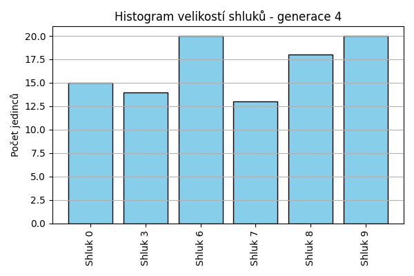
Stabilita mezi generací 3 → 4:
Shluk 6 → 9: 5 jedinců (20.8 %)
Shluk 6 → 3: 4 jedinců (16.7 %)
Shluk 6 → 6: 12 jedinců (50.0 %)
Shluk 6 → 0: 2 jedinců (8.3 %)
Shluk 6 → 8: 1 jedinců (4.2 %)
Shluk 8 → 8: 7 jedinců (58.3 %)
Shluk 8 → 7: 2 jedinců (16.7 %)
Shluk 8 → 0: 1 jedinců (8.3 %)
Shluk 8 → 6: 2 jedinců (16.7 %)
Shluk 3 → 8: 1 jedinců (5.6 %)
Shluk 3 → 3: 8 jedinců (44.4 %)
Shluk 3 → 9: 6 jedinců (33.3 %)
Shluk 3 → 7: 2 jedinců (11.1 %)
Shluk 3 → 0: 1 jedinců (5.6 %)
Shluk 2 → 6: 2 jedinců (13.3 %)
Shluk 2 → 8: 6 jedinců (40.0 %)
Shluk 2 → 9: 6 jedinců (40.0 %)
Shluk 2 → 3: 1 jedinců (6.7 %)
Shluk 0 → 6: 3 jedinců (17.6 %)
Shluk 0 → 0: 11 jedinců (64.7 %)
Shluk 0 → 9: 1 jedinců (5.9 %)
Shluk 0 → 8: 1 jedinců (5.9 %)
Shluk 0 → 7: 1 jedinců (5.9 %)
Shluk 7 → 7: 8 jedinců (57.1 %)
Shluk 7 → 3: 1 jedinců (7.1 %)
Shluk 7 → 8: 2 jedinců (14.3 %)
Shluk 7 → 9: 2 jedinců (14.3 %)
Shluk 7 → 6: 1 jedinců (7.1 %)
Jaccardovo mapování a overlap: Generace 3 → 4
- Cluster 6 → 6 (Jaccard: 0.38, Overlap: 0.60)
- Cluster 8 → 8 (Jaccard: 0.30, Overlap: 0.58)
- Cluster 3 → 3 (Jaccard: 0.33, Overlap: 0.57)
- Cluster 2 → 8 (Jaccard: 0.22, Overlap: 0.40)
- Cluster 0 → 0 (Jaccard: 0.52, Overlap: 0.73)
- Cluster 7 → 7 (Jaccard: 0.42, Overlap: 0.62)
Posun centroidů mezi generací 3 → 4:
- Shluk 0: 210.9396
- Shluk 1: 1000.8267
- Shluk 2: 882.9716
- Shluk 3: 861.5633
- Shluk 4: 868.6554
- Shluk 5: 781.8659
Generace 5
Stabilita mezi generací 4 → 5:
Shluk 9 → 3: 3 jedinců (15.0 %)
Shluk 9 → 9: 10 jedinců (50.0 %)
Shluk 9 → 8: 2 jedinců (10.0 %)
Shluk 9 → 6: 2 jedinců (10.0 %)
Shluk 9 → 0: 3 jedinců (15.0 %)
Shluk 8 → 8: 8 jedinců (44.4 %)
Shluk 8 → 9: 7 jedinců (38.9 %)
Shluk 8 → 7: 1 jedinců (5.6 %)
Shluk 8 → 6: 2 jedinců (11.1 %)
Shluk 7 → 8: 3 jedinců (23.1 %)
Shluk 7 → 7: 8 jedinců (61.5 %)
Shluk 7 → 3: 2 jedinců (15.4 %)
Shluk 3 → 3: 13 jedinců (92.9 %)
Shluk 3 → 7: 1 jedinců (7.1 %)
Shluk 6 → 6: 20 jedinců (100.0 %)
Shluk 0 → 0: 13 jedinců (86.7 %)
Shluk 0 → 6: 2 jedinců (13.3 %)
Jaccardovo mapování a overlap: Generace 4 → 5
- Cluster 9 → 9 (Jaccard: 0.37, Overlap: 0.59)
- Cluster 8 → 8 (Jaccard: 0.35, Overlap: 0.62)
- Cluster 7 → 7 (Jaccard: 0.53, Overlap: 0.80)
- Cluster 3 → 3 (Jaccard: 0.68, Overlap: 0.93)
- Cluster 6 → 6 (Jaccard: 0.77, Overlap: 1.00)
- Cluster 0 → 0 (Jaccard: 0.72, Overlap: 0.87)
Posun centroidů mezi generací 4 → 5:
- Shluk 0: 73.6855
- Shluk 1: 136.3387
- Shluk 2: 118.0549
- Shluk 3: 281.4468
- Shluk 4: 403.2898
- Shluk 5: 507.9599
Generace 6
Stabilita mezi generací 5 → 6:
Shluk 3 → 10: 3 jedinců (16.7 %)
Shluk 3 → 3: 12 jedinců (66.7 %)
Shluk 3 → 6: 2 jedinců (11.1 %)
Shluk 3 → 7: 1 jedinců (5.6 %)
Shluk 8 → 0: 5 jedinců (38.5 %)
Shluk 8 → 7: 2 jedinců (15.4 %)
Shluk 8 → 10: 3 jedinců (23.1 %)
Shluk 8 → 9: 3 jedinců (23.1 %)
Shluk 9 → 7: 3 jedinců (17.6 %)
Shluk 9 → 9: 13 jedinců (76.5 %)
Shluk 9 → 10: 1 jedinců (5.9 %)
Shluk 6 → 3: 1 jedinců (3.8 %)
Shluk 6 → 6: 15 jedinců (57.7 %)
Shluk 6 → 10: 6 jedinců (23.1 %)
Shluk 6 → 0: 2 jedinců (7.7 %)
Shluk 6 → 7: 2 jedinců (7.7 %)
Shluk 0 → 0: 13 jedinců (81.2 %)
Shluk 0 → 6: 2 jedinců (12.5 %)
Shluk 0 → 10: 1 jedinců (6.2 %)
Shluk 7 → 7: 9 jedinců (90.0 %)
Shluk 7 → 10: 1 jedinců (10.0 %)
Jaccardovo mapování a overlap: Generace 5 → 6
- Cluster 3 → 3 (Jaccard: 0.63, Overlap: 0.92)
- Cluster 8 → 0 (Jaccard: 0.18, Overlap: 0.38)
- Cluster 9 → 9 (Jaccard: 0.65, Overlap: 0.81)
- Cluster 6 → 6 (Jaccard: 0.50, Overlap: 0.79)
- Cluster 0 → 0 (Jaccard: 0.57, Overlap: 0.81)
- Cluster 7 → 7 (Jaccard: 0.50, Overlap: 0.90)
Posun centroidů mezi generací 5 → 6:
- Shluk 0: 224.0618
- Shluk 1: 245.4564
- Shluk 2: 196.6353
- Shluk 3: 281.5879
- Shluk 4: 820.5125
- Shluk 5: 773.7523

Generace 7
Stabilita mezi generací 6 → 7:
Shluk 10 → 3: 1 jedinců (6.7 %)
Shluk 10 → 10: 11 jedinců (73.3 %)
Shluk 10 → 6: 3 jedinců (20.0 %)
Shluk 0 → 10: 4 jedinců (20.0 %)
Shluk 0 → 0: 14 jedinců (70.0 %)
Shluk 0 → 3: 2 jedinců (10.0 %)
Shluk 7 → 9: 1 jedinců (5.9 %)
Shluk 7 → 6: 1 jedinců (5.9 %)
Shluk 7 → 3: 1 jedinců (5.9 %)
Shluk 7 → 7: 12 jedinců (70.6 %)
Shluk 7 → 10: 2 jedinců (11.8 %)
Shluk 3 → 7: 1 jedinců (7.7 %)
Shluk 3 → 3: 11 jedinců (84.6 %)
Shluk 3 → 10: 1 jedinců (7.7 %)
Shluk 6 → 6: 15 jedinců (78.9 %)
Shluk 6 → 0: 1 jedinců (5.3 %)
Shluk 6 → 10: 3 jedinců (15.8 %)
Shluk 9 → 9: 14 jedinců (87.5 %)
Shluk 9 → 10: 1 jedinců (6.2 %)
Shluk 9 → 3: 1 jedinců (6.2 %)
Jaccardovo mapování a overlap: Generace 6 → 7
- Cluster 10 → 10 (Jaccard: 0.42, Overlap: 0.73)
- Cluster 0 → 0 (Jaccard: 0.67, Overlap: 0.93)
- Cluster 7 → 7 (Jaccard: 0.67, Overlap: 0.92)
- Cluster 3 → 3 (Jaccard: 0.61, Overlap: 0.85)
- Cluster 6 → 6 (Jaccard: 0.65, Overlap: 0.79)
- Cluster 9 → 9 (Jaccard: 0.82, Overlap: 0.93)
Posun centroidů mezi generací 6 → 7:
- Shluk 0: 216.6116
- Shluk 1: 265.7989
- Shluk 2: 144.8582
- Shluk 3: 163.2969
- Shluk 4: 80.2318
- Shluk 5: 330.1082

Generace 8
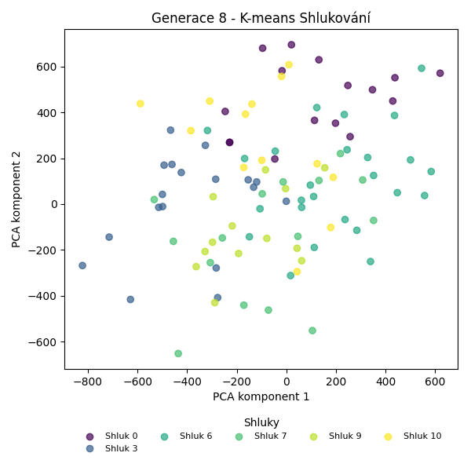
Stabilita mezi generací 7 → 8:
Shluk 3 → 7: 1 jedinců (6.2 %)
Shluk 3 → 0: 3 jedinců (18.8 %)
Shluk 3 → 3: 11 jedinců (68.8 %)
Shluk 3 → 10: 1 jedinců (6.2 %)
Shluk 10 → 0: 4 jedinců (18.2 %)
Shluk 10 → 10: 10 jedinců (45.5 %)
Shluk 10 → 6: 6 jedinců (27.3 %)
Shluk 10 → 3: 2 jedinců (9.1 %)
Shluk 9 → 7: 1 jedinců (6.7 %)
Shluk 9 → 3: 2 jedinců (13.3 %)
Shluk 9 → 9: 12 jedinců (80.0 %)
Shluk 7 → 7: 12 jedinců (92.3 %)
Shluk 7 → 10: 1 jedinců (7.7 %)
Shluk 6 → 6: 16 jedinců (84.2 %)
Shluk 6 → 0: 1 jedinců (5.3 %)
Shluk 6 → 9: 1 jedinců (5.3 %)
Shluk 6 → 3: 1 jedinců (5.3 %)
Shluk 0 → 0: 8 jedinců (53.3 %)
Shluk 0 → 10: 1 jedinců (6.7 %)
Shluk 0 → 6: 3 jedinců (20.0 %)
Shluk 0 → 3: 2 jedinců (13.3 %)
Shluk 0 → 7: 1 jedinců (6.7 %)
Jaccardovo mapování a overlap: Generace 7 → 8
- Cluster 3 → 3 (Jaccard: 0.48, Overlap: 0.69)
- Cluster 10 → 10 (Jaccard: 0.40, Overlap: 0.77)
- Cluster 9 → 9 (Jaccard: 0.75, Overlap: 0.92)
- Cluster 7 → 7 (Jaccard: 0.75, Overlap: 0.92)
- Cluster 6 → 6 (Jaccard: 0.57, Overlap: 0.84)
- Cluster 0 → 0 (Jaccard: 0.35, Overlap: 0.53)
Posun centroidů mezi generací 7 → 8:
- Shluk 0: 392.4428
- Shluk 1: 310.5052
- Shluk 2: 250.3357
- Shluk 3: 128.5518
- Shluk 4: 167.6173
- Shluk 5: 205.4815
Generace 9
Stabilita mezi generací 8 → 9:
Shluk 7 → 7: 7 jedinců (46.7 %)
Shluk 7 → 9: 5 jedinců (33.3 %)
Shluk 7 → 6: 2 jedinců (13.3 %)
Shluk 7 → 10: 1 jedinců (6.7 %)
Shluk 0 → 10: 4 jedinců (25.0 %)
Shluk 0 → 0: 12 jedinců (75.0 %)
Shluk 6 → 6: 15 jedinců (60.0 %)
Shluk 6 → 10: 6 jedinců (24.0 %)
Shluk 6 → 0: 2 jedinců (8.0 %)
Shluk 6 → 9: 2 jedinců (8.0 %)
Shluk 3 → 3: 12 jedinců (66.7 %)
Shluk 3 → 7: 4 jedinců (22.2 %)
Shluk 3 → 6: 1 jedinců (5.6 %)
Shluk 3 → 10: 1 jedinců (5.6 %)
Shluk 10 → 6: 3 jedinců (23.1 %)
Shluk 10 → 0: 2 jedinců (15.4 %)
Shluk 10 → 10: 5 jedinců (38.5 %)
Shluk 10 → 9: 1 jedinců (7.7 %)
Shluk 10 → 7: 2 jedinců (15.4 %)
Shluk 9 → 9: 13 jedinců (100.0 %)
Jaccardovo mapování a overlap: Generace 8 → 9
- Cluster 7 → 7 (Jaccard: 0.33, Overlap: 0.54)
- Cluster 0 → 0 (Jaccard: 0.60, Overlap: 0.75)
- Cluster 6 → 6 (Jaccard: 0.48, Overlap: 0.71)
- Cluster 3 → 3 (Jaccard: 0.67, Overlap: 1.00)
- Cluster 10 → 10 (Jaccard: 0.20, Overlap: 0.38)
- Cluster 9 → 9 (Jaccard: 0.62, Overlap: 1.00)
Posun centroidů mezi generací 8 → 9:
- Shluk 0: 328.0393
- Shluk 1: 193.7695
- Shluk 2: 205.9421
- Shluk 3: 435.8810
- Shluk 4: 235.9116
- Shluk 5: 428.8023
Generace 10
Stabilita mezi generací 9 → 10:
Shluk 7 → 7: 11 jedinců (84.6 %)
Shluk 7 → 3: 2 jedinců (15.4 %)
Shluk 10 → 7: 5 jedinců (29.4 %)
Shluk 10 → 6: 2 jedinců (11.8 %)
Shluk 10 → 0: 2 jedinců (11.8 %)
Shluk 10 → 10: 7 jedinců (41.2 %)
Shluk 10 → 9: 1 jedinců (5.9 %)
Shluk 9 → 6: 5 jedinců (23.8 %)
Shluk 9 → 9: 15 jedinců (71.4 %)
Shluk 9 → 0: 1 jedinců (4.8 %)
Shluk 6 → 0: 7 jedinců (33.3 %)
Shluk 6 → 10: 5 jedinců (23.8 %)
Shluk 6 → 9: 2 jedinců (9.5 %)
Shluk 6 → 6: 7 jedinců (33.3 %)
Shluk 3 → 10: 4 jedinců (33.3 %)
Shluk 3 → 6: 1 jedinců (8.3 %)
Shluk 3 → 3: 6 jedinců (50.0 %)
Shluk 3 → 9: 1 jedinců (8.3 %)
Shluk 0 → 0: 10 jedinců (62.5 %)
Shluk 0 → 10: 2 jedinců (12.5 %)
Shluk 0 → 7: 2 jedinců (12.5 %)
Shluk 0 → 3: 1 jedinců (6.2 %)
Shluk 0 → 9: 1 jedinců (6.2 %)
Jaccardovo mapování a overlap: Generace 9 → 10
- Cluster 7 → 7 (Jaccard: 0.55, Overlap: 0.85)
- Cluster 10 → 10 (Jaccard: 0.25, Overlap: 0.41)
- Cluster 9 → 9 (Jaccard: 0.58, Overlap: 0.75)
- Cluster 6 → 6 (Jaccard: 0.24, Overlap: 0.47)
- Cluster 3 → 3 (Jaccard: 0.40, Overlap: 0.67)
- Cluster 0 → 0 (Jaccard: 0.38, Overlap: 0.62)
Posun centroidů mezi generací 9 → 10:
- Shluk 0: 351.7700
- Shluk 1: 312.2241
- Shluk 2: 510.7315
- Shluk 3: 314.8090
- Shluk 4: 180.6662
- Shluk 5: 361.9491
Generace 11
Stabilita mezi generací 10 → 11:
Shluk 7 → 7: 13 jedinců (72.2 %)
Shluk 7 → 10: 3 jedinců (16.7 %)
Shluk 7 → 3: 1 jedinců (5.6 %)
Shluk 7 → 9: 1 jedinců (5.6 %)
Shluk 6 → 6: 14 jedinců (93.3 %)
Shluk 6 → 7: 1 jedinců (6.7 %)
Shluk 0 → 0: 14 jedinců (70.0 %)
Shluk 0 → 9: 1 jedinců (5.0 %)
Shluk 0 → 10: 3 jedinců (15.0 %)
Shluk 0 → 3: 1 jedinců (5.0 %)
Shluk 0 → 7: 1 jedinců (5.0 %)
Shluk 10 → 3: 4 jedinců (22.2 %)
Shluk 10 → 10: 12 jedinců (66.7 %)
Shluk 10 → 7: 2 jedinců (11.1 %)
Shluk 3 → 9: 1 jedinců (11.1 %)
Shluk 3 → 10: 1 jedinců (11.1 %)
Shluk 3 → 3: 6 jedinců (66.7 %)
Shluk 3 → 0: 1 jedinců (11.1 %)
Shluk 9 → 9: 16 jedinců (80.0 %)
Shluk 9 → 7: 3 jedinců (15.0 %)
Shluk 9 → 10: 1 jedinců (5.0 %)
Jaccardovo mapování a overlap: Generace 10 → 11
- Cluster 7 → 7 (Jaccard: 0.52, Overlap: 0.72)
- Cluster 6 → 6 (Jaccard: 0.93, Overlap: 1.00)
- Cluster 0 → 0 (Jaccard: 0.67, Overlap: 0.93)
- Cluster 10 → 10 (Jaccard: 0.46, Overlap: 0.67)
- Cluster 3 → 3 (Jaccard: 0.40, Overlap: 0.67)
- Cluster 9 → 9 (Jaccard: 0.70, Overlap: 0.84)
Posun centroidů mezi generací 10 → 11:
- Shluk 0: 203.2660
- Shluk 1: 339.1440
- Shluk 2: 103.4526
- Shluk 3: 224.9897
- Shluk 4: 127.6732
- Shluk 5: 253.1212
Generace 12
Stabilita mezi generací 11 → 12:
Shluk 7 → 9: 5 jedinců (25.0 %)
Shluk 7 → 0: 7 jedinců (35.0 %)
Shluk 7 → 6: 6 jedinců (30.0 %)
Shluk 7 → 11: 2 jedinců (10.0 %)
Shluk 6 → 11: 6 jedinců (42.9 %)
Shluk 6 → 6: 6 jedinců (42.9 %)
Shluk 6 → 10: 2 jedinců (14.3 %)
Shluk 0 → 11: 1 jedinců (6.7 %)
Shluk 0 → 0: 9 jedinců (60.0 %)
Shluk 0 → 10: 4 jedinců (26.7 %)
Shluk 0 → 3: 1 jedinců (6.7 %)
Shluk 3 → 10: 3 jedinců (25.0 %)
Shluk 3 → 3: 8 jedinců (66.7 %)
Shluk 3 → 0: 1 jedinců (8.3 %)
Shluk 10 → 10: 14 jedinců (70.0 %)
Shluk 10 → 0: 5 jedinců (25.0 %)
Shluk 10 → 6: 1 jedinců (5.0 %)
Shluk 9 → 11: 9 jedinců (47.4 %)
Shluk 9 → 9: 8 jedinců (42.1 %)
Shluk 9 → 6: 2 jedinců (10.5 %)
Jaccardovo mapování a overlap: Generace 11 → 12
- Cluster 7 → 6 (Jaccard: 0.21, Overlap: 0.40)
- Cluster 6 → 6 (Jaccard: 0.26, Overlap: 0.43)
- Cluster 0 → 0 (Jaccard: 0.32, Overlap: 0.60)
- Cluster 3 → 3 (Jaccard: 0.62, Overlap: 0.89)
- Cluster 10 → 10 (Jaccard: 0.48, Overlap: 0.70)
- Cluster 9 → 9 (Jaccard: 0.33, Overlap: 0.62)
Posun centroidů mezi generací 11 → 12:
- Shluk 0: 483.7147
- Shluk 1: 267.7511
- Shluk 2: 485.8842
- Shluk 3: 524.9573
- Shluk 4: 785.8871
- Shluk 5: 819.8544
Generace 13
Stabilita mezi generací 12 → 13:
Shluk 9 → 9: 11 jedinců (84.6 %)
Shluk 9 → 6: 1 jedinců (7.7 %)
Shluk 9 → 3: 1 jedinců (7.7 %)
Shluk 0 → 0: 20 jedinců (90.9 %)
Shluk 0 → 10: 1 jedinců (4.5 %)
Shluk 0 → 6: 1 jedinců (4.5 %)
Shluk 11 → 11: 7 jedinců (38.9 %)
Shluk 11 → 9: 2 jedinců (11.1 %)
Shluk 11 → 3: 1 jedinců (5.6 %)
Shluk 11 → 6: 8 jedinců (44.4 %)
Shluk 6 → 9: 2 jedinců (13.3 %)
Shluk 6 → 11: 2 jedinců (13.3 %)
Shluk 6 → 6: 7 jedinců (46.7 %)
Shluk 6 → 0: 2 jedinců (13.3 %)
Shluk 6 → 10: 2 jedinců (13.3 %)
Shluk 10 → 10: 18 jedinců (78.3 %)
Shluk 10 → 0: 3 jedinců (13.0 %)
Shluk 10 → 11: 1 jedinců (4.3 %)
Shluk 10 → 6: 1 jedinců (4.3 %)
Shluk 3 → 3: 8 jedinců (88.9 %)
Shluk 3 → 9: 1 jedinců (11.1 %)
Jaccardovo mapování a overlap: Generace 12 → 13
- Cluster 9 → 9 (Jaccard: 0.61, Overlap: 0.85)
- Cluster 0 → 0 (Jaccard: 0.74, Overlap: 0.91)
- Cluster 11 → 11 (Jaccard: 0.33, Overlap: 0.70)
- Cluster 6 → 6 (Jaccard: 0.27, Overlap: 0.47)
- Cluster 10 → 10 (Jaccard: 0.69, Overlap: 0.86)
- Cluster 3 → 3 (Jaccard: 0.73, Overlap: 0.89)
Posun centroidů mezi generací 12 → 13:
- Shluk 0: 158.3837
- Shluk 1: 125.1169
- Shluk 2: 517.5419
- Shluk 3: 156.8065
- Shluk 4: 124.5851
- Shluk 5: 454.2898
Generace 14
Stabilita mezi generací 13 → 14:
Shluk 9 → 9: 7 jedinců (43.8 %)
Shluk 9 → 0: 1 jedinců (6.2 %)
Shluk 9 → 6: 1 jedinců (6.2 %)
Shluk 9 → 12: 7 jedinců (43.8 %)
Shluk 0 → 0: 7 jedinců (28.0 %)
Shluk 0 → 10: 3 jedinců (12.0 %)
Shluk 0 → 12: 11 jedinců (44.0 %)
Shluk 0 → 3: 1 jedinců (4.0 %)
Shluk 0 → 9: 2 jedinců (8.0 %)
Shluk 0 → 6: 1 jedinců (4.0 %)
Shluk 11 → 10: 3 jedinců (30.0 %)
Shluk 11 → 6: 6 jedinců (60.0 %)
Shluk 11 → 9: 1 jedinců (10.0 %)
Shluk 10 → 3: 1 jedinců (4.8 %)
Shluk 10 → 12: 8 jedinců (38.1 %)
Shluk 10 → 10: 8 jedinců (38.1 %)
Shluk 10 → 6: 4 jedinců (19.0 %)
Shluk 3 → 6: 1 jedinců (10.0 %)
Shluk 3 → 3: 9 jedinců (90.0 %)
Shluk 6 → 9: 8 jedinců (44.4 %)
Shluk 6 → 6: 9 jedinců (50.0 %)
Shluk 6 → 12: 1 jedinců (5.6 %)
Jaccardovo mapování a overlap: Generace 13 → 14
- Cluster 9 → 9 (Jaccard: 0.26, Overlap: 0.44)
- Cluster 0 → 0 (Jaccard: 0.27, Overlap: 0.88)
- Cluster 11 → 6 (Jaccard: 0.23, Overlap: 0.60)
- Cluster 10 → 10 (Jaccard: 0.30, Overlap: 0.57)
- Cluster 3 → 3 (Jaccard: 0.75, Overlap: 0.90)
- Cluster 6 → 6 (Jaccard: 0.29, Overlap: 0.50)
Posun centroidů mezi generací 13 → 14:
- Shluk 0: 432.8246
- Shluk 1: 236.7260
- Shluk 2: 414.7297
- Shluk 3: 520.0587
- Shluk 4: 398.6925
- Shluk 5: 869.3071

Generace 15
Stabilita mezi generací 14 → 15:
Shluk 9 → 9: 14 jedinců (77.8 %)
Shluk 9 → 3: 1 jedinců (5.6 %)
Shluk 9 → 6: 3 jedinců (16.7 %)
Shluk 0 → 0: 8 jedinců (100.0 %)
Shluk 10 → 10: 8 jedinců (57.1 %)
Shluk 10 → 3: 1 jedinců (7.1 %)
Shluk 10 → 12: 2 jedinců (14.3 %)
Shluk 10 → 0: 3 jedinců (21.4 %)
Shluk 3 → 10: 3 jedinců (27.3 %)
Shluk 3 → 9: 2 jedinců (18.2 %)
Shluk 3 → 3: 5 jedinců (45.5 %)
Shluk 3 → 12: 1 jedinců (9.1 %)
Shluk 12 → 12: 20 jedinců (74.1 %)
Shluk 12 → 10: 1 jedinců (3.7 %)
Shluk 12 → 6: 3 jedinců (11.1 %)
Shluk 12 → 0: 2 jedinců (7.4 %)
Shluk 12 → 9: 1 jedinců (3.7 %)
Shluk 6 → 6: 22 jedinců (100.0 %)
Jaccardovo mapování a overlap: Generace 14 → 15
- Cluster 9 → 9 (Jaccard: 0.67, Overlap: 0.82)
- Cluster 0 → 0 (Jaccard: 0.62, Overlap: 1.00)
- Cluster 10 → 10 (Jaccard: 0.44, Overlap: 0.67)
- Cluster 3 → 3 (Jaccard: 0.38, Overlap: 0.71)
- Cluster 12 → 12 (Jaccard: 0.67, Overlap: 0.87)
- Cluster 6 → 6 (Jaccard: 0.79, Overlap: 1.00)
Posun centroidů mezi generací 14 → 15:
- Shluk 0: 237.8733
- Shluk 1: 293.7556
- Shluk 2: 109.9829
- Shluk 3: 163.5659
- Shluk 4: 356.7963
- Shluk 5: 164.8943
Generace 16
Stabilita mezi generací 15 → 16:
Shluk 9 → 12: 1 jedinců (5.9 %)
Shluk 9 → 9: 12 jedinců (70.6 %)
Shluk 9 → 6: 1 jedinců (5.9 %)
Shluk 9 → 13: 3 jedinců (17.6 %)
Shluk 0 → 12: 9 jedinců (69.2 %)
Shluk 0 → 9: 1 jedinců (7.7 %)
Shluk 0 → 10: 3 jedinců (23.1 %)
Shluk 10 → 13: 3 jedinců (25.0 %)
Shluk 10 → 3: 1 jedinců (8.3 %)
Shluk 10 → 10: 7 jedinců (58.3 %)
Shluk 10 → 6: 1 jedinců (8.3 %)
Shluk 3 → 3: 6 jedinců (85.7 %)
Shluk 3 → 6: 1 jedinců (14.3 %)
Shluk 12 → 12: 16 jedinců (69.6 %)
Shluk 12 → 3: 2 jedinců (8.7 %)
Shluk 12 → 10: 2 jedinců (8.7 %)
Shluk 12 → 6: 2 jedinců (8.7 %)
Shluk 12 → 13: 1 jedinců (4.3 %)
Shluk 6 → 6: 19 jedinců (67.9 %)
Shluk 6 → 9: 2 jedinců (7.1 %)
Shluk 6 → 13: 6 jedinců (21.4 %)
Shluk 6 → 12: 1 jedinců (3.6 %)
Jaccardovo mapování a overlap: Generace 15 → 16
- Cluster 9 → 9 (Jaccard: 0.60, Overlap: 0.80)
- Cluster 0 → 12 (Jaccard: 0.29, Overlap: 0.69)
- Cluster 10 → 10 (Jaccard: 0.41, Overlap: 0.58)
- Cluster 3 → 3 (Jaccard: 0.60, Overlap: 0.86)
- Cluster 12 → 12 (Jaccard: 0.47, Overlap: 0.70)
- Cluster 6 → 6 (Jaccard: 0.58, Overlap: 0.79)
Posun centroidů mezi generací 15 → 16:
- Shluk 0: 1049.3711
- Shluk 1: 1173.8154
- Shluk 2: 684.0503
- Shluk 3: 1044.2044
- Shluk 4: 824.1169
- Shluk 5: 832.2508
Generace 17
Stabilita mezi generací 16 → 17:
Shluk 12 → 9: 1 jedinců (3.7 %)
Shluk 12 → 12: 21 jedinců (77.8 %)
Shluk 12 → 10: 4 jedinců (14.8 %)
Shluk 12 → 13: 1 jedinců (3.7 %)
Shluk 13 → 10: 2 jedinců (15.4 %)
Shluk 13 → 13: 6 jedinců (46.2 %)
Shluk 13 → 6: 4 jedinců (30.8 %)
Shluk 13 → 12: 1 jedinců (7.7 %)
Shluk 9 → 9: 11 jedinců (73.3 %)
Shluk 9 → 13: 2 jedinců (13.3 %)
Shluk 9 → 6: 2 jedinců (13.3 %)
Shluk 3 → 3: 7 jedinců (77.8 %)
Shluk 3 → 10: 1 jedinců (11.1 %)
Shluk 3 → 12: 1 jedinců (11.1 %)
Shluk 10 → 10: 11 jedinců (91.7 %)
Shluk 10 → 9: 1 jedinců (8.3 %)
Shluk 6 → 6: 13 jedinců (54.2 %)
Shluk 6 → 9: 5 jedinců (20.8 %)
Shluk 6 → 13: 6 jedinců (25.0 %)
Jaccardovo mapování a overlap: Generace 16 → 17
- Cluster 12 → 12 (Jaccard: 0.72, Overlap: 0.91)
- Cluster 13 → 13 (Jaccard: 0.27, Overlap: 0.46)
- Cluster 9 → 9 (Jaccard: 0.50, Overlap: 0.73)
- Cluster 3 → 3 (Jaccard: 0.78, Overlap: 1.00)
- Cluster 10 → 10 (Jaccard: 0.58, Overlap: 0.92)
- Cluster 6 → 6 (Jaccard: 0.43, Overlap: 0.68)
Posun centroidů mezi generací 16 → 17:
- Shluk 0: 170.7055
- Shluk 1: 372.9873
- Shluk 2: 278.6956
- Shluk 3: 190.1590
- Shluk 4: 108.8074
- Shluk 5: 500.4117
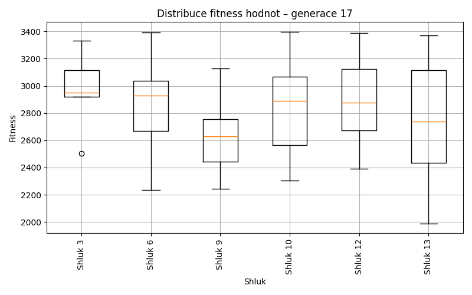
Generace 18
Stabilita mezi generací 17 → 18:
Shluk 9 → 9: 14 jedinců (77.8 %)
Shluk 9 → 6: 4 jedinců (22.2 %)
Shluk 12 → 12: 21 jedinců (91.3 %)
Shluk 12 → 6: 1 jedinců (4.3 %)
Shluk 12 → 13: 1 jedinců (4.3 %)
Shluk 10 → 13: 3 jedinců (16.7 %)
Shluk 10 → 10: 15 jedinců (83.3 %)
Shluk 3 → 3: 5 jedinců (71.4 %)
Shluk 3 → 6: 1 jedinců (14.3 %)
Shluk 3 → 12: 1 jedinců (14.3 %)
Shluk 6 → 6: 13 jedinců (68.4 %)
Shluk 6 → 13: 1 jedinců (5.3 %)
Shluk 6 → 9: 5 jedinců (26.3 %)
Shluk 13 → 6: 6 jedinců (40.0 %)
Shluk 13 → 12: 2 jedinců (13.3 %)
Shluk 13 → 13: 7 jedinců (46.7 %)
Jaccardovo mapování a overlap: Generace 17 → 18
- Cluster 9 → 9 (Jaccard: 0.61, Overlap: 0.78)
- Cluster 12 → 12 (Jaccard: 0.81, Overlap: 0.91)
- Cluster 10 → 10 (Jaccard: 0.83, Overlap: 1.00)
- Cluster 3 → 3 (Jaccard: 0.71, Overlap: 1.00)
- Cluster 6 → 6 (Jaccard: 0.42, Overlap: 0.68)
- Cluster 13 → 13 (Jaccard: 0.35, Overlap: 0.58)
Posun centroidů mezi generací 17 → 18:
- Shluk 0: 176.9097
- Shluk 1: 324.3403
- Shluk 2: 255.4716
- Shluk 3: 148.1179
- Shluk 4: 99.6322
- Shluk 5: 453.7840
Generace 19
Stabilita mezi generací 18 → 19:
Shluk 9 → 9: 14 jedinců (73.7 %)
Shluk 9 → 10: 1 jedinců (5.3 %)
Shluk 9 → 14: 4 jedinců (21.1 %)
Shluk 12 → 12: 19 jedinců (79.2 %)
Shluk 12 → 14: 2 jedinců (8.3 %)
Shluk 12 → 9: 2 jedinců (8.3 %)
Shluk 12 → 6: 1 jedinců (4.2 %)
Shluk 13 → 10: 4 jedinců (33.3 %)
Shluk 13 → 9: 1 jedinců (8.3 %)
Shluk 13 → 14: 3 jedinců (25.0 %)
Shluk 13 → 12: 2 jedinců (16.7 %)
Shluk 13 → 6: 2 jedinců (16.7 %)
Shluk 6 → 6: 18 jedinců (72.0 %)
Shluk 6 → 9: 1 jedinců (4.0 %)
Shluk 6 → 14: 5 jedinců (20.0 %)
Shluk 6 → 10: 1 jedinců (4.0 %)
Shluk 3 → 3: 5 jedinců (100.0 %)
Shluk 10 → 14: 1 jedinců (6.7 %)
Shluk 10 → 10: 7 jedinců (46.7 %)
Shluk 10 → 12: 5 jedinců (33.3 %)
Shluk 10 → 6: 2 jedinců (13.3 %)
Jaccardovo mapování a overlap: Generace 18 → 19
- Cluster 9 → 9 (Jaccard: 0.61, Overlap: 0.78)
- Cluster 12 → 12 (Jaccard: 0.61, Overlap: 0.79)
- Cluster 13 → 10 (Jaccard: 0.19, Overlap: 0.33)
- Cluster 6 → 6 (Jaccard: 0.60, Overlap: 0.78)
- Cluster 3 → 3 (Jaccard: 1.00, Overlap: 1.00)
- Cluster 10 → 10 (Jaccard: 0.33, Overlap: 0.54)
Posun centroidů mezi generací 18 → 19:
- Shluk 0: 0.0000
- Shluk 1: 184.1628
- Shluk 2: 160.1463
- Shluk 3: 404.2349
- Shluk 4: 222.7193
- Shluk 5: 735.5154
Generace 20
Stabilita mezi generací 19 → 20:
Shluk 9 → 9: 11 jedinců (61.1 %)
Shluk 9 → 6: 3 jedinců (16.7 %)
Shluk 9 → 15: 3 jedinců (16.7 %)
Shluk 9 → 12: 1 jedinců (5.6 %)
Shluk 12 → 15: 10 jedinců (38.5 %)
Shluk 12 → 12: 14 jedinců (53.8 %)
Shluk 12 → 9: 2 jedinců (7.7 %)
Shluk 10 → 10: 9 jedinců (69.2 %)
Shluk 10 → 9: 2 jedinců (15.4 %)
Shluk 10 → 12: 1 jedinců (7.7 %)
Shluk 10 → 6: 1 jedinců (7.7 %)
Shluk 6 → 6: 13 jedinců (56.5 %)
Shluk 6 → 14: 3 jedinců (13.0 %)
Shluk 6 → 10: 2 jedinců (8.7 %)
Shluk 6 → 9: 3 jedinců (13.0 %)
Shluk 6 → 12: 2 jedinců (8.7 %)
Shluk 3 → 12: 1 jedinců (20.0 %)
Shluk 3 → 14: 2 jedinců (40.0 %)
Shluk 3 → 9: 2 jedinců (40.0 %)
Shluk 14 → 12: 1 jedinců (6.7 %)
Shluk 14 → 14: 11 jedinců (73.3 %)
Shluk 14 → 10: 3 jedinců (20.0 %)
Jaccardovo mapování a overlap: Generace 19 → 20
- Cluster 9 → 9 (Jaccard: 0.41, Overlap: 0.61)
- Cluster 12 → 12 (Jaccard: 0.44, Overlap: 0.70)
- Cluster 10 → 10 (Jaccard: 0.50, Overlap: 0.69)
- Cluster 6 → 6 (Jaccard: 0.48, Overlap: 0.76)
- Cluster 3 → 14 (Jaccard: 0.11, Overlap: 0.40)
- Cluster 14 → 14 (Jaccard: 0.55, Overlap: 0.73)
Posun centroidů mezi generací 19 → 20:
- Shluk 0: 1426.3013
- Shluk 1: 681.9692
- Shluk 2: 906.0441
- Shluk 3: 706.0295
- Shluk 4: 979.9658
- Shluk 5: 971.5312
Generace 21
Stabilita mezi generací 20 → 21:
Shluk 9 → 9: 18 jedinců (90.0 %)
Shluk 9 → 14: 2 jedinců (10.0 %)
Shluk 15 → 6: 2 jedinců (15.4 %)
Shluk 15 → 15: 9 jedinců (69.2 %)
Shluk 15 → 10: 2 jedinců (15.4 %)
Shluk 10 → 10: 12 jedinců (85.7 %)
Shluk 10 → 6: 1 jedinců (7.1 %)
Shluk 10 → 15: 1 jedinců (7.1 %)
Shluk 12 → 15: 5 jedinců (25.0 %)
Shluk 12 → 14: 2 jedinců (10.0 %)
Shluk 12 → 12: 12 jedinců (60.0 %)
Shluk 12 → 10: 1 jedinců (5.0 %)
Shluk 6 → 6: 12 jedinců (70.6 %)
Shluk 6 → 9: 4 jedinců (23.5 %)
Shluk 6 → 10: 1 jedinců (5.9 %)
Shluk 14 → 14: 12 jedinců (75.0 %)
Shluk 14 → 9: 2 jedinců (12.5 %)
Shluk 14 → 6: 2 jedinců (12.5 %)
Jaccardovo mapování a overlap: Generace 20 → 21
- Cluster 9 → 9 (Jaccard: 0.69, Overlap: 0.90)
- Cluster 15 → 15 (Jaccard: 0.47, Overlap: 0.69)
- Cluster 10 → 10 (Jaccard: 0.67, Overlap: 0.86)
- Cluster 12 → 12 (Jaccard: 0.60, Overlap: 1.00)
- Cluster 6 → 6 (Jaccard: 0.55, Overlap: 0.71)
- Cluster 14 → 14 (Jaccard: 0.60, Overlap: 0.75)
Posun centroidů mezi generací 20 → 21:
- Shluk 0: 178.5529
- Shluk 1: 182.1752
- Shluk 2: 222.8183
- Shluk 3: 245.8108
- Shluk 4: 336.0608
- Shluk 5: 244.4665
Generace 22
Stabilita mezi generací 21 → 22:
Shluk 9 → 9: 21 jedinců (87.5 %)
Shluk 9 → 6: 1 jedinců (4.2 %)
Shluk 9 → 10: 1 jedinců (4.2 %)
Shluk 9 → 16: 1 jedinců (4.2 %)
Shluk 6 → 6: 15 jedinců (88.2 %)
Shluk 6 → 14: 2 jedinců (11.8 %)
Shluk 10 → 16: 5 jedinců (31.2 %)
Shluk 10 → 10: 9 jedinců (56.2 %)
Shluk 10 → 9: 1 jedinců (6.2 %)
Shluk 10 → 12: 1 jedinců (6.2 %)
Shluk 15 → 12: 7 jedinců (46.7 %)
Shluk 15 → 6: 3 jedinců (20.0 %)
Shluk 15 → 16: 3 jedinců (20.0 %)
Shluk 15 → 9: 2 jedinců (13.3 %)
Shluk 14 → 14: 13 jedinců (81.2 %)
Shluk 14 → 9: 3 jedinců (18.8 %)
Shluk 12 → 12: 8 jedinců (66.7 %)
Shluk 12 → 6: 1 jedinců (8.3 %)
Shluk 12 → 16: 3 jedinců (25.0 %)
Jaccardovo mapování a overlap: Generace 21 → 22
- Cluster 9 → 9 (Jaccard: 0.70, Overlap: 0.88)
- Cluster 6 → 6 (Jaccard: 0.68, Overlap: 0.88)
- Cluster 10 → 10 (Jaccard: 0.53, Overlap: 0.90)
- Cluster 15 → 12 (Jaccard: 0.29, Overlap: 0.47)
- Cluster 14 → 14 (Jaccard: 0.72, Overlap: 0.87)
- Cluster 12 → 12 (Jaccard: 0.40, Overlap: 0.67)
Posun centroidů mezi generací 21 → 22:
- Shluk 0: 164.2894
- Shluk 1: 137.2981
- Shluk 2: 299.0058
- Shluk 3: 302.4752
- Shluk 4: 234.2300
- Shluk 5: 624.3064
Generace 23
Stabilita mezi generací 22 → 23:
Shluk 9 → 9: 15 jedinců (55.6 %)
Shluk 9 → 16: 2 jedinců (7.4 %)
Shluk 9 → 6: 3 jedinců (11.1 %)
Shluk 9 → 14: 5 jedinců (18.5 %)
Shluk 9 → 10: 2 jedinců (7.4 %)
Shluk 6 → 6: 16 jedinců (80.0 %)
Shluk 6 → 9: 3 jedinců (15.0 %)
Shluk 6 → 14: 1 jedinců (5.0 %)
Shluk 16 → 16: 8 jedinců (66.7 %)
Shluk 16 → 12: 2 jedinců (16.7 %)
Shluk 16 → 14: 1 jedinců (8.3 %)
Shluk 16 → 10: 1 jedinců (8.3 %)
Shluk 12 → 12: 13 jedinců (81.2 %)
Shluk 12 → 14: 1 jedinců (6.2 %)
Shluk 12 → 16: 2 jedinců (12.5 %)
Shluk 14 → 16: 1 jedinců (6.7 %)
Shluk 14 → 14: 11 jedinců (73.3 %)
Shluk 14 → 10: 3 jedinců (20.0 %)
Shluk 10 → 10: 8 jedinců (80.0 %)
Shluk 10 → 6: 2 jedinců (20.0 %)
Jaccardovo mapování a overlap: Generace 22 → 23
- Cluster 9 → 9 (Jaccard: 0.50, Overlap: 0.83)
- Cluster 6 → 6 (Jaccard: 0.64, Overlap: 0.80)
- Cluster 16 → 16 (Jaccard: 0.47, Overlap: 0.67)
- Cluster 12 → 12 (Jaccard: 0.72, Overlap: 0.87)
- Cluster 14 → 14 (Jaccard: 0.48, Overlap: 0.73)
- Cluster 10 → 10 (Jaccard: 0.50, Overlap: 0.80)
Posun centroidů mezi generací 22 → 23:
- Shluk 0: 184.4317
- Shluk 1: 285.8066
- Shluk 2: 256.9026
- Shluk 3: 170.1194
- Shluk 4: 389.4022
- Shluk 5: 279.7756
Generace 24
Stabilita mezi generací 23 → 24:
Shluk 9 → 9: 18 jedinců (100.0 %)
Shluk 6 → 16: 2 jedinců (9.5 %)
Shluk 6 → 6: 13 jedinců (61.9 %)
Shluk 6 → 10: 5 jedinců (23.8 %)
Shluk 6 → 9: 1 jedinců (4.8 %)
Shluk 16 → 16: 10 jedinců (76.9 %)
Shluk 16 → 14: 1 jedinců (7.7 %)
Shluk 16 → 12: 1 jedinců (7.7 %)
Shluk 16 → 10: 1 jedinců (7.7 %)
Shluk 12 → 12: 11 jedinců (73.3 %)
Shluk 12 → 9: 1 jedinců (6.7 %)
Shluk 12 → 14: 1 jedinců (6.7 %)
Shluk 12 → 16: 2 jedinců (13.3 %)
Shluk 14 → 14: 16 jedinců (84.2 %)
Shluk 14 → 10: 3 jedinců (15.8 %)
Shluk 10 → 10: 12 jedinců (85.7 %)
Shluk 10 → 6: 1 jedinců (7.1 %)
Shluk 10 → 16: 1 jedinců (7.1 %)
Jaccardovo mapování a overlap: Generace 23 → 24
- Cluster 9 → 9 (Jaccard: 0.90, Overlap: 1.00)
- Cluster 6 → 6 (Jaccard: 0.59, Overlap: 0.93)
- Cluster 16 → 16 (Jaccard: 0.56, Overlap: 0.77)
- Cluster 12 → 12 (Jaccard: 0.69, Overlap: 0.92)
- Cluster 14 → 14 (Jaccard: 0.76, Overlap: 0.89)
- Cluster 10 → 10 (Jaccard: 0.52, Overlap: 0.86)
Posun centroidů mezi generací 23 → 24:
- Shluk 0: 188.8892
- Shluk 1: 43.0783
- Shluk 2: 251.7853
- Shluk 3: 229.8090
- Shluk 4: 152.9386
- Shluk 5: 167.3116
Generace 25
Stabilita mezi generací 24 → 25:
Shluk 9 → 9: 15 jedinců (75.0 %)
Shluk 9 → 6: 3 jedinců (15.0 %)
Shluk 9 → 10: 2 jedinců (10.0 %)
Shluk 16 → 6: 3 jedinců (20.0 %)
Shluk 16 → 16: 9 jedinců (60.0 %)
Shluk 16 → 9: 2 jedinců (13.3 %)
Shluk 16 → 10: 1 jedinců (6.7 %)
Shluk 12 → 12: 9 jedinců (75.0 %)
Shluk 12 → 14: 3 jedinců (25.0 %)
Shluk 6 → 6: 10 jedinců (71.4 %)
Shluk 6 → 16: 1 jedinců (7.1 %)
Shluk 6 → 14: 3 jedinců (21.4 %)
Shluk 14 → 14: 10 jedinců (55.6 %)
Shluk 14 → 16: 3 jedinců (16.7 %)
Shluk 14 → 10: 3 jedinců (16.7 %)
Shluk 14 → 6: 1 jedinců (5.6 %)
Shluk 14 → 9: 1 jedinců (5.6 %)
Shluk 10 → 10: 13 jedinců (61.9 %)
Shluk 10 → 16: 5 jedinců (23.8 %)
Shluk 10 → 14: 1 jedinců (4.8 %)
Shluk 10 → 9: 1 jedinců (4.8 %)
Shluk 10 → 6: 1 jedinců (4.8 %)
Jaccardovo mapování a overlap: Generace 24 → 25
- Cluster 9 → 9 (Jaccard: 0.62, Overlap: 0.79)
- Cluster 16 → 16 (Jaccard: 0.38, Overlap: 0.60)
- Cluster 12 → 12 (Jaccard: 0.75, Overlap: 1.00)
- Cluster 6 → 6 (Jaccard: 0.45, Overlap: 0.71)
- Cluster 14 → 14 (Jaccard: 0.40, Overlap: 0.59)
- Cluster 10 → 10 (Jaccard: 0.48, Overlap: 0.68)
Posun centroidů mezi generací 24 → 25:
- Shluk 0: 327.1332
- Shluk 1: 215.1843
- Shluk 2: 220.6011
- Shluk 3: 179.2797
- Shluk 4: 341.9431
- Shluk 5: 426.1053

Generace 26
Stabilita mezi generací 25 → 26:
Shluk 9 → 10: 2 jedinců (10.5 %)
Shluk 9 → 9: 12 jedinců (63.2 %)
Shluk 9 → 17: 1 jedinců (5.3 %)
Shluk 9 → 6: 3 jedinců (15.8 %)
Shluk 9 → 16: 1 jedinců (5.3 %)
Shluk 6 → 6: 11 jedinců (61.1 %)
Shluk 6 → 17: 3 jedinců (16.7 %)
Shluk 6 → 10: 2 jedinců (11.1 %)
Shluk 6 → 14: 1 jedinců (5.6 %)
Shluk 6 → 16: 1 jedinců (5.6 %)
Shluk 16 → 16: 10 jedinců (55.6 %)
Shluk 16 → 17: 8 jedinců (44.4 %)
Shluk 12 → 6: 5 jedinců (55.6 %)
Shluk 12 → 16: 3 jedinců (33.3 %)
Shluk 12 → 14: 1 jedinců (11.1 %)
Shluk 14 → 14: 17 jedinců (100.0 %)
Shluk 10 → 9: 5 jedinců (26.3 %)
Shluk 10 → 17: 4 jedinců (21.1 %)
Shluk 10 → 10: 8 jedinců (42.1 %)
Shluk 10 → 16: 2 jedinců (10.5 %)
Jaccardovo mapování a overlap: Generace 25 → 26
- Cluster 9 → 9 (Jaccard: 0.50, Overlap: 0.71)
- Cluster 6 → 6 (Jaccard: 0.42, Overlap: 0.61)
- Cluster 16 → 16 (Jaccard: 0.40, Overlap: 0.59)
- Cluster 12 → 6 (Jaccard: 0.22, Overlap: 0.56)
- Cluster 14 → 14 (Jaccard: 0.89, Overlap: 1.00)
- Cluster 10 → 10 (Jaccard: 0.35, Overlap: 0.67)
Posun centroidů mezi generací 25 → 26:
- Shluk 0: 282.3977
- Shluk 1: 235.5846
- Shluk 2: 431.9763
- Shluk 3: 953.2347
- Shluk 4: 978.0932
- Shluk 5: 489.1968
Generace 27
Stabilita mezi generací 26 → 27:
Shluk 10 → 10: 11 jedinců (91.7 %)
Shluk 10 → 6: 1 jedinců (8.3 %)
Shluk 6 → 18: 2 jedinců (10.5 %)
Shluk 6 → 6: 12 jedinců (63.2 %)
Shluk 6 → 9: 5 jedinců (26.3 %)
Shluk 16 → 18: 7 jedinců (41.2 %)
Shluk 16 → 16: 9 jedinců (52.9 %)
Shluk 16 → 9: 1 jedinců (5.9 %)
Shluk 9 → 9: 16 jedinců (94.1 %)
Shluk 9 → 18: 1 jedinců (5.9 %)
Shluk 14 → 16: 1 jedinců (5.3 %)
Shluk 14 → 14: 12 jedinců (63.2 %)
Shluk 14 → 9: 1 jedinců (5.3 %)
Shluk 14 → 6: 5 jedinců (26.3 %)
Shluk 17 → 18: 1 jedinců (6.2 %)
Shluk 17 → 6: 7 jedinců (43.8 %)
Shluk 17 → 14: 7 jedinců (43.8 %)
Shluk 17 → 9: 1 jedinců (6.2 %)
Jaccardovo mapování a overlap: Generace 26 → 27
- Cluster 10 → 10 (Jaccard: 0.92, Overlap: 1.00)
- Cluster 6 → 6 (Jaccard: 0.38, Overlap: 0.63)
- Cluster 16 → 16 (Jaccard: 0.50, Overlap: 0.90)
- Cluster 9 → 9 (Jaccard: 0.64, Overlap: 0.94)
- Cluster 14 → 14 (Jaccard: 0.46, Overlap: 0.63)
- Cluster 17 → 14 (Jaccard: 0.25, Overlap: 0.44)
Posun centroidů mezi generací 26 → 27:
- Shluk 0: 464.6650
- Shluk 1: 192.1246
- Shluk 2: 110.9263
- Shluk 3: 287.8970
- Shluk 4: 389.2389
- Shluk 5: 815.6611
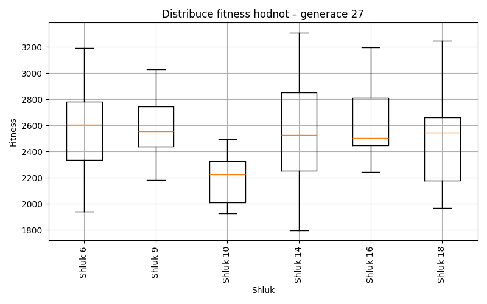
Generace 28
Stabilita mezi generací 27 → 28:
Shluk 10 → 6: 8 jedinců (72.7 %)
Shluk 10 → 14: 1 jedinců (9.1 %)
Shluk 10 → 9: 2 jedinců (18.2 %)
Shluk 18 → 9: 1 jedinců (9.1 %)
Shluk 18 → 18: 8 jedinců (72.7 %)
Shluk 18 → 6: 1 jedinců (9.1 %)
Shluk 18 → 19: 1 jedinců (9.1 %)
Shluk 9 → 19: 9 jedinců (37.5 %)
Shluk 9 → 9: 12 jedinců (50.0 %)
Shluk 9 → 6: 1 jedinců (4.2 %)
Shluk 9 → 16: 2 jedinců (8.3 %)
Shluk 6 → 9: 4 jedinců (16.0 %)
Shluk 6 → 6: 12 jedinců (48.0 %)
Shluk 6 → 19: 4 jedinců (16.0 %)
Shluk 6 → 18: 4 jedinců (16.0 %)
Shluk 6 → 14: 1 jedinců (4.0 %)
Shluk 16 → 16: 10 jedinců (100.0 %)
Shluk 14 → 14: 12 jedinců (63.2 %)
Shluk 14 → 16: 1 jedinců (5.3 %)
Shluk 14 → 19: 4 jedinců (21.1 %)
Shluk 14 → 6: 2 jedinců (10.5 %)
Jaccardovo mapování a overlap: Generace 27 → 28
- Cluster 10 → 6 (Jaccard: 0.30, Overlap: 0.73)
- Cluster 18 → 18 (Jaccard: 0.53, Overlap: 0.73)
- Cluster 9 → 9 (Jaccard: 0.39, Overlap: 0.63)
- Cluster 6 → 6 (Jaccard: 0.32, Overlap: 0.50)
- Cluster 16 → 16 (Jaccard: 0.77, Overlap: 1.00)
- Cluster 14 → 14 (Jaccard: 0.57, Overlap: 0.86)
Posun centroidů mezi generací 27 → 28:
- Shluk 0: 363.0957
- Shluk 1: 325.0630
- Shluk 2: 800.9743
- Shluk 3: 793.3106
- Shluk 4: 834.7393
- Shluk 5: 973.4657
Generace 29
Stabilita mezi generací 28 → 29:
Shluk 6 → 6: 14 jedinců (58.3 %)
Shluk 6 → 19: 3 jedinců (12.5 %)
Shluk 6 → 9: 2 jedinců (8.3 %)
Shluk 6 → 18: 2 jedinců (8.3 %)
Shluk 6 → 14: 3 jedinců (12.5 %)
Shluk 9 → 9: 17 jedinců (89.5 %)
Shluk 9 → 6: 2 jedinců (10.5 %)
Shluk 18 → 19: 6 jedinců (50.0 %)
Shluk 18 → 18: 4 jedinců (33.3 %)
Shluk 18 → 9: 1 jedinců (8.3 %)
Shluk 18 → 16: 1 jedinců (8.3 %)
Shluk 19 → 14: 6 jedinců (33.3 %)
Shluk 19 → 19: 10 jedinců (55.6 %)
Shluk 19 → 6: 1 jedinců (5.6 %)
Shluk 19 → 9: 1 jedinců (5.6 %)
Shluk 16 → 16: 10 jedinců (76.9 %)
Shluk 16 → 14: 3 jedinců (23.1 %)
Shluk 14 → 14: 11 jedinců (78.6 %)
Shluk 14 → 18: 1 jedinců (7.1 %)
Shluk 14 → 16: 1 jedinců (7.1 %)
Shluk 14 → 6: 1 jedinců (7.1 %)
Jaccardovo mapování a overlap: Generace 28 → 29
- Cluster 6 → 6 (Jaccard: 0.50, Overlap: 0.78)
- Cluster 9 → 9 (Jaccard: 0.74, Overlap: 0.89)
- Cluster 18 → 18 (Jaccard: 0.27, Overlap: 0.57)
- Cluster 19 → 19 (Jaccard: 0.37, Overlap: 0.56)
- Cluster 16 → 16 (Jaccard: 0.67, Overlap: 0.83)
- Cluster 14 → 14 (Jaccard: 0.42, Overlap: 0.79)
Posun centroidů mezi generací 28 → 29:
- Shluk 0: 213.8015
- Shluk 1: 177.6383
- Shluk 2: 305.9897
- Shluk 3: 221.4034
- Shluk 4: 591.3782
- Shluk 5: 417.4171
Generace 30
Stabilita mezi generací 29 → 30:
Shluk 6 → 6: 15 jedinců (83.3 %)
Shluk 6 → 19: 1 jedinců (5.6 %)
Shluk 6 → 14: 1 jedinců (5.6 %)
Shluk 6 → 9: 1 jedinců (5.6 %)
Shluk 9 → 9: 14 jedinců (66.7 %)
Shluk 9 → 18: 1 jedinců (4.8 %)
Shluk 9 → 6: 2 jedinců (9.5 %)
Shluk 9 → 19: 4 jedinců (19.0 %)
Shluk 19 → 16: 4 jedinců (21.1 %)
Shluk 19 → 6: 3 jedinců (15.8 %)
Shluk 19 → 18: 1 jedinců (5.3 %)
Shluk 19 → 19: 10 jedinců (52.6 %)
Shluk 19 → 9: 1 jedinců (5.3 %)
Shluk 14 → 19: 7 jedinců (30.4 %)
Shluk 14 → 14: 16 jedinců (69.6 %)
Shluk 16 → 14: 1 jedinců (8.3 %)
Shluk 16 → 16: 11 jedinců (91.7 %)
Shluk 18 → 18: 5 jedinců (71.4 %)
Shluk 18 → 6: 1 jedinců (14.3 %)
Shluk 18 → 14: 1 jedinců (14.3 %)
Jaccardovo mapování a overlap: Generace 29 → 30
- Cluster 6 → 6 (Jaccard: 0.62, Overlap: 0.83)
- Cluster 9 → 9 (Jaccard: 0.61, Overlap: 0.88)
- Cluster 19 → 19 (Jaccard: 0.32, Overlap: 0.53)
- Cluster 14 → 14 (Jaccard: 0.62, Overlap: 0.84)
- Cluster 16 → 16 (Jaccard: 0.69, Overlap: 0.92)
- Cluster 18 → 18 (Jaccard: 0.56, Overlap: 0.71)
Posun centroidů mezi generací 29 → 30:
- Shluk 0: 196.3683
- Shluk 1: 219.8858
- Shluk 2: 224.1519
- Shluk 3: 276.5421
- Shluk 4: 213.1767
- Shluk 5: 412.4773
Generace 31
Stabilita mezi generací 30 → 31:
Shluk 6 → 6: 7 jedinců (33.3 %)
Shluk 6 → 14: 4 jedinců (19.0 %)
Shluk 6 → 18: 7 jedinců (33.3 %)
Shluk 6 → 19: 3 jedinců (14.3 %)
Shluk 9 → 9: 11 jedinců (68.8 %)
Shluk 9 → 19: 4 jedinců (25.0 %)
Shluk 9 → 14: 1 jedinců (6.2 %)
Shluk 16 → 16: 14 jedinců (93.3 %)
Shluk 16 → 18: 1 jedinců (6.7 %)
Shluk 19 → 14: 8 jedinců (36.4 %)
Shluk 19 → 19: 8 jedinců (36.4 %)
Shluk 19 → 18: 4 jedinců (18.2 %)
Shluk 19 → 6: 1 jedinců (4.5 %)
Shluk 19 → 16: 1 jedinců (4.5 %)
Shluk 14 → 16: 2 jedinců (10.5 %)
Shluk 14 → 14: 10 jedinců (52.6 %)
Shluk 14 → 19: 5 jedinců (26.3 %)
Shluk 14 → 6: 2 jedinců (10.5 %)
Shluk 18 → 18: 6 jedinců (85.7 %)
Shluk 18 → 19: 1 jedinců (14.3 %)
Jaccardovo mapování a overlap: Generace 30 → 31
- Cluster 6 → 6 (Jaccard: 0.29, Overlap: 0.70)
- Cluster 9 → 9 (Jaccard: 0.69, Overlap: 1.00)
- Cluster 16 → 16 (Jaccard: 0.78, Overlap: 0.93)
- Cluster 19 → 19 (Jaccard: 0.23, Overlap: 0.38)
- Cluster 14 → 14 (Jaccard: 0.31, Overlap: 0.53)
- Cluster 18 → 18 (Jaccard: 0.32, Overlap: 0.86)
Posun centroidů mezi generací 30 → 31:
- Shluk 0: 480.0949
- Shluk 1: 190.9367
- Shluk 2: 384.8667
- Shluk 3: 169.9362
- Shluk 4: 477.8437
- Shluk 5: 466.0775
Generace 32
Stabilita mezi generací 31 → 32:
Shluk 6 → 6: 8 jedinců (80.0 %)
Shluk 6 → 19: 1 jedinců (10.0 %)
Shluk 6 → 9: 1 jedinců (10.0 %)
Shluk 9 → 9: 11 jedinců (100.0 %)
Shluk 16 → 16: 13 jedinců (76.5 %)
Shluk 16 → 14: 1 jedinců (5.9 %)
Shluk 16 → 19: 3 jedinců (17.6 %)
Shluk 14 → 14: 21 jedinců (91.3 %)
Shluk 14 → 19: 1 jedinců (4.3 %)
Shluk 14 → 6: 1 jedinců (4.3 %)
Shluk 19 → 9: 3 jedinců (14.3 %)
Shluk 19 → 18: 1 jedinců (4.8 %)
Shluk 19 → 19: 13 jedinců (61.9 %)
Shluk 19 → 14: 4 jedinců (19.0 %)
Shluk 18 → 18: 12 jedinců (66.7 %)
Shluk 18 → 14: 4 jedinců (22.2 %)
Shluk 18 → 6: 1 jedinců (5.6 %)
Shluk 18 → 16: 1 jedinců (5.6 %)
Jaccardovo mapování a overlap: Generace 31 → 32
- Cluster 6 → 6 (Jaccard: 0.67, Overlap: 0.80)
- Cluster 9 → 9 (Jaccard: 0.73, Overlap: 1.00)
- Cluster 16 → 16 (Jaccard: 0.72, Overlap: 0.93)
- Cluster 14 → 14 (Jaccard: 0.66, Overlap: 0.91)
- Cluster 19 → 19 (Jaccard: 0.50, Overlap: 0.72)
- Cluster 18 → 18 (Jaccard: 0.63, Overlap: 0.92)
Posun centroidů mezi generací 31 → 32:
- Shluk 0: 196.5731
- Shluk 1: 150.0882
- Shluk 2: 135.4795
- Shluk 3: 179.0881
- Shluk 4: 210.0958
- Shluk 5: 250.2697
Generace 33

Stabilita mezi generací 32 → 33:
Shluk 6 → 6: 7 jedinců (70.0 %)
Shluk 6 → 14: 3 jedinců (30.0 %)
Shluk 9 → 9: 14 jedinců (93.3 %)
Shluk 9 → 6: 1 jedinců (6.7 %)
Shluk 16 → 16: 10 jedinců (71.4 %)
Shluk 16 → 19: 4 jedinců (28.6 %)
Shluk 14 → 19: 2 jedinců (6.7 %)
Shluk 14 → 14: 23 jedinců (76.7 %)
Shluk 14 → 18: 2 jedinců (6.7 %)
Shluk 14 → 6: 3 jedinců (10.0 %)
Shluk 18 → 6: 4 jedinců (30.8 %)
Shluk 18 → 9: 3 jedinců (23.1 %)
Shluk 18 → 18: 6 jedinců (46.2 %)
Shluk 19 → 19: 11 jedinců (61.1 %)
Shluk 19 → 9: 6 jedinců (33.3 %)
Shluk 19 → 14: 1 jedinců (5.6 %)
Jaccardovo mapování a overlap: Generace 32 → 33
- Cluster 6 → 6 (Jaccard: 0.39, Overlap: 0.70)
- Cluster 9 → 9 (Jaccard: 0.58, Overlap: 0.93)
- Cluster 16 → 16 (Jaccard: 0.71, Overlap: 1.00)
- Cluster 14 → 14 (Jaccard: 0.68, Overlap: 0.85)
- Cluster 18 → 18 (Jaccard: 0.40, Overlap: 0.75)
- Cluster 19 → 19 (Jaccard: 0.46, Overlap: 0.65)
Posun centroidů mezi generací 32 → 33:
- Shluk 0: 453.9376
- Shluk 1: 211.0324
- Shluk 2: 201.5943
- Shluk 3: 163.9742
- Shluk 4: 496.9148
- Shluk 5: 285.5866
Generace 34
Stabilita mezi generací 33 → 34:
Shluk 6 → 6: 8 jedinců (53.3 %)
Shluk 6 → 18: 2 jedinců (13.3 %)
Shluk 6 → 20: 4 jedinců (26.7 %)
Shluk 6 → 9: 1 jedinců (6.7 %)
Shluk 9 → 9: 16 jedinců (69.6 %)
Shluk 9 → 18: 5 jedinců (21.7 %)
Shluk 9 → 6: 2 jedinců (8.7 %)
Shluk 16 → 18: 3 jedinců (30.0 %)
Shluk 16 → 6: 1 jedinců (10.0 %)
Shluk 16 → 19: 6 jedinců (60.0 %)
Shluk 19 → 6: 3 jedinců (17.6 %)
Shluk 19 → 19: 10 jedinců (58.8 %)
Shluk 19 → 14: 3 jedinců (17.6 %)
Shluk 19 → 9: 1 jedinců (5.9 %)
Shluk 14 → 14: 18 jedinců (66.7 %)
Shluk 14 → 9: 1 jedinců (3.7 %)
Shluk 14 → 20: 3 jedinců (11.1 %)
Shluk 14 → 6: 4 jedinců (14.8 %)
Shluk 14 → 18: 1 jedinců (3.7 %)
Shluk 18 → 18: 4 jedinců (50.0 %)
Shluk 18 → 20: 1 jedinců (12.5 %)
Shluk 18 → 6: 2 jedinců (25.0 %)
Shluk 18 → 14: 1 jedinců (12.5 %)
Jaccardovo mapování a overlap: Generace 33 → 34
- Cluster 6 → 6 (Jaccard: 0.30, Overlap: 0.53)
- Cluster 9 → 9 (Jaccard: 0.62, Overlap: 0.84)
- Cluster 16 → 19 (Jaccard: 0.30, Overlap: 0.60)
- Cluster 19 → 19 (Jaccard: 0.43, Overlap: 0.62)
- Cluster 14 → 14 (Jaccard: 0.58, Overlap: 0.82)
- Cluster 18 → 18 (Jaccard: 0.21, Overlap: 0.50)
Posun centroidů mezi generací 33 → 34:
- Shluk 0: 392.6419
- Shluk 1: 138.1647
- Shluk 2: 155.1540
- Shluk 3: 831.8029
- Shluk 4: 920.7312
- Shluk 5: 934.0793
Generace 35
Stabilita mezi generací 34 → 35:
Shluk 6 → 6: 17 jedinců (85.0 %)
Shluk 6 → 14: 2 jedinců (10.0 %)
Shluk 6 → 20: 1 jedinců (5.0 %)
Shluk 9 → 9: 17 jedinců (89.5 %)
Shluk 9 → 20: 1 jedinců (5.3 %)
Shluk 9 → 14: 1 jedinců (5.3 %)
Shluk 18 → 19: 2 jedinců (13.3 %)
Shluk 18 → 6: 1 jedinců (6.7 %)
Shluk 18 → 9: 1 jedinců (6.7 %)
Shluk 18 → 18: 11 jedinců (73.3 %)
Shluk 14 → 14: 22 jedinců (100.0 %)
Shluk 19 → 19: 16 jedinců (100.0 %)
Shluk 20 → 20: 8 jedinců (100.0 %)
Jaccardovo mapování a overlap: Generace 34 → 35
- Cluster 6 → 6 (Jaccard: 0.81, Overlap: 0.94)
- Cluster 9 → 9 (Jaccard: 0.85, Overlap: 0.94)
- Cluster 18 → 18 (Jaccard: 0.73, Overlap: 1.00)
- Cluster 14 → 14 (Jaccard: 0.88, Overlap: 1.00)
- Cluster 19 → 19 (Jaccard: 0.89, Overlap: 1.00)
- Cluster 20 → 20 (Jaccard: 0.80, Overlap: 1.00)
Posun centroidů mezi generací 34 → 35:
- Shluk 0: 79.3927
- Shluk 1: 85.8148
- Shluk 2: 56.1446
- Shluk 3: 206.1308
- Shluk 4: 93.4235
- Shluk 5: 111.2501
Generace 36

Stabilita mezi generací 35 → 36:
Shluk 6 → 6: 10 jedinců (55.6 %)
Shluk 6 → 21: 4 jedinců (22.2 %)
Shluk 6 → 19: 1 jedinců (5.6 %)
Shluk 6 → 14: 3 jedinců (16.7 %)
Shluk 9 → 9: 17 jedinců (94.4 %)
Shluk 9 → 21: 1 jedinců (5.6 %)
Shluk 19 → 19: 9 jedinců (50.0 %)
Shluk 19 → 21: 9 jedinců (50.0 %)
Shluk 14 → 14: 18 jedinců (72.0 %)
Shluk 14 → 21: 5 jedinců (20.0 %)
Shluk 14 → 20: 1 jedinců (4.0 %)
Shluk 14 → 6: 1 jedinců (4.0 %)
Shluk 18 → 9: 4 jedinců (36.4 %)
Shluk 18 → 19: 5 jedinců (45.5 %)
Shluk 18 → 14: 1 jedinců (9.1 %)
Shluk 18 → 6: 1 jedinců (9.1 %)
Shluk 20 → 20: 8 jedinců (80.0 %)
Shluk 20 → 9: 1 jedinců (10.0 %)
Shluk 20 → 6: 1 jedinců (10.0 %)
Jaccardovo mapování a overlap: Generace 35 → 36
- Cluster 6 → 6 (Jaccard: 0.48, Overlap: 0.77)
- Cluster 9 → 9 (Jaccard: 0.74, Overlap: 0.94)
- Cluster 19 → 19 (Jaccard: 0.38, Overlap: 0.60)
- Cluster 14 → 14 (Jaccard: 0.62, Overlap: 0.82)
- Cluster 18 → 19 (Jaccard: 0.24, Overlap: 0.45)
- Cluster 20 → 20 (Jaccard: 0.73, Overlap: 0.89)
Posun centroidů mezi generací 35 → 36:
- Shluk 0: 279.3319
- Shluk 1: 142.0491
- Shluk 2: 166.9050
- Shluk 3: 665.0598
- Shluk 4: 970.8174
- Shluk 5: 899.4797
Generace 37

Stabilita mezi generací 36 → 37:
Shluk 6 → 20: 3 jedinců (23.1 %)
Shluk 6 → 6: 5 jedinců (38.5 %)
Shluk 6 → 22: 5 jedinců (38.5 %)
Shluk 9 → 9: 19 jedinců (86.4 %)
Shluk 9 → 14: 1 jedinců (4.5 %)
Shluk 9 → 20: 1 jedinců (4.5 %)
Shluk 9 → 6: 1 jedinců (4.5 %)
Shluk 19 → 19: 9 jedinců (60.0 %)
Shluk 19 → 6: 5 jedinců (33.3 %)
Shluk 19 → 22: 1 jedinců (6.7 %)
Shluk 21 → 22: 6 jedinců (31.6 %)
Shluk 21 → 19: 6 jedinců (31.6 %)
Shluk 21 → 20: 1 jedinců (5.3 %)
Shluk 21 → 14: 2 jedinců (10.5 %)
Shluk 21 → 9: 4 jedinců (21.1 %)
Shluk 14 → 14: 18 jedinců (81.8 %)
Shluk 14 → 22: 4 jedinců (18.2 %)
Shluk 20 → 20: 8 jedinců (88.9 %)
Shluk 20 → 14: 1 jedinců (11.1 %)
Jaccardovo mapování a overlap: Generace 36 → 37
- Cluster 6 → 6 (Jaccard: 0.26, Overlap: 0.45)
- Cluster 9 → 9 (Jaccard: 0.73, Overlap: 0.86)
- Cluster 19 → 19 (Jaccard: 0.43, Overlap: 0.60)
- Cluster 21 → 19 (Jaccard: 0.21, Overlap: 0.40)
- Cluster 14 → 14 (Jaccard: 0.69, Overlap: 0.82)
- Cluster 20 → 20 (Jaccard: 0.57, Overlap: 0.89)
Posun centroidů mezi generací 36 → 37:
- Shluk 0: 543.5120
- Shluk 1: 107.0194
- Shluk 2: 119.0871
- Shluk 3: 477.3629
- Shluk 4: 223.3284
- Shluk 5: 536.5774
Generace 38
Stabilita mezi generací 37 → 38:
Shluk 20 → 20: 13 jedinců (100.0 %)
Shluk 9 → 9: 17 jedinců (73.9 %)
Shluk 9 → 14: 1 jedinců (4.3 %)
Shluk 9 → 22: 3 jedinců (13.0 %)
Shluk 9 → 23: 2 jedinců (8.7 %)
Shluk 19 → 19: 11 jedinců (73.3 %)
Shluk 19 → 22: 3 jedinců (20.0 %)
Shluk 19 → 23: 1 jedinců (6.7 %)
Shluk 22 → 22: 13 jedinců (81.2 %)
Shluk 22 → 14: 3 jedinců (18.8 %)
Shluk 14 → 14: 17 jedinců (77.3 %)
Shluk 14 → 22: 3 jedinců (13.6 %)
Shluk 14 → 23: 1 jedinců (4.5 %)
Shluk 14 → 9: 1 jedinců (4.5 %)
Shluk 6 → 19: 2 jedinců (18.2 %)
Shluk 6 → 22: 2 jedinců (18.2 %)
Shluk 6 → 9: 6 jedinců (54.5 %)
Shluk 6 → 20: 1 jedinců (9.1 %)
Jaccardovo mapování a overlap: Generace 37 → 38
- Cluster 20 → 20 (Jaccard: 0.93, Overlap: 1.00)
- Cluster 9 → 9 (Jaccard: 0.57, Overlap: 0.74)
- Cluster 19 → 19 (Jaccard: 0.65, Overlap: 0.85)
- Cluster 22 → 22 (Jaccard: 0.48, Overlap: 0.81)
- Cluster 14 → 14 (Jaccard: 0.65, Overlap: 0.81)
- Cluster 6 → 9 (Jaccard: 0.21, Overlap: 0.55)
Posun centroidů mezi generací 37 → 38:
- Shluk 0: 534.3916
- Shluk 1: 900.5727
- Shluk 2: 1047.5717
- Shluk 3: 998.5000
- Shluk 4: 757.4687
- Shluk 5: 1145.0004
Generace 39

Stabilita mezi generací 38 → 39:
Shluk 20 → 24: 2 jedinců (14.3 %)
Shluk 20 → 20: 12 jedinců (85.7 %)
Shluk 9 → 24: 7 jedinců (29.2 %)
Shluk 9 → 22: 1 jedinců (4.2 %)
Shluk 9 → 9: 15 jedinců (62.5 %)
Shluk 9 → 14: 1 jedinců (4.2 %)
Shluk 19 → 19: 11 jedinců (84.6 %)
Shluk 19 → 24: 2 jedinců (15.4 %)
Shluk 22 → 22: 20 jedinců (83.3 %)
Shluk 22 → 14: 2 jedinců (8.3 %)
Shluk 22 → 19: 1 jedinců (4.2 %)
Shluk 22 → 24: 1 jedinců (4.2 %)
Shluk 14 → 14: 15 jedinců (71.4 %)
Shluk 14 → 22: 6 jedinců (28.6 %)
Shluk 23 → 14: 2 jedinců (50.0 %)
Shluk 23 → 9: 1 jedinců (25.0 %)
Shluk 23 → 22: 1 jedinců (25.0 %)
Jaccardovo mapování a overlap: Generace 38 → 39
- Cluster 20 → 20 (Jaccard: 0.86, Overlap: 1.00)
- Cluster 9 → 9 (Jaccard: 0.60, Overlap: 0.94)
- Cluster 19 → 19 (Jaccard: 0.79, Overlap: 0.92)
- Cluster 22 → 22 (Jaccard: 0.62, Overlap: 0.83)
- Cluster 14 → 14 (Jaccard: 0.58, Overlap: 0.75)
- Cluster 23 → 14 (Jaccard: 0.09, Overlap: 0.50)
Posun centroidů mezi generací 38 → 39:
- Shluk 0: 238.1588
- Shluk 1: 230.2124
- Shluk 2: 123.3377
- Shluk 3: 87.6679
- Shluk 4: 202.2330
- Shluk 5: 1190.2926
Generace 40
Stabilita mezi generací 39 → 40:
Shluk 24 → 20: 6 jedinců (50.0 %)
Shluk 24 → 24: 6 jedinců (50.0 %)
Shluk 19 → 19: 10 jedinců (83.3 %)
Shluk 19 → 22: 2 jedinců (16.7 %)
Shluk 22 → 22: 20 jedinců (71.4 %)
Shluk 22 → 14: 6 jedinců (21.4 %)
Shluk 22 → 24: 2 jedinců (7.1 %)
Shluk 14 → 14: 17 jedinců (85.0 %)
Shluk 14 → 9: 2 jedinců (10.0 %)
Shluk 14 → 22: 1 jedinců (5.0 %)
Shluk 9 → 24: 2 jedinců (12.5 %)
Shluk 9 → 9: 13 jedinců (81.2 %)
Shluk 9 → 20: 1 jedinců (6.2 %)
Shluk 20 → 20: 8 jedinců (66.7 %)
Shluk 20 → 22: 1 jedinců (8.3 %)
Shluk 20 → 14: 3 jedinců (25.0 %)
Jaccardovo mapování a overlap: Generace 39 → 40
- Cluster 24 → 24 (Jaccard: 0.38, Overlap: 0.60)
- Cluster 19 → 19 (Jaccard: 0.83, Overlap: 1.00)
- Cluster 22 → 22 (Jaccard: 0.62, Overlap: 0.83)
- Cluster 14 → 14 (Jaccard: 0.59, Overlap: 0.85)
- Cluster 9 → 9 (Jaccard: 0.72, Overlap: 0.87)
- Cluster 20 → 20 (Jaccard: 0.42, Overlap: 0.67)
Posun centroidů mezi generací 39 → 40:
- Shluk 0: 145.9052
- Shluk 1: 247.3718
- Shluk 2: 95.6616
- Shluk 3: 355.6712
- Shluk 4: 175.9736
- Shluk 5: 474.0726
Generace 41
Stabilita mezi generací 40 → 41:
Shluk 20 → 20: 10 jedinců (66.7 %)
Shluk 20 → 24: 3 jedinců (20.0 %)
Shluk 20 → 22: 1 jedinců (6.7 %)
Shluk 20 → 9: 1 jedinců (6.7 %)
Shluk 24 → 24: 6 jedinců (60.0 %)
Shluk 24 → 9: 3 jedinců (30.0 %)
Shluk 24 → 22: 1 jedinců (10.0 %)
Shluk 19 → 19: 9 jedinců (90.0 %)
Shluk 19 → 22: 1 jedinců (10.0 %)
Shluk 22 → 22: 23 jedinců (95.8 %)
Shluk 22 → 14: 1 jedinců (4.2 %)
Shluk 14 → 14: 22 jedinců (84.6 %)
Shluk 14 → 20: 3 jedinců (11.5 %)
Shluk 14 → 22: 1 jedinců (3.8 %)
Shluk 9 → 9: 14 jedinců (93.3 %)
Shluk 9 → 14: 1 jedinců (6.7 %)
Jaccardovo mapování a overlap: Generace 40 → 41
- Cluster 20 → 20 (Jaccard: 0.56, Overlap: 0.77)
- Cluster 24 → 24 (Jaccard: 0.46, Overlap: 0.67)
- Cluster 19 → 19 (Jaccard: 0.90, Overlap: 1.00)
- Cluster 22 → 22 (Jaccard: 0.82, Overlap: 0.96)
- Cluster 14 → 14 (Jaccard: 0.79, Overlap: 0.92)
- Cluster 9 → 9 (Jaccard: 0.74, Overlap: 0.93)
Posun centroidů mezi generací 40 → 41:
- Shluk 0: 130.2594
- Shluk 1: 98.4415
- Shluk 2: 71.6981
- Shluk 3: 356.5922
- Shluk 4: 59.6103
- Shluk 5: 399.8976
Generace 42
Stabilita mezi generací 41 → 42:
Shluk 20 → 20: 7 jedinců (53.8 %)
Shluk 20 → 9: 2 jedinců (15.4 %)
Shluk 20 → 14: 4 jedinců (30.8 %)
Shluk 24 → 24: 6 jedinců (66.7 %)
Shluk 24 → 20: 3 jedinců (33.3 %)
Shluk 19 → 19: 7 jedinců (77.8 %)
Shluk 19 → 24: 1 jedinců (11.1 %)
Shluk 19 → 20: 1 jedinců (11.1 %)
Shluk 22 → 22: 20 jedinců (74.1 %)
Shluk 22 → 24: 1 jedinců (3.7 %)
Shluk 22 → 20: 2 jedinců (7.4 %)
Shluk 22 → 9: 4 jedinců (14.8 %)
Shluk 14 → 14: 19 jedinců (79.2 %)
Shluk 14 → 22: 2 jedinců (8.3 %)
Shluk 14 → 24: 1 jedinců (4.2 %)
Shluk 14 → 9: 2 jedinců (8.3 %)
Shluk 9 → 24: 4 jedinců (22.2 %)
Shluk 9 → 9: 7 jedinců (38.9 %)
Shluk 9 → 20: 6 jedinců (33.3 %)
Shluk 9 → 22: 1 jedinců (5.6 %)
Jaccardovo mapování a overlap: Generace 41 → 42
- Cluster 20 → 20 (Jaccard: 0.28, Overlap: 0.54)
- Cluster 24 → 24 (Jaccard: 0.38, Overlap: 0.67)
- Cluster 19 → 19 (Jaccard: 0.78, Overlap: 1.00)
- Cluster 22 → 22 (Jaccard: 0.67, Overlap: 0.87)
- Cluster 14 → 14 (Jaccard: 0.68, Overlap: 0.83)
- Cluster 9 → 9 (Jaccard: 0.27, Overlap: 0.47)
Posun centroidů mezi generací 41 → 42:
- Shluk 0: 545.6441
- Shluk 1: 154.0976
- Shluk 2: 150.5100
- Shluk 3: 575.8815
- Shluk 4: 129.8732
- Shluk 5: 409.5363
Generace 43
Stabilita mezi generací 42 → 43:
Shluk 20 → 19: 4 jedinců (21.1 %)
Shluk 20 → 20: 8 jedinců (42.1 %)
Shluk 20 → 24: 6 jedinců (31.6 %)
Shluk 20 → 22: 1 jedinců (5.3 %)
Shluk 24 → 14: 3 jedinců (23.1 %)
Shluk 24 → 9: 2 jedinců (15.4 %)
Shluk 24 → 24: 8 jedinců (61.5 %)
Shluk 19 → 19: 6 jedinců (85.7 %)
Shluk 19 → 14: 1 jedinců (14.3 %)
Shluk 22 → 22: 21 jedinců (91.3 %)
Shluk 22 → 14: 2 jedinců (8.7 %)
Shluk 14 → 14: 19 jedinců (82.6 %)
Shluk 14 → 20: 4 jedinců (17.4 %)
Shluk 9 → 9: 12 jedinců (80.0 %)
Shluk 9 → 20: 2 jedinců (13.3 %)
Shluk 9 → 24: 1 jedinců (6.7 %)
Jaccardovo mapování a overlap: Generace 42 → 43
- Cluster 20 → 20 (Jaccard: 0.32, Overlap: 0.57)
- Cluster 24 → 24 (Jaccard: 0.40, Overlap: 0.62)
- Cluster 19 → 19 (Jaccard: 0.55, Overlap: 0.86)
- Cluster 22 → 22 (Jaccard: 0.88, Overlap: 0.95)
- Cluster 14 → 14 (Jaccard: 0.66, Overlap: 0.83)
- Cluster 9 → 9 (Jaccard: 0.71, Overlap: 0.86)
Posun centroidů mezi generací 42 → 43:
- Shluk 0: 167.4625
- Shluk 1: 178.0077
- Shluk 2: 332.6531
- Shluk 3: 549.0374
- Shluk 4: 52.6076
- Shluk 5: 426.2913
Generace 44
Stabilita mezi generací 43 → 44:
Shluk 19 → 22: 3 jedinců (30.0 %)
Shluk 19 → 19: 6 jedinců (60.0 %)
Shluk 19 → 20: 1 jedinců (10.0 %)
Shluk 14 → 14: 21 jedinců (84.0 %)
Shluk 14 → 24: 3 jedinců (12.0 %)
Shluk 14 → 22: 1 jedinců (4.0 %)
Shluk 22 → 22: 19 jedinců (86.4 %)
Shluk 22 → 9: 1 jedinců (4.5 %)
Shluk 22 → 20: 2 jedinců (9.1 %)
Shluk 9 → 24: 2 jedinců (14.3 %)
Shluk 9 → 9: 9 jedinců (64.3 %)
Shluk 9 → 20: 3 jedinců (21.4 %)
Shluk 24 → 22: 1 jedinců (6.7 %)
Shluk 24 → 9: 7 jedinců (46.7 %)
Shluk 24 → 24: 7 jedinců (46.7 %)
Shluk 20 → 20: 12 jedinců (85.7 %)
Shluk 20 → 24: 1 jedinců (7.1 %)
Shluk 20 → 9: 1 jedinců (7.1 %)
Jaccardovo mapování a overlap: Generace 43 → 44
- Cluster 19 → 19 (Jaccard: 0.60, Overlap: 1.00)
- Cluster 14 → 14 (Jaccard: 0.84, Overlap: 1.00)
- Cluster 22 → 22 (Jaccard: 0.70, Overlap: 0.86)
- Cluster 9 → 9 (Jaccard: 0.39, Overlap: 0.64)
- Cluster 24 → 24 (Jaccard: 0.33, Overlap: 0.54)
- Cluster 20 → 20 (Jaccard: 0.60, Overlap: 0.86)
Posun centroidů mezi generací 43 → 44:
- Shluk 0: 411.9522
- Shluk 1: 102.1001
- Shluk 2: 304.5705
- Shluk 3: 138.4339
- Shluk 4: 141.7243
- Shluk 5: 501.1270
Generace 45
Stabilita mezi generací 44 → 45:
Shluk 22 → 20: 3 jedinců (12.5 %)
Shluk 22 → 22: 17 jedinců (70.8 %)
Shluk 22 → 19: 2 jedinců (8.3 %)
Shluk 22 → 14: 1 jedinců (4.2 %)
Shluk 22 → 9: 1 jedinců (4.2 %)
Shluk 14 → 14: 19 jedinců (90.5 %)
Shluk 14 → 22: 1 jedinců (4.8 %)
Shluk 14 → 19: 1 jedinců (4.8 %)
Shluk 19 → 19: 5 jedinců (83.3 %)
Shluk 19 → 20: 1 jedinců (16.7 %)
Shluk 24 → 25: 3 jedinců (23.1 %)
Shluk 24 → 22: 3 jedinců (23.1 %)
Shluk 24 → 9: 4 jedinců (30.8 %)
Shluk 24 → 19: 1 jedinců (7.7 %)
Shluk 24 → 20: 1 jedinců (7.7 %)
Shluk 24 → 14: 1 jedinců (7.7 %)
Shluk 9 → 9: 8 jedinců (44.4 %)
Shluk 9 → 25: 7 jedinců (38.9 %)
Shluk 9 → 20: 2 jedinců (11.1 %)
Shluk 9 → 22: 1 jedinců (5.6 %)
Shluk 20 → 20: 14 jedinců (77.8 %)
Shluk 20 → 25: 2 jedinců (11.1 %)
Shluk 20 → 14: 2 jedinců (11.1 %)
Jaccardovo mapování a overlap: Generace 44 → 45
- Cluster 22 → 22 (Jaccard: 0.59, Overlap: 0.77)
- Cluster 14 → 14 (Jaccard: 0.76, Overlap: 0.90)
- Cluster 19 → 19 (Jaccard: 0.50, Overlap: 0.83)
- Cluster 24 → 9 (Jaccard: 0.18, Overlap: 0.31)
- Cluster 9 → 9 (Jaccard: 0.35, Overlap: 0.62)
- Cluster 20 → 20 (Jaccard: 0.56, Overlap: 0.78)
Posun centroidů mezi generací 44 → 45:
- Shluk 0: 409.2930
- Shluk 1: 101.8993
- Shluk 2: 490.3784
- Shluk 3: 245.6309
- Shluk 4: 208.1551
- Shluk 5: 707.3669
Generace 46
Stabilita mezi generací 45 → 46:
Shluk 20 → 20: 11 jedinců (52.4 %)
Shluk 20 → 19: 2 jedinců (9.5 %)
Shluk 20 → 26: 7 jedinců (33.3 %)
Shluk 20 → 22: 1 jedinců (4.8 %)
Shluk 14 → 14: 20 jedinců (87.0 %)
Shluk 14 → 20: 1 jedinců (4.3 %)
Shluk 14 → 26: 1 jedinců (4.3 %)
Shluk 14 → 22: 1 jedinců (4.3 %)
Shluk 19 → 19: 9 jedinců (100.0 %)
Shluk 22 → 22: 16 jedinců (72.7 %)
Shluk 22 → 20: 3 jedinců (13.6 %)
Shluk 22 → 14: 2 jedinců (9.1 %)
Shluk 22 → 19: 1 jedinců (4.5 %)
Shluk 25 → 20: 1 jedinců (8.3 %)
Shluk 25 → 9: 7 jedinců (58.3 %)
Shluk 25 → 26: 3 jedinců (25.0 %)
Shluk 25 → 14: 1 jedinců (8.3 %)
Shluk 9 → 9: 12 jedinců (92.3 %)
Shluk 9 → 22: 1 jedinců (7.7 %)
Jaccardovo mapování a overlap: Generace 45 → 46
- Cluster 20 → 20 (Jaccard: 0.42, Overlap: 0.69)
- Cluster 14 → 14 (Jaccard: 0.77, Overlap: 0.87)
- Cluster 19 → 19 (Jaccard: 0.75, Overlap: 1.00)
- Cluster 22 → 22 (Jaccard: 0.64, Overlap: 0.84)
- Cluster 25 → 9 (Jaccard: 0.29, Overlap: 0.58)
- Cluster 9 → 9 (Jaccard: 0.60, Overlap: 0.92)
Posun centroidů mezi generací 45 → 46:
- Shluk 0: 248.8729
- Shluk 1: 139.8681
- Shluk 2: 127.4776
- Shluk 3: 357.0469
- Shluk 4: 175.5503
- Shluk 5: 717.4830
Generace 47
Stabilita mezi generací 46 → 47:
Shluk 20 → 20: 5 jedinců (31.2 %)
Shluk 20 → 22: 4 jedinců (25.0 %)
Shluk 20 → 26: 5 jedinců (31.2 %)
Shluk 20 → 9: 2 jedinců (12.5 %)
Shluk 14 → 14: 19 jedinců (82.6 %)
Shluk 14 → 22: 2 jedinců (8.7 %)
Shluk 14 → 20: 2 jedinců (8.7 %)
Shluk 19 → 26: 2 jedinců (16.7 %)
Shluk 19 → 20: 1 jedinců (8.3 %)
Shluk 19 → 19: 9 jedinců (75.0 %)
Shluk 22 → 20: 6 jedinců (31.6 %)
Shluk 22 → 22: 13 jedinců (68.4 %)
Shluk 9 → 9: 18 jedinců (94.7 %)
Shluk 9 → 19: 1 jedinců (5.3 %)
Shluk 26 → 26: 10 jedinců (90.9 %)
Shluk 26 → 14: 1 jedinců (9.1 %)
Jaccardovo mapování a overlap: Generace 46 → 47
- Cluster 20 → 20 (Jaccard: 0.20, Overlap: 0.36)
- Cluster 14 → 14 (Jaccard: 0.79, Overlap: 0.95)
- Cluster 19 → 19 (Jaccard: 0.69, Overlap: 0.90)
- Cluster 22 → 22 (Jaccard: 0.52, Overlap: 0.68)
- Cluster 9 → 9 (Jaccard: 0.86, Overlap: 0.95)
- Cluster 26 → 26 (Jaccard: 0.56, Overlap: 0.91)
Posun centroidů mezi generací 46 → 47:
- Shluk 0: 106.0791
- Shluk 1: 94.5199
- Shluk 2: 210.3983
- Shluk 3: 659.3524
- Shluk 4: 229.9238
- Shluk 5: 276.6154
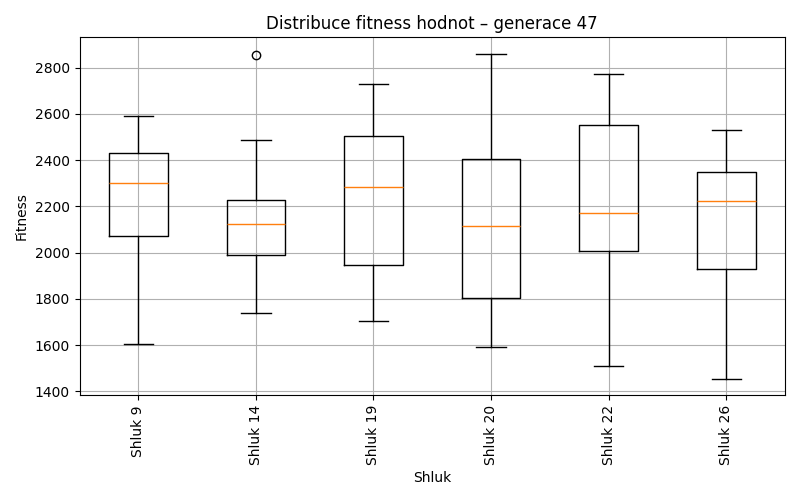
Generace 48
Stabilita mezi generací 47 → 48:
Shluk 20 → 22: 9 jedinců (64.3 %)
Shluk 20 → 14: 4 jedinců (28.6 %)
Shluk 20 → 19: 1 jedinců (7.1 %)
Shluk 14 → 14: 18 jedinců (90.0 %)
Shluk 14 → 27: 2 jedinců (10.0 %)
Shluk 26 → 14: 1 jedinců (5.9 %)
Shluk 26 → 26: 14 jedinců (82.4 %)
Shluk 26 → 27: 2 jedinců (11.8 %)
Shluk 22 → 22: 16 jedinců (84.2 %)
Shluk 22 → 14: 2 jedinců (10.5 %)
Shluk 22 → 27: 1 jedinců (5.3 %)
Shluk 9 → 9: 12 jedinců (60.0 %)
Shluk 9 → 27: 6 jedinců (30.0 %)
Shluk 9 → 22: 2 jedinců (10.0 %)
Shluk 19 → 19: 9 jedinců (90.0 %)
Shluk 19 → 27: 1 jedinců (10.0 %)
Jaccardovo mapování a overlap: Generace 47 → 48
- Cluster 20 → 22 (Jaccard: 0.28, Overlap: 0.64)
- Cluster 14 → 14 (Jaccard: 0.67, Overlap: 0.90)
- Cluster 26 → 26 (Jaccard: 0.82, Overlap: 1.00)
- Cluster 22 → 22 (Jaccard: 0.53, Overlap: 0.84)
- Cluster 9 → 9 (Jaccard: 0.60, Overlap: 1.00)
- Cluster 19 → 19 (Jaccard: 0.82, Overlap: 0.90)
Posun centroidů mezi generací 47 → 48:
- Shluk 0: 186.6613
- Shluk 1: 129.3242
- Shluk 2: 136.2519
- Shluk 3: 444.7941
- Shluk 4: 763.1208
- Shluk 5: 806.8547
Generace 49
Stabilita mezi generací 48 → 49:
Shluk 22 → 28: 7 jedinců (25.9 %)
Shluk 22 → 22: 20 jedinců (74.1 %)
Shluk 14 → 14: 23 jedinců (92.0 %)
Shluk 14 → 28: 2 jedinců (8.0 %)
Shluk 19 → 19: 10 jedinců (100.0 %)
Shluk 9 → 27: 5 jedinců (41.7 %)
Shluk 9 → 28: 4 jedinců (33.3 %)
Shluk 9 → 22: 2 jedinců (16.7 %)
Shluk 9 → 26: 1 jedinců (8.3 %)
Shluk 26 → 26: 14 jedinců (100.0 %)
Shluk 27 → 28: 1 jedinců (8.3 %)
Shluk 27 → 26: 2 jedinců (16.7 %)
Shluk 27 → 27: 8 jedinců (66.7 %)
Shluk 27 → 14: 1 jedinců (8.3 %)
Jaccardovo mapování a overlap: Generace 48 → 49
- Cluster 22 → 22 (Jaccard: 0.69, Overlap: 0.91)
- Cluster 14 → 14 (Jaccard: 0.88, Overlap: 0.96)
- Cluster 19 → 19 (Jaccard: 1.00, Overlap: 1.00)
- Cluster 9 → 27 (Jaccard: 0.25, Overlap: 0.42)
- Cluster 26 → 26 (Jaccard: 0.82, Overlap: 1.00)
- Cluster 27 → 27 (Jaccard: 0.47, Overlap: 0.67)
Posun centroidů mezi generací 48 → 49:
- Shluk 0: 969.0608
- Shluk 1: 1024.8765
- Shluk 2: 872.3615
- Shluk 3: 730.9296
- Shluk 4: 966.9304
- Shluk 5: 869.8332
Generace 50
Stabilita mezi generací 49 → 50:
Shluk 28 → 28: 14 jedinců (100.0 %)
Shluk 14 → 14: 23 jedinců (95.8 %)
Shluk 14 → 28: 1 jedinců (4.2 %)
Shluk 22 → 28: 2 jedinců (9.1 %)
Shluk 22 → 22: 20 jedinců (90.9 %)
Shluk 19 → 19: 6 jedinců (60.0 %)
Shluk 19 → 22: 2 jedinců (20.0 %)
Shluk 19 → 28: 1 jedinců (10.0 %)
Shluk 19 → 27: 1 jedinců (10.0 %)
Shluk 27 → 27: 10 jedinců (76.9 %)
Shluk 27 → 28: 1 jedinců (7.7 %)
Shluk 27 → 14: 1 jedinců (7.7 %)
Shluk 27 → 22: 1 jedinců (7.7 %)
Shluk 26 → 26: 16 jedinců (94.1 %)
Shluk 26 → 27: 1 jedinců (5.9 %)
Jaccardovo mapování a overlap: Generace 49 → 50
- Cluster 28 → 28 (Jaccard: 0.74, Overlap: 1.00)
- Cluster 14 → 14 (Jaccard: 0.92, Overlap: 0.96)
- Cluster 22 → 22 (Jaccard: 0.80, Overlap: 0.91)
- Cluster 19 → 19 (Jaccard: 0.60, Overlap: 1.00)
- Cluster 27 → 27 (Jaccard: 0.67, Overlap: 0.83)
- Cluster 26 → 26 (Jaccard: 0.94, Overlap: 1.00)
Posun centroidů mezi generací 49 → 50:
- Shluk 0: 49.4971
- Shluk 1: 193.6615
- Shluk 2: 78.6972
- Shluk 3: 59.1878
- Shluk 4: 215.0739
- Shluk 5: 82.5767
Generace 51
Stabilita mezi generací 50 → 51:
Shluk 28 → 28: 14 jedinců (73.7 %)
Shluk 28 → 26: 1 jedinců (5.3 %)
Shluk 28 → 27: 4 jedinců (21.1 %)
Shluk 14 → 14: 23 jedinců (95.8 %)
Shluk 14 → 22: 1 jedinců (4.2 %)
Shluk 22 → 22: 21 jedinců (91.3 %)
Shluk 22 → 19: 1 jedinců (4.3 %)
Shluk 22 → 27: 1 jedinců (4.3 %)
Shluk 19 → 28: 1 jedinců (16.7 %)
Shluk 19 → 19: 5 jedinců (83.3 %)
Shluk 27 → 27: 9 jedinců (75.0 %)
Shluk 27 → 26: 1 jedinců (8.3 %)
Shluk 27 → 19: 1 jedinců (8.3 %)
Shluk 27 → 14: 1 jedinců (8.3 %)
Shluk 26 → 26: 15 jedinců (93.8 %)
Shluk 26 → 28: 1 jedinců (6.2 %)
Jaccardovo mapování a overlap: Generace 50 → 51
- Cluster 28 → 28 (Jaccard: 0.67, Overlap: 0.88)
- Cluster 14 → 14 (Jaccard: 0.92, Overlap: 0.96)
- Cluster 22 → 22 (Jaccard: 0.88, Overlap: 0.95)
- Cluster 19 → 19 (Jaccard: 0.62, Overlap: 0.83)
- Cluster 27 → 27 (Jaccard: 0.53, Overlap: 0.75)
- Cluster 26 → 26 (Jaccard: 0.83, Overlap: 0.94)
Posun centroidů mezi generací 50 → 51:
- Shluk 0: 50.4410
- Shluk 1: 343.0054
- Shluk 2: 59.0625
- Shluk 3: 48.7218
- Shluk 4: 289.4510
- Shluk 5: 193.6465
Generace 52

Stabilita mezi generací 51 → 52:
Shluk 28 → 28: 16 jedinců (100.0 %)
Shluk 14 → 14: 22 jedinců (91.7 %)
Shluk 14 → 19: 1 jedinců (4.2 %)
Shluk 14 → 28: 1 jedinců (4.2 %)
Shluk 26 → 19: 1 jedinců (5.9 %)
Shluk 26 → 26: 15 jedinců (88.2 %)
Shluk 26 → 28: 1 jedinců (5.9 %)
Shluk 22 → 22: 21 jedinců (95.5 %)
Shluk 22 → 14: 1 jedinců (4.5 %)
Shluk 27 → 27: 13 jedinců (92.9 %)
Shluk 27 → 22: 1 jedinců (7.1 %)
Shluk 19 → 19: 6 jedinců (85.7 %)
Shluk 19 → 27: 1 jedinců (14.3 %)
Jaccardovo mapování a overlap: Generace 51 → 52
- Cluster 28 → 28 (Jaccard: 0.89, Overlap: 1.00)
- Cluster 14 → 14 (Jaccard: 0.88, Overlap: 0.96)
- Cluster 26 → 26 (Jaccard: 0.88, Overlap: 1.00)
- Cluster 22 → 22 (Jaccard: 0.91, Overlap: 0.95)
- Cluster 27 → 27 (Jaccard: 0.87, Overlap: 0.93)
- Cluster 19 → 19 (Jaccard: 0.67, Overlap: 0.86)
Posun centroidů mezi generací 51 → 52:
- Shluk 0: 41.8494
- Shluk 1: 198.6647
- Shluk 2: 37.5000
- Shluk 3: 79.2789
- Shluk 4: 100.2835
- Shluk 5: 83.1261
Generace 53
Stabilita mezi generací 52 → 53:
Shluk 28 → 22: 1 jedinců (5.6 %)
Shluk 28 → 28: 15 jedinců (83.3 %)
Shluk 28 → 14: 1 jedinců (5.6 %)
Shluk 28 → 19: 1 jedinců (5.6 %)
Shluk 14 → 14: 22 jedinců (95.7 %)
Shluk 14 → 28: 1 jedinců (4.3 %)
Shluk 19 → 19: 8 jedinců (100.0 %)
Shluk 22 → 22: 22 jedinců (100.0 %)
Shluk 27 → 27: 13 jedinců (92.9 %)
Shluk 27 → 22: 1 jedinců (7.1 %)
Shluk 26 → 26: 14 jedinců (93.3 %)
Shluk 26 → 22: 1 jedinců (6.7 %)
Jaccardovo mapování a overlap: Generace 52 → 53
- Cluster 28 → 28 (Jaccard: 0.79, Overlap: 0.94)
- Cluster 14 → 14 (Jaccard: 0.92, Overlap: 0.96)
- Cluster 19 → 19 (Jaccard: 0.89, Overlap: 1.00)
- Cluster 22 → 22 (Jaccard: 0.88, Overlap: 1.00)
- Cluster 27 → 27 (Jaccard: 0.93, Overlap: 1.00)
- Cluster 26 → 26 (Jaccard: 0.93, Overlap: 1.00)
Posun centroidů mezi generací 52 → 53:
- Shluk 0: 40.5175
- Shluk 1: 114.1654
- Shluk 2: 41.1414
- Shluk 3: 52.6111
- Shluk 4: 57.7714
- Shluk 5: 138.1153
Generace 54
Stabilita mezi generací 53 → 54:
Shluk 22 → 22: 22 jedinců (88.0 %)
Shluk 22 → 26: 1 jedinců (4.0 %)
Shluk 22 → 28: 2 jedinců (8.0 %)
Shluk 14 → 14: 20 jedinců (87.0 %)
Shluk 14 → 28: 3 jedinců (13.0 %)
Shluk 28 → 28: 15 jedinců (93.8 %)
Shluk 28 → 19: 1 jedinců (6.2 %)
Shluk 19 → 19: 9 jedinců (100.0 %)
Shluk 27 → 27: 12 jedinců (92.3 %)
Shluk 27 → 22: 1 jedinců (7.7 %)
Shluk 26 → 26: 14 jedinců (100.0 %)
Jaccardovo mapování a overlap: Generace 53 → 54
- Cluster 22 → 22 (Jaccard: 0.85, Overlap: 0.96)
- Cluster 14 → 14 (Jaccard: 0.87, Overlap: 1.00)
- Cluster 28 → 28 (Jaccard: 0.71, Overlap: 0.94)
- Cluster 19 → 19 (Jaccard: 0.90, Overlap: 1.00)
- Cluster 27 → 27 (Jaccard: 0.92, Overlap: 1.00)
- Cluster 26 → 26 (Jaccard: 0.93, Overlap: 1.00)
Posun centroidů mezi generací 53 → 54:
- Shluk 0: 75.7698
- Shluk 1: 58.0785
- Shluk 2: 67.3590
- Shluk 3: 39.1757
- Shluk 4: 65.1016
- Shluk 5: 124.7566
Generace 55
Stabilita mezi generací 54 → 55:
Shluk 22 → 22: 23 jedinců (100.0 %)
Shluk 14 → 14: 20 jedinců (100.0 %)
Shluk 28 → 28: 15 jedinců (75.0 %)
Shluk 28 → 14: 3 jedinců (15.0 %)
Shluk 28 → 19: 1 jedinců (5.0 %)
Shluk 28 → 22: 1 jedinců (5.0 %)
Shluk 19 → 19: 8 jedinců (80.0 %)
Shluk 19 → 28: 1 jedinců (10.0 %)
Shluk 19 → 26: 1 jedinců (10.0 %)
Shluk 27 → 27: 8 jedinců (66.7 %)
Shluk 27 → 28: 4 jedinců (33.3 %)
Shluk 26 → 26: 14 jedinců (93.3 %)
Shluk 26 → 28: 1 jedinců (6.7 %)
Jaccardovo mapování a overlap: Generace 54 → 55
- Cluster 22 → 22 (Jaccard: 0.96, Overlap: 1.00)
- Cluster 14 → 14 (Jaccard: 0.87, Overlap: 1.00)
- Cluster 28 → 28 (Jaccard: 0.58, Overlap: 0.75)
- Cluster 19 → 19 (Jaccard: 0.73, Overlap: 0.89)
- Cluster 27 → 27 (Jaccard: 0.67, Overlap: 1.00)
- Cluster 26 → 26 (Jaccard: 0.88, Overlap: 0.93)
Posun centroidů mezi generací 54 → 55:
- Shluk 0: 75.7698
- Shluk 1: 110.6939
- Shluk 2: 23.3733
- Shluk 3: 89.6469
- Shluk 4: 322.3229
- Shluk 5: 277.9795
Generace 56
Stabilita mezi generací 55 → 56:
Shluk 22 → 22: 18 jedinců (75.0 %)
Shluk 22 → 14: 2 jedinců (8.3 %)
Shluk 22 → 27: 3 jedinců (12.5 %)
Shluk 22 → 28: 1 jedinců (4.2 %)
Shluk 14 → 14: 17 jedinců (73.9 %)
Shluk 14 → 28: 5 jedinců (21.7 %)
Shluk 14 → 27: 1 jedinců (4.3 %)
Shluk 28 → 28: 16 jedinců (76.2 %)
Shluk 28 → 26: 1 jedinců (4.8 %)
Shluk 28 → 22: 1 jedinců (4.8 %)
Shluk 28 → 29: 3 jedinců (14.3 %)
Shluk 19 → 22: 7 jedinců (77.8 %)
Shluk 19 → 14: 1 jedinců (11.1 %)
Shluk 19 → 29: 1 jedinců (11.1 %)
Shluk 27 → 22: 1 jedinců (12.5 %)
Shluk 27 → 27: 7 jedinců (87.5 %)
Shluk 26 → 26: 13 jedinců (86.7 %)
Shluk 26 → 27: 1 jedinců (6.7 %)
Shluk 26 → 14: 1 jedinců (6.7 %)
Jaccardovo mapování a overlap: Generace 55 → 56
- Cluster 22 → 22 (Jaccard: 0.55, Overlap: 0.75)
- Cluster 14 → 14 (Jaccard: 0.63, Overlap: 0.81)
- Cluster 28 → 28 (Jaccard: 0.59, Overlap: 0.76)
- Cluster 19 → 22 (Jaccard: 0.24, Overlap: 0.78)
- Cluster 27 → 27 (Jaccard: 0.54, Overlap: 0.88)
- Cluster 26 → 26 (Jaccard: 0.81, Overlap: 0.93)
Posun centroidů mezi generací 55 → 56:
- Shluk 0: 191.8645
- Shluk 1: 587.7536
- Shluk 2: 810.6493
- Shluk 3: 808.2265
- Shluk 4: 1007.0178
- Shluk 5: 828.2481
Generace 57
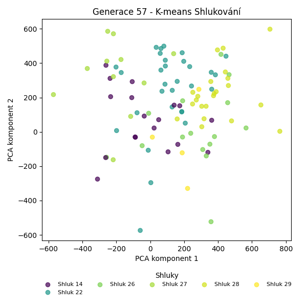

Stabilita mezi generací 56 → 57:
Shluk 22 → 22: 24 jedinců (88.9 %)
Shluk 22 → 14: 1 jedinců (3.7 %)
Shluk 22 → 27: 2 jedinců (7.4 %)
Shluk 14 → 14: 15 jedinců (71.4 %)
Shluk 14 → 27: 5 jedinců (23.8 %)
Shluk 14 → 22: 1 jedinců (4.8 %)
Shluk 28 → 26: 1 jedinců (4.5 %)
Shluk 28 → 14: 2 jedinců (9.1 %)
Shluk 28 → 28: 18 jedinců (81.8 %)
Shluk 28 → 22: 1 jedinců (4.5 %)
Shluk 27 → 22: 4 jedinců (33.3 %)
Shluk 27 → 26: 2 jedinců (16.7 %)
Shluk 27 → 27: 4 jedinců (33.3 %)
Shluk 27 → 28: 2 jedinců (16.7 %)
Shluk 26 → 28: 2 jedinců (14.3 %)
Shluk 26 → 26: 12 jedinců (85.7 %)
Shluk 29 → 29: 4 jedinců (100.0 %)
Jaccardovo mapování a overlap: Generace 56 → 57
- Cluster 22 → 22 (Jaccard: 0.73, Overlap: 0.89)
- Cluster 14 → 14 (Jaccard: 0.62, Overlap: 0.83)
- Cluster 28 → 28 (Jaccard: 0.69, Overlap: 0.82)
- Cluster 27 → 27 (Jaccard: 0.21, Overlap: 0.36)
- Cluster 26 → 26 (Jaccard: 0.71, Overlap: 0.86)
- Cluster 29 → 29 (Jaccard: 1.00, Overlap: 1.00)
Posun centroidů mezi generací 56 → 57:
- Shluk 0: 199.3906
- Shluk 1: 117.9098
- Shluk 2: 192.2863
- Shluk 3: 616.9433
- Shluk 4: 80.5439
- Shluk 5: 0.0000
Generace 58
Stabilita mezi generací 57 → 58:
Shluk 22 → 22: 28 jedinců (93.3 %)
Shluk 22 → 14: 1 jedinců (3.3 %)
Shluk 22 → 26: 1 jedinců (3.3 %)
Shluk 14 → 14: 17 jedinců (94.4 %)
Shluk 14 → 26: 1 jedinců (5.6 %)
Shluk 26 → 26: 14 jedinců (93.3 %)
Shluk 26 → 22: 1 jedinců (6.7 %)
Shluk 28 → 28: 21 jedinců (95.5 %)
Shluk 28 → 14: 1 jedinců (4.5 %)
Shluk 27 → 27: 11 jedinců (100.0 %)
Shluk 29 → 29: 3 jedinců (75.0 %)
Shluk 29 → 27: 1 jedinců (25.0 %)
Jaccardovo mapování a overlap: Generace 57 → 58
- Cluster 22 → 22 (Jaccard: 0.90, Overlap: 0.97)
- Cluster 14 → 14 (Jaccard: 0.85, Overlap: 0.94)
- Cluster 26 → 26 (Jaccard: 0.82, Overlap: 0.93)
- Cluster 28 → 28 (Jaccard: 0.95, Overlap: 1.00)
- Cluster 27 → 27 (Jaccard: 0.92, Overlap: 1.00)
- Cluster 29 → 29 (Jaccard: 0.75, Overlap: 1.00)
Posun centroidů mezi generací 57 → 58:
- Shluk 0: 50.4331
- Shluk 1: 48.1357
- Shluk 2: 114.7217
- Shluk 3: 116.6890
- Shluk 4: 23.7429
- Shluk 5: 365.3185

Generace 59
Stabilita mezi generací 58 → 59:
Shluk 22 → 22: 26 jedinců (89.7 %)
Shluk 22 → 28: 2 jedinců (6.9 %)
Shluk 22 → 14: 1 jedinců (3.4 %)
Shluk 14 → 14: 17 jedinců (89.5 %)
Shluk 14 → 28: 1 jedinců (5.3 %)
Shluk 14 → 22: 1 jedinců (5.3 %)
Shluk 26 → 26: 14 jedinců (87.5 %)
Shluk 26 → 22: 2 jedinců (12.5 %)
Shluk 28 → 28: 16 jedinců (76.2 %)
Shluk 28 → 14: 4 jedinců (19.0 %)
Shluk 28 → 26: 1 jedinců (4.8 %)
Shluk 27 → 27: 11 jedinců (91.7 %)
Shluk 27 → 29: 1 jedinců (8.3 %)
Shluk 29 → 29: 3 jedinců (100.0 %)
Jaccardovo mapování a overlap: Generace 58 → 59
- Cluster 22 → 22 (Jaccard: 0.81, Overlap: 0.90)
- Cluster 14 → 14 (Jaccard: 0.71, Overlap: 0.89)
- Cluster 26 → 26 (Jaccard: 0.82, Overlap: 0.93)
- Cluster 28 → 28 (Jaccard: 0.67, Overlap: 0.84)
- Cluster 27 → 27 (Jaccard: 0.92, Overlap: 1.00)
- Cluster 29 → 29 (Jaccard: 0.75, Overlap: 1.00)
Posun centroidů mezi generací 58 → 59:
- Shluk 0: 116.1149
- Shluk 1: 67.7559
- Shluk 2: 126.7860
- Shluk 3: 116.6890
- Shluk 4: 128.3668
- Shluk 5: 365.3185
Generace 60
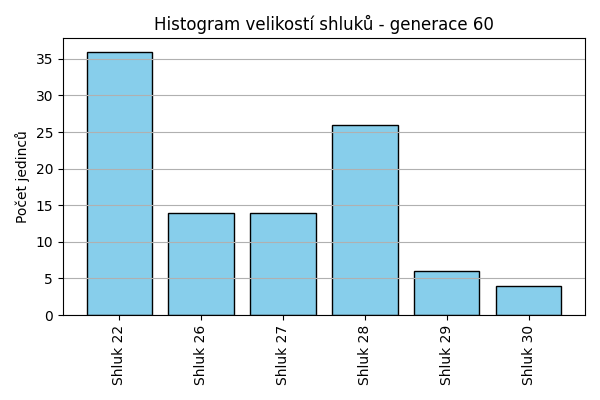
Stabilita mezi generací 59 → 60:
Shluk 22 → 22: 27 jedinců (93.1 %)
Shluk 22 → 27: 1 jedinců (3.4 %)
Shluk 22 → 29: 1 jedinců (3.4 %)
Shluk 14 → 28: 10 jedinců (45.5 %)
Shluk 14 → 22: 6 jedinců (27.3 %)
Shluk 14 → 27: 4 jedinců (18.2 %)
Shluk 14 → 26: 1 jedinců (4.5 %)
Shluk 14 → 29: 1 jedinců (4.5 %)
Shluk 28 → 28: 16 jedinců (84.2 %)
Shluk 28 → 22: 2 jedinců (10.5 %)
Shluk 28 → 29: 1 jedinců (5.3 %)
Shluk 26 → 26: 13 jedinců (86.7 %)
Shluk 26 → 22: 1 jedinců (6.7 %)
Shluk 26 → 30: 1 jedinců (6.7 %)
Shluk 27 → 27: 9 jedinců (81.8 %)
Shluk 27 → 30: 2 jedinců (18.2 %)
Shluk 29 → 29: 3 jedinců (75.0 %)
Shluk 29 → 30: 1 jedinců (25.0 %)
Jaccardovo mapování a overlap: Generace 59 → 60
- Cluster 22 → 22 (Jaccard: 0.71, Overlap: 0.93)
- Cluster 14 → 28 (Jaccard: 0.26, Overlap: 0.45)
- Cluster 28 → 28 (Jaccard: 0.55, Overlap: 0.84)
- Cluster 26 → 26 (Jaccard: 0.81, Overlap: 0.93)
- Cluster 27 → 27 (Jaccard: 0.56, Overlap: 0.82)
- Cluster 29 → 29 (Jaccard: 0.43, Overlap: 0.75)
Posun centroidů mezi generací 59 → 60:
- Shluk 0: 577.3696
- Shluk 1: 726.1884
- Shluk 2: 883.3833
- Shluk 3: 934.1789
- Shluk 4: 830.5807
- Shluk 5: 984.3234
Generace 61
Stabilita mezi generací 60 → 61:
Shluk 22 → 31: 16 jedinců (44.4 %)
Shluk 22 → 22: 19 jedinců (52.8 %)
Shluk 22 → 28: 1 jedinců (2.8 %)
Shluk 28 → 28: 23 jedinců (88.5 %)
Shluk 28 → 31: 1 jedinců (3.8 %)
Shluk 28 → 22: 2 jedinců (7.7 %)
Shluk 26 → 26: 13 jedinců (92.9 %)
Shluk 26 → 28: 1 jedinců (7.1 %)
Shluk 27 → 28: 1 jedinců (7.1 %)
Shluk 27 → 22: 1 jedinců (7.1 %)
Shluk 27 → 27: 11 jedinců (78.6 %)
Shluk 27 → 26: 1 jedinců (7.1 %)
Shluk 29 → 29: 3 jedinců (50.0 %)
Shluk 29 → 28: 1 jedinců (16.7 %)
Shluk 29 → 22: 2 jedinců (33.3 %)
Shluk 30 → 26: 1 jedinců (25.0 %)
Shluk 30 → 27: 2 jedinců (50.0 %)
Shluk 30 → 31: 1 jedinců (25.0 %)
Jaccardovo mapování a overlap: Generace 60 → 61
- Cluster 22 → 22 (Jaccard: 0.46, Overlap: 0.79)
- Cluster 28 → 28 (Jaccard: 0.77, Overlap: 0.88)
- Cluster 26 → 26 (Jaccard: 0.81, Overlap: 0.93)
- Cluster 27 → 27 (Jaccard: 0.69, Overlap: 0.85)
- Cluster 29 → 29 (Jaccard: 0.50, Overlap: 1.00)
- Cluster 30 → 27 (Jaccard: 0.13, Overlap: 0.50)
Posun centroidů mezi generací 60 → 61:
- Shluk 0: 245.6366
- Shluk 1: 178.7090
- Shluk 2: 173.2064
- Shluk 3: 81.8110
- Shluk 4: 500.0811
- Shluk 5: 996.8128
Generace 62
Stabilita mezi generací 61 → 62:
Shluk 31 → 31: 16 jedinců (88.9 %)
Shluk 31 → 26: 2 jedinců (11.1 %)
Shluk 28 → 32: 11 jedinců (40.7 %)
Shluk 28 → 28: 15 jedinců (55.6 %)
Shluk 28 → 26: 1 jedinců (3.7 %)
Shluk 26 → 26: 11 jedinců (73.3 %)
Shluk 26 → 28: 1 jedinců (6.7 %)
Shluk 26 → 33: 1 jedinců (6.7 %)
Shluk 26 → 32: 1 jedinců (6.7 %)
Shluk 26 → 31: 1 jedinců (6.7 %)
Shluk 22 → 31: 13 jedinců (54.2 %)
Shluk 22 → 33: 3 jedinců (12.5 %)
Shluk 22 → 32: 7 jedinců (29.2 %)
Shluk 22 → 29: 1 jedinců (4.2 %)
Shluk 27 → 31: 8 jedinců (61.5 %)
Shluk 27 → 32: 2 jedinců (15.4 %)
Shluk 27 → 26: 1 jedinců (7.7 %)
Shluk 27 → 33: 2 jedinců (15.4 %)
Shluk 29 → 29: 3 jedinců (100.0 %)
Jaccardovo mapování a overlap: Generace 61 → 62
- Cluster 31 → 31 (Jaccard: 0.40, Overlap: 0.89)
- Cluster 28 → 28 (Jaccard: 0.54, Overlap: 0.94)
- Cluster 26 → 26 (Jaccard: 0.58, Overlap: 0.73)
- Cluster 22 → 31 (Jaccard: 0.27, Overlap: 0.54)
- Cluster 27 → 31 (Jaccard: 0.19, Overlap: 0.62)
- Cluster 29 → 29 (Jaccard: 0.75, Overlap: 1.00)
Posun centroidů mezi generací 61 → 62:
- Shluk 0: 675.7956
- Shluk 1: 869.3407
- Shluk 2: 1254.1862
- Shluk 3: 668.4416
- Shluk 4: 1369.9744
- Shluk 5: 962.7319
Generace 63
Stabilita mezi generací 62 → 63:
Shluk 31 → 31: 27 jedinců (71.1 %)
Shluk 31 → 34: 7 jedinců (18.4 %)
Shluk 31 → 28: 1 jedinců (2.6 %)
Shluk 31 → 33: 2 jedinců (5.3 %)
Shluk 31 → 26: 1 jedinců (2.6 %)
Shluk 32 → 28: 12 jedinců (57.1 %)
Shluk 32 → 26: 2 jedinců (9.5 %)
Shluk 32 → 34: 4 jedinců (19.0 %)
Shluk 32 → 31: 3 jedinců (14.3 %)
Shluk 26 → 26: 8 jedinců (53.3 %)
Shluk 26 → 33: 2 jedinců (13.3 %)
Shluk 26 → 31: 3 jedinců (20.0 %)
Shluk 26 → 34: 1 jedinců (6.7 %)
Shluk 26 → 29: 1 jedinců (6.7 %)
Shluk 28 → 28: 15 jedinců (93.8 %)
Shluk 28 → 26: 1 jedinců (6.2 %)
Shluk 33 → 33: 5 jedinců (83.3 %)
Shluk 33 → 28: 1 jedinců (16.7 %)
Shluk 29 → 29: 3 jedinců (75.0 %)
Shluk 29 → 31: 1 jedinců (25.0 %)
Jaccardovo mapování a overlap: Generace 62 → 63
- Cluster 31 → 31 (Jaccard: 0.60, Overlap: 0.79)
- Cluster 32 → 28 (Jaccard: 0.32, Overlap: 0.57)
- Cluster 26 → 26 (Jaccard: 0.42, Overlap: 0.67)
- Cluster 28 → 28 (Jaccard: 0.50, Overlap: 0.94)
- Cluster 33 → 33 (Jaccard: 0.50, Overlap: 0.83)
- Cluster 29 → 29 (Jaccard: 0.60, Overlap: 0.75)
Posun centroidů mezi generací 62 → 63:
- Shluk 0: 290.7490
- Shluk 1: 227.2816
- Shluk 2: 438.8550
- Shluk 3: 156.6503
- Shluk 4: 1014.4821
- Shluk 5: 882.3885
Generace 64
Stabilita mezi generací 63 → 64:
Shluk 31 → 31: 14 jedinců (41.2 %)
Shluk 31 → 35: 12 jedinců (35.3 %)
Shluk 31 → 34: 6 jedinců (17.6 %)
Shluk 31 → 26: 1 jedinců (2.9 %)
Shluk 31 → 29: 1 jedinců (2.9 %)
Shluk 28 → 28: 26 jedinců (89.7 %)
Shluk 28 → 31: 1 jedinců (3.4 %)
Shluk 28 → 34: 1 jedinců (3.4 %)
Shluk 28 → 29: 1 jedinců (3.4 %)
Shluk 26 → 26: 12 jedinců (100.0 %)
Shluk 33 → 31: 3 jedinců (33.3 %)
Shluk 33 → 26: 1 jedinců (11.1 %)
Shluk 33 → 29: 4 jedinců (44.4 %)
Shluk 33 → 34: 1 jedinců (11.1 %)
Shluk 34 → 34: 8 jedinců (66.7 %)
Shluk 34 → 31: 3 jedinců (25.0 %)
Shluk 34 → 35: 1 jedinců (8.3 %)
Shluk 29 → 29: 3 jedinců (75.0 %)
Shluk 29 → 35: 1 jedinců (25.0 %)
Jaccardovo mapování a overlap: Generace 63 → 64
- Cluster 31 → 31 (Jaccard: 0.34, Overlap: 0.67)
- Cluster 28 → 28 (Jaccard: 0.90, Overlap: 1.00)
- Cluster 26 → 26 (Jaccard: 0.86, Overlap: 1.00)
- Cluster 33 → 29 (Jaccard: 0.29, Overlap: 0.44)
- Cluster 34 → 34 (Jaccard: 0.40, Overlap: 0.67)
- Cluster 29 → 29 (Jaccard: 0.30, Overlap: 0.75)
Posun centroidů mezi generací 63 → 64:
- Shluk 0: 49.5374
- Shluk 1: 40.4723
- Shluk 2: 704.1503
- Shluk 3: 257.1484
- Shluk 4: 825.8146
- Shluk 5: 764.9764
Generace 65
Stabilita mezi generací 64 → 65:
Shluk 31 → 31: 17 jedinců (81.0 %)
Shluk 31 → 29: 2 jedinců (9.5 %)
Shluk 31 → 34: 1 jedinců (4.8 %)
Shluk 31 → 26: 1 jedinců (4.8 %)
Shluk 28 → 28: 26 jedinců (100.0 %)
Shluk 35 → 35: 12 jedinců (85.7 %)
Shluk 35 → 31: 2 jedinců (14.3 %)
Shluk 26 → 26: 12 jedinců (85.7 %)
Shluk 26 → 31: 1 jedinců (7.1 %)
Shluk 26 → 28: 1 jedinců (7.1 %)
Shluk 34 → 34: 15 jedinců (93.8 %)
Shluk 34 → 28: 1 jedinců (6.2 %)
Shluk 29 → 29: 8 jedinců (88.9 %)
Shluk 29 → 31: 1 jedinců (11.1 %)
Jaccardovo mapování a overlap: Generace 64 → 65
- Cluster 31 → 31 (Jaccard: 0.68, Overlap: 0.81)
- Cluster 28 → 28 (Jaccard: 0.93, Overlap: 1.00)
- Cluster 35 → 35 (Jaccard: 0.86, Overlap: 1.00)
- Cluster 26 → 26 (Jaccard: 0.80, Overlap: 0.92)
- Cluster 34 → 34 (Jaccard: 0.88, Overlap: 0.94)
- Cluster 29 → 29 (Jaccard: 0.73, Overlap: 0.89)
Posun centroidů mezi generací 64 → 65:
- Shluk 0: 33.8897
- Shluk 1: 25.4774
- Shluk 2: 127.9958
- Shluk 3: 116.2477
- Shluk 4: 24.2925
- Shluk 5: 120.8198
Generace 66

Stabilita mezi generací 65 → 66:
Shluk 31 → 31: 19 jedinců (90.5 %)
Shluk 31 → 29: 1 jedinců (4.8 %)
Shluk 31 → 35: 1 jedinců (4.8 %)
Shluk 28 → 28: 27 jedinců (96.4 %)
Shluk 28 → 31: 1 jedinců (3.6 %)
Shluk 35 → 31: 2 jedinců (16.7 %)
Shluk 35 → 35: 9 jedinců (75.0 %)
Shluk 35 → 26: 1 jedinců (8.3 %)
Shluk 26 → 26: 13 jedinců (100.0 %)
Shluk 34 → 31: 14 jedinců (87.5 %)
Shluk 34 → 28: 1 jedinců (6.2 %)
Shluk 34 → 26: 1 jedinců (6.2 %)
Shluk 29 → 36: 3 jedinců (30.0 %)
Shluk 29 → 35: 1 jedinců (10.0 %)
Shluk 29 → 29: 4 jedinců (40.0 %)
Shluk 29 → 31: 1 jedinců (10.0 %)
Shluk 29 → 28: 1 jedinců (10.0 %)
Jaccardovo mapování a overlap: Generace 65 → 66
- Cluster 31 → 31 (Jaccard: 0.49, Overlap: 0.90)
- Cluster 28 → 28 (Jaccard: 0.90, Overlap: 0.96)
- Cluster 35 → 35 (Jaccard: 0.64, Overlap: 0.82)
- Cluster 26 → 26 (Jaccard: 0.87, Overlap: 1.00)
- Cluster 34 → 31 (Jaccard: 0.36, Overlap: 0.88)
- Cluster 29 → 29 (Jaccard: 0.36, Overlap: 0.80)
Posun centroidů mezi generací 65 → 66:
- Shluk 0: 58.8230
- Shluk 1: 53.1111
- Shluk 2: 487.4027
- Shluk 3: 241.6414
- Shluk 4: 842.9264
- Shluk 5: 1356.7538
Generace 67
Stabilita mezi generací 66 → 67:
Shluk 31 → 31: 37 jedinců (100.0 %)
Shluk 28 → 28: 29 jedinců (100.0 %)
Shluk 26 → 26: 15 jedinců (100.0 %)
Shluk 35 → 35: 11 jedinců (100.0 %)
Shluk 29 → 29: 5 jedinců (100.0 %)
Shluk 36 → 36: 3 jedinců (100.0 %)
Jaccardovo mapování a overlap: Generace 66 → 67
- Cluster 31 → 31 (Jaccard: 1.00, Overlap: 1.00)
- Cluster 28 → 28 (Jaccard: 1.00, Overlap: 1.00)
- Cluster 26 → 26 (Jaccard: 1.00, Overlap: 1.00)
- Cluster 35 → 35 (Jaccard: 1.00, Overlap: 1.00)
- Cluster 29 → 29 (Jaccard: 1.00, Overlap: 1.00)
- Cluster 36 → 36 (Jaccard: 1.00, Overlap: 1.00)
Posun centroidů mezi generací 66 → 67:
- Shluk 0: 0.0000
- Shluk 1: 0.0000
- Shluk 2: 0.0000
- Shluk 3: 0.0000
- Shluk 4: 0.0000
- Shluk 5: 0.0000
Generace 68
Stabilita mezi generací 67 → 68:
Shluk 31 → 37: 14 jedinců (37.8 %)
Shluk 31 → 31: 17 jedinců (45.9 %)
Shluk 31 → 26: 2 jedinců (5.4 %)
Shluk 31 → 35: 2 jedinců (5.4 %)
Shluk 31 → 29: 1 jedinců (2.7 %)
Shluk 31 → 28: 1 jedinců (2.7 %)
Shluk 28 → 28: 19 jedinců (65.5 %)
Shluk 28 → 31: 4 jedinců (13.8 %)
Shluk 28 → 37: 5 jedinců (17.2 %)
Shluk 28 → 29: 1 jedinců (3.4 %)
Shluk 26 → 26: 14 jedinců (93.3 %)
Shluk 26 → 35: 1 jedinců (6.7 %)
Shluk 35 → 35: 11 jedinců (100.0 %)
Shluk 29 → 29: 5 jedinců (100.0 %)
Shluk 36 → 29: 3 jedinců (100.0 %)
Jaccardovo mapování a overlap: Generace 67 → 68
- Cluster 31 → 31 (Jaccard: 0.41, Overlap: 0.81)
- Cluster 28 → 28 (Jaccard: 0.63, Overlap: 0.95)
- Cluster 26 → 26 (Jaccard: 0.82, Overlap: 0.93)
- Cluster 35 → 35 (Jaccard: 0.79, Overlap: 1.00)
- Cluster 29 → 29 (Jaccard: 0.50, Overlap: 1.00)
- Cluster 36 → 29 (Jaccard: 0.30, Overlap: 1.00)
Posun centroidů mezi generací 67 → 68:
- Shluk 0: 80.5113
- Shluk 1: 70.9631
- Shluk 2: 450.3984
- Shluk 3: 275.1709
- Shluk 4: 101.2696
- Shluk 5: 1161.3879
Generace 69
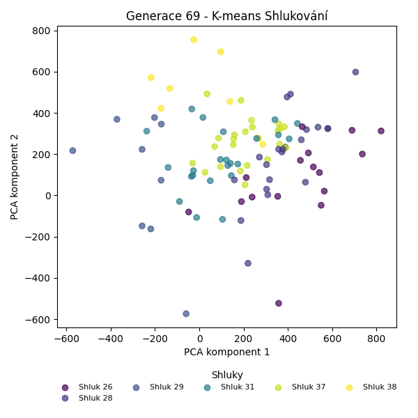
Stabilita mezi generací 68 → 69:
Shluk 37 → 28: 6 jedinců (31.6 %)
Shluk 37 → 37: 12 jedinců (63.2 %)
Shluk 37 → 29: 1 jedinců (5.3 %)
Shluk 28 → 31: 8 jedinců (40.0 %)
Shluk 28 → 28: 11 jedinců (55.0 %)
Shluk 28 → 26: 1 jedinců (5.0 %)
Shluk 31 → 37: 4 jedinců (19.0 %)
Shluk 31 → 31: 15 jedinců (71.4 %)
Shluk 31 → 38: 2 jedinců (9.5 %)
Shluk 26 → 26: 15 jedinců (93.8 %)
Shluk 26 → 38: 1 jedinců (6.2 %)
Shluk 35 → 38: 4 jedinců (28.6 %)
Shluk 35 → 37: 8 jedinců (57.1 %)
Shluk 35 → 29: 2 jedinců (14.3 %)
Shluk 29 → 29: 6 jedinců (60.0 %)
Shluk 29 → 28: 4 jedinců (40.0 %)
Jaccardovo mapování a overlap: Generace 68 → 69
- Cluster 37 → 37 (Jaccard: 0.39, Overlap: 0.63)
- Cluster 28 → 28 (Jaccard: 0.37, Overlap: 0.55)
- Cluster 31 → 31 (Jaccard: 0.52, Overlap: 0.71)
- Cluster 26 → 26 (Jaccard: 0.88, Overlap: 0.94)
- Cluster 35 → 37 (Jaccard: 0.27, Overlap: 0.57)
- Cluster 29 → 29 (Jaccard: 0.46, Overlap: 0.67)
Posun centroidů mezi generací 68 → 69:
- Shluk 0: 134.0866
- Shluk 1: 327.5414
- Shluk 2: 419.5612
- Shluk 3: 198.1451
- Shluk 4: 409.1405
- Shluk 5: 799.3979
Generace 70
Stabilita mezi generací 69 → 70:
Shluk 28 → 28: 17 jedinců (81.0 %)
Shluk 28 → 29: 4 jedinců (19.0 %)
Shluk 31 → 31: 14 jedinců (60.9 %)
Shluk 31 → 28: 7 jedinců (30.4 %)
Shluk 31 → 37: 2 jedinců (8.7 %)
Shluk 37 → 38: 9 jedinců (37.5 %)
Shluk 37 → 37: 12 jedinců (50.0 %)
Shluk 37 → 31: 3 jedinců (12.5 %)
Shluk 26 → 26: 16 jedinců (100.0 %)
Shluk 38 → 38: 5 jedinců (71.4 %)
Shluk 38 → 31: 1 jedinců (14.3 %)
Shluk 38 → 37: 1 jedinců (14.3 %)
Shluk 29 → 37: 4 jedinců (44.4 %)
Shluk 29 → 29: 4 jedinců (44.4 %)
Shluk 29 → 38: 1 jedinců (11.1 %)
Jaccardovo mapování a overlap: Generace 69 → 70
- Cluster 28 → 28 (Jaccard: 0.61, Overlap: 0.81)
- Cluster 31 → 31 (Jaccard: 0.52, Overlap: 0.78)
- Cluster 37 → 37 (Jaccard: 0.39, Overlap: 0.63)
- Cluster 26 → 26 (Jaccard: 1.00, Overlap: 1.00)
- Cluster 38 → 38 (Jaccard: 0.29, Overlap: 0.71)
- Cluster 29 → 29 (Jaccard: 0.31, Overlap: 0.50)
Posun centroidů mezi generací 69 → 70:
- Shluk 0: 57.9893
- Shluk 1: 249.8712
- Shluk 2: 517.0722
- Shluk 3: 184.4158
- Shluk 4: 318.0061
- Shluk 5: 466.7612
Generace 71
Stabilita mezi generací 70 → 71:
Shluk 28 → 28: 17 jedinců (70.8 %)
Shluk 28 → 31: 7 jedinců (29.2 %)
Shluk 31 → 31: 17 jedinců (94.4 %)
Shluk 31 → 38: 1 jedinců (5.6 %)
Shluk 38 → 38: 13 jedinců (86.7 %)
Shluk 38 → 26: 1 jedinců (6.7 %)
Shluk 38 → 37: 1 jedinců (6.7 %)
Shluk 26 → 26: 15 jedinců (93.8 %)
Shluk 26 → 28: 1 jedinců (6.2 %)
Shluk 37 → 28: 7 jedinců (36.8 %)
Shluk 37 → 37: 5 jedinců (26.3 %)
Shluk 37 → 38: 6 jedinců (31.6 %)
Shluk 37 → 31: 1 jedinců (5.3 %)
Shluk 29 → 29: 3 jedinců (37.5 %)
Shluk 29 → 28: 1 jedinců (12.5 %)
Shluk 29 → 37: 4 jedinců (50.0 %)
Jaccardovo mapování a overlap: Generace 70 → 71
- Cluster 28 → 28 (Jaccard: 0.52, Overlap: 0.71)
- Cluster 31 → 31 (Jaccard: 0.65, Overlap: 0.94)
- Cluster 38 → 38 (Jaccard: 0.59, Overlap: 0.87)
- Cluster 26 → 26 (Jaccard: 0.88, Overlap: 0.94)
- Cluster 37 → 37 (Jaccard: 0.21, Overlap: 0.50)
- Cluster 29 → 29 (Jaccard: 0.38, Overlap: 1.00)
Posun centroidů mezi generací 70 → 71:
- Shluk 0: 35.8333
- Shluk 1: 220.5560
- Shluk 2: 653.7862
- Shluk 3: 154.9516
- Shluk 4: 518.2181
- Shluk 5: 182.5308
Generace 72
Stabilita mezi generací 71 → 72:
Shluk 28 → 28: 16 jedinců (61.5 %)
Shluk 28 → 39: 10 jedinců (38.5 %)
Shluk 31 → 31: 17 jedinců (68.0 %)
Shluk 31 → 28: 7 jedinců (28.0 %)
Shluk 31 → 39: 1 jedinců (4.0 %)
Shluk 38 → 31: 2 jedinců (10.0 %)
Shluk 38 → 38: 11 jedinců (55.0 %)
Shluk 38 → 39: 6 jedinců (30.0 %)
Shluk 38 → 26: 1 jedinců (5.0 %)
Shluk 26 → 26: 15 jedinců (93.8 %)
Shluk 26 → 39: 1 jedinců (6.2 %)
Shluk 37 → 39: 5 jedinců (50.0 %)
Shluk 37 → 38: 1 jedinců (10.0 %)
Shluk 37 → 29: 4 jedinců (40.0 %)
Shluk 29 → 29: 3 jedinců (100.0 %)
Jaccardovo mapování a overlap: Generace 71 → 72
- Cluster 28 → 28 (Jaccard: 0.48, Overlap: 0.70)
- Cluster 31 → 31 (Jaccard: 0.63, Overlap: 0.89)
- Cluster 38 → 38 (Jaccard: 0.52, Overlap: 0.92)
- Cluster 26 → 26 (Jaccard: 0.88, Overlap: 0.94)
- Cluster 37 → 29 (Jaccard: 0.31, Overlap: 0.57)
- Cluster 29 → 29 (Jaccard: 0.43, Overlap: 1.00)
Posun centroidů mezi generací 71 → 72:
- Shluk 0: 43.0179
- Shluk 1: 220.4902
- Shluk 2: 590.2904
- Shluk 3: 155.5311
- Shluk 4: 789.6843
- Shluk 5: 483.6257
Generace 73
Stabilita mezi generací 72 → 73:
Shluk 28 → 28: 22 jedinců (95.7 %)
Shluk 28 → 39: 1 jedinců (4.3 %)
Shluk 31 → 28: 2 jedinců (10.5 %)
Shluk 31 → 38: 3 jedinců (15.8 %)
Shluk 31 → 39: 14 jedinců (73.7 %)
Shluk 26 → 26: 16 jedinců (100.0 %)
Shluk 38 → 38: 11 jedinců (91.7 %)
Shluk 38 → 40: 1 jedinců (8.3 %)
Shluk 39 → 39: 19 jedinců (82.6 %)
Shluk 39 → 40: 2 jedinců (8.7 %)
Shluk 39 → 38: 1 jedinců (4.3 %)
Shluk 39 → 28: 1 jedinců (4.3 %)
Shluk 29 → 29: 3 jedinců (42.9 %)
Shluk 29 → 40: 4 jedinců (57.1 %)
Jaccardovo mapování a overlap: Generace 72 → 73
- Cluster 28 → 28 (Jaccard: 0.85, Overlap: 0.96)
- Cluster 31 → 39 (Jaccard: 0.36, Overlap: 0.74)
- Cluster 26 → 26 (Jaccard: 1.00, Overlap: 1.00)
- Cluster 38 → 38 (Jaccard: 0.69, Overlap: 0.92)
- Cluster 39 → 39 (Jaccard: 0.50, Overlap: 0.83)
- Cluster 29 → 29 (Jaccard: 0.43, Overlap: 1.00)
Posun centroidů mezi generací 72 → 73:
- Shluk 0: 0.0000
- Shluk 1: 27.0492
- Shluk 2: 590.2904
- Shluk 3: 673.6898
- Shluk 4: 704.3820
- Shluk 5: 656.5982
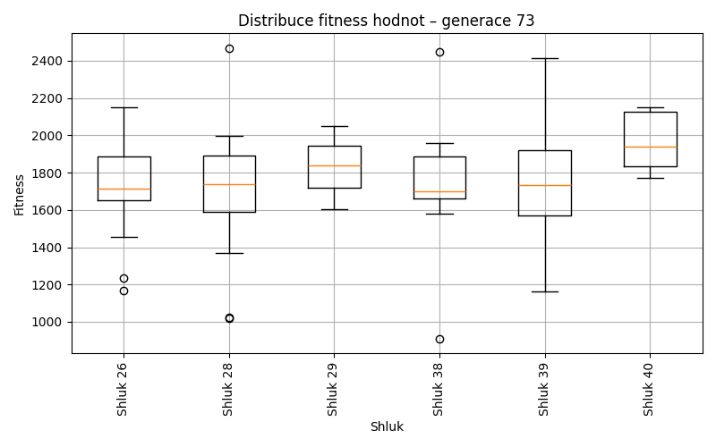
Generace 74
Stabilita mezi generací 73 → 74:
Shluk 28 → 28: 24 jedinců (96.0 %)
Shluk 28 → 41: 1 jedinců (4.0 %)
Shluk 38 → 38: 11 jedinců (73.3 %)
Shluk 38 → 41: 2 jedinců (13.3 %)
Shluk 38 → 39: 2 jedinců (13.3 %)
Shluk 26 → 26: 14 jedinců (87.5 %)
Shluk 26 → 28: 2 jedinců (12.5 %)
Shluk 39 → 39: 20 jedinců (58.8 %)
Shluk 39 → 41: 14 jedinců (41.2 %)
Shluk 40 → 39: 2 jedinců (28.6 %)
Shluk 40 → 38: 1 jedinců (14.3 %)
Shluk 40 → 29: 4 jedinců (57.1 %)
Shluk 29 → 29: 3 jedinců (100.0 %)
Jaccardovo mapování a overlap: Generace 73 → 74
- Cluster 28 → 28 (Jaccard: 0.89, Overlap: 0.96)
- Cluster 38 → 38 (Jaccard: 0.69, Overlap: 0.92)
- Cluster 26 → 26 (Jaccard: 0.88, Overlap: 1.00)
- Cluster 39 → 39 (Jaccard: 0.53, Overlap: 0.83)
- Cluster 40 → 29 (Jaccard: 0.40, Overlap: 0.57)
- Cluster 29 → 29 (Jaccard: 0.43, Overlap: 1.00)
Posun centroidů mezi generací 73 → 74:
- Shluk 0: 86.4654
- Shluk 1: 41.4897
- Shluk 2: 590.2904
- Shluk 3: 148.5750
- Shluk 4: 222.1941
- Shluk 5: 846.2522
Generace 75
Stabilita mezi generací 74 → 75:
Shluk 28 → 39: 8 jedinců (30.8 %)
Shluk 28 → 28: 15 jedinců (57.7 %)
Shluk 28 → 41: 2 jedinců (7.7 %)
Shluk 28 → 26: 1 jedinců (3.8 %)
Shluk 41 → 28: 2 jedinců (11.8 %)
Shluk 41 → 41: 13 jedinců (76.5 %)
Shluk 41 → 38: 2 jedinců (11.8 %)
Shluk 38 → 38: 10 jedinců (83.3 %)
Shluk 38 → 41: 1 jedinců (8.3 %)
Shluk 38 → 28: 1 jedinců (8.3 %)
Shluk 26 → 26: 14 jedinců (100.0 %)
Shluk 39 → 39: 12 jedinců (50.0 %)
Shluk 39 → 28: 2 jedinců (8.3 %)
Shluk 39 → 41: 9 jedinců (37.5 %)
Shluk 39 → 26: 1 jedinců (4.2 %)
Shluk 29 → 29: 3 jedinců (42.9 %)
Shluk 29 → 41: 2 jedinců (28.6 %)
Shluk 29 → 28: 1 jedinců (14.3 %)
Shluk 29 → 26: 1 jedinců (14.3 %)
Jaccardovo mapování a overlap: Generace 74 → 75
- Cluster 28 → 28 (Jaccard: 0.47, Overlap: 0.71)
- Cluster 41 → 41 (Jaccard: 0.42, Overlap: 0.76)
- Cluster 38 → 38 (Jaccard: 0.71, Overlap: 0.83)
- Cluster 26 → 26 (Jaccard: 0.82, Overlap: 1.00)
- Cluster 39 → 39 (Jaccard: 0.38, Overlap: 0.60)
- Cluster 29 → 29 (Jaccard: 0.43, Overlap: 1.00)
Posun centroidů mezi generací 74 → 75:
- Shluk 0: 58.7566
- Shluk 1: 188.5414
- Shluk 2: 590.2904
- Shluk 3: 174.3286
- Shluk 4: 324.0417
- Shluk 5: 296.2405
Generace 76
Stabilita mezi generací 75 → 76:
Shluk 39 → 28: 8 jedinců (40.0 %)
Shluk 39 → 39: 12 jedinců (60.0 %)
Shluk 28 → 41: 8 jedinců (38.1 %)
Shluk 28 → 28: 11 jedinců (52.4 %)
Shluk 28 → 26: 1 jedinců (4.8 %)
Shluk 28 → 29: 1 jedinců (4.8 %)
Shluk 38 → 38: 12 jedinců (100.0 %)
Shluk 26 → 26: 17 jedinců (100.0 %)
Shluk 41 → 41: 11 jedinců (40.7 %)
Shluk 41 → 38: 2 jedinců (7.4 %)
Shluk 41 → 39: 12 jedinců (44.4 %)
Shluk 41 → 26: 1 jedinců (3.7 %)
Shluk 41 → 29: 1 jedinců (3.7 %)
Shluk 29 → 29: 2 jedinců (66.7 %)
Shluk 29 → 39: 1 jedinců (33.3 %)
Jaccardovo mapování a overlap: Generace 75 → 76
- Cluster 39 → 39 (Jaccard: 0.36, Overlap: 0.60)
- Cluster 28 → 28 (Jaccard: 0.38, Overlap: 0.58)
- Cluster 38 → 38 (Jaccard: 0.86, Overlap: 1.00)
- Cluster 26 → 26 (Jaccard: 0.89, Overlap: 1.00)
- Cluster 41 → 41 (Jaccard: 0.31, Overlap: 0.58)
- Cluster 29 → 29 (Jaccard: 0.40, Overlap: 0.67)
Posun centroidů mezi generací 75 → 76:
- Shluk 0: 51.8615
- Shluk 1: 296.7247
- Shluk 2: 505.9019
- Shluk 3: 91.9678
- Shluk 4: 301.2630
- Shluk 5: 382.1262
Generace 77
Stabilita mezi generací 76 → 77:
Shluk 28 → 28: 17 jedinců (89.5 %)
Shluk 28 → 39: 1 jedinců (5.3 %)
Shluk 28 → 26: 1 jedinců (5.3 %)
Shluk 41 → 41: 16 jedinců (84.2 %)
Shluk 41 → 39: 3 jedinců (15.8 %)
Shluk 38 → 38: 11 jedinců (78.6 %)
Shluk 38 → 39: 3 jedinců (21.4 %)
Shluk 26 → 26: 17 jedinců (89.5 %)
Shluk 26 → 28: 1 jedinců (5.3 %)
Shluk 26 → 41: 1 jedinců (5.3 %)
Shluk 39 → 39: 24 jedinců (96.0 %)
Shluk 39 → 28: 1 jedinců (4.0 %)
Shluk 29 → 29: 2 jedinců (50.0 %)
Shluk 29 → 41: 2 jedinců (50.0 %)
Jaccardovo mapování a overlap: Generace 76 → 77
- Cluster 28 → 28 (Jaccard: 0.81, Overlap: 0.89)
- Cluster 41 → 41 (Jaccard: 0.73, Overlap: 0.84)
- Cluster 38 → 38 (Jaccard: 0.79, Overlap: 1.00)
- Cluster 26 → 26 (Jaccard: 0.85, Overlap: 0.94)
- Cluster 39 → 39 (Jaccard: 0.75, Overlap: 0.96)
- Cluster 29 → 29 (Jaccard: 0.50, Overlap: 1.00)
Posun centroidů mezi generací 76 → 77:
- Shluk 0: 69.7998
- Shluk 1: 64.4565
- Shluk 2: 511.4608
- Shluk 3: 143.4870
- Shluk 4: 106.4764
- Shluk 5: 92.1501
Generace 78
Stabilita mezi generací 77 → 78:
Shluk 28 → 28: 19 jedinců (100.0 %)
Shluk 41 → 41: 17 jedinců (89.5 %)
Shluk 41 → 42: 2 jedinců (10.5 %)
Shluk 38 → 39: 7 jedinců (63.6 %)
Shluk 38 → 41: 2 jedinců (18.2 %)
Shluk 38 → 26: 1 jedinců (9.1 %)
Shluk 38 → 29: 1 jedinců (9.1 %)
Shluk 26 → 26: 11 jedinců (61.1 %)
Shluk 26 → 42: 6 jedinců (33.3 %)
Shluk 26 → 28: 1 jedinců (5.6 %)
Shluk 39 → 39: 29 jedinců (93.5 %)
Shluk 39 → 41: 2 jedinců (6.5 %)
Shluk 29 → 29: 2 jedinců (100.0 %)
Jaccardovo mapování a overlap: Generace 77 → 78
- Cluster 28 → 28 (Jaccard: 0.95, Overlap: 1.00)
- Cluster 41 → 41 (Jaccard: 0.74, Overlap: 0.89)
- Cluster 38 → 39 (Jaccard: 0.17, Overlap: 0.64)
- Cluster 26 → 26 (Jaccard: 0.58, Overlap: 0.92)
- Cluster 39 → 39 (Jaccard: 0.76, Overlap: 0.94)
- Cluster 29 → 29 (Jaccard: 0.67, Overlap: 1.00)
Posun centroidů mezi generací 77 → 78:
- Shluk 0: 186.8759
- Shluk 1: 75.4288
- Shluk 2: 498.6293
- Shluk 3: 497.5418
- Shluk 4: 541.7239
- Shluk 5: 769.0691
Generace 79
Stabilita mezi generací 78 → 79:
Shluk 28 → 28: 17 jedinců (85.0 %)
Shluk 28 → 43: 3 jedinců (15.0 %)
Shluk 41 → 43: 7 jedinců (33.3 %)
Shluk 41 → 41: 14 jedinců (66.7 %)
Shluk 39 → 39: 32 jedinců (88.9 %)
Shluk 39 → 28: 3 jedinců (8.3 %)
Shluk 39 → 41: 1 jedinců (2.8 %)
Shluk 26 → 26: 12 jedinců (100.0 %)
Shluk 42 → 26: 6 jedinců (75.0 %)
Shluk 42 → 39: 1 jedinců (12.5 %)
Shluk 42 → 43: 1 jedinců (12.5 %)
Shluk 29 → 29: 3 jedinců (100.0 %)
Jaccardovo mapování a overlap: Generace 78 → 79
- Cluster 28 → 28 (Jaccard: 0.74, Overlap: 0.85)
- Cluster 41 → 41 (Jaccard: 0.64, Overlap: 0.93)
- Cluster 39 → 39 (Jaccard: 0.86, Overlap: 0.97)
- Cluster 26 → 26 (Jaccard: 0.67, Overlap: 1.00)
- Cluster 42 → 26 (Jaccard: 0.30, Overlap: 0.75)
- Cluster 29 → 29 (Jaccard: 1.00, Overlap: 1.00)
Posun centroidů mezi generací 78 → 79:
- Shluk 0: 184.3199
- Shluk 1: 102.7004
- Shluk 2: 0.0000
- Shluk 3: 24.4542
- Shluk 4: 195.5398
- Shluk 5: 884.1121
Generace 80

Stabilita mezi generací 79 → 80:
Shluk 28 → 28: 15 jedinců (75.0 %)
Shluk 28 → 39: 3 jedinců (15.0 %)
Shluk 28 → 45: 1 jedinců (5.0 %)
Shluk 28 → 41: 1 jedinců (5.0 %)
Shluk 43 → 41: 7 jedinců (63.6 %)
Shluk 43 → 28: 3 jedinců (27.3 %)
Shluk 43 → 26: 1 jedinců (9.1 %)
Shluk 39 → 44: 11 jedinců (33.3 %)
Shluk 39 → 39: 21 jedinců (63.6 %)
Shluk 39 → 45: 1 jedinců (3.0 %)
Shluk 26 → 26: 15 jedinců (83.3 %)
Shluk 26 → 44: 1 jedinců (5.6 %)
Shluk 26 → 39: 1 jedinců (5.6 %)
Shluk 26 → 28: 1 jedinců (5.6 %)
Shluk 41 → 41: 9 jedinců (60.0 %)
Shluk 41 → 45: 4 jedinců (26.7 %)
Shluk 41 → 39: 2 jedinců (13.3 %)
Shluk 29 → 26: 1 jedinců (33.3 %)
Shluk 29 → 28: 2 jedinců (66.7 %)
Jaccardovo mapování a overlap: Generace 79 → 80
- Cluster 28 → 28 (Jaccard: 0.58, Overlap: 0.75)
- Cluster 43 → 41 (Jaccard: 0.33, Overlap: 0.64)
- Cluster 39 → 39 (Jaccard: 0.54, Overlap: 0.78)
- Cluster 26 → 26 (Jaccard: 0.75, Overlap: 0.88)
- Cluster 41 → 41 (Jaccard: 0.39, Overlap: 0.60)
- Cluster 29 → 28 (Jaccard: 0.09, Overlap: 0.67)
Posun centroidů mezi generací 79 → 80:
- Shluk 0: 122.0886
- Shluk 1: 124.2220
- Shluk 2: 1237.7239
- Shluk 3: 590.8748
- Shluk 4: 676.6311
- Shluk 5: 863.3343
Generace 81
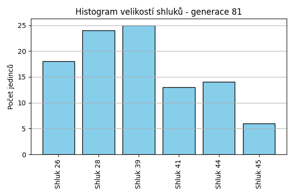
Stabilita mezi generací 80 → 81:
Shluk 28 → 28: 17 jedinců (81.0 %)
Shluk 28 → 41: 3 jedinců (14.3 %)
Shluk 28 → 44: 1 jedinců (4.8 %)
Shluk 41 → 41: 8 jedinců (47.1 %)
Shluk 41 → 39: 6 jedinců (35.3 %)
Shluk 41 → 44: 1 jedinců (5.9 %)
Shluk 41 → 26: 2 jedinců (11.8 %)
Shluk 44 → 44: 10 jedinců (83.3 %)
Shluk 44 → 26: 2 jedinců (16.7 %)
Shluk 26 → 26: 13 jedinců (76.5 %)
Shluk 26 → 39: 2 jedinců (11.8 %)
Shluk 26 → 44: 1 jedinců (5.9 %)
Shluk 26 → 41: 1 jedinců (5.9 %)
Shluk 39 → 28: 7 jedinců (25.9 %)
Shluk 39 → 39: 17 jedinců (63.0 %)
Shluk 39 → 44: 1 jedinců (3.7 %)
Shluk 39 → 26: 1 jedinců (3.7 %)
Shluk 39 → 41: 1 jedinců (3.7 %)
Shluk 45 → 45: 6 jedinců (100.0 %)
Jaccardovo mapování a overlap: Generace 80 → 81
- Cluster 28 → 28 (Jaccard: 0.61, Overlap: 0.81)
- Cluster 41 → 41 (Jaccard: 0.36, Overlap: 0.62)
- Cluster 44 → 44 (Jaccard: 0.62, Overlap: 0.83)
- Cluster 26 → 26 (Jaccard: 0.59, Overlap: 0.76)
- Cluster 39 → 39 (Jaccard: 0.49, Overlap: 0.68)
- Cluster 45 → 45 (Jaccard: 1.00, Overlap: 1.00)
Posun centroidů mezi generací 80 → 81:
- Shluk 0: 151.6836
- Shluk 1: 158.7387
- Shluk 2: 179.0623
- Shluk 3: 380.9361
- Shluk 4: 107.0642
- Shluk 5: 95.0070
Generace 82
Stabilita mezi generací 81 → 82:
Shluk 28 → 28: 23 jedinců (95.8 %)
Shluk 28 → 44: 1 jedinců (4.2 %)
Shluk 41 → 41: 13 jedinců (100.0 %)
Shluk 44 → 44: 14 jedinců (100.0 %)
Shluk 26 → 26: 18 jedinců (100.0 %)
Shluk 39 → 39: 25 jedinců (100.0 %)
Shluk 45 → 45: 6 jedinců (100.0 %)
Jaccardovo mapování a overlap: Generace 81 → 82
- Cluster 28 → 28 (Jaccard: 0.96, Overlap: 1.00)
- Cluster 41 → 41 (Jaccard: 1.00, Overlap: 1.00)
- Cluster 44 → 44 (Jaccard: 0.93, Overlap: 1.00)
- Cluster 26 → 26 (Jaccard: 1.00, Overlap: 1.00)
- Cluster 39 → 39 (Jaccard: 1.00, Overlap: 1.00)
- Cluster 45 → 45 (Jaccard: 1.00, Overlap: 1.00)
Posun centroidů mezi generací 81 → 82:
- Shluk 0: 0.0000
- Shluk 1: 23.7212
- Shluk 2: 0.0000
- Shluk 3: 0.0000
- Shluk 4: 27.3108
- Shluk 5: 0.0000
Generace 83
Stabilita mezi generací 82 → 83:
Shluk 28 → 28: 23 jedinců (100.0 %)
Shluk 41 → 28: 1 jedinců (7.7 %)
Shluk 41 → 41: 11 jedinců (84.6 %)
Shluk 41 → 39: 1 jedinců (7.7 %)
Shluk 44 → 44: 9 jedinců (60.0 %)
Shluk 44 → 45: 1 jedinců (6.7 %)
Shluk 44 → 39: 5 jedinců (33.3 %)
Shluk 26 → 26: 15 jedinců (83.3 %)
Shluk 26 → 39: 3 jedinců (16.7 %)
Shluk 39 → 39: 22 jedinců (88.0 %)
Shluk 39 → 26: 1 jedinců (4.0 %)
Shluk 39 → 44: 2 jedinců (8.0 %)
Shluk 45 → 45: 6 jedinců (100.0 %)
Jaccardovo mapování a overlap: Generace 82 → 83
- Cluster 28 → 28 (Jaccard: 0.96, Overlap: 1.00)
- Cluster 41 → 41 (Jaccard: 0.85, Overlap: 1.00)
- Cluster 44 → 44 (Jaccard: 0.53, Overlap: 0.82)
- Cluster 26 → 26 (Jaccard: 0.79, Overlap: 0.94)
- Cluster 39 → 39 (Jaccard: 0.65, Overlap: 0.88)
- Cluster 45 → 45 (Jaccard: 0.86, Overlap: 1.00)
Posun centroidů mezi generací 82 → 83:
- Shluk 0: 99.6332
- Shluk 1: 21.4543
- Shluk 2: 156.9025
- Shluk 3: 61.5039
- Shluk 4: 187.2301
- Shluk 5: 57.6983
Generace 84
Stabilita mezi generací 83 → 84:
Shluk 28 → 28: 24 jedinců (100.0 %)
Shluk 44 → 26: 1 jedinců (9.1 %)
Shluk 44 → 45: 3 jedinců (27.3 %)
Shluk 44 → 39: 6 jedinců (54.5 %)
Shluk 44 → 46: 1 jedinců (9.1 %)
Shluk 26 → 26: 14 jedinců (87.5 %)
Shluk 26 → 46: 2 jedinců (12.5 %)
Shluk 41 → 41: 9 jedinců (81.8 %)
Shluk 41 → 28: 1 jedinců (9.1 %)
Shluk 41 → 26: 1 jedinců (9.1 %)
Shluk 39 → 39: 17 jedinců (54.8 %)
Shluk 39 → 46: 12 jedinců (38.7 %)
Shluk 39 → 41: 2 jedinců (6.5 %)
Shluk 45 → 45: 7 jedinců (100.0 %)
Jaccardovo mapování a overlap: Generace 83 → 84
- Cluster 28 → 28 (Jaccard: 0.96, Overlap: 1.00)
- Cluster 44 → 39 (Jaccard: 0.21, Overlap: 0.55)
- Cluster 26 → 26 (Jaccard: 0.78, Overlap: 0.88)
- Cluster 41 → 41 (Jaccard: 0.69, Overlap: 0.82)
- Cluster 39 → 39 (Jaccard: 0.46, Overlap: 0.74)
- Cluster 45 → 45 (Jaccard: 0.70, Overlap: 1.00)
Posun centroidů mezi generací 83 → 84:
- Shluk 0: 92.6348
- Shluk 1: 27.0807
- Shluk 2: 230.6771
- Shluk 3: 201.8198
- Shluk 4: 628.9372
- Shluk 5: 780.8160
Generace 85
Stabilita mezi generací 84 → 85:
Shluk 28 → 28: 23 jedinců (92.0 %)
Shluk 28 → 39: 2 jedinců (8.0 %)
Shluk 26 → 26: 13 jedinců (81.2 %)
Shluk 26 → 41: 3 jedinců (18.8 %)
Shluk 41 → 41: 7 jedinců (63.6 %)
Shluk 41 → 39: 1 jedinců (9.1 %)
Shluk 41 → 28: 2 jedinců (18.2 %)
Shluk 41 → 46: 1 jedinců (9.1 %)
Shluk 45 → 45: 9 jedinců (90.0 %)
Shluk 45 → 46: 1 jedinců (10.0 %)
Shluk 39 → 39: 17 jedinců (73.9 %)
Shluk 39 → 46: 6 jedinců (26.1 %)
Shluk 46 → 46: 14 jedinců (93.3 %)
Shluk 46 → 28: 1 jedinců (6.7 %)
Jaccardovo mapování a overlap: Generace 84 → 85
- Cluster 28 → 28 (Jaccard: 0.82, Overlap: 0.92)
- Cluster 26 → 26 (Jaccard: 0.81, Overlap: 1.00)
- Cluster 41 → 41 (Jaccard: 0.50, Overlap: 0.70)
- Cluster 45 → 45 (Jaccard: 0.90, Overlap: 1.00)
- Cluster 39 → 39 (Jaccard: 0.65, Overlap: 0.85)
- Cluster 46 → 46 (Jaccard: 0.61, Overlap: 0.93)
Posun centroidů mezi generací 84 → 85:
- Shluk 0: 140.1883
- Shluk 1: 62.1193
- Shluk 2: 95.1545
- Shluk 3: 247.0661
- Shluk 4: 98.6459
- Shluk 5: 95.4678
Generace 86
Stabilita mezi generací 85 → 86:
Shluk 28 → 28: 21 jedinců (80.8 %)
Shluk 28 → 39: 2 jedinců (7.7 %)
Shluk 28 → 46: 3 jedinců (11.5 %)
Shluk 26 → 26: 11 jedinců (84.6 %)
Shluk 26 → 41: 2 jedinců (15.4 %)
Shluk 41 → 41: 10 jedinců (100.0 %)
Shluk 45 → 45: 9 jedinců (100.0 %)
Shluk 39 → 39: 19 jedinců (95.0 %)
Shluk 39 → 28: 1 jedinců (5.0 %)
Shluk 46 → 46: 18 jedinců (81.8 %)
Shluk 46 → 26: 2 jedinců (9.1 %)
Shluk 46 → 39: 1 jedinců (4.5 %)
Shluk 46 → 41: 1 jedinců (4.5 %)
Jaccardovo mapování a overlap: Generace 85 → 86
- Cluster 28 → 28 (Jaccard: 0.78, Overlap: 0.95)
- Cluster 26 → 26 (Jaccard: 0.73, Overlap: 0.85)
- Cluster 41 → 41 (Jaccard: 0.77, Overlap: 1.00)
- Cluster 45 → 45 (Jaccard: 1.00, Overlap: 1.00)
- Cluster 39 → 39 (Jaccard: 0.83, Overlap: 0.95)
- Cluster 46 → 46 (Jaccard: 0.72, Overlap: 0.86)
Posun centroidů mezi generací 85 → 86:
- Shluk 0: 143.5233
- Shluk 1: 66.6803
- Shluk 2: 67.9294
- Shluk 3: 72.1163
- Shluk 4: 0.0000
- Shluk 5: 100.1533
Generace 87
Stabilita mezi generací 86 → 87:
Shluk 28 → 28: 22 jedinců (100.0 %)
Shluk 26 → 26: 12 jedinců (92.3 %)
Shluk 26 → 46: 1 jedinců (7.7 %)
Shluk 41 → 39: 3 jedinců (23.1 %)
Shluk 41 → 41: 6 jedinců (46.2 %)
Shluk 41 → 26: 3 jedinců (23.1 %)
Shluk 41 → 46: 1 jedinců (7.7 %)
Shluk 45 → 45: 8 jedinců (88.9 %)
Shluk 45 → 39: 1 jedinců (11.1 %)
Shluk 39 → 28: 1 jedinců (4.5 %)
Shluk 39 → 39: 21 jedinců (95.5 %)
Shluk 46 → 46: 20 jedinců (95.2 %)
Shluk 46 → 39: 1 jedinců (4.8 %)
Jaccardovo mapování a overlap: Generace 86 → 87
- Cluster 28 → 28 (Jaccard: 0.96, Overlap: 1.00)
- Cluster 26 → 26 (Jaccard: 0.75, Overlap: 0.92)
- Cluster 41 → 41 (Jaccard: 0.46, Overlap: 1.00)
- Cluster 45 → 45 (Jaccard: 0.89, Overlap: 1.00)
- Cluster 39 → 39 (Jaccard: 0.78, Overlap: 0.95)
- Cluster 46 → 46 (Jaccard: 0.87, Overlap: 0.95)
Posun centroidů mezi generací 86 → 87:
- Shluk 0: 149.3342
- Shluk 1: 18.8208
- Shluk 2: 28.2149
- Shluk 3: 263.7892
- Shluk 4: 50.0288
- Shluk 5: 60.7151
Generace 88
Stabilita mezi generací 87 → 88:
Shluk 28 → 28: 21 jedinců (91.3 %)
Shluk 28 → 39: 1 jedinců (4.3 %)
Shluk 28 → 26: 1 jedinců (4.3 %)
Shluk 26 → 41: 3 jedinců (20.0 %)
Shluk 26 → 39: 1 jedinců (6.7 %)
Shluk 26 → 26: 11 jedinců (73.3 %)
Shluk 39 → 39: 19 jedinců (73.1 %)
Shluk 39 → 47: 6 jedinců (23.1 %)
Shluk 39 → 41: 1 jedinců (3.8 %)
Shluk 45 → 45: 8 jedinců (100.0 %)
Shluk 41 → 26: 1 jedinců (16.7 %)
Shluk 41 → 41: 2 jedinců (33.3 %)
Shluk 41 → 47: 3 jedinců (50.0 %)
Shluk 46 → 39: 16 jedinců (72.7 %)
Shluk 46 → 47: 5 jedinců (22.7 %)
Shluk 46 → 45: 1 jedinců (4.5 %)
Jaccardovo mapování a overlap: Generace 87 → 88
- Cluster 28 → 28 (Jaccard: 0.91, Overlap: 1.00)
- Cluster 26 → 26 (Jaccard: 0.65, Overlap: 0.85)
- Cluster 39 → 39 (Jaccard: 0.43, Overlap: 0.73)
- Cluster 45 → 45 (Jaccard: 0.89, Overlap: 1.00)
- Cluster 41 → 41 (Jaccard: 0.20, Overlap: 0.33)
- Cluster 46 → 39 (Jaccard: 0.37, Overlap: 0.73)
Posun centroidů mezi generací 87 → 88:
- Shluk 0: 142.4248
- Shluk 1: 18.7665
- Shluk 2: 204.5764
- Shluk 3: 686.5226
- Shluk 4: 108.3919
- Shluk 5: 498.8724
Generace 89

Stabilita mezi generací 88 → 89:
Shluk 28 → 28: 19 jedinců (90.5 %)
Shluk 28 → 39: 1 jedinců (4.8 %)
Shluk 28 → 48: 1 jedinců (4.8 %)
Shluk 41 → 48: 1 jedinců (16.7 %)
Shluk 41 → 26: 4 jedinců (66.7 %)
Shluk 41 → 28: 1 jedinců (16.7 %)
Shluk 39 → 39: 28 jedinců (75.7 %)
Shluk 39 → 48: 9 jedinců (24.3 %)
Shluk 45 → 45: 8 jedinců (88.9 %)
Shluk 45 → 39: 1 jedinců (11.1 %)
Shluk 47 → 47: 11 jedinců (78.6 %)
Shluk 47 → 28: 3 jedinců (21.4 %)
Shluk 26 → 26: 12 jedinců (92.3 %)
Shluk 26 → 48: 1 jedinců (7.7 %)
Jaccardovo mapování a overlap: Generace 88 → 89
- Cluster 28 → 28 (Jaccard: 0.76, Overlap: 0.90)
- Cluster 41 → 26 (Jaccard: 0.22, Overlap: 0.67)
- Cluster 39 → 39 (Jaccard: 0.72, Overlap: 0.93)
- Cluster 45 → 45 (Jaccard: 0.89, Overlap: 1.00)
- Cluster 47 → 47 (Jaccard: 0.79, Overlap: 1.00)
- Cluster 26 → 26 (Jaccard: 0.71, Overlap: 0.92)
Posun centroidů mezi generací 88 → 89:
- Shluk 0: 173.3723
- Shluk 1: 115.9488
- Shluk 2: 127.0225
- Shluk 3: 1186.6443
- Shluk 4: 733.0574
- Shluk 5: 770.8083
Generace 90
Stabilita mezi generací 89 → 90:
Shluk 28 → 28: 19 jedinců (82.6 %)
Shluk 28 → 26: 1 jedinců (4.3 %)
Shluk 28 → 47: 3 jedinců (13.0 %)
Shluk 39 → 39: 26 jedinců (86.7 %)
Shluk 39 → 48: 3 jedinců (10.0 %)
Shluk 39 → 47: 1 jedinců (3.3 %)
Shluk 48 → 26: 3 jedinců (25.0 %)
Shluk 48 → 48: 7 jedinců (58.3 %)
Shluk 48 → 28: 1 jedinců (8.3 %)
Shluk 48 → 39: 1 jedinců (8.3 %)
Shluk 45 → 48: 2 jedinců (25.0 %)
Shluk 45 → 45: 6 jedinců (75.0 %)
Shluk 47 → 47: 10 jedinců (90.9 %)
Shluk 47 → 26: 1 jedinců (9.1 %)
Shluk 26 → 26: 16 jedinců (100.0 %)
Jaccardovo mapování a overlap: Generace 89 → 90
- Cluster 28 → 28 (Jaccard: 0.79, Overlap: 0.95)
- Cluster 39 → 39 (Jaccard: 0.84, Overlap: 0.96)
- Cluster 48 → 48 (Jaccard: 0.41, Overlap: 0.58)
- Cluster 45 → 45 (Jaccard: 0.75, Overlap: 1.00)
- Cluster 47 → 47 (Jaccard: 0.67, Overlap: 0.91)
- Cluster 26 → 26 (Jaccard: 0.76, Overlap: 1.00)
Posun centroidů mezi generací 89 → 90:
- Shluk 0: 110.4691
- Shluk 1: 105.7171
- Shluk 2: 59.4591
- Shluk 3: 181.1008
- Shluk 4: 154.8094
- Shluk 5: 258.2022
Generace 91

Stabilita mezi generací 90 → 91:
Shluk 28 → 28: 20 jedinců (100.0 %)
Shluk 39 → 28: 1 jedinců (3.7 %)
Shluk 39 → 39: 26 jedinců (96.3 %)
Shluk 26 → 49: 7 jedinců (33.3 %)
Shluk 26 → 26: 13 jedinců (61.9 %)
Shluk 26 → 28: 1 jedinců (4.8 %)
Shluk 48 → 45: 1 jedinců (8.3 %)
Shluk 48 → 39: 9 jedinců (75.0 %)
Shluk 48 → 47: 1 jedinců (8.3 %)
Shluk 48 → 49: 1 jedinců (8.3 %)
Shluk 47 → 47: 13 jedinců (92.9 %)
Shluk 47 → 39: 1 jedinců (7.1 %)
Shluk 45 → 47: 1 jedinců (16.7 %)
Shluk 45 → 45: 5 jedinců (83.3 %)
Jaccardovo mapování a overlap: Generace 90 → 91
- Cluster 28 → 28 (Jaccard: 0.91, Overlap: 1.00)
- Cluster 39 → 39 (Jaccard: 0.70, Overlap: 0.96)
- Cluster 26 → 26 (Jaccard: 0.62, Overlap: 1.00)
- Cluster 48 → 39 (Jaccard: 0.23, Overlap: 0.75)
- Cluster 47 → 47 (Jaccard: 0.81, Overlap: 0.93)
- Cluster 45 → 45 (Jaccard: 0.71, Overlap: 0.83)
Posun centroidů mezi generací 90 → 91:
- Shluk 0: 199.9533
- Shluk 1: 17.2965
- Shluk 2: 120.5320
- Shluk 3: 172.8117
- Shluk 4: 73.4222
- Shluk 5: 1024.0661
Generace 92
Stabilita mezi generací 91 → 92:
Shluk 28 → 28: 20 jedinců (90.9 %)
Shluk 28 → 39: 1 jedinců (4.5 %)
Shluk 28 → 26: 1 jedinců (4.5 %)
Shluk 49 → 47: 2 jedinců (25.0 %)
Shluk 49 → 28: 3 jedinců (37.5 %)
Shluk 49 → 26: 3 jedinců (37.5 %)
Shluk 39 → 50: 15 jedinců (41.7 %)
Shluk 39 → 39: 21 jedinců (58.3 %)
Shluk 45 → 50: 1 jedinců (16.7 %)
Shluk 45 → 45: 5 jedinců (83.3 %)
Shluk 47 → 47: 11 jedinců (73.3 %)
Shluk 47 → 28: 4 jedinců (26.7 %)
Shluk 26 → 26: 13 jedinců (100.0 %)
Jaccardovo mapování a overlap: Generace 91 → 92
- Cluster 28 → 28 (Jaccard: 0.69, Overlap: 0.91)
- Cluster 49 → 26 (Jaccard: 0.14, Overlap: 0.38)
- Cluster 39 → 39 (Jaccard: 0.57, Overlap: 0.95)
- Cluster 45 → 45 (Jaccard: 0.83, Overlap: 1.00)
- Cluster 47 → 47 (Jaccard: 0.65, Overlap: 0.85)
- Cluster 26 → 26 (Jaccard: 0.76, Overlap: 1.00)
Posun centroidů mezi generací 91 → 92:
- Shluk 0: 116.3845
- Shluk 1: 148.2950
- Shluk 2: 176.3389
- Shluk 3: 133.4456
- Shluk 4: 207.0425
- Shluk 5: 946.3242
Generace 93
Stabilita mezi generací 92 → 93:
Shluk 28 → 28: 22 jedinců (81.5 %)
Shluk 28 → 51: 3 jedinců (11.1 %)
Shluk 28 → 50: 2 jedinců (7.4 %)
Shluk 39 → 39: 19 jedinců (86.4 %)
Shluk 39 → 50: 3 jedinců (13.6 %)
Shluk 47 → 47: 10 jedinců (76.9 %)
Shluk 47 → 39: 2 jedinců (15.4 %)
Shluk 47 → 50: 1 jedinců (7.7 %)
Shluk 50 → 50: 16 jedinců (100.0 %)
Shluk 26 → 26: 13 jedinců (76.5 %)
Shluk 26 → 51: 4 jedinců (23.5 %)
Shluk 45 → 50: 4 jedinců (80.0 %)
Shluk 45 → 47: 1 jedinců (20.0 %)
Jaccardovo mapování a overlap: Generace 92 → 93
- Cluster 28 → 28 (Jaccard: 0.81, Overlap: 1.00)
- Cluster 39 → 39 (Jaccard: 0.79, Overlap: 0.90)
- Cluster 47 → 47 (Jaccard: 0.71, Overlap: 0.91)
- Cluster 50 → 50 (Jaccard: 0.62, Overlap: 1.00)
- Cluster 26 → 26 (Jaccard: 0.76, Overlap: 1.00)
- Cluster 45 → 50 (Jaccard: 0.15, Overlap: 0.80)
Posun centroidů mezi generací 92 → 93:
- Shluk 0: 131.2985
- Shluk 1: 81.6165
- Shluk 2: 83.2457
- Shluk 3: 708.8662
- Shluk 4: 584.5862
- Shluk 5: 952.9906
Generace 94
Stabilita mezi generací 93 → 94:
Shluk 28 → 28: 22 jedinců (100.0 %)
Shluk 39 → 39: 18 jedinců (85.7 %)
Shluk 39 → 47: 2 jedinců (9.5 %)
Shluk 39 → 52: 1 jedinců (4.8 %)
Shluk 47 → 52: 1 jedinců (9.1 %)
Shluk 47 → 47: 10 jedinců (90.9 %)
Shluk 50 → 39: 15 jedinců (57.7 %)
Shluk 50 → 52: 6 jedinců (23.1 %)
Shluk 50 → 47: 5 jedinců (19.2 %)
Shluk 26 → 26: 12 jedinců (92.3 %)
Shluk 26 → 28: 1 jedinců (7.7 %)
Shluk 51 → 51: 7 jedinců (100.0 %)
Jaccardovo mapování a overlap: Generace 93 → 94
- Cluster 28 → 28 (Jaccard: 0.96, Overlap: 1.00)
- Cluster 39 → 39 (Jaccard: 0.50, Overlap: 0.86)
- Cluster 47 → 47 (Jaccard: 0.56, Overlap: 0.91)
- Cluster 50 → 39 (Jaccard: 0.34, Overlap: 0.58)
- Cluster 26 → 26 (Jaccard: 0.92, Overlap: 1.00)
- Cluster 51 → 51 (Jaccard: 1.00, Overlap: 1.00)
Posun centroidů mezi generací 93 → 94:
- Shluk 0: 27.2822
- Shluk 1: 26.8658
- Shluk 2: 224.9560
- Shluk 3: 216.0628
- Shluk 4: 929.1181
- Shluk 5: 1117.1135
Generace 95
Stabilita mezi generací 94 → 95:
Shluk 28 → 28: 23 jedinců (100.0 %)
Shluk 39 → 39: 31 jedinců (93.9 %)
Shluk 39 → 28: 2 jedinců (6.1 %)
Shluk 52 → 47: 1 jedinců (12.5 %)
Shluk 52 → 53: 1 jedinců (12.5 %)
Shluk 52 → 39: 6 jedinců (75.0 %)
Shluk 47 → 26: 1 jedinců (5.9 %)
Shluk 47 → 47: 10 jedinců (58.8 %)
Shluk 47 → 53: 5 jedinců (29.4 %)
Shluk 47 → 39: 1 jedinců (5.9 %)
Shluk 26 → 47: 2 jedinců (16.7 %)
Shluk 26 → 26: 8 jedinců (66.7 %)
Shluk 26 → 39: 2 jedinců (16.7 %)
Shluk 51 → 51: 7 jedinců (100.0 %)
Jaccardovo mapování a overlap: Generace 94 → 95
- Cluster 28 → 28 (Jaccard: 0.92, Overlap: 1.00)
- Cluster 39 → 39 (Jaccard: 0.74, Overlap: 0.94)
- Cluster 52 → 39 (Jaccard: 0.14, Overlap: 0.75)
- Cluster 47 → 47 (Jaccard: 0.50, Overlap: 0.77)
- Cluster 26 → 26 (Jaccard: 0.62, Overlap: 0.89)
- Cluster 51 → 51 (Jaccard: 1.00, Overlap: 1.00)
Posun centroidů mezi generací 94 → 95:
- Shluk 0: 201.1046
- Shluk 1: 30.7064
- Shluk 2: 98.7505
- Shluk 3: 278.3478
- Shluk 4: 0.0000
- Shluk 5: 799.4908
Generace 96
Stabilita mezi generací 95 → 96:
Shluk 28 → 28: 20 jedinců (80.0 %)
Shluk 28 → 54: 5 jedinců (20.0 %)
Shluk 39 → 28: 1 jedinců (2.5 %)
Shluk 39 → 39: 39 jedinců (97.5 %)
Shluk 47 → 47: 11 jedinců (84.6 %)
Shluk 47 → 26: 2 jedinců (15.4 %)
Shluk 53 → 53: 5 jedinců (83.3 %)
Shluk 53 → 47: 1 jedinců (16.7 %)
Shluk 26 → 26: 9 jedinců (100.0 %)
Shluk 51 → 28: 1 jedinců (14.3 %)
Shluk 51 → 26: 6 jedinců (85.7 %)
Jaccardovo mapování a overlap: Generace 95 → 96
- Cluster 28 → 28 (Jaccard: 0.74, Overlap: 0.91)
- Cluster 39 → 39 (Jaccard: 0.97, Overlap: 1.00)
- Cluster 47 → 47 (Jaccard: 0.79, Overlap: 0.92)
- Cluster 53 → 53 (Jaccard: 0.83, Overlap: 1.00)
- Cluster 26 → 26 (Jaccard: 0.53, Overlap: 1.00)
- Cluster 51 → 26 (Jaccard: 0.33, Overlap: 0.86)
Posun centroidů mezi generací 95 → 96:
- Shluk 0: 294.1924
- Shluk 1: 169.9987
- Shluk 2: 21.5582
- Shluk 3: 136.6147
- Shluk 4: 1144.5948
- Shluk 5: 1021.8868
Generace 97
Stabilita mezi generací 96 → 97:
Shluk 28 → 28: 21 jedinců (95.5 %)
Shluk 28 → 39: 1 jedinců (4.5 %)
Shluk 47 → 55: 2 jedinců (16.7 %)
Shluk 47 → 47: 9 jedinců (75.0 %)
Shluk 47 → 39: 1 jedinců (8.3 %)
Shluk 39 → 39: 33 jedinců (84.6 %)
Shluk 39 → 55: 5 jedinců (12.8 %)
Shluk 39 → 54: 1 jedinců (2.6 %)
Shluk 53 → 55: 1 jedinců (20.0 %)
Shluk 53 → 39: 4 jedinců (80.0 %)
Shluk 26 → 26: 16 jedinců (94.1 %)
Shluk 26 → 55: 1 jedinců (5.9 %)
Shluk 54 → 54: 5 jedinců (100.0 %)
Jaccardovo mapování a overlap: Generace 96 → 97
- Cluster 28 → 28 (Jaccard: 0.95, Overlap: 1.00)
- Cluster 47 → 47 (Jaccard: 0.75, Overlap: 1.00)
- Cluster 39 → 39 (Jaccard: 0.73, Overlap: 0.85)
- Cluster 53 → 39 (Jaccard: 0.10, Overlap: 0.80)
- Cluster 26 → 26 (Jaccard: 0.94, Overlap: 1.00)
- Cluster 54 → 54 (Jaccard: 0.83, Overlap: 1.00)
Posun centroidů mezi generací 96 → 97:
- Shluk 0: 43.2580
- Shluk 1: 24.7283
- Shluk 2: 119.8684
- Shluk 3: 95.3551
- Shluk 4: 1070.4649
- Shluk 5: 1121.9942
Generace 98
Stabilita mezi generací 97 → 98:
Shluk 28 → 28: 18 jedinců (85.7 %)
Shluk 28 → 54: 1 jedinců (4.8 %)
Shluk 28 → 55: 1 jedinců (4.8 %)
Shluk 28 → 39: 1 jedinců (4.8 %)
Shluk 39 → 39: 37 jedinců (94.9 %)
Shluk 39 → 26: 2 jedinců (5.1 %)
Shluk 55 → 47: 2 jedinců (22.2 %)
Shluk 55 → 55: 6 jedinců (66.7 %)
Shluk 55 → 26: 1 jedinců (11.1 %)
Shluk 26 → 26: 15 jedinců (93.8 %)
Shluk 26 → 28: 1 jedinců (6.2 %)
Shluk 47 → 47: 9 jedinců (100.0 %)
Shluk 54 → 54: 6 jedinců (100.0 %)
Jaccardovo mapování a overlap: Generace 97 → 98
- Cluster 28 → 28 (Jaccard: 0.82, Overlap: 0.95)
- Cluster 39 → 39 (Jaccard: 0.93, Overlap: 0.97)
- Cluster 55 → 55 (Jaccard: 0.60, Overlap: 0.86)
- Cluster 26 → 26 (Jaccard: 0.79, Overlap: 0.94)
- Cluster 47 → 47 (Jaccard: 0.82, Overlap: 1.00)
- Cluster 54 → 54 (Jaccard: 0.86, Overlap: 1.00)
Posun centroidů mezi generací 97 → 98:
- Shluk 0: 106.1080
- Shluk 1: 47.5390
- Shluk 2: 28.2566
- Shluk 3: 109.7414
- Shluk 4: 40.9995
- Shluk 5: 205.5033
Generace 99
Stabilita mezi generací 98 → 99:
Shluk 28 → 28: 16 jedinců (84.2 %)
Shluk 28 → 39: 2 jedinců (10.5 %)
Shluk 28 → 26: 1 jedinců (5.3 %)
Shluk 39 → 39: 31 jedinců (81.6 %)
Shluk 39 → 56: 5 jedinců (13.2 %)
Shluk 39 → 28: 2 jedinců (5.3 %)
Shluk 47 → 26: 1 jedinců (9.1 %)
Shluk 47 → 47: 9 jedinců (81.8 %)
Shluk 47 → 28: 1 jedinců (9.1 %)
Shluk 55 → 56: 1 jedinců (14.3 %)
Shluk 55 → 39: 5 jedinců (71.4 %)
Shluk 55 → 28: 1 jedinců (14.3 %)
Shluk 26 → 26: 17 jedinců (94.4 %)
Shluk 26 → 47: 1 jedinců (5.6 %)
Shluk 54 → 54: 7 jedinců (100.0 %)
Jaccardovo mapování a overlap: Generace 98 → 99
- Cluster 28 → 28 (Jaccard: 0.70, Overlap: 0.84)
- Cluster 39 → 39 (Jaccard: 0.69, Overlap: 0.82)
- Cluster 47 → 47 (Jaccard: 0.75, Overlap: 0.90)
- Cluster 55 → 39 (Jaccard: 0.12, Overlap: 0.71)
- Cluster 26 → 26 (Jaccard: 0.85, Overlap: 0.94)
- Cluster 54 → 54 (Jaccard: 1.00, Overlap: 1.00)
Posun centroidů mezi generací 98 → 99:
- Shluk 0: 53.4022
- Shluk 1: 109.5388
- Shluk 2: 120.6396
- Shluk 3: 146.1271
- Shluk 4: 0.0000
- Shluk 5: 773.5309
Generace 100
Stabilita mezi generací 99 → 100:
Shluk 28 → 28: 16 jedinců (80.0 %)
Shluk 28 → 39: 4 jedinců (20.0 %)
Shluk 39 → 39: 38 jedinců (100.0 %)
Shluk 26 → 26: 14 jedinců (73.7 %)
Shluk 26 → 57: 5 jedinců (26.3 %)
Shluk 56 → 56: 6 jedinců (100.0 %)
Shluk 47 → 26: 1 jedinců (10.0 %)
Shluk 47 → 54: 5 jedinců (50.0 %)
Shluk 47 → 39: 4 jedinců (40.0 %)
Shluk 54 → 54: 7 jedinců (100.0 %)
Jaccardovo mapování a overlap: Generace 99 → 100
- Cluster 28 → 28 (Jaccard: 0.80, Overlap: 1.00)
- Cluster 39 → 39 (Jaccard: 0.83, Overlap: 1.00)
- Cluster 26 → 26 (Jaccard: 0.70, Overlap: 0.93)
- Cluster 56 → 56 (Jaccard: 1.00, Overlap: 1.00)
- Cluster 47 → 54 (Jaccard: 0.29, Overlap: 0.50)
- Cluster 54 → 54 (Jaccard: 0.58, Overlap: 1.00)
Posun centroidů mezi generací 99 → 100:
- Shluk 0: 180.9551
- Shluk 1: 61.8573
- Shluk 2: 46.8583
- Shluk 3: 463.9101
- Shluk 4: 1043.5003
- Shluk 5: 1129.9376
Generace 101
Stabilita mezi generací 100 → 101:
Shluk 28 → 28: 15 jedinců (93.8 %)
Shluk 28 → 39: 1 jedinců (6.2 %)
Shluk 39 → 58: 16 jedinců (34.8 %)
Shluk 39 → 39: 30 jedinců (65.2 %)
Shluk 26 → 26: 14 jedinců (93.3 %)
Shluk 26 → 56: 1 jedinců (6.7 %)
Shluk 56 → 56: 5 jedinců (83.3 %)
Shluk 56 → 39: 1 jedinců (16.7 %)
Shluk 54 → 26: 1 jedinců (8.3 %)
Shluk 54 → 54: 11 jedinců (91.7 %)
Shluk 57 → 28: 2 jedinců (40.0 %)
Shluk 57 → 26: 3 jedinců (60.0 %)
Jaccardovo mapování a overlap: Generace 100 → 101
- Cluster 28 → 28 (Jaccard: 0.83, Overlap: 0.94)
- Cluster 39 → 39 (Jaccard: 0.62, Overlap: 0.94)
- Cluster 26 → 26 (Jaccard: 0.74, Overlap: 0.93)
- Cluster 56 → 56 (Jaccard: 0.71, Overlap: 0.83)
- Cluster 54 → 54 (Jaccard: 0.92, Overlap: 1.00)
- Cluster 57 → 26 (Jaccard: 0.15, Overlap: 0.60)
Posun centroidů mezi generací 100 → 101:
- Shluk 0: 117.0417
- Shluk 1: 83.5809
- Shluk 2: 171.7287
- Shluk 3: 58.0377
- Shluk 4: 83.6961
- Shluk 5: 1052.1964
Generace 102
Stabilita mezi generací 101 → 102:
Shluk 28 → 28: 17 jedinců (100.0 %)
Shluk 58 → 39: 13 jedinců (81.2 %)
Shluk 58 → 59: 3 jedinců (18.8 %)
Shluk 26 → 26: 17 jedinců (94.4 %)
Shluk 26 → 28: 1 jedinců (5.6 %)
Shluk 39 → 39: 28 jedinců (87.5 %)
Shluk 39 → 28: 2 jedinců (6.2 %)
Shluk 39 → 56: 1 jedinců (3.1 %)
Shluk 39 → 59: 1 jedinců (3.1 %)
Shluk 56 → 56: 6 jedinců (100.0 %)
Shluk 54 → 54: 7 jedinců (63.6 %)
Shluk 54 → 59: 4 jedinců (36.4 %)
Jaccardovo mapování a overlap: Generace 101 → 102
- Cluster 28 → 28 (Jaccard: 0.85, Overlap: 1.00)
- Cluster 58 → 39 (Jaccard: 0.30, Overlap: 0.81)
- Cluster 26 → 26 (Jaccard: 0.94, Overlap: 1.00)
- Cluster 39 → 39 (Jaccard: 0.62, Overlap: 0.88)
- Cluster 56 → 56 (Jaccard: 0.86, Overlap: 1.00)
- Cluster 54 → 54 (Jaccard: 0.64, Overlap: 1.00)
Posun centroidů mezi generací 101 → 102:
- Shluk 0: 83.9594
- Shluk 1: 102.5975
- Shluk 2: 151.7247
- Shluk 3: 266.0670
- Shluk 4: 77.4602
- Shluk 5: 541.0176
Generace 103
Stabilita mezi generací 102 → 103:
Shluk 28 → 28: 15 jedinců (75.0 %)
Shluk 28 → 39: 1 jedinců (5.0 %)
Shluk 28 → 26: 4 jedinců (20.0 %)
Shluk 39 → 39: 36 jedinců (87.8 %)
Shluk 39 → 26: 2 jedinců (4.9 %)
Shluk 39 → 28: 3 jedinců (7.3 %)
Shluk 26 → 26: 15 jedinců (88.2 %)
Shluk 26 → 59: 2 jedinců (11.8 %)
Shluk 56 → 56: 6 jedinců (85.7 %)
Shluk 56 → 39: 1 jedinců (14.3 %)
Shluk 54 → 54: 7 jedinců (100.0 %)
Shluk 59 → 59: 8 jedinců (100.0 %)
Jaccardovo mapování a overlap: Generace 102 → 103
- Cluster 28 → 28 (Jaccard: 0.65, Overlap: 0.83)
- Cluster 39 → 39 (Jaccard: 0.84, Overlap: 0.95)
- Cluster 26 → 26 (Jaccard: 0.65, Overlap: 0.88)
- Cluster 56 → 56 (Jaccard: 0.86, Overlap: 1.00)
- Cluster 54 → 54 (Jaccard: 1.00, Overlap: 1.00)
- Cluster 59 → 59 (Jaccard: 0.80, Overlap: 1.00)
Posun centroidů mezi generací 102 → 103:
- Shluk 0: 188.5400
- Shluk 1: 195.2584
- Shluk 2: 33.2358
- Shluk 3: 0.0000
- Shluk 4: 77.4602
- Shluk 5: 161.1335
Generace 104
Stabilita mezi generací 103 → 104:
Shluk 28 → 28: 14 jedinců (77.8 %)
Shluk 28 → 60: 1 jedinců (5.6 %)
Shluk 28 → 39: 3 jedinců (16.7 %)
Shluk 39 → 60: 12 jedinců (31.6 %)
Shluk 39 → 39: 26 jedinců (68.4 %)
Shluk 26 → 26: 21 jedinců (100.0 %)
Shluk 56 → 56: 6 jedinců (100.0 %)
Shluk 59 → 26: 2 jedinců (20.0 %)
Shluk 59 → 60: 3 jedinců (30.0 %)
Shluk 59 → 54: 4 jedinců (40.0 %)
Shluk 59 → 39: 1 jedinců (10.0 %)
Shluk 54 → 54: 7 jedinců (100.0 %)
Jaccardovo mapování a overlap: Generace 103 → 104
- Cluster 28 → 28 (Jaccard: 0.78, Overlap: 1.00)
- Cluster 39 → 39 (Jaccard: 0.62, Overlap: 0.87)
- Cluster 26 → 26 (Jaccard: 0.91, Overlap: 1.00)
- Cluster 56 → 56 (Jaccard: 1.00, Overlap: 1.00)
- Cluster 59 → 54 (Jaccard: 0.24, Overlap: 0.40)
- Cluster 54 → 54 (Jaccard: 0.64, Overlap: 1.00)
Posun centroidů mezi generací 103 → 104:
- Shluk 0: 34.5084
- Shluk 1: 63.1978
- Shluk 2: 138.3244
- Shluk 3: 334.9612
- Shluk 4: 0.0000
- Shluk 5: 564.9399
Generace 105
Stabilita mezi generací 104 → 105:
Shluk 28 → 28: 14 jedinců (100.0 %)
Shluk 60 → 60: 15 jedinců (93.8 %)
Shluk 60 → 39: 1 jedinců (6.2 %)
Shluk 26 → 26: 23 jedinců (100.0 %)
Shluk 39 → 39: 30 jedinců (100.0 %)
Shluk 56 → 56: 6 jedinců (100.0 %)
Shluk 54 → 54: 11 jedinců (100.0 %)
Jaccardovo mapování a overlap: Generace 104 → 105
- Cluster 28 → 28 (Jaccard: 1.00, Overlap: 1.00)
- Cluster 60 → 60 (Jaccard: 0.94, Overlap: 1.00)
- Cluster 26 → 26 (Jaccard: 1.00, Overlap: 1.00)
- Cluster 39 → 39 (Jaccard: 0.97, Overlap: 1.00)
- Cluster 56 → 56 (Jaccard: 1.00, Overlap: 1.00)
- Cluster 54 → 54 (Jaccard: 1.00, Overlap: 1.00)
Posun centroidů mezi generací 104 → 105:
- Shluk 0: 0.0000
- Shluk 1: 0.0000
- Shluk 2: 12.0009
- Shluk 3: 0.0000
- Shluk 4: 0.0000
- Shluk 5: 29.8934
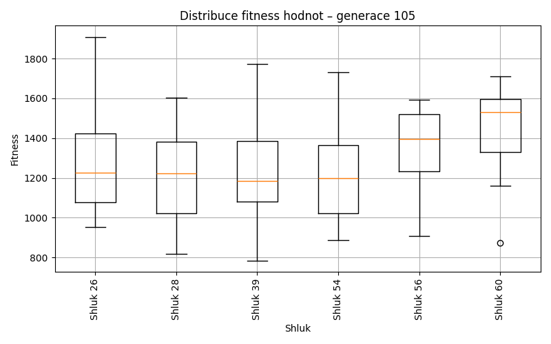
Generace 106
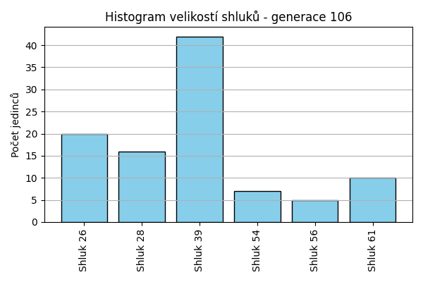
Stabilita mezi generací 105 → 106:
Shluk 28 → 28: 14 jedinců (100.0 %)
Shluk 60 → 39: 10 jedinců (66.7 %)
Shluk 60 → 54: 1 jedinců (6.7 %)
Shluk 60 → 61: 2 jedinců (13.3 %)
Shluk 60 → 56: 2 jedinců (13.3 %)
Shluk 26 → 26: 19 jedinců (82.6 %)
Shluk 26 → 61: 2 jedinců (8.7 %)
Shluk 26 → 28: 2 jedinců (8.7 %)
Shluk 39 → 39: 28 jedinců (90.3 %)
Shluk 39 → 56: 2 jedinců (6.5 %)
Shluk 39 → 61: 1 jedinců (3.2 %)
Shluk 56 → 56: 1 jedinců (16.7 %)
Shluk 56 → 39: 4 jedinců (66.7 %)
Shluk 56 → 26: 1 jedinců (16.7 %)
Shluk 54 → 54: 6 jedinců (54.5 %)
Shluk 54 → 61: 5 jedinců (45.5 %)
Jaccardovo mapování a overlap: Generace 105 → 106
- Cluster 28 → 28 (Jaccard: 0.88, Overlap: 1.00)
- Cluster 60 → 39 (Jaccard: 0.21, Overlap: 0.67)
- Cluster 26 → 26 (Jaccard: 0.79, Overlap: 0.95)
- Cluster 39 → 39 (Jaccard: 0.62, Overlap: 0.90)
- Cluster 56 → 56 (Jaccard: 0.10, Overlap: 0.20)
- Cluster 54 → 54 (Jaccard: 0.50, Overlap: 0.86)
Posun centroidů mezi generací 105 → 106:
- Shluk 0: 91.9922
- Shluk 1: 51.4734
- Shluk 2: 125.7099
- Shluk 3: 342.5619
- Shluk 4: 801.5254
- Shluk 5: 633.1790
Generace 107
Stabilita mezi generací 106 → 107:
Shluk 28 → 28: 15 jedinců (93.8 %)
Shluk 28 → 26: 1 jedinců (6.2 %)
Shluk 39 → 39: 37 jedinců (88.1 %)
Shluk 39 → 56: 4 jedinců (9.5 %)
Shluk 39 → 26: 1 jedinců (2.4 %)
Shluk 26 → 26: 18 jedinců (90.0 %)
Shluk 26 → 61: 1 jedinců (5.0 %)
Shluk 26 → 28: 1 jedinců (5.0 %)
Shluk 56 → 56: 1 jedinců (20.0 %)
Shluk 56 → 39: 3 jedinců (60.0 %)
Shluk 56 → 28: 1 jedinců (20.0 %)
Shluk 61 → 61: 8 jedinců (80.0 %)
Shluk 61 → 28: 1 jedinců (10.0 %)
Shluk 61 → 39: 1 jedinců (10.0 %)
Shluk 54 → 54: 7 jedinců (100.0 %)
Jaccardovo mapování a overlap: Generace 106 → 107
- Cluster 28 → 28 (Jaccard: 0.79, Overlap: 0.94)
- Cluster 39 → 39 (Jaccard: 0.80, Overlap: 0.90)
- Cluster 26 → 26 (Jaccard: 0.82, Overlap: 0.90)
- Cluster 56 → 56 (Jaccard: 0.11, Overlap: 0.20)
- Cluster 61 → 61 (Jaccard: 0.73, Overlap: 0.89)
- Cluster 54 → 54 (Jaccard: 1.00, Overlap: 1.00)
Posun centroidů mezi generací 106 → 107:
- Shluk 0: 61.3015
- Shluk 1: 65.4156
- Shluk 2: 84.3003
- Shluk 3: 0.0000
- Shluk 4: 770.9640
- Shluk 5: 127.3955
Generace 108
Stabilita mezi generací 107 → 108:
Shluk 28 → 28: 18 jedinců (100.0 %)
Shluk 39 → 39: 41 jedinců (100.0 %)
Shluk 26 → 26: 19 jedinců (95.0 %)
Shluk 26 → 28: 1 jedinců (5.0 %)
Shluk 56 → 56: 5 jedinců (100.0 %)
Shluk 61 → 61: 8 jedinců (88.9 %)
Shluk 61 → 39: 1 jedinců (11.1 %)
Shluk 54 → 28: 1 jedinců (14.3 %)
Shluk 54 → 54: 6 jedinců (85.7 %)
Jaccardovo mapování a overlap: Generace 107 → 108
- Cluster 28 → 28 (Jaccard: 0.90, Overlap: 1.00)
- Cluster 39 → 39 (Jaccard: 0.98, Overlap: 1.00)
- Cluster 26 → 26 (Jaccard: 0.95, Overlap: 1.00)
- Cluster 56 → 56 (Jaccard: 1.00, Overlap: 1.00)
- Cluster 61 → 61 (Jaccard: 0.89, Overlap: 1.00)
- Cluster 54 → 54 (Jaccard: 0.86, Overlap: 1.00)
Posun centroidů mezi generací 107 → 108:
- Shluk 0: 66.3873
- Shluk 1: 42.4594
- Shluk 2: 13.4580
- Shluk 3: 39.2244
- Shluk 4: 0.0000
- Shluk 5: 65.7000
Generace 109
Stabilita mezi generací 108 → 109:
Shluk 28 → 28: 19 jedinců (95.0 %)
Shluk 28 → 26: 1 jedinců (5.0 %)
Shluk 39 → 26: 1 jedinců (2.4 %)
Shluk 39 → 39: 40 jedinců (95.2 %)
Shluk 39 → 56: 1 jedinců (2.4 %)
Shluk 26 → 26: 18 jedinců (94.7 %)
Shluk 26 → 39: 1 jedinců (5.3 %)
Shluk 56 → 56: 5 jedinců (100.0 %)
Shluk 61 → 61: 7 jedinců (87.5 %)
Shluk 61 → 26: 1 jedinců (12.5 %)
Shluk 54 → 54: 6 jedinců (100.0 %)
Jaccardovo mapování a overlap: Generace 108 → 109
- Cluster 28 → 28 (Jaccard: 0.95, Overlap: 1.00)
- Cluster 39 → 39 (Jaccard: 0.93, Overlap: 0.98)
- Cluster 26 → 26 (Jaccard: 0.82, Overlap: 0.95)
- Cluster 56 → 56 (Jaccard: 0.83, Overlap: 1.00)
- Cluster 61 → 61 (Jaccard: 0.88, Overlap: 1.00)
- Cluster 54 → 54 (Jaccard: 1.00, Overlap: 1.00)
Posun centroidů mezi generací 108 → 109:
- Shluk 0: 57.9173
- Shluk 1: 47.6860
- Shluk 2: 17.1026
- Shluk 3: 0.0000
- Shluk 4: 89.1698
- Shluk 5: 98.2703
Generace 110
Stabilita mezi generací 109 → 110:
Shluk 28 → 28: 17 jedinců (89.5 %)
Shluk 28 → 39: 2 jedinců (10.5 %)
Shluk 26 → 26: 17 jedinců (81.0 %)
Shluk 26 → 28: 3 jedinců (14.3 %)
Shluk 26 → 61: 1 jedinců (4.8 %)
Shluk 39 → 56: 12 jedinců (29.3 %)
Shluk 39 → 39: 29 jedinců (70.7 %)
Shluk 56 → 56: 6 jedinců (100.0 %)
Shluk 61 → 61: 7 jedinců (100.0 %)
Shluk 54 → 54: 6 jedinců (100.0 %)
Jaccardovo mapování a overlap: Generace 109 → 110
- Cluster 28 → 28 (Jaccard: 0.77, Overlap: 0.89)
- Cluster 26 → 26 (Jaccard: 0.81, Overlap: 1.00)
- Cluster 39 → 39 (Jaccard: 0.67, Overlap: 0.94)
- Cluster 56 → 56 (Jaccard: 0.33, Overlap: 1.00)
- Cluster 61 → 61 (Jaccard: 0.88, Overlap: 1.00)
- Cluster 54 → 54 (Jaccard: 1.00, Overlap: 1.00)
Posun centroidů mezi generací 109 → 110:
- Shluk 0: 115.7414
- Shluk 1: 50.9509
- Shluk 2: 98.9044
- Shluk 3: 0.0000
- Shluk 4: 379.3309
- Shluk 5: 98.2703
Generace 111
Stabilita mezi generací 110 → 111:
Shluk 28 → 28: 20 jedinců (100.0 %)
Shluk 26 → 26: 17 jedinců (100.0 %)
Shluk 56 → 39: 12 jedinců (66.7 %)
Shluk 56 → 56: 6 jedinců (33.3 %)
Shluk 39 → 39: 30 jedinců (96.8 %)
Shluk 39 → 26: 1 jedinců (3.2 %)
Shluk 61 → 61: 8 jedinců (100.0 %)
Shluk 54 → 54: 6 jedinců (100.0 %)
Jaccardovo mapování a overlap: Generace 110 → 111
- Cluster 28 → 28 (Jaccard: 1.00, Overlap: 1.00)
- Cluster 26 → 26 (Jaccard: 0.94, Overlap: 1.00)
- Cluster 56 → 56 (Jaccard: 0.33, Overlap: 1.00)
- Cluster 39 → 39 (Jaccard: 0.70, Overlap: 0.97)
- Cluster 61 → 61 (Jaccard: 1.00, Overlap: 1.00)
- Cluster 54 → 54 (Jaccard: 1.00, Overlap: 1.00)
Posun centroidů mezi generací 110 → 111:
- Shluk 0: 26.6612
- Shluk 1: 19.2626
- Shluk 2: 95.4203
- Shluk 3: 0.0000
- Shluk 4: 379.3309
- Shluk 5: 0.0000
Generace 112
Stabilita mezi generací 111 → 112:
Shluk 28 → 28: 19 jedinců (95.0 %)
Shluk 28 → 39: 1 jedinců (5.0 %)
Shluk 26 → 26: 18 jedinců (100.0 %)
Shluk 39 → 39: 41 jedinců (97.6 %)
Shluk 39 → 28: 1 jedinců (2.4 %)
Shluk 56 → 56: 5 jedinců (83.3 %)
Shluk 56 → 39: 1 jedinců (16.7 %)
Shluk 61 → 61: 7 jedinců (87.5 %)
Shluk 61 → 26: 1 jedinců (12.5 %)
Shluk 54 → 54: 5 jedinců (83.3 %)
Shluk 54 → 28: 1 jedinců (16.7 %)
Jaccardovo mapování a overlap: Generace 111 → 112
- Cluster 28 → 28 (Jaccard: 0.86, Overlap: 0.95)
- Cluster 26 → 26 (Jaccard: 0.95, Overlap: 1.00)
- Cluster 39 → 39 (Jaccard: 0.93, Overlap: 0.98)
- Cluster 56 → 56 (Jaccard: 0.83, Overlap: 1.00)
- Cluster 61 → 61 (Jaccard: 0.88, Overlap: 1.00)
- Cluster 54 → 54 (Jaccard: 0.83, Overlap: 1.00)
Posun centroidů mezi generací 111 → 112:
- Shluk 0: 40.4943
- Shluk 1: 48.1196
- Shluk 2: 13.4950
- Shluk 3: 25.6097
- Shluk 4: 89.1698
- Shluk 5: 98.2703
Generace 113
Stabilita mezi generací 112 → 113:
Shluk 28 → 28: 18 jedinců (85.7 %)
Shluk 28 → 26: 3 jedinců (14.3 %)
Shluk 26 → 26: 16 jedinců (84.2 %)
Shluk 26 → 28: 2 jedinců (10.5 %)
Shluk 26 → 39: 1 jedinců (5.3 %)
Shluk 39 → 39: 27 jedinců (62.8 %)
Shluk 39 → 62: 15 jedinců (34.9 %)
Shluk 39 → 28: 1 jedinců (2.3 %)
Shluk 56 → 56: 5 jedinců (100.0 %)
Shluk 61 → 61: 6 jedinců (85.7 %)
Shluk 61 → 26: 1 jedinců (14.3 %)
Shluk 54 → 61: 5 jedinců (100.0 %)
Jaccardovo mapování a overlap: Generace 112 → 113
- Cluster 28 → 28 (Jaccard: 0.75, Overlap: 0.86)
- Cluster 26 → 26 (Jaccard: 0.70, Overlap: 0.84)
- Cluster 39 → 39 (Jaccard: 0.61, Overlap: 0.96)
- Cluster 56 → 56 (Jaccard: 1.00, Overlap: 1.00)
- Cluster 61 → 61 (Jaccard: 0.50, Overlap: 0.86)
- Cluster 54 → 61 (Jaccard: 0.45, Overlap: 1.00)
Posun centroidů mezi generací 112 → 113:
- Shluk 0: 126.0668
- Shluk 1: 79.6471
- Shluk 2: 153.7060
- Shluk 3: 1096.6147
- Shluk 4: 932.6573
- Shluk 5: 703.3458
Generace 114
Stabilita mezi generací 113 → 114:
Shluk 28 → 28: 20 jedinců (95.2 %)
Shluk 28 → 39: 1 jedinců (4.8 %)
Shluk 26 → 26: 16 jedinců (80.0 %)
Shluk 26 → 28: 2 jedinců (10.0 %)
Shluk 26 → 39: 2 jedinců (10.0 %)
Shluk 39 → 39: 23 jedinců (82.1 %)
Shluk 39 → 56: 4 jedinců (14.3 %)
Shluk 39 → 61: 1 jedinců (3.6 %)
Shluk 56 → 56: 1 jedinců (20.0 %)
Shluk 56 → 39: 4 jedinců (80.0 %)
Shluk 62 → 39: 15 jedinců (100.0 %)
Shluk 61 → 61: 6 jedinců (54.5 %)
Shluk 61 → 63: 5 jedinců (45.5 %)
Jaccardovo mapování a overlap: Generace 113 → 114
- Cluster 28 → 28 (Jaccard: 0.87, Overlap: 0.95)
- Cluster 26 → 26 (Jaccard: 0.80, Overlap: 1.00)
- Cluster 39 → 39 (Jaccard: 0.46, Overlap: 0.82)
- Cluster 56 → 56 (Jaccard: 0.11, Overlap: 0.20)
- Cluster 62 → 39 (Jaccard: 0.33, Overlap: 1.00)
- Cluster 61 → 61 (Jaccard: 0.50, Overlap: 0.86)
Posun centroidů mezi generací 113 → 114:
- Shluk 0: 83.5985
- Shluk 1: 71.5032
- Shluk 2: 178.6128
- Shluk 3: 785.3199
- Shluk 4: 343.5206
- Shluk 5: 1080.1027
Generace 115

Stabilita mezi generací 114 → 115:
Shluk 28 → 28: 19 jedinců (86.4 %)
Shluk 28 → 39: 2 jedinců (9.1 %)
Shluk 28 → 26: 1 jedinců (4.5 %)
Shluk 26 → 26: 12 jedinců (75.0 %)
Shluk 26 → 28: 1 jedinců (6.2 %)
Shluk 26 → 39: 1 jedinců (6.2 %)
Shluk 26 → 64: 2 jedinců (12.5 %)
Shluk 39 → 39: 40 jedinců (88.9 %)
Shluk 39 → 56: 4 jedinců (8.9 %)
Shluk 39 → 28: 1 jedinců (2.2 %)
Shluk 56 → 56: 1 jedinců (20.0 %)
Shluk 56 → 39: 4 jedinců (80.0 %)
Shluk 61 → 26: 1 jedinců (14.3 %)
Shluk 61 → 64: 1 jedinců (14.3 %)
Shluk 61 → 63: 5 jedinců (71.4 %)
Shluk 63 → 63: 5 jedinců (100.0 %)
Jaccardovo mapování a overlap: Generace 114 → 115
- Cluster 28 → 28 (Jaccard: 0.79, Overlap: 0.90)
- Cluster 26 → 26 (Jaccard: 0.67, Overlap: 0.86)
- Cluster 39 → 39 (Jaccard: 0.77, Overlap: 0.89)
- Cluster 56 → 56 (Jaccard: 0.11, Overlap: 0.20)
- Cluster 61 → 63 (Jaccard: 0.42, Overlap: 0.71)
- Cluster 63 → 63 (Jaccard: 0.50, Overlap: 1.00)
Posun centroidů mezi generací 114 → 115:
- Shluk 0: 118.1759
- Shluk 1: 65.9420
- Shluk 2: 89.9515
- Shluk 3: 785.3199
- Shluk 4: 435.9835
- Shluk 5: 1238.9439
Generace 116
Stabilita mezi generací 115 → 116:
Shluk 28 → 28: 20 jedinců (95.2 %)
Shluk 28 → 39: 1 jedinců (4.8 %)
Shluk 26 → 26: 14 jedinců (100.0 %)
Shluk 39 → 56: 5 jedinců (10.6 %)
Shluk 39 → 39: 38 jedinců (80.9 %)
Shluk 39 → 65: 4 jedinců (8.5 %)
Shluk 56 → 65: 1 jedinců (20.0 %)
Shluk 56 → 56: 4 jedinců (80.0 %)
Shluk 63 → 63: 10 jedinců (100.0 %)
Shluk 64 → 26: 3 jedinců (100.0 %)
Jaccardovo mapování a overlap: Generace 115 → 116
- Cluster 28 → 28 (Jaccard: 0.95, Overlap: 1.00)
- Cluster 26 → 26 (Jaccard: 0.82, Overlap: 1.00)
- Cluster 39 → 39 (Jaccard: 0.79, Overlap: 0.97)
- Cluster 56 → 56 (Jaccard: 0.40, Overlap: 0.80)
- Cluster 63 → 63 (Jaccard: 1.00, Overlap: 1.00)
- Cluster 64 → 26 (Jaccard: 0.18, Overlap: 1.00)
Posun centroidů mezi generací 115 → 116:
- Shluk 0: 135.4595
- Shluk 1: 28.9480
- Shluk 2: 73.2336
- Shluk 3: 340.8442
- Shluk 4: 47.9121
- Shluk 5: 796.4492
Generace 117
Stabilita mezi generací 116 → 117:
Shluk 28 → 28: 19 jedinců (95.0 %)
Shluk 28 → 39: 1 jedinců (5.0 %)
Shluk 26 → 26: 13 jedinců (76.5 %)
Shluk 26 → 66: 2 jedinců (11.8 %)
Shluk 26 → 39: 1 jedinců (5.9 %)
Shluk 26 → 28: 1 jedinců (5.9 %)
Shluk 56 → 39: 9 jedinců (100.0 %)
Shluk 39 → 39: 38 jedinců (97.4 %)
Shluk 39 → 26: 1 jedinců (2.6 %)
Shluk 65 → 65: 5 jedinců (100.0 %)
Shluk 63 → 63: 9 jedinců (90.0 %)
Shluk 63 → 39: 1 jedinců (10.0 %)
Jaccardovo mapování a overlap: Generace 116 → 117
- Cluster 28 → 28 (Jaccard: 0.90, Overlap: 0.95)
- Cluster 26 → 26 (Jaccard: 0.72, Overlap: 0.93)
- Cluster 56 → 39 (Jaccard: 0.18, Overlap: 1.00)
- Cluster 39 → 39 (Jaccard: 0.75, Overlap: 0.97)
- Cluster 65 → 65 (Jaccard: 1.00, Overlap: 1.00)
- Cluster 63 → 63 (Jaccard: 0.90, Overlap: 1.00)
Posun centroidů mezi generací 116 → 117:
- Shluk 0: 100.2338
- Shluk 1: 36.5625
- Shluk 2: 89.1773
- Shluk 3: 834.0785
- Shluk 4: 1004.1294
- Shluk 5: 1166.1857
Generace 118
Stabilita mezi generací 117 → 118:
Shluk 28 → 28: 19 jedinců (95.0 %)
Shluk 28 → 26: 1 jedinců (5.0 %)
Shluk 26 → 26: 13 jedinců (92.9 %)
Shluk 26 → 39: 1 jedinců (7.1 %)
Shluk 39 → 39: 45 jedinců (90.0 %)
Shluk 39 → 65: 4 jedinců (8.0 %)
Shluk 39 → 28: 1 jedinců (2.0 %)
Shluk 65 → 65: 1 jedinců (20.0 %)
Shluk 65 → 39: 4 jedinců (80.0 %)
Shluk 66 → 66: 2 jedinců (100.0 %)
Shluk 63 → 63: 9 jedinců (100.0 %)
Jaccardovo mapování a overlap: Generace 117 → 118
- Cluster 28 → 28 (Jaccard: 0.90, Overlap: 0.95)
- Cluster 26 → 26 (Jaccard: 0.87, Overlap: 0.93)
- Cluster 39 → 39 (Jaccard: 0.82, Overlap: 0.90)
- Cluster 65 → 65 (Jaccard: 0.11, Overlap: 0.20)
- Cluster 66 → 66 (Jaccard: 1.00, Overlap: 1.00)
- Cluster 63 → 63 (Jaccard: 1.00, Overlap: 1.00)
Posun centroidů mezi generací 117 → 118:
- Shluk 0: 43.1114
- Shluk 1: 38.8942
- Shluk 2: 69.4652
- Shluk 3: 0.0000
- Shluk 4: 785.3199
- Shluk 5: 0.0000
Generace 119
Stabilita mezi generací 118 → 119:
Shluk 28 → 28: 19 jedinců (95.0 %)
Shluk 28 → 39: 1 jedinců (5.0 %)
Shluk 26 → 26: 14 jedinců (100.0 %)
Shluk 39 → 39: 50 jedinců (100.0 %)
Shluk 65 → 65: 4 jedinců (80.0 %)
Shluk 65 → 28: 1 jedinců (20.0 %)
Shluk 66 → 66: 2 jedinců (100.0 %)
Shluk 63 → 63: 7 jedinců (77.8 %)
Shluk 63 → 39: 1 jedinců (11.1 %)
Shluk 63 → 26: 1 jedinců (11.1 %)
Jaccardovo mapování a overlap: Generace 118 → 119
- Cluster 28 → 28 (Jaccard: 0.90, Overlap: 0.95)
- Cluster 26 → 26 (Jaccard: 0.93, Overlap: 1.00)
- Cluster 39 → 39 (Jaccard: 0.96, Overlap: 1.00)
- Cluster 65 → 65 (Jaccard: 0.80, Overlap: 1.00)
- Cluster 66 → 66 (Jaccard: 1.00, Overlap: 1.00)
- Cluster 63 → 63 (Jaccard: 0.78, Overlap: 1.00)
Posun centroidů mezi generací 118 → 119:
- Shluk 0: 68.6059
- Shluk 1: 32.0902
- Shluk 2: 25.2681
- Shluk 3: 118.2197
- Shluk 4: 69.1593
- Shluk 5: 0.0000
Generace 120
Stabilita mezi generací 119 → 120:
Shluk 28 → 28: 19 jedinců (95.0 %)
Shluk 28 → 39: 1 jedinců (5.0 %)
Shluk 26 → 26: 15 jedinců (100.0 %)
Shluk 39 → 39: 48 jedinců (92.3 %)
Shluk 39 → 67: 2 jedinců (3.8 %)
Shluk 39 → 28: 1 jedinců (1.9 %)
Shluk 39 → 63: 1 jedinců (1.9 %)
Shluk 65 → 67: 1 jedinců (25.0 %)
Shluk 65 → 65: 3 jedinců (75.0 %)
Shluk 66 → 39: 1 jedinců (50.0 %)
Shluk 66 → 26: 1 jedinců (50.0 %)
Shluk 63 → 63: 7 jedinců (100.0 %)
Jaccardovo mapování a overlap: Generace 119 → 120
- Cluster 28 → 28 (Jaccard: 0.90, Overlap: 0.95)
- Cluster 26 → 26 (Jaccard: 0.94, Overlap: 1.00)
- Cluster 39 → 39 (Jaccard: 0.89, Overlap: 0.96)
- Cluster 65 → 65 (Jaccard: 0.75, Overlap: 1.00)
- Cluster 66 → 26 (Jaccard: 0.06, Overlap: 0.50)
- Cluster 63 → 63 (Jaccard: 0.88, Overlap: 1.00)
Posun centroidů mezi generací 119 → 120:
- Shluk 0: 63.3827
- Shluk 1: 19.1659
- Shluk 2: 32.1812
- Shluk 3: 69.3377
- Shluk 4: 275.2074
- Shluk 5: 1182.5694
Generace 121
Stabilita mezi generací 120 → 121:
Shluk 28 → 39: 3 jedinců (15.0 %)
Shluk 28 → 28: 17 jedinců (85.0 %)
Shluk 26 → 39: 1 jedinců (6.2 %)
Shluk 26 → 26: 13 jedinců (81.2 %)
Shluk 26 → 28: 1 jedinců (6.2 %)
Shluk 26 → 68: 1 jedinců (6.2 %)
Shluk 39 → 39: 47 jedinců (94.0 %)
Shluk 39 → 63: 1 jedinců (2.0 %)
Shluk 39 → 28: 2 jedinců (4.0 %)
Shluk 67 → 65: 1 jedinců (33.3 %)
Shluk 67 → 39: 2 jedinců (66.7 %)
Shluk 63 → 63: 8 jedinců (100.0 %)
Shluk 65 → 65: 3 jedinců (100.0 %)
Jaccardovo mapování a overlap: Generace 120 → 121
- Cluster 28 → 28 (Jaccard: 0.74, Overlap: 0.85)
- Cluster 26 → 26 (Jaccard: 0.81, Overlap: 1.00)
- Cluster 39 → 39 (Jaccard: 0.84, Overlap: 0.94)
- Cluster 67 → 65 (Jaccard: 0.17, Overlap: 0.33)
- Cluster 63 → 63 (Jaccard: 0.89, Overlap: 1.00)
- Cluster 65 → 65 (Jaccard: 0.75, Overlap: 1.00)
Posun centroidů mezi generací 120 → 121:
- Shluk 0: 59.1317
- Shluk 1: 47.5774
- Shluk 2: 32.0485
- Shluk 3: 63.8773
- Shluk 4: 236.1343
- Shluk 5: 1127.1169
Generace 122
Stabilita mezi generací 121 → 122:
Shluk 39 → 39: 48 jedinců (90.6 %)
Shluk 39 → 28: 3 jedinců (5.7 %)
Shluk 39 → 65: 2 jedinců (3.8 %)
Shluk 26 → 26: 10 jedinců (76.9 %)
Shluk 26 → 69: 3 jedinců (23.1 %)
Shluk 65 → 65: 4 jedinců (100.0 %)
Shluk 28 → 28: 20 jedinců (100.0 %)
Shluk 63 → 63: 9 jedinců (100.0 %)
Shluk 68 → 26: 1 jedinců (100.0 %)
Jaccardovo mapování a overlap: Generace 121 → 122
- Cluster 39 → 39 (Jaccard: 0.91, Overlap: 1.00)
- Cluster 26 → 26 (Jaccard: 0.71, Overlap: 0.91)
- Cluster 65 → 65 (Jaccard: 0.67, Overlap: 1.00)
- Cluster 28 → 28 (Jaccard: 0.87, Overlap: 1.00)
- Cluster 63 → 63 (Jaccard: 1.00, Overlap: 1.00)
- Cluster 68 → 26 (Jaccard: 0.09, Overlap: 1.00)
Posun centroidů mezi generací 121 → 122:
- Shluk 0: 191.9199
- Shluk 1: 56.6790
- Shluk 2: 42.7379
- Shluk 3: 0.0000
- Shluk 4: 307.1665
- Shluk 5: 1281.5958
Generace 123
Stabilita mezi generací 122 → 123:
Shluk 39 → 39: 46 jedinců (95.8 %)
Shluk 39 → 28: 2 jedinců (4.2 %)
Shluk 28 → 28: 20 jedinců (87.0 %)
Shluk 28 → 39: 2 jedinců (8.7 %)
Shluk 28 → 70: 1 jedinců (4.3 %)
Shluk 26 → 26: 10 jedinců (90.9 %)
Shluk 26 → 70: 1 jedinců (9.1 %)
Shluk 65 → 65: 4 jedinců (66.7 %)
Shluk 65 → 70: 2 jedinců (33.3 %)
Shluk 69 → 26: 3 jedinců (100.0 %)
Shluk 63 → 63: 9 jedinců (100.0 %)
Jaccardovo mapování a overlap: Generace 122 → 123
- Cluster 39 → 39 (Jaccard: 0.92, Overlap: 0.96)
- Cluster 28 → 28 (Jaccard: 0.80, Overlap: 0.91)
- Cluster 26 → 26 (Jaccard: 0.71, Overlap: 0.91)
- Cluster 65 → 65 (Jaccard: 0.67, Overlap: 1.00)
- Cluster 69 → 26 (Jaccard: 0.23, Overlap: 1.00)
- Cluster 63 → 63 (Jaccard: 1.00, Overlap: 1.00)
Posun centroidů mezi generací 122 → 123:
- Shluk 0: 210.3628
- Shluk 1: 68.1394
- Shluk 2: 15.9011
- Shluk 3: 92.5975
- Shluk 4: 307.1665
- Shluk 5: 1149.5570
Generace 124

Stabilita mezi generací 123 → 124:
Shluk 39 → 39: 46 jedinců (95.8 %)
Shluk 39 → 63: 2 jedinců (4.2 %)
Shluk 28 → 39: 4 jedinců (18.2 %)
Shluk 28 → 28: 17 jedinců (77.3 %)
Shluk 28 → 70: 1 jedinců (4.5 %)
Shluk 26 → 26: 12 jedinců (92.3 %)
Shluk 26 → 39: 1 jedinců (7.7 %)
Shluk 65 → 65: 4 jedinců (100.0 %)
Shluk 63 → 70: 3 jedinců (33.3 %)
Shluk 63 → 63: 5 jedinců (55.6 %)
Shluk 63 → 39: 1 jedinců (11.1 %)
Shluk 70 → 70: 1 jedinců (25.0 %)
Shluk 70 → 39: 2 jedinců (50.0 %)
Shluk 70 → 28: 1 jedinců (25.0 %)
Jaccardovo mapování a overlap: Generace 123 → 124
- Cluster 39 → 39 (Jaccard: 0.82, Overlap: 0.96)
- Cluster 28 → 28 (Jaccard: 0.74, Overlap: 0.94)
- Cluster 26 → 26 (Jaccard: 0.92, Overlap: 1.00)
- Cluster 65 → 65 (Jaccard: 1.00, Overlap: 1.00)
- Cluster 63 → 63 (Jaccard: 0.45, Overlap: 0.71)
- Cluster 70 → 70 (Jaccard: 0.12, Overlap: 0.25)
Posun centroidů mezi generací 123 → 124:
- Shluk 0: 44.7357
- Shluk 1: 80.2730
- Shluk 2: 51.4368
- Shluk 3: 316.1488
- Shluk 4: 0.0000
- Shluk 5: 964.2386
Generace 125
Stabilita mezi generací 124 → 125:
Shluk 39 → 39: 51 jedinců (94.4 %)
Shluk 39 → 28: 1 jedinců (1.9 %)
Shluk 39 → 65: 2 jedinců (3.7 %)
Shluk 26 → 26: 9 jedinců (75.0 %)
Shluk 26 → 71: 2 jedinců (16.7 %)
Shluk 26 → 63: 1 jedinců (8.3 %)
Shluk 65 → 65: 1 jedinců (25.0 %)
Shluk 65 → 39: 2 jedinců (50.0 %)
Shluk 65 → 28: 1 jedinců (25.0 %)
Shluk 28 → 28: 15 jedinců (83.3 %)
Shluk 28 → 39: 2 jedinců (11.1 %)
Shluk 28 → 65: 1 jedinců (5.6 %)
Shluk 70 → 63: 4 jedinců (80.0 %)
Shluk 70 → 28: 1 jedinců (20.0 %)
Shluk 63 → 63: 5 jedinců (71.4 %)
Shluk 63 → 39: 2 jedinců (28.6 %)
Jaccardovo mapování a overlap: Generace 124 → 125
- Cluster 39 → 39 (Jaccard: 0.85, Overlap: 0.94)
- Cluster 26 → 26 (Jaccard: 0.75, Overlap: 1.00)
- Cluster 65 → 65 (Jaccard: 0.14, Overlap: 0.25)
- Cluster 28 → 28 (Jaccard: 0.71, Overlap: 0.83)
- Cluster 70 → 63 (Jaccard: 0.36, Overlap: 0.80)
- Cluster 63 → 63 (Jaccard: 0.42, Overlap: 0.71)
Posun centroidů mezi generací 124 → 125:
- Shluk 0: 154.4995
- Shluk 1: 51.5134
- Shluk 2: 43.6711
- Shluk 3: 293.1379
- Shluk 4: 815.8425
- Shluk 5: 1231.6693
Generace 126
Stabilita mezi generací 125 → 126:
Shluk 39 → 39: 52 jedinců (91.2 %)
Shluk 39 → 28: 2 jedinců (3.5 %)
Shluk 39 → 63: 3 jedinců (5.3 %)
Shluk 26 → 26: 8 jedinců (88.9 %)
Shluk 26 → 39: 1 jedinců (11.1 %)
Shluk 65 → 39: 1 jedinců (25.0 %)
Shluk 65 → 65: 3 jedinců (75.0 %)
Shluk 28 → 28: 17 jedinců (94.4 %)
Shluk 28 → 72: 1 jedinců (5.6 %)
Shluk 71 → 26: 2 jedinců (100.0 %)
Shluk 63 → 72: 4 jedinců (40.0 %)
Shluk 63 → 63: 6 jedinců (60.0 %)
Jaccardovo mapování a overlap: Generace 125 → 126
- Cluster 39 → 39 (Jaccard: 0.88, Overlap: 0.96)
- Cluster 26 → 26 (Jaccard: 0.73, Overlap: 0.89)
- Cluster 65 → 65 (Jaccard: 0.75, Overlap: 1.00)
- Cluster 28 → 28 (Jaccard: 0.85, Overlap: 0.94)
- Cluster 71 → 26 (Jaccard: 0.20, Overlap: 1.00)
- Cluster 63 → 63 (Jaccard: 0.46, Overlap: 0.67)
Posun centroidů mezi generací 125 → 126:
- Shluk 0: 187.1880
- Shluk 1: 49.2741
- Shluk 2: 18.2917
- Shluk 3: 268.5349
- Shluk 4: 204.4588
- Shluk 5: 1178.5260
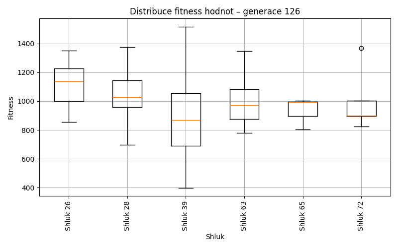
Generace 127
Stabilita mezi generací 126 → 127:
Shluk 39 → 39: 45 jedinců (83.3 %)
Shluk 39 → 26: 1 jedinců (1.9 %)
Shluk 39 → 73: 8 jedinců (14.8 %)
Shluk 28 → 39: 1 jedinců (5.3 %)
Shluk 28 → 28: 18 jedinců (94.7 %)
Shluk 26 → 26: 8 jedinců (80.0 %)
Shluk 26 → 39: 2 jedinců (20.0 %)
Shluk 72 → 72: 5 jedinců (100.0 %)
Shluk 63 → 63: 7 jedinců (77.8 %)
Shluk 63 → 39: 1 jedinců (11.1 %)
Shluk 63 → 28: 1 jedinců (11.1 %)
Shluk 65 → 39: 2 jedinců (66.7 %)
Shluk 65 → 28: 1 jedinců (33.3 %)
Jaccardovo mapování a overlap: Generace 126 → 127
- Cluster 39 → 39 (Jaccard: 0.75, Overlap: 0.88)
- Cluster 28 → 28 (Jaccard: 0.86, Overlap: 0.95)
- Cluster 26 → 26 (Jaccard: 0.73, Overlap: 0.89)
- Cluster 72 → 72 (Jaccard: 1.00, Overlap: 1.00)
- Cluster 63 → 63 (Jaccard: 0.78, Overlap: 1.00)
- Cluster 65 → 28 (Jaccard: 0.05, Overlap: 0.33)
Posun centroidů mezi generací 126 → 127:
- Shluk 0: 60.3889
- Shluk 1: 38.1768
- Shluk 2: 75.7736
- Shluk 3: 50.7520
- Shluk 4: 1017.0455
- Shluk 5: 1000.8983
Generace 128
Stabilita mezi generací 127 → 128:
Shluk 39 → 39: 47 jedinců (92.2 %)
Shluk 39 → 28: 1 jedinců (2.0 %)
Shluk 39 → 63: 1 jedinců (2.0 %)
Shluk 39 → 74: 2 jedinců (3.9 %)
Shluk 26 → 26: 8 jedinců (88.9 %)
Shluk 26 → 74: 1 jedinců (11.1 %)
Shluk 28 → 28: 19 jedinců (95.0 %)
Shluk 28 → 74: 1 jedinců (5.0 %)
Shluk 73 → 39: 6 jedinců (75.0 %)
Shluk 73 → 63: 1 jedinců (12.5 %)
Shluk 73 → 26: 1 jedinců (12.5 %)
Shluk 72 → 72: 5 jedinců (100.0 %)
Shluk 63 → 63: 6 jedinců (85.7 %)
Shluk 63 → 28: 1 jedinců (14.3 %)
Jaccardovo mapování a overlap: Generace 127 → 128
- Cluster 39 → 39 (Jaccard: 0.82, Overlap: 0.92)
- Cluster 26 → 26 (Jaccard: 0.80, Overlap: 0.89)
- Cluster 28 → 28 (Jaccard: 0.86, Overlap: 0.95)
- Cluster 73 → 39 (Jaccard: 0.11, Overlap: 0.75)
- Cluster 72 → 72 (Jaccard: 1.00, Overlap: 1.00)
- Cluster 63 → 63 (Jaccard: 0.67, Overlap: 0.86)
Posun centroidů mezi generací 127 → 128:
- Shluk 0: 58.7417
- Shluk 1: 36.4556
- Shluk 2: 49.4880
- Shluk 3: 140.9887
- Shluk 4: 0.0000
- Shluk 5: 833.2162
Generace 129
Stabilita mezi generací 128 → 129:
Shluk 39 → 39: 52 jedinců (98.1 %)
Shluk 39 → 63: 1 jedinců (1.9 %)
Shluk 26 → 26: 9 jedinců (100.0 %)
Shluk 28 → 39: 3 jedinců (14.3 %)
Shluk 28 → 28: 18 jedinců (85.7 %)
Shluk 72 → 72: 5 jedinců (100.0 %)
Shluk 63 → 63: 4 jedinců (50.0 %)
Shluk 63 → 39: 4 jedinců (50.0 %)
Shluk 74 → 74: 4 jedinců (100.0 %)
Jaccardovo mapování a overlap: Generace 128 → 129
- Cluster 39 → 39 (Jaccard: 0.87, Overlap: 0.98)
- Cluster 26 → 26 (Jaccard: 1.00, Overlap: 1.00)
- Cluster 28 → 28 (Jaccard: 0.86, Overlap: 1.00)
- Cluster 72 → 72 (Jaccard: 1.00, Overlap: 1.00)
- Cluster 63 → 63 (Jaccard: 0.44, Overlap: 0.80)
- Cluster 74 → 74 (Jaccard: 1.00, Overlap: 1.00)
Posun centroidů mezi generací 128 → 129:
- Shluk 0: 58.4028
- Shluk 1: 18.0176
- Shluk 2: 18.8186
- Shluk 3: 210.3001
- Shluk 4: 0.0000
- Shluk 5: 0.0000
Generace 130
Stabilita mezi generací 129 → 130:
Shluk 39 → 39: 58 jedinců (98.3 %)
Shluk 39 → 63: 1 jedinců (1.7 %)
Shluk 26 → 26: 9 jedinců (100.0 %)
Shluk 28 → 28: 16 jedinců (88.9 %)
Shluk 28 → 39: 2 jedinců (11.1 %)
Shluk 72 → 72: 5 jedinců (100.0 %)
Shluk 63 → 63: 4 jedinců (80.0 %)
Shluk 63 → 26: 1 jedinců (20.0 %)
Shluk 74 → 74: 4 jedinců (100.0 %)
Jaccardovo mapování a overlap: Generace 129 → 130
- Cluster 39 → 39 (Jaccard: 0.95, Overlap: 0.98)
- Cluster 26 → 26 (Jaccard: 0.90, Overlap: 1.00)
- Cluster 28 → 28 (Jaccard: 0.89, Overlap: 1.00)
- Cluster 72 → 72 (Jaccard: 1.00, Overlap: 1.00)
- Cluster 63 → 63 (Jaccard: 0.67, Overlap: 0.80)
- Cluster 74 → 74 (Jaccard: 1.00, Overlap: 1.00)
Posun centroidů mezi generací 129 → 130:
- Shluk 0: 36.9123
- Shluk 1: 24.0259
- Shluk 2: 3.1389
- Shluk 3: 47.9922
- Shluk 4: 0.0000
- Shluk 5: 0.0000
Generace 131
Stabilita mezi generací 130 → 131:
Shluk 39 → 39: 59 jedinců (98.3 %)
Shluk 39 → 28: 1 jedinců (1.7 %)
Shluk 26 → 26: 9 jedinců (90.0 %)
Shluk 26 → 39: 1 jedinců (10.0 %)
Shluk 28 → 39: 3 jedinců (18.8 %)
Shluk 28 → 28: 12 jedinců (75.0 %)
Shluk 28 → 74: 1 jedinců (6.2 %)
Shluk 72 → 72: 5 jedinců (100.0 %)
Shluk 63 → 63: 5 jedinců (100.0 %)
Shluk 74 → 74: 4 jedinců (100.0 %)
Jaccardovo mapování a overlap: Generace 130 → 131
- Cluster 39 → 39 (Jaccard: 0.92, Overlap: 0.98)
- Cluster 26 → 26 (Jaccard: 0.90, Overlap: 1.00)
- Cluster 28 → 28 (Jaccard: 0.71, Overlap: 0.92)
- Cluster 72 → 72 (Jaccard: 1.00, Overlap: 1.00)
- Cluster 63 → 63 (Jaccard: 1.00, Overlap: 1.00)
- Cluster 74 → 74 (Jaccard: 0.80, Overlap: 1.00)
Posun centroidů mezi generací 130 → 131:
- Shluk 0: 32.2224
- Shluk 1: 44.4301
- Shluk 2: 20.2834
- Shluk 3: 0.0000
- Shluk 4: 0.0000
- Shluk 5: 30.8138
Generace 132
Stabilita mezi generací 131 → 132:
Shluk 39 → 39: 59 jedinců (93.7 %)
Shluk 39 → 28: 3 jedinců (4.8 %)
Shluk 39 → 75: 1 jedinců (1.6 %)
Shluk 26 → 39: 2 jedinců (22.2 %)
Shluk 26 → 26: 6 jedinců (66.7 %)
Shluk 26 → 75: 1 jedinců (11.1 %)
Shluk 28 → 39: 3 jedinců (23.1 %)
Shluk 28 → 28: 10 jedinců (76.9 %)
Shluk 72 → 63: 4 jedinců (80.0 %)
Shluk 72 → 39: 1 jedinců (20.0 %)
Shluk 63 → 63: 5 jedinců (100.0 %)
Shluk 74 → 74: 5 jedinců (100.0 %)
Jaccardovo mapování a overlap: Generace 131 → 132
- Cluster 39 → 39 (Jaccard: 0.86, Overlap: 0.94)
- Cluster 26 → 26 (Jaccard: 0.67, Overlap: 1.00)
- Cluster 28 → 28 (Jaccard: 0.62, Overlap: 0.77)
- Cluster 72 → 63 (Jaccard: 0.40, Overlap: 0.80)
- Cluster 63 → 63 (Jaccard: 0.56, Overlap: 1.00)
- Cluster 74 → 74 (Jaccard: 1.00, Overlap: 1.00)
Posun centroidů mezi generací 131 → 132:
- Shluk 0: 175.7152
- Shluk 1: 72.4637
- Shluk 2: 12.2307
- Shluk 3: 294.1000
- Shluk 4: 1107.2908
- Shluk 5: 1306.3835
Generace 133
Stabilita mezi generací 132 → 133:
Shluk 39 → 39: 63 jedinců (96.9 %)
Shluk 39 → 26: 2 jedinců (3.1 %)
Shluk 26 → 26: 5 jedinců (83.3 %)
Shluk 26 → 39: 1 jedinců (16.7 %)
Shluk 28 → 28: 13 jedinců (100.0 %)
Shluk 75 → 75: 2 jedinců (100.0 %)
Shluk 63 → 63: 8 jedinců (88.9 %)
Shluk 63 → 26: 1 jedinců (11.1 %)
Shluk 74 → 74: 5 jedinců (100.0 %)
Jaccardovo mapování a overlap: Generace 132 → 133
- Cluster 39 → 39 (Jaccard: 0.95, Overlap: 0.98)
- Cluster 26 → 26 (Jaccard: 0.56, Overlap: 0.83)
- Cluster 28 → 28 (Jaccard: 1.00, Overlap: 1.00)
- Cluster 75 → 75 (Jaccard: 1.00, Overlap: 1.00)
- Cluster 63 → 63 (Jaccard: 0.89, Overlap: 1.00)
- Cluster 74 → 74 (Jaccard: 1.00, Overlap: 1.00)
Posun centroidů mezi generací 132 → 133:
- Shluk 0: 197.8178
- Shluk 1: 0.0000
- Shluk 2: 14.6554
- Shluk 3: 97.3118
- Shluk 4: 0.0000
- Shluk 5: 0.0000
Generace 134
Stabilita mezi generací 133 → 134:
Shluk 39 → 39: 64 jedinců (100.0 %)
Shluk 26 → 26: 8 jedinců (100.0 %)
Shluk 28 → 28: 10 jedinců (76.9 %)
Shluk 28 → 39: 3 jedinců (23.1 %)
Shluk 75 → 26: 1 jedinců (50.0 %)
Shluk 75 → 39: 1 jedinců (50.0 %)
Shluk 63 → 76: 3 jedinců (37.5 %)
Shluk 63 → 63: 5 jedinců (62.5 %)
Shluk 74 → 74: 4 jedinců (80.0 %)
Shluk 74 → 39: 1 jedinců (20.0 %)
Jaccardovo mapování a overlap: Generace 133 → 134
- Cluster 39 → 39 (Jaccard: 0.93, Overlap: 1.00)
- Cluster 26 → 26 (Jaccard: 0.89, Overlap: 1.00)
- Cluster 28 → 28 (Jaccard: 0.77, Overlap: 1.00)
- Cluster 75 → 26 (Jaccard: 0.10, Overlap: 0.50)
- Cluster 63 → 63 (Jaccard: 0.62, Overlap: 1.00)
- Cluster 74 → 74 (Jaccard: 0.80, Overlap: 1.00)
Posun centroidů mezi generací 133 → 134:
- Shluk 0: 122.3655
- Shluk 1: 42.0419
- Shluk 2: 8.1678
- Shluk 3: 245.4160
- Shluk 4: 46.5617
- Shluk 5: 1248.1171
Generace 135
Stabilita mezi generací 134 → 135:
Shluk 39 → 39: 54 jedinců (78.3 %)
Shluk 39 → 77: 12 jedinců (17.4 %)
Shluk 39 → 63: 1 jedinců (1.4 %)
Shluk 39 → 28: 1 jedinců (1.4 %)
Shluk 39 → 74: 1 jedinců (1.4 %)
Shluk 26 → 26: 8 jedinců (88.9 %)
Shluk 26 → 74: 1 jedinců (11.1 %)
Shluk 28 → 77: 1 jedinců (10.0 %)
Shluk 28 → 28: 8 jedinců (80.0 %)
Shluk 28 → 39: 1 jedinců (10.0 %)
Shluk 76 → 63: 2 jedinců (66.7 %)
Shluk 76 → 28: 1 jedinců (33.3 %)
Shluk 63 → 63: 5 jedinců (100.0 %)
Shluk 74 → 74: 4 jedinců (100.0 %)
Jaccardovo mapování a overlap: Generace 134 → 135
- Cluster 39 → 39 (Jaccard: 0.77, Overlap: 0.98)
- Cluster 26 → 26 (Jaccard: 0.89, Overlap: 1.00)
- Cluster 28 → 28 (Jaccard: 0.67, Overlap: 0.80)
- Cluster 76 → 63 (Jaccard: 0.22, Overlap: 0.67)
- Cluster 63 → 63 (Jaccard: 0.62, Overlap: 1.00)
- Cluster 74 → 74 (Jaccard: 0.67, Overlap: 1.00)
Posun centroidů mezi generací 134 → 135:
- Shluk 0: 59.9970
- Shluk 1: 64.8925
- Shluk 2: 44.8303
- Shluk 3: 150.6825
- Shluk 4: 58.7860
- Shluk 5: 843.0607
Generace 136
Stabilita mezi generací 135 → 136:
Shluk 39 → 39: 54 jedinců (98.2 %)
Shluk 39 → 74: 1 jedinců (1.8 %)
Shluk 77 → 77: 12 jedinců (92.3 %)
Shluk 77 → 28: 1 jedinců (7.7 %)
Shluk 26 → 26: 7 jedinců (87.5 %)
Shluk 26 → 74: 1 jedinců (12.5 %)
Shluk 28 → 28: 10 jedinců (100.0 %)
Shluk 63 → 63: 7 jedinců (87.5 %)
Shluk 63 → 39: 1 jedinců (12.5 %)
Shluk 74 → 74: 4 jedinců (66.7 %)
Shluk 74 → 39: 2 jedinců (33.3 %)
Jaccardovo mapování a overlap: Generace 135 → 136
- Cluster 39 → 39 (Jaccard: 0.93, Overlap: 0.98)
- Cluster 77 → 77 (Jaccard: 0.92, Overlap: 1.00)
- Cluster 26 → 26 (Jaccard: 0.88, Overlap: 1.00)
- Cluster 28 → 28 (Jaccard: 0.91, Overlap: 1.00)
- Cluster 63 → 63 (Jaccard: 0.88, Overlap: 1.00)
- Cluster 74 → 74 (Jaccard: 0.50, Overlap: 0.67)
Posun centroidů mezi generací 135 → 136:
- Shluk 0: 38.9592
- Shluk 1: 51.9527
- Shluk 2: 6.7959
- Shluk 3: 30.3797
- Shluk 4: 41.6343
- Shluk 5: 17.5995

Generace 137
Stabilita mezi generací 136 → 137:
Shluk 39 → 39: 57 jedinců (100.0 %)
Shluk 77 → 39: 12 jedinců (100.0 %)
Shluk 26 → 26: 5 jedinců (71.4 %)
Shluk 26 → 78: 2 jedinců (28.6 %)
Shluk 28 → 39: 2 jedinců (18.2 %)
Shluk 28 → 28: 9 jedinců (81.8 %)
Shluk 74 → 74: 5 jedinců (83.3 %)
Shluk 74 → 39: 1 jedinců (16.7 %)
Shluk 63 → 63: 6 jedinců (85.7 %)
Shluk 63 → 28: 1 jedinců (14.3 %)
Jaccardovo mapování a overlap: Generace 136 → 137
- Cluster 39 → 39 (Jaccard: 0.79, Overlap: 1.00)
- Cluster 77 → 39 (Jaccard: 0.17, Overlap: 1.00)
- Cluster 26 → 26 (Jaccard: 0.71, Overlap: 1.00)
- Cluster 28 → 28 (Jaccard: 0.75, Overlap: 0.90)
- Cluster 74 → 74 (Jaccard: 0.83, Overlap: 1.00)
- Cluster 63 → 63 (Jaccard: 0.86, Overlap: 1.00)
Posun centroidů mezi generací 136 → 137:
- Shluk 0: 193.6772
- Shluk 1: 32.5095
- Shluk 2: 45.7274
- Shluk 3: 36.9615
- Shluk 4: 22.4019
- Shluk 5: 856.7739
Generace 138
Stabilita mezi generací 137 → 138:
Shluk 39 → 39: 70 jedinců (97.2 %)
Shluk 39 → 28: 1 jedinců (1.4 %)
Shluk 39 → 74: 1 jedinců (1.4 %)
Shluk 26 → 26: 4 jedinců (80.0 %)
Shluk 26 → 39: 1 jedinců (20.0 %)
Shluk 78 → 78: 1 jedinců (50.0 %)
Shluk 78 → 26: 1 jedinců (50.0 %)
Shluk 74 → 74: 5 jedinců (100.0 %)
Shluk 28 → 28: 8 jedinců (80.0 %)
Shluk 28 → 63: 1 jedinců (10.0 %)
Shluk 28 → 39: 1 jedinců (10.0 %)
Shluk 63 → 63: 5 jedinců (83.3 %)
Shluk 63 → 39: 1 jedinců (16.7 %)
Jaccardovo mapování a overlap: Generace 137 → 138
- Cluster 39 → 39 (Jaccard: 0.93, Overlap: 0.97)
- Cluster 26 → 26 (Jaccard: 0.67, Overlap: 0.80)
- Cluster 78 → 78 (Jaccard: 0.50, Overlap: 1.00)
- Cluster 74 → 74 (Jaccard: 0.83, Overlap: 1.00)
- Cluster 28 → 28 (Jaccard: 0.73, Overlap: 0.89)
- Cluster 63 → 63 (Jaccard: 0.71, Overlap: 0.83)
Posun centroidů mezi generací 137 → 138:
- Shluk 0: 73.6259
- Shluk 1: 59.6160
- Shluk 2: 8.7448
- Shluk 3: 82.9690
- Shluk 4: 36.5015
- Shluk 5: 379.5833
Generace 139
Stabilita mezi generací 138 → 139:
Shluk 39 → 39: 68 jedinců (93.2 %)
Shluk 39 → 28: 3 jedinců (4.1 %)
Shluk 39 → 79: 2 jedinců (2.7 %)
Shluk 26 → 26: 5 jedinců (100.0 %)
Shluk 28 → 39: 1 jedinců (11.1 %)
Shluk 28 → 28: 7 jedinců (77.8 %)
Shluk 28 → 26: 1 jedinců (11.1 %)
Shluk 78 → 28: 1 jedinců (100.0 %)
Shluk 74 → 39: 1 jedinců (16.7 %)
Shluk 74 → 74: 5 jedinců (83.3 %)
Shluk 63 → 63: 5 jedinců (83.3 %)
Shluk 63 → 39: 1 jedinců (16.7 %)
Jaccardovo mapování a overlap: Generace 138 → 139
- Cluster 39 → 39 (Jaccard: 0.89, Overlap: 0.96)
- Cluster 26 → 26 (Jaccard: 0.83, Overlap: 1.00)
- Cluster 28 → 28 (Jaccard: 0.54, Overlap: 0.78)
- Cluster 78 → 28 (Jaccard: 0.09, Overlap: 1.00)
- Cluster 74 → 74 (Jaccard: 0.83, Overlap: 1.00)
- Cluster 63 → 63 (Jaccard: 0.83, Overlap: 1.00)
Posun centroidů mezi generací 138 → 139:
- Shluk 0: 21.3819
- Shluk 1: 26.7094
- Shluk 2: 21.0930
- Shluk 3: 105.5467
- Shluk 4: 33.3226
- Shluk 5: 1213.6142
Generace 140
Stabilita mezi generací 139 → 140:
Shluk 39 → 39: 69 jedinců (97.2 %)
Shluk 39 → 28: 1 jedinců (1.4 %)
Shluk 39 → 26: 1 jedinců (1.4 %)
Shluk 26 → 26: 6 jedinců (100.0 %)
Shluk 28 → 28: 10 jedinců (90.9 %)
Shluk 28 → 63: 1 jedinců (9.1 %)
Shluk 63 → 63: 5 jedinců (100.0 %)
Shluk 79 → 79: 1 jedinců (50.0 %)
Shluk 79 → 39: 1 jedinců (50.0 %)
Shluk 74 → 74: 5 jedinců (100.0 %)
Jaccardovo mapování a overlap: Generace 139 → 140
- Cluster 39 → 39 (Jaccard: 0.96, Overlap: 0.99)
- Cluster 26 → 26 (Jaccard: 0.86, Overlap: 1.00)
- Cluster 28 → 28 (Jaccard: 0.83, Overlap: 0.91)
- Cluster 63 → 63 (Jaccard: 0.83, Overlap: 1.00)
- Cluster 79 → 79 (Jaccard: 0.50, Overlap: 1.00)
- Cluster 74 → 74 (Jaccard: 1.00, Overlap: 1.00)
Posun centroidů mezi generací 139 → 140:
- Shluk 0: 13.9380
- Shluk 1: 37.4097
- Shluk 2: 7.6952
- Shluk 3: 105.6052
- Shluk 4: 0.0000
- Shluk 5: 252.6870
Generace 141
Stabilita mezi generací 140 → 141:
Shluk 39 → 39: 69 jedinců (98.6 %)
Shluk 39 → 26: 1 jedinců (1.4 %)
Shluk 26 → 39: 1 jedinců (14.3 %)
Shluk 26 → 26: 6 jedinců (85.7 %)
Shluk 28 → 28: 10 jedinců (90.9 %)
Shluk 28 → 39: 1 jedinců (9.1 %)
Shluk 63 → 63: 5 jedinců (83.3 %)
Shluk 63 → 26: 1 jedinců (16.7 %)
Shluk 79 → 79: 1 jedinců (100.0 %)
Shluk 74 → 39: 3 jedinců (60.0 %)
Shluk 74 → 74: 2 jedinců (40.0 %)
Jaccardovo mapování a overlap: Generace 140 → 141
- Cluster 39 → 39 (Jaccard: 0.92, Overlap: 0.99)
- Cluster 26 → 26 (Jaccard: 0.67, Overlap: 0.86)
- Cluster 28 → 28 (Jaccard: 0.91, Overlap: 1.00)
- Cluster 63 → 63 (Jaccard: 0.83, Overlap: 1.00)
- Cluster 79 → 79 (Jaccard: 1.00, Overlap: 1.00)
- Cluster 74 → 74 (Jaccard: 0.40, Overlap: 1.00)
Posun centroidů mezi generací 140 → 141:
- Shluk 0: 92.5182
- Shluk 1: 22.4785
- Shluk 2: 9.8240
- Shluk 3: 26.2377
- Shluk 4: 149.5264
- Shluk 5: 0.0000
Generace 142
Stabilita mezi generací 141 → 142:
Shluk 39 → 39: 74 jedinců (100.0 %)
Shluk 26 → 26: 8 jedinců (100.0 %)
Shluk 28 → 28: 8 jedinců (80.0 %)
Shluk 28 → 39: 2 jedinců (20.0 %)
Shluk 63 → 63: 2 jedinců (40.0 %)
Shluk 63 → 39: 3 jedinců (60.0 %)
Shluk 79 → 79: 1 jedinců (100.0 %)
Shluk 74 → 74: 2 jedinců (100.0 %)
Jaccardovo mapování a overlap: Generace 141 → 142
- Cluster 39 → 39 (Jaccard: 0.94, Overlap: 1.00)
- Cluster 26 → 26 (Jaccard: 1.00, Overlap: 1.00)
- Cluster 28 → 28 (Jaccard: 0.80, Overlap: 1.00)
- Cluster 63 → 63 (Jaccard: 0.40, Overlap: 1.00)
- Cluster 79 → 79 (Jaccard: 1.00, Overlap: 1.00)
- Cluster 74 → 74 (Jaccard: 1.00, Overlap: 1.00)
Posun centroidů mezi generací 141 → 142:
- Shluk 0: 0.0000
- Shluk 1: 21.6847
- Shluk 2: 10.3679
- Shluk 3: 139.6693
- Shluk 4: 0.0000
- Shluk 5: 0.0000

Generace 143

Stabilita mezi generací 142 → 143:
Shluk 39 → 39: 78 jedinců (98.7 %)
Shluk 39 → 79: 1 jedinců (1.3 %)
Shluk 26 → 26: 7 jedinců (87.5 %)
Shluk 26 → 39: 1 jedinců (12.5 %)
Shluk 28 → 28: 4 jedinců (50.0 %)
Shluk 28 → 39: 4 jedinců (50.0 %)
Shluk 63 → 63: 2 jedinců (100.0 %)
Shluk 79 → 79: 1 jedinců (100.0 %)
Shluk 74 → 74: 2 jedinců (100.0 %)
Jaccardovo mapování a overlap: Generace 142 → 143
- Cluster 39 → 39 (Jaccard: 0.93, Overlap: 0.99)
- Cluster 26 → 26 (Jaccard: 0.88, Overlap: 1.00)
- Cluster 28 → 28 (Jaccard: 0.50, Overlap: 1.00)
- Cluster 63 → 63 (Jaccard: 1.00, Overlap: 1.00)
- Cluster 79 → 79 (Jaccard: 0.50, Overlap: 1.00)
- Cluster 74 → 74 (Jaccard: 1.00, Overlap: 1.00)
Posun centroidů mezi generací 142 → 143:
- Shluk 0: 32.6458
- Shluk 1: 57.8541
- Shluk 2: 7.7990
- Shluk 3: 34.6429
- Shluk 4: 0.0000
- Shluk 5: 252.6870

Generace 144

Stabilita mezi generací 143 → 144:
Shluk 39 → 39: 77 jedinců (92.8 %)
Shluk 39 → 63: 1 jedinců (1.2 %)
Shluk 39 → 26: 1 jedinců (1.2 %)
Shluk 39 → 80: 4 jedinců (4.8 %)
Shluk 26 → 80: 3 jedinců (42.9 %)
Shluk 26 → 26: 4 jedinců (57.1 %)
Shluk 28 → 28: 3 jedinců (75.0 %)
Shluk 28 → 39: 1 jedinců (25.0 %)
Shluk 63 → 63: 2 jedinců (100.0 %)
Shluk 79 → 39: 2 jedinců (100.0 %)
Shluk 74 → 74: 2 jedinců (100.0 %)
Jaccardovo mapování a overlap: Generace 143 → 144
- Cluster 39 → 39 (Jaccard: 0.90, Overlap: 0.96)
- Cluster 26 → 26 (Jaccard: 0.50, Overlap: 0.80)
- Cluster 28 → 28 (Jaccard: 0.75, Overlap: 1.00)
- Cluster 63 → 63 (Jaccard: 0.67, Overlap: 1.00)
- Cluster 79 → 39 (Jaccard: 0.03, Overlap: 1.00)
- Cluster 74 → 74 (Jaccard: 1.00, Overlap: 1.00)
Posun centroidů mezi generací 143 → 144:
- Shluk 0: 155.8010
- Shluk 1: 45.0782
- Shluk 2: 11.9144
- Shluk 3: 24.7611
- Shluk 4: 42.4871
- Shluk 5: 628.7789
Generace 145
Stabilita mezi generací 144 → 145:
Shluk 39 → 39: 78 jedinců (97.5 %)
Shluk 39 → 26: 1 jedinců (1.2 %)
Shluk 39 → 63: 1 jedinců (1.2 %)
Shluk 80 → 39: 1 jedinců (14.3 %)
Shluk 80 → 80: 6 jedinců (85.7 %)
Shluk 28 → 28: 3 jedinců (100.0 %)
Shluk 63 → 63: 2 jedinců (66.7 %)
Shluk 63 → 39: 1 jedinců (33.3 %)
Shluk 26 → 26: 4 jedinců (80.0 %)
Shluk 26 → 39: 1 jedinců (20.0 %)
Shluk 74 → 39: 1 jedinců (50.0 %)
Shluk 74 → 74: 1 jedinců (50.0 %)
Jaccardovo mapování a overlap: Generace 144 → 145
- Cluster 39 → 39 (Jaccard: 0.93, Overlap: 0.97)
- Cluster 80 → 80 (Jaccard: 0.86, Overlap: 1.00)
- Cluster 28 → 28 (Jaccard: 1.00, Overlap: 1.00)
- Cluster 63 → 63 (Jaccard: 0.50, Overlap: 0.67)
- Cluster 26 → 26 (Jaccard: 0.67, Overlap: 0.80)
- Cluster 74 → 74 (Jaccard: 0.50, Overlap: 1.00)
Posun centroidů mezi generací 144 → 145:
- Shluk 0: 22.4798
- Shluk 1: 26.2591
- Shluk 2: 9.3334
- Shluk 3: 33.6982
- Shluk 4: 44.5776
- Shluk 5: 13.6189
Generace 146
Stabilita mezi generací 145 → 146:
Shluk 39 → 39: 77 jedinců (93.9 %)
Shluk 39 → 81: 3 jedinců (3.7 %)
Shluk 39 → 80: 2 jedinců (2.4 %)
Shluk 28 → 28: 3 jedinců (100.0 %)
Shluk 26 → 26: 5 jedinců (100.0 %)
Shluk 63 → 63: 3 jedinců (100.0 %)
Shluk 80 → 39: 3 jedinců (50.0 %)
Shluk 80 → 81: 1 jedinců (16.7 %)
Shluk 80 → 80: 2 jedinců (33.3 %)
Shluk 74 → 39: 1 jedinců (100.0 %)
Jaccardovo mapování a overlap: Generace 145 → 146
- Cluster 39 → 39 (Jaccard: 0.90, Overlap: 0.95)
- Cluster 28 → 28 (Jaccard: 1.00, Overlap: 1.00)
- Cluster 26 → 26 (Jaccard: 1.00, Overlap: 1.00)
- Cluster 63 → 63 (Jaccard: 1.00, Overlap: 1.00)
- Cluster 80 → 80 (Jaccard: 0.25, Overlap: 0.50)
- Cluster 74 → 39 (Jaccard: 0.01, Overlap: 1.00)
Posun centroidů mezi generací 145 → 146:
- Shluk 0: 0.0000
- Shluk 1: 0.0000
- Shluk 2: 9.9600
- Shluk 3: 0.0000
- Shluk 4: 752.1341
- Shluk 5: 306.3500
Generace 147

Stabilita mezi generací 146 → 147:
Shluk 39 → 39: 80 jedinců (98.8 %)
Shluk 39 → 28: 1 jedinců (1.2 %)
Shluk 28 → 28: 2 jedinců (66.7 %)
Shluk 28 → 39: 1 jedinců (33.3 %)
Shluk 26 → 26: 3 jedinců (60.0 %)
Shluk 26 → 39: 1 jedinců (20.0 %)
Shluk 26 → 81: 1 jedinců (20.0 %)
Shluk 81 → 81: 2 jedinců (50.0 %)
Shluk 81 → 39: 2 jedinců (50.0 %)
Shluk 63 → 63: 2 jedinců (66.7 %)
Shluk 63 → 39: 1 jedinců (33.3 %)
Shluk 80 → 80: 4 jedinců (100.0 %)
Jaccardovo mapování a overlap: Generace 146 → 147
- Cluster 39 → 39 (Jaccard: 0.93, Overlap: 0.99)
- Cluster 28 → 28 (Jaccard: 0.50, Overlap: 0.67)
- Cluster 26 → 26 (Jaccard: 0.60, Overlap: 1.00)
- Cluster 81 → 81 (Jaccard: 0.40, Overlap: 0.67)
- Cluster 63 → 63 (Jaccard: 0.67, Overlap: 1.00)
- Cluster 80 → 80 (Jaccard: 1.00, Overlap: 1.00)
Posun centroidů mezi generací 146 → 147:
- Shluk 0: 14.7551
- Shluk 1: 22.8445
- Shluk 2: 2.9358
- Shluk 3: 19.9469
- Shluk 4: 0.0000
- Shluk 5: 147.5562
Generace 148

Stabilita mezi generací 147 → 148:
Shluk 39 → 39: 83 jedinců (97.6 %)
Shluk 39 → 82: 2 jedinců (2.4 %)
Shluk 28 → 28: 3 jedinců (100.0 %)
Shluk 26 → 26: 3 jedinců (100.0 %)
Shluk 81 → 39: 3 jedinců (100.0 %)
Shluk 63 → 39: 1 jedinců (50.0 %)
Shluk 63 → 63: 1 jedinců (50.0 %)
Shluk 80 → 80: 3 jedinců (75.0 %)
Shluk 80 → 39: 1 jedinců (25.0 %)
Jaccardovo mapování a overlap: Generace 147 → 148
- Cluster 39 → 39 (Jaccard: 0.92, Overlap: 0.98)
- Cluster 28 → 28 (Jaccard: 1.00, Overlap: 1.00)
- Cluster 26 → 26 (Jaccard: 1.00, Overlap: 1.00)
- Cluster 81 → 39 (Jaccard: 0.03, Overlap: 1.00)
- Cluster 63 → 63 (Jaccard: 0.50, Overlap: 1.00)
- Cluster 80 → 80 (Jaccard: 0.75, Overlap: 1.00)
Posun centroidů mezi generací 147 → 148:
- Shluk 0: 20.5771
- Shluk 1: 0.0000
- Shluk 2: 6.0685
- Shluk 3: 27.9128
- Shluk 4: 19.3722
- Shluk 5: 290.5814
Generace 149
Stabilita mezi generací 148 → 149:
Shluk 39 → 82: 37 jedinců (42.0 %)
Shluk 39 → 39: 49 jedinců (55.7 %)
Shluk 39 → 83: 1 jedinců (1.1 %)
Shluk 39 → 26: 1 jedinců (1.1 %)
Shluk 28 → 82: 1 jedinců (33.3 %)
Shluk 28 → 28: 2 jedinců (66.7 %)
Shluk 26 → 26: 3 jedinců (100.0 %)
Shluk 63 → 39: 1 jedinců (100.0 %)
Shluk 82 → 39: 1 jedinců (50.0 %)
Shluk 82 → 82: 1 jedinců (50.0 %)
Shluk 80 → 80: 1 jedinců (33.3 %)
Shluk 80 → 82: 2 jedinců (66.7 %)
Jaccardovo mapování a overlap: Generace 148 → 149
- Cluster 39 → 39 (Jaccard: 0.54, Overlap: 0.96)
- Cluster 28 → 28 (Jaccard: 0.67, Overlap: 1.00)
- Cluster 26 → 26 (Jaccard: 0.75, Overlap: 1.00)
- Cluster 63 → 39 (Jaccard: 0.02, Overlap: 1.00)
- Cluster 82 → 82 (Jaccard: 0.02, Overlap: 0.50)
- Cluster 80 → 80 (Jaccard: 0.33, Overlap: 1.00)
Posun centroidů mezi generací 148 → 149:
- Shluk 0: 11.9716
- Shluk 1: 19.1775
- Shluk 2: 16.6453
- Shluk 3: 794.6915
- Shluk 4: 271.6418
- Shluk 5: 337.1316
Generace 150

Stabilita mezi generací 149 → 150:
Shluk 82 → 39: 9 jedinců (22.0 %)
Shluk 82 → 82: 32 jedinců (78.0 %)
Shluk 39 → 82: 23 jedinců (45.1 %)
Shluk 39 → 39: 27 jedinců (52.9 %)
Shluk 39 → 84: 1 jedinců (2.0 %)
Shluk 26 → 39: 1 jedinců (25.0 %)
Shluk 26 → 26: 3 jedinců (75.0 %)
Shluk 83 → 83: 1 jedinců (100.0 %)
Shluk 80 → 39: 1 jedinců (100.0 %)
Shluk 28 → 28: 1 jedinců (50.0 %)
Shluk 28 → 39: 1 jedinců (50.0 %)
Jaccardovo mapování a overlap: Generace 149 → 150
- Cluster 82 → 82 (Jaccard: 0.50, Overlap: 0.78)
- Cluster 39 → 39 (Jaccard: 0.43, Overlap: 0.69)
- Cluster 26 → 26 (Jaccard: 0.75, Overlap: 1.00)
- Cluster 83 → 83 (Jaccard: 1.00, Overlap: 1.00)
- Cluster 80 → 39 (Jaccard: 0.03, Overlap: 1.00)
- Cluster 28 → 28 (Jaccard: 0.50, Overlap: 1.00)
Posun centroidů mezi generací 149 → 150:
- Shluk 0: 11.3190
- Shluk 1: 18.1939
- Shluk 2: 23.9917
- Shluk 3: 356.0991
- Shluk 4: 264.3241
- Shluk 5: 361.2784
Generace 151
Stabilita mezi generací 150 → 151:
Shluk 39 → 39: 29 jedinců (74.4 %)
Shluk 39 → 82: 1 jedinců (2.6 %)
Shluk 39 → 85: 9 jedinců (23.1 %)
Shluk 82 → 82: 30 jedinců (54.5 %)
Shluk 82 → 39: 12 jedinců (21.8 %)
Shluk 82 → 85: 13 jedinců (23.6 %)
Shluk 26 → 39: 1 jedinců (33.3 %)
Shluk 26 → 26: 2 jedinců (66.7 %)
Shluk 83 → 83: 1 jedinců (100.0 %)
Shluk 84 → 82: 1 jedinců (100.0 %)
Shluk 28 → 28: 1 jedinců (100.0 %)
Jaccardovo mapování a overlap: Generace 150 → 151
- Cluster 39 → 39 (Jaccard: 0.56, Overlap: 0.74)
- Cluster 82 → 82 (Jaccard: 0.53, Overlap: 0.94)
- Cluster 26 → 26 (Jaccard: 0.67, Overlap: 1.00)
- Cluster 83 → 83 (Jaccard: 1.00, Overlap: 1.00)
- Cluster 84 → 82 (Jaccard: 0.03, Overlap: 1.00)
- Cluster 28 → 28 (Jaccard: 1.00, Overlap: 1.00)
Posun centroidů mezi generací 150 → 151:
- Shluk 0: 27.0707
- Shluk 1: 0.0000
- Shluk 2: 13.1223
- Shluk 3: 12.4319
- Shluk 4: 0.0000
- Shluk 5: 215.7391
Generace 152
Stabilita mezi generací 151 → 152:
Shluk 39 → 85: 2 jedinců (4.8 %)
Shluk 39 → 39: 19 jedinců (45.2 %)
Shluk 39 → 87: 16 jedinců (38.1 %)
Shluk 39 → 86: 5 jedinců (11.9 %)
Shluk 82 → 82: 14 jedinců (43.8 %)
Shluk 82 → 39: 2 jedinců (6.2 %)
Shluk 82 → 86: 15 jedinců (46.9 %)
Shluk 82 → 87: 1 jedinců (3.1 %)
Shluk 85 → 85: 12 jedinců (54.5 %)
Shluk 85 → 87: 1 jedinců (4.5 %)
Shluk 85 → 39: 6 jedinců (27.3 %)
Shluk 85 → 86: 3 jedinců (13.6 %)
Shluk 83 → 39: 1 jedinců (100.0 %)
Shluk 26 → 26: 1 jedinců (50.0 %)
Shluk 26 → 85: 1 jedinců (50.0 %)
Shluk 28 → 39: 1 jedinců (100.0 %)
Jaccardovo mapování a overlap: Generace 151 → 152
- Cluster 39 → 39 (Jaccard: 0.37, Overlap: 0.66)
- Cluster 82 → 82 (Jaccard: 0.44, Overlap: 1.00)
- Cluster 85 → 85 (Jaccard: 0.48, Overlap: 0.80)
- Cluster 83 → 39 (Jaccard: 0.03, Overlap: 1.00)
- Cluster 26 → 26 (Jaccard: 0.50, Overlap: 1.00)
- Cluster 28 → 39 (Jaccard: 0.03, Overlap: 1.00)
Posun centroidů mezi generací 151 → 152:
- Shluk 0: 28.2881
- Shluk 1: 719.2510
- Shluk 2: 47.6833
- Shluk 3: 39.5401
- Shluk 4: 269.5737
- Shluk 5: 36.2494
Generace 153
Stabilita mezi generací 152 → 153:
Shluk 85 → 87: 4 jedinců (26.7 %)
Shluk 85 → 85: 8 jedinců (53.3 %)
Shluk 85 → 39: 1 jedinců (6.7 %)
Shluk 85 → 82: 1 jedinců (6.7 %)
Shluk 85 → 86: 1 jedinců (6.7 %)
Shluk 82 → 82: 10 jedinců (71.4 %)
Shluk 82 → 39: 2 jedinců (14.3 %)
Shluk 82 → 87: 1 jedinců (7.1 %)
Shluk 82 → 85: 1 jedinců (7.1 %)
Shluk 39 → 86: 6 jedinců (20.7 %)
Shluk 39 → 39: 14 jedinců (48.3 %)
Shluk 39 → 82: 4 jedinců (13.8 %)
Shluk 39 → 85: 2 jedinců (6.9 %)
Shluk 39 → 87: 3 jedinců (10.3 %)
Shluk 86 → 85: 1 jedinců (4.3 %)
Shluk 86 → 86: 17 jedinců (73.9 %)
Shluk 86 → 87: 2 jedinců (8.7 %)
Shluk 86 → 39: 2 jedinců (8.7 %)
Shluk 86 → 82: 1 jedinců (4.3 %)
Shluk 87 → 87: 11 jedinců (61.1 %)
Shluk 87 → 39: 3 jedinců (16.7 %)
Shluk 87 → 82: 1 jedinců (5.6 %)
Shluk 87 → 86: 2 jedinců (11.1 %)
Shluk 87 → 85: 1 jedinců (5.6 %)
Shluk 26 → 26: 1 jedinců (100.0 %)
Jaccardovo mapování a overlap: Generace 152 → 153
- Cluster 85 → 85 (Jaccard: 0.40, Overlap: 0.62)
- Cluster 82 → 82 (Jaccard: 0.48, Overlap: 0.71)
- Cluster 39 → 39 (Jaccard: 0.38, Overlap: 0.64)
- Cluster 86 → 86 (Jaccard: 0.53, Overlap: 0.74)
- Cluster 87 → 87 (Jaccard: 0.39, Overlap: 0.61)
- Cluster 26 → 26 (Jaccard: 1.00, Overlap: 1.00)
Posun centroidů mezi generací 152 → 153:
- Shluk 0: 0.0000
- Shluk 1: 15.8724
- Shluk 2: 9.6562
- Shluk 3: 14.1266
- Shluk 4: 13.1189
- Shluk 5: 10.3937
Generace 154
Stabilita mezi generací 153 → 154:
Shluk 87 → 39: 3 jedinců (14.3 %)
Shluk 87 → 87: 11 jedinců (52.4 %)
Shluk 87 → 82: 1 jedinců (4.8 %)
Shluk 87 → 86: 1 jedinců (4.8 %)
Shluk 87 → 88: 4 jedinců (19.0 %)
Shluk 87 → 85: 1 jedinců (4.8 %)
Shluk 82 → 82: 10 jedinců (58.8 %)
Shluk 82 → 39: 3 jedinců (17.6 %)
Shluk 82 → 85: 1 jedinců (5.9 %)
Shluk 82 → 86: 2 jedinců (11.8 %)
Shluk 82 → 87: 1 jedinců (5.9 %)
Shluk 86 → 88: 5 jedinců (19.2 %)
Shluk 86 → 86: 12 jedinců (46.2 %)
Shluk 86 → 85: 2 jedinců (7.7 %)
Shluk 86 → 39: 3 jedinců (11.5 %)
Shluk 86 → 87: 4 jedinců (15.4 %)
Shluk 39 → 39: 8 jedinců (36.4 %)
Shluk 39 → 86: 4 jedinců (18.2 %)
Shluk 39 → 87: 8 jedinců (36.4 %)
Shluk 39 → 85: 2 jedinců (9.1 %)
Shluk 85 → 86: 1 jedinců (7.7 %)
Shluk 85 → 85: 8 jedinců (61.5 %)
Shluk 85 → 87: 2 jedinců (15.4 %)
Shluk 85 → 82: 1 jedinců (7.7 %)
Shluk 85 → 39: 1 jedinců (7.7 %)
Shluk 26 → 86: 1 jedinců (100.0 %)
Jaccardovo mapování a overlap: Generace 153 → 154
- Cluster 87 → 87 (Jaccard: 0.31, Overlap: 0.52)
- Cluster 82 → 82 (Jaccard: 0.53, Overlap: 0.83)
- Cluster 86 → 86 (Jaccard: 0.34, Overlap: 0.57)
- Cluster 39 → 39 (Jaccard: 0.25, Overlap: 0.44)
- Cluster 85 → 85 (Jaccard: 0.42, Overlap: 0.62)
- Cluster 26 → 86 (Jaccard: 0.05, Overlap: 1.00)
Posun centroidů mezi generací 153 → 154:
- Shluk 0: 706.6864
- Shluk 1: 38.6662
- Shluk 2: 43.3703
- Shluk 3: 31.6996
- Shluk 4: 27.5594
- Shluk 5: 29.0850
Generace 155
Stabilita mezi generací 154 → 155:
Shluk 39 → 39: 9 jedinců (50.0 %)
Shluk 39 → 89: 5 jedinců (27.8 %)
Shluk 39 → 82: 4 jedinců (22.2 %)
Shluk 82 → 89: 3 jedinců (25.0 %)
Shluk 82 → 82: 6 jedinců (50.0 %)
Shluk 82 → 85: 1 jedinců (8.3 %)
Shluk 82 → 86: 1 jedinců (8.3 %)
Shluk 82 → 39: 1 jedinců (8.3 %)
Shluk 88 → 82: 1 jedinců (11.1 %)
Shluk 88 → 39: 2 jedinců (22.2 %)
Shluk 88 → 87: 3 jedinců (33.3 %)
Shluk 88 → 86: 2 jedinců (22.2 %)
Shluk 88 → 89: 1 jedinců (11.1 %)
Shluk 87 → 87: 10 jedinců (38.5 %)
Shluk 87 → 85: 3 jedinců (11.5 %)
Shluk 87 → 89: 7 jedinců (26.9 %)
Shluk 87 → 82: 5 jedinců (19.2 %)
Shluk 87 → 86: 1 jedinců (3.8 %)
Shluk 86 → 87: 1 jedinců (4.8 %)
Shluk 86 → 82: 4 jedinců (19.0 %)
Shluk 86 → 86: 13 jedinců (61.9 %)
Shluk 86 → 85: 2 jedinců (9.5 %)
Shluk 86 → 89: 1 jedinců (4.8 %)
Shluk 85 → 87: 4 jedinců (28.6 %)
Shluk 85 → 85: 4 jedinců (28.6 %)
Shluk 85 → 89: 3 jedinců (21.4 %)
Shluk 85 → 86: 2 jedinců (14.3 %)
Shluk 85 → 39: 1 jedinců (7.1 %)
Jaccardovo mapování a overlap: Generace 154 → 155
- Cluster 39 → 39 (Jaccard: 0.41, Overlap: 0.69)
- Cluster 82 → 82 (Jaccard: 0.23, Overlap: 0.50)
- Cluster 88 → 87 (Jaccard: 0.12, Overlap: 0.33)
- Cluster 87 → 87 (Jaccard: 0.29, Overlap: 0.56)
- Cluster 86 → 86 (Jaccard: 0.48, Overlap: 0.68)
- Cluster 85 → 85 (Jaccard: 0.20, Overlap: 0.40)
Posun centroidů mezi generací 154 → 155:
- Shluk 0: 14.0206
- Shluk 1: 25.2244
- Shluk 2: 27.4495
- Shluk 3: 10.0808
- Shluk 4: 16.6966
- Shluk 5: 41.1204
Generace 156
Stabilita mezi generací 155 → 156:
Shluk 39 → 82: 2 jedinců (15.4 %)
Shluk 39 → 90: 3 jedinců (23.1 %)
Shluk 39 → 39: 7 jedinců (53.8 %)
Shluk 39 → 89: 1 jedinců (7.7 %)
Shluk 89 → 87: 6 jedinců (30.0 %)
Shluk 89 → 89: 6 jedinců (30.0 %)
Shluk 89 → 82: 1 jedinců (5.0 %)
Shluk 89 → 90: 3 jedinců (15.0 %)
Shluk 89 → 85: 4 jedinců (20.0 %)
Shluk 82 → 87: 3 jedinců (15.0 %)
Shluk 82 → 82: 6 jedinců (30.0 %)
Shluk 82 → 89: 4 jedinců (20.0 %)
Shluk 82 → 90: 6 jedinců (30.0 %)
Shluk 82 → 85: 1 jedinců (5.0 %)
Shluk 87 → 90: 2 jedinců (11.1 %)
Shluk 87 → 82: 3 jedinců (16.7 %)
Shluk 87 → 85: 2 jedinců (11.1 %)
Shluk 87 → 87: 9 jedinců (50.0 %)
Shluk 87 → 39: 2 jedinců (11.1 %)
Shluk 86 → 85: 5 jedinců (26.3 %)
Shluk 86 → 89: 2 jedinců (10.5 %)
Shluk 86 → 87: 4 jedinců (21.1 %)
Shluk 86 → 39: 8 jedinců (42.1 %)
Shluk 85 → 85: 6 jedinců (60.0 %)
Shluk 85 → 39: 3 jedinců (30.0 %)
Shluk 85 → 89: 1 jedinců (10.0 %)
Jaccardovo mapování a overlap: Generace 155 → 156
- Cluster 39 → 39 (Jaccard: 0.27, Overlap: 0.54)
- Cluster 89 → 89 (Jaccard: 0.21, Overlap: 0.43)
- Cluster 82 → 82 (Jaccard: 0.23, Overlap: 0.50)
- Cluster 87 → 87 (Jaccard: 0.29, Overlap: 0.50)
- Cluster 86 → 39 (Jaccard: 0.26, Overlap: 0.42)
- Cluster 85 → 85 (Jaccard: 0.27, Overlap: 0.60)
Posun centroidů mezi generací 155 → 156:
- Shluk 0: 23.2937
- Shluk 1: 26.3866
- Shluk 2: 17.3629
- Shluk 3: 24.0481
- Shluk 4: 32.2565
- Shluk 5: 31.9991
Generace 157
Stabilita mezi generací 156 → 157:
Shluk 82 → 39: 1 jedinců (8.3 %)
Shluk 82 → 90: 3 jedinců (25.0 %)
Shluk 82 → 87: 6 jedinců (50.0 %)
Shluk 82 → 89: 2 jedinců (16.7 %)
Shluk 87 → 87: 9 jedinců (40.9 %)
Shluk 87 → 91: 6 jedinců (27.3 %)
Shluk 87 → 90: 1 jedinců (4.5 %)
Shluk 87 → 39: 1 jedinců (4.5 %)
Shluk 87 → 89: 3 jedinců (13.6 %)
Shluk 87 → 85: 2 jedinců (9.1 %)
Shluk 90 → 39: 2 jedinců (14.3 %)
Shluk 90 → 87: 3 jedinců (21.4 %)
Shluk 90 → 90: 6 jedinců (42.9 %)
Shluk 90 → 89: 2 jedinců (14.3 %)
Shluk 90 → 85: 1 jedinců (7.1 %)
Shluk 85 → 91: 4 jedinců (22.2 %)
Shluk 85 → 89: 2 jedinců (11.1 %)
Shluk 85 → 85: 9 jedinců (50.0 %)
Shluk 85 → 90: 2 jedinců (11.1 %)
Shluk 85 → 39: 1 jedinců (5.6 %)
Shluk 89 → 91: 1 jedinců (7.1 %)
Shluk 89 → 89: 8 jedinců (57.1 %)
Shluk 89 → 90: 2 jedinců (14.3 %)
Shluk 89 → 39: 1 jedinců (7.1 %)
Shluk 89 → 87: 1 jedinců (7.1 %)
Shluk 89 → 85: 1 jedinců (7.1 %)
Shluk 39 → 91: 2 jedinců (10.0 %)
Shluk 39 → 89: 5 jedinců (25.0 %)
Shluk 39 → 39: 12 jedinců (60.0 %)
Shluk 39 → 85: 1 jedinců (5.0 %)
Jaccardovo mapování a overlap: Generace 156 → 157
- Cluster 82 → 87 (Jaccard: 0.24, Overlap: 0.50)
- Cluster 87 → 87 (Jaccard: 0.28, Overlap: 0.47)
- Cluster 90 → 90 (Jaccard: 0.27, Overlap: 0.43)
- Cluster 85 → 85 (Jaccard: 0.39, Overlap: 0.64)
- Cluster 89 → 89 (Jaccard: 0.29, Overlap: 0.57)
- Cluster 39 → 39 (Jaccard: 0.46, Overlap: 0.67)
Posun centroidů mezi generací 156 → 157:
- Shluk 0: 8.1037
- Shluk 1: 33.1469
- Shluk 2: 31.6237
- Shluk 3: 24.8823
- Shluk 4: 28.4034
- Shluk 5: 39.0988
Generace 158
Stabilita mezi generací 157 → 158:
Shluk 39 → 92: 6 jedinců (33.3 %)
Shluk 39 → 39: 11 jedinců (61.1 %)
Shluk 39 → 85: 1 jedinců (5.6 %)
Shluk 87 → 87: 7 jedinců (36.8 %)
Shluk 87 → 92: 4 jedinců (21.1 %)
Shluk 87 → 90: 4 jedinců (21.1 %)
Shluk 87 → 91: 4 jedinců (21.1 %)
Shluk 91 → 87: 2 jedinců (15.4 %)
Shluk 91 → 91: 7 jedinců (53.8 %)
Shluk 91 → 39: 1 jedinců (7.7 %)
Shluk 91 → 92: 2 jedinců (15.4 %)
Shluk 91 → 85: 1 jedinců (7.7 %)
Shluk 90 → 85: 4 jedinců (28.6 %)
Shluk 90 → 90: 7 jedinců (50.0 %)
Shluk 90 → 39: 2 jedinců (14.3 %)
Shluk 90 → 87: 1 jedinců (7.1 %)
Shluk 89 → 87: 7 jedinců (31.8 %)
Shluk 89 → 90: 4 jedinců (18.2 %)
Shluk 89 → 39: 5 jedinců (22.7 %)
Shluk 89 → 92: 2 jedinců (9.1 %)
Shluk 89 → 85: 3 jedinců (13.6 %)
Shluk 89 → 91: 1 jedinců (4.5 %)
Shluk 85 → 85: 10 jedinců (71.4 %)
Shluk 85 → 91: 2 jedinců (14.3 %)
Shluk 85 → 39: 1 jedinců (7.1 %)
Shluk 85 → 90: 1 jedinců (7.1 %)
Jaccardovo mapování a overlap: Generace 157 → 158
- Cluster 39 → 39 (Jaccard: 0.41, Overlap: 0.61)
- Cluster 87 → 87 (Jaccard: 0.24, Overlap: 0.41)
- Cluster 91 → 91 (Jaccard: 0.35, Overlap: 0.54)
- Cluster 90 → 90 (Jaccard: 0.30, Overlap: 0.50)
- Cluster 89 → 87 (Jaccard: 0.22, Overlap: 0.41)
- Cluster 85 → 85 (Jaccard: 0.43, Overlap: 0.71)
Posun centroidů mezi generací 157 → 158:
- Shluk 0: 7.4029
- Shluk 1: 18.2978
- Shluk 2: 17.5594
- Shluk 3: 24.9708
- Shluk 4: 36.5695
- Shluk 5: 31.9434
Generace 159
Stabilita mezi generací 158 → 159:
Shluk 92 → 39: 2 jedinců (14.3 %)
Shluk 92 → 93: 3 jedinců (21.4 %)
Shluk 92 → 91: 5 jedinců (35.7 %)
Shluk 92 → 85: 2 jedinců (14.3 %)
Shluk 92 → 90: 2 jedinců (14.3 %)
Shluk 87 → 91: 8 jedinců (47.1 %)
Shluk 87 → 85: 2 jedinců (11.8 %)
Shluk 87 → 94: 6 jedinců (35.3 %)
Shluk 87 → 93: 1 jedinců (5.9 %)
Shluk 85 → 93: 4 jedinců (21.1 %)
Shluk 85 → 85: 11 jedinců (57.9 %)
Shluk 85 → 91: 1 jedinců (5.3 %)
Shluk 85 → 94: 2 jedinců (10.5 %)
Shluk 85 → 39: 1 jedinců (5.3 %)
Shluk 90 → 90: 8 jedinců (50.0 %)
Shluk 90 → 94: 6 jedinců (37.5 %)
Shluk 90 → 85: 1 jedinců (6.2 %)
Shluk 90 → 93: 1 jedinců (6.2 %)
Shluk 91 → 85: 2 jedinců (14.3 %)
Shluk 91 → 39: 3 jedinců (21.4 %)
Shluk 91 → 91: 8 jedinců (57.1 %)
Shluk 91 → 94: 1 jedinců (7.1 %)
Shluk 39 → 39: 16 jedinců (80.0 %)
Shluk 39 → 91: 2 jedinců (10.0 %)
Shluk 39 → 93: 1 jedinců (5.0 %)
Shluk 39 → 94: 1 jedinců (5.0 %)
Jaccardovo mapování a overlap: Generace 158 → 159
- Cluster 92 → 91 (Jaccard: 0.15, Overlap: 0.36)
- Cluster 87 → 91 (Jaccard: 0.24, Overlap: 0.47)
- Cluster 85 → 85 (Jaccard: 0.42, Overlap: 0.61)
- Cluster 90 → 90 (Jaccard: 0.44, Overlap: 0.80)
- Cluster 91 → 91 (Jaccard: 0.27, Overlap: 0.57)
- Cluster 39 → 39 (Jaccard: 0.62, Overlap: 0.80)
Posun centroidů mezi generací 158 → 159:
- Shluk 0: 5.4258
- Shluk 1: 8.6446
- Shluk 2: 31.0650
- Shluk 3: 25.7805
- Shluk 4: 37.9136
- Shluk 5: 24.4981

Generace 160
Stabilita mezi generací 159 → 160:
Shluk 39 → 39: 14 jedinců (63.6 %)
Shluk 39 → 95: 1 jedinců (4.5 %)
Shluk 39 → 94: 2 jedinců (9.1 %)
Shluk 39 → 90: 4 jedinců (18.2 %)
Shluk 39 → 85: 1 jedinců (4.5 %)
Shluk 91 → 94: 9 jedinců (37.5 %)
Shluk 91 → 39: 3 jedinců (12.5 %)
Shluk 91 → 93: 2 jedinců (8.3 %)
Shluk 91 → 85: 2 jedinců (8.3 %)
Shluk 91 → 90: 2 jedinců (8.3 %)
Shluk 91 → 95: 6 jedinců (25.0 %)
Shluk 85 → 94: 1 jedinců (5.6 %)
Shluk 85 → 95: 5 jedinců (27.8 %)
Shluk 85 → 85: 9 jedinců (50.0 %)
Shluk 85 → 93: 2 jedinců (11.1 %)
Shluk 85 → 90: 1 jedinců (5.6 %)
Shluk 93 → 95: 2 jedinců (20.0 %)
Shluk 93 → 94: 1 jedinců (10.0 %)
Shluk 93 → 93: 4 jedinců (40.0 %)
Shluk 93 → 39: 2 jedinců (20.0 %)
Shluk 93 → 85: 1 jedinců (10.0 %)
Shluk 90 → 90: 5 jedinců (50.0 %)
Shluk 90 → 94: 1 jedinců (10.0 %)
Shluk 90 → 93: 4 jedinců (40.0 %)
Shluk 94 → 94: 11 jedinců (68.8 %)
Shluk 94 → 39: 2 jedinců (12.5 %)
Shluk 94 → 93: 1 jedinců (6.2 %)
Shluk 94 → 90: 1 jedinců (6.2 %)
Shluk 94 → 95: 1 jedinců (6.2 %)
Jaccardovo mapování a overlap: Generace 159 → 160
- Cluster 39 → 39 (Jaccard: 0.48, Overlap: 0.67)
- Cluster 91 → 94 (Jaccard: 0.23, Overlap: 0.38)
- Cluster 85 → 85 (Jaccard: 0.41, Overlap: 0.69)
- Cluster 93 → 93 (Jaccard: 0.21, Overlap: 0.40)
- Cluster 90 → 90 (Jaccard: 0.28, Overlap: 0.50)
- Cluster 94 → 94 (Jaccard: 0.37, Overlap: 0.69)
Posun centroidů mezi generací 159 → 160:
- Shluk 0: 9.4454
- Shluk 1: 11.4658
- Shluk 2: 19.1679
- Shluk 3: 26.6023
- Shluk 4: 34.8713
- Shluk 5: 23.7751
Generace 161
Stabilita mezi generací 160 → 161:
Shluk 39 → 39: 13 jedinců (61.9 %)
Shluk 39 → 85: 1 jedinců (4.8 %)
Shluk 39 → 93: 3 jedinců (14.3 %)
Shluk 39 → 90: 4 jedinců (19.0 %)
Shluk 94 → 95: 12 jedinců (48.0 %)
Shluk 94 → 39: 4 jedinců (16.0 %)
Shluk 94 → 90: 5 jedinců (20.0 %)
Shluk 94 → 96: 1 jedinců (4.0 %)
Shluk 94 → 85: 2 jedinců (8.0 %)
Shluk 94 → 93: 1 jedinců (4.0 %)
Shluk 95 → 95: 10 jedinců (66.7 %)
Shluk 95 → 96: 1 jedinců (6.7 %)
Shluk 95 → 85: 1 jedinců (6.7 %)
Shluk 95 → 39: 1 jedinců (6.7 %)
Shluk 95 → 93: 1 jedinců (6.7 %)
Shluk 95 → 90: 1 jedinců (6.7 %)
Shluk 90 → 85: 5 jedinců (38.5 %)
Shluk 90 → 95: 1 jedinců (7.7 %)
Shluk 90 → 93: 1 jedinců (7.7 %)
Shluk 90 → 90: 6 jedinců (46.2 %)
Shluk 93 → 93: 8 jedinců (61.5 %)
Shluk 93 → 96: 2 jedinců (15.4 %)
Shluk 93 → 95: 1 jedinců (7.7 %)
Shluk 93 → 90: 2 jedinců (15.4 %)
Shluk 85 → 39: 1 jedinců (7.7 %)
Shluk 85 → 85: 6 jedinců (46.2 %)
Shluk 85 → 90: 2 jedinců (15.4 %)
Shluk 85 → 93: 1 jedinců (7.7 %)
Shluk 85 → 96: 3 jedinců (23.1 %)
Jaccardovo mapování a overlap: Generace 160 → 161
- Cluster 39 → 39 (Jaccard: 0.48, Overlap: 0.68)
- Cluster 94 → 95 (Jaccard: 0.32, Overlap: 0.50)
- Cluster 95 → 95 (Jaccard: 0.34, Overlap: 0.67)
- Cluster 90 → 90 (Jaccard: 0.22, Overlap: 0.46)
- Cluster 93 → 93 (Jaccard: 0.40, Overlap: 0.62)
- Cluster 85 → 85 (Jaccard: 0.27, Overlap: 0.46)
Posun centroidů mezi generací 160 → 161:
- Shluk 0: 7.3191
- Shluk 1: 16.1507
- Shluk 2: 14.5366
- Shluk 3: 9.0676
- Shluk 4: 11.4577
- Shluk 5: 25.9286

Generace 162
Stabilita mezi generací 161 → 162:
Shluk 39 → 39: 17 jedinců (89.5 %)
Shluk 39 → 93: 2 jedinců (10.5 %)
Shluk 95 → 90: 9 jedinců (37.5 %)
Shluk 95 → 95: 8 jedinců (33.3 %)
Shluk 95 → 85: 3 jedinců (12.5 %)
Shluk 95 → 97: 4 jedinců (16.7 %)
Shluk 85 → 85: 12 jedinců (80.0 %)
Shluk 85 → 97: 2 jedinců (13.3 %)
Shluk 85 → 93: 1 jedinců (6.7 %)
Shluk 96 → 95: 3 jedinců (42.9 %)
Shluk 96 → 90: 1 jedinců (14.3 %)
Shluk 96 → 93: 1 jedinců (14.3 %)
Shluk 96 → 97: 1 jedinců (14.3 %)
Shluk 96 → 39: 1 jedinců (14.3 %)
Shluk 93 → 93: 5 jedinců (33.3 %)
Shluk 93 → 39: 1 jedinců (6.7 %)
Shluk 93 → 95: 4 jedinců (26.7 %)
Shluk 93 → 97: 3 jedinců (20.0 %)
Shluk 93 → 90: 1 jedinců (6.7 %)
Shluk 93 → 85: 1 jedinců (6.7 %)
Shluk 90 → 90: 11 jedinců (55.0 %)
Shluk 90 → 93: 3 jedinců (15.0 %)
Shluk 90 → 85: 4 jedinců (20.0 %)
Shluk 90 → 39: 1 jedinců (5.0 %)
Shluk 90 → 95: 1 jedinců (5.0 %)
Jaccardovo mapování a overlap: Generace 161 → 162
- Cluster 39 → 39 (Jaccard: 0.77, Overlap: 0.89)
- Cluster 95 → 95 (Jaccard: 0.25, Overlap: 0.50)
- Cluster 85 → 85 (Jaccard: 0.52, Overlap: 0.80)
- Cluster 96 → 95 (Jaccard: 0.15, Overlap: 0.43)
- Cluster 93 → 93 (Jaccard: 0.23, Overlap: 0.42)
- Cluster 90 → 90 (Jaccard: 0.35, Overlap: 0.55)
Posun centroidů mezi generací 161 → 162:
- Shluk 0: 2.6802
- Shluk 1: 5.2732
- Shluk 2: 10.1702
- Shluk 3: 11.8744
- Shluk 4: 15.3192
- Shluk 5: 32.2228
Generace 163
Stabilita mezi generací 162 → 163:
Shluk 39 → 39: 16 jedinců (80.0 %)
Shluk 39 → 98: 2 jedinců (10.0 %)
Shluk 39 → 93: 2 jedinců (10.0 %)
Shluk 90 → 90: 7 jedinců (31.8 %)
Shluk 90 → 95: 5 jedinců (22.7 %)
Shluk 90 → 93: 4 jedinců (18.2 %)
Shluk 90 → 98: 3 jedinců (13.6 %)
Shluk 90 → 39: 1 jedinců (4.5 %)
Shluk 90 → 85: 2 jedinců (9.1 %)
Shluk 95 → 39: 3 jedinců (18.8 %)
Shluk 95 → 95: 7 jedinců (43.8 %)
Shluk 95 → 98: 2 jedinců (12.5 %)
Shluk 95 → 90: 3 jedinců (18.8 %)
Shluk 95 → 85: 1 jedinců (6.2 %)
Shluk 85 → 85: 12 jedinců (60.0 %)
Shluk 85 → 98: 4 jedinců (20.0 %)
Shluk 85 → 93: 2 jedinců (10.0 %)
Shluk 85 → 90: 1 jedinců (5.0 %)
Shluk 85 → 39: 1 jedinců (5.0 %)
Shluk 93 → 98: 5 jedinců (41.7 %)
Shluk 93 → 39: 1 jedinců (8.3 %)
Shluk 93 → 93: 6 jedinců (50.0 %)
Shluk 97 → 85: 2 jedinců (20.0 %)
Shluk 97 → 98: 3 jedinců (30.0 %)
Shluk 97 → 39: 1 jedinců (10.0 %)
Shluk 97 → 93: 1 jedinců (10.0 %)
Shluk 97 → 95: 3 jedinců (30.0 %)
Jaccardovo mapování a overlap: Generace 162 → 163
- Cluster 39 → 39 (Jaccard: 0.59, Overlap: 0.80)
- Cluster 90 → 90 (Jaccard: 0.27, Overlap: 0.64)
- Cluster 95 → 95 (Jaccard: 0.29, Overlap: 0.47)
- Cluster 85 → 85 (Jaccard: 0.48, Overlap: 0.71)
- Cluster 93 → 93 (Jaccard: 0.29, Overlap: 0.50)
- Cluster 97 → 95 (Jaccard: 0.14, Overlap: 0.30)
Posun centroidů mezi generací 162 → 163:
- Shluk 0: 4.1040
- Shluk 1: 5.0851
- Shluk 2: 9.7769
- Shluk 3: 13.0377
- Shluk 4: 12.5543
- Shluk 5: 19.0576
Generace 164
Stabilita mezi generací 163 → 164:
Shluk 39 → 90: 4 jedinců (17.4 %)
Shluk 39 → 39: 11 jedinců (47.8 %)
Shluk 39 → 98: 2 jedinců (8.7 %)
Shluk 39 → 99: 6 jedinců (26.1 %)
Shluk 90 → 85: 3 jedinců (27.3 %)
Shluk 90 → 39: 2 jedinců (18.2 %)
Shluk 90 → 99: 1 jedinců (9.1 %)
Shluk 90 → 90: 4 jedinců (36.4 %)
Shluk 90 → 95: 1 jedinců (9.1 %)
Shluk 85 → 85: 10 jedinců (58.8 %)
Shluk 85 → 98: 4 jedinců (23.5 %)
Shluk 85 → 90: 1 jedinců (5.9 %)
Shluk 85 → 39: 2 jedinců (11.8 %)
Shluk 95 → 95: 12 jedinců (80.0 %)
Shluk 95 → 85: 2 jedinců (13.3 %)
Shluk 95 → 98: 1 jedinců (6.7 %)
Shluk 98 → 98: 13 jedinců (68.4 %)
Shluk 98 → 85: 2 jedinců (10.5 %)
Shluk 98 → 99: 3 jedinců (15.8 %)
Shluk 98 → 95: 1 jedinců (5.3 %)
Shluk 93 → 85: 2 jedinců (13.3 %)
Shluk 93 → 39: 3 jedinců (20.0 %)
Shluk 93 → 98: 2 jedinců (13.3 %)
Shluk 93 → 99: 4 jedinců (26.7 %)
Shluk 93 → 90: 4 jedinců (26.7 %)
Jaccardovo mapování a overlap: Generace 163 → 164
- Cluster 39 → 39 (Jaccard: 0.37, Overlap: 0.61)
- Cluster 90 → 90 (Jaccard: 0.20, Overlap: 0.36)
- Cluster 85 → 85 (Jaccard: 0.38, Overlap: 0.59)
- Cluster 95 → 95 (Jaccard: 0.71, Overlap: 0.86)
- Cluster 98 → 98 (Jaccard: 0.46, Overlap: 0.68)
- Cluster 93 → 90 (Jaccard: 0.17, Overlap: 0.31)
Posun centroidů mezi generací 163 → 164:
- Shluk 0: 9.9732
- Shluk 1: 8.8208
- Shluk 2: 16.3631
- Shluk 3: 25.9181
- Shluk 4: 22.2810
- Shluk 5: 14.8501
Generace 165
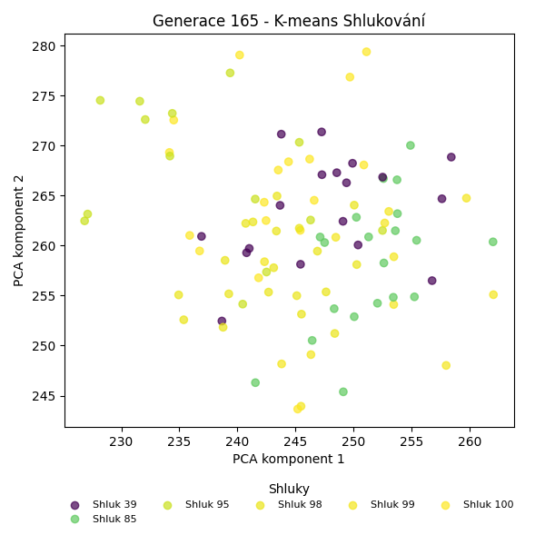
Stabilita mezi generací 164 → 165:
Shluk 90 → 39: 6 jedinců (46.2 %)
Shluk 90 → 85: 5 jedinců (38.5 %)
Shluk 90 → 99: 1 jedinců (7.7 %)
Shluk 90 → 100: 1 jedinců (7.7 %)
Shluk 85 → 100: 4 jedinců (21.1 %)
Shluk 85 → 85: 8 jedinců (42.1 %)
Shluk 85 → 95: 5 jedinců (26.3 %)
Shluk 85 → 98: 2 jedinců (10.5 %)
Shluk 39 → 39: 8 jedinců (44.4 %)
Shluk 39 → 99: 6 jedinců (33.3 %)
Shluk 39 → 100: 2 jedinců (11.1 %)
Shluk 39 → 85: 2 jedinců (11.1 %)
Shluk 95 → 100: 6 jedinců (42.9 %)
Shluk 95 → 95: 7 jedinců (50.0 %)
Shluk 95 → 85: 1 jedinců (7.1 %)
Shluk 98 → 98: 15 jedinců (68.2 %)
Shluk 98 → 99: 1 jedinců (4.5 %)
Shluk 98 → 39: 2 jedinců (9.1 %)
Shluk 98 → 95: 1 jedinců (4.5 %)
Shluk 98 → 85: 2 jedinců (9.1 %)
Shluk 98 → 100: 1 jedinců (4.5 %)
Shluk 99 → 99: 4 jedinců (28.6 %)
Shluk 99 → 98: 2 jedinců (14.3 %)
Shluk 99 → 100: 3 jedinců (21.4 %)
Shluk 99 → 85: 2 jedinců (14.3 %)
Shluk 99 → 95: 1 jedinců (7.1 %)
Shluk 99 → 39: 2 jedinců (14.3 %)
Jaccardovo mapování a overlap: Generace 164 → 165
- Cluster 90 → 39 (Jaccard: 0.24, Overlap: 0.46)
- Cluster 85 → 85 (Jaccard: 0.26, Overlap: 0.42)
- Cluster 39 → 39 (Jaccard: 0.29, Overlap: 0.44)
- Cluster 95 → 95 (Jaccard: 0.33, Overlap: 0.50)
- Cluster 98 → 98 (Jaccard: 0.58, Overlap: 0.79)
- Cluster 99 → 99 (Jaccard: 0.18, Overlap: 0.33)
Posun centroidů mezi generací 164 → 165:
- Shluk 0: 10.3536
- Shluk 1: 11.4483
- Shluk 2: 27.3443
- Shluk 3: 22.3827
- Shluk 4: 21.8752
- Shluk 5: 17.4707
Generace 166
Stabilita mezi generací 165 → 166:
Shluk 39 → 101: 3 jedinců (16.7 %)
Shluk 39 → 39: 9 jedinců (50.0 %)
Shluk 39 → 98: 2 jedinců (11.1 %)
Shluk 39 → 95: 2 jedinců (11.1 %)
Shluk 39 → 100: 2 jedinců (11.1 %)
Shluk 100 → 100: 9 jedinců (52.9 %)
Shluk 100 → 101: 2 jedinců (11.8 %)
Shluk 100 → 39: 3 jedinců (17.6 %)
Shluk 100 → 98: 2 jedinců (11.8 %)
Shluk 100 → 95: 1 jedinců (5.9 %)
Shluk 85 → 98: 4 jedinců (20.0 %)
Shluk 85 → 39: 4 jedinců (20.0 %)
Shluk 85 → 95: 2 jedinců (10.0 %)
Shluk 85 → 99: 7 jedinců (35.0 %)
Shluk 85 → 101: 3 jedinců (15.0 %)
Shluk 98 → 101: 7 jedinců (36.8 %)
Shluk 98 → 98: 8 jedinců (42.1 %)
Shluk 98 → 95: 4 jedinců (21.1 %)
Shluk 99 → 99: 10 jedinců (83.3 %)
Shluk 99 → 101: 2 jedinců (16.7 %)
Shluk 95 → 95: 5 jedinců (35.7 %)
Shluk 95 → 39: 3 jedinců (21.4 %)
Shluk 95 → 100: 4 jedinců (28.6 %)
Shluk 95 → 98: 2 jedinců (14.3 %)
Jaccardovo mapování a overlap: Generace 165 → 166
- Cluster 39 → 39 (Jaccard: 0.32, Overlap: 0.50)
- Cluster 100 → 100 (Jaccard: 0.39, Overlap: 0.60)
- Cluster 85 → 99 (Jaccard: 0.23, Overlap: 0.41)
- Cluster 98 → 98 (Jaccard: 0.28, Overlap: 0.44)
- Cluster 99 → 99 (Jaccard: 0.53, Overlap: 0.83)
- Cluster 95 → 95 (Jaccard: 0.22, Overlap: 0.36)
Posun centroidů mezi generací 165 → 166:
- Shluk 0: 8.8041
- Shluk 1: 17.5440
- Shluk 2: 18.7099
- Shluk 3: 22.6269
- Shluk 4: 27.4973
- Shluk 5: 21.2597
Generace 167
Stabilita mezi generací 166 → 167:
Shluk 101 → 101: 10 jedinců (58.8 %)
Shluk 101 → 98: 4 jedinců (23.5 %)
Shluk 101 → 95: 2 jedinců (11.8 %)
Shluk 101 → 100: 1 jedinců (5.9 %)
Shluk 100 → 100: 5 jedinců (33.3 %)
Shluk 100 → 99: 1 jedinců (6.7 %)
Shluk 100 → 101: 4 jedinců (26.7 %)
Shluk 100 → 102: 5 jedinců (33.3 %)
Shluk 39 → 95: 6 jedinců (31.6 %)
Shluk 39 → 102: 5 jedinců (26.3 %)
Shluk 39 → 101: 4 jedinců (21.1 %)
Shluk 39 → 100: 2 jedinců (10.5 %)
Shluk 39 → 99: 1 jedinců (5.3 %)
Shluk 39 → 98: 1 jedinců (5.3 %)
Shluk 98 → 100: 2 jedinců (11.1 %)
Shluk 98 → 98: 13 jedinců (72.2 %)
Shluk 98 → 101: 2 jedinců (11.1 %)
Shluk 98 → 102: 1 jedinců (5.6 %)
Shluk 99 → 99: 12 jedinců (70.6 %)
Shluk 99 → 95: 1 jedinců (5.9 %)
Shluk 99 → 100: 3 jedinců (17.6 %)
Shluk 99 → 102: 1 jedinců (5.9 %)
Shluk 95 → 95: 7 jedinců (50.0 %)
Shluk 95 → 98: 6 jedinců (42.9 %)
Shluk 95 → 102: 1 jedinců (7.1 %)
Jaccardovo mapování a overlap: Generace 166 → 167
- Cluster 101 → 101 (Jaccard: 0.37, Overlap: 0.59)
- Cluster 100 → 100 (Jaccard: 0.22, Overlap: 0.38)
- Cluster 39 → 95 (Jaccard: 0.21, Overlap: 0.38)
- Cluster 98 → 98 (Jaccard: 0.45, Overlap: 0.72)
- Cluster 99 → 99 (Jaccard: 0.63, Overlap: 0.86)
- Cluster 95 → 95 (Jaccard: 0.30, Overlap: 0.50)
Posun centroidů mezi generací 166 → 167:
- Shluk 0: 11.1395
- Shluk 1: 12.2667
- Shluk 2: 22.0698
- Shluk 3: 21.4070
- Shluk 4: 18.4923
- Shluk 5: 25.0639
Generace 168

Stabilita mezi generací 167 → 168:
Shluk 101 → 99: 4 jedinců (20.0 %)
Shluk 101 → 101: 8 jedinců (40.0 %)
Shluk 101 → 95: 2 jedinců (10.0 %)
Shluk 101 → 103: 4 jedinců (20.0 %)
Shluk 101 → 98: 2 jedinců (10.0 %)
Shluk 100 → 101: 1 jedinců (7.7 %)
Shluk 100 → 95: 4 jedinců (30.8 %)
Shluk 100 → 100: 7 jedinců (53.8 %)
Shluk 100 → 98: 1 jedinců (7.7 %)
Shluk 95 → 101: 1 jedinců (6.2 %)
Shluk 95 → 100: 3 jedinců (18.8 %)
Shluk 95 → 98: 4 jedinců (25.0 %)
Shluk 95 → 103: 1 jedinců (6.2 %)
Shluk 95 → 99: 3 jedinců (18.8 %)
Shluk 95 → 95: 4 jedinců (25.0 %)
Shluk 99 → 100: 3 jedinců (21.4 %)
Shluk 99 → 103: 3 jedinců (21.4 %)
Shluk 99 → 98: 1 jedinců (7.1 %)
Shluk 99 → 101: 2 jedinců (14.3 %)
Shluk 99 → 99: 4 jedinců (28.6 %)
Shluk 99 → 95: 1 jedinců (7.1 %)
Shluk 98 → 98: 14 jedinců (58.3 %)
Shluk 98 → 95: 3 jedinců (12.5 %)
Shluk 98 → 103: 3 jedinců (12.5 %)
Shluk 98 → 99: 2 jedinců (8.3 %)
Shluk 98 → 100: 2 jedinců (8.3 %)
Shluk 102 → 100: 4 jedinců (30.8 %)
Shluk 102 → 98: 1 jedinců (7.7 %)
Shluk 102 → 101: 5 jedinců (38.5 %)
Shluk 102 → 95: 2 jedinců (15.4 %)
Shluk 102 → 99: 1 jedinců (7.7 %)
Jaccardovo mapování a overlap: Generace 167 → 168
- Cluster 101 → 101 (Jaccard: 0.28, Overlap: 0.47)
- Cluster 100 → 100 (Jaccard: 0.28, Overlap: 0.54)
- Cluster 95 → 95 (Jaccard: 0.14, Overlap: 0.25)
- Cluster 99 → 99 (Jaccard: 0.17, Overlap: 0.29)
- Cluster 98 → 98 (Jaccard: 0.42, Overlap: 0.61)
- Cluster 102 → 101 (Jaccard: 0.20, Overlap: 0.38)
Posun centroidů mezi generací 167 → 168:
- Shluk 0: 15.0659
- Shluk 1: 7.0220
- Shluk 2: 14.8707
- Shluk 3: 11.4600
- Shluk 4: 9.8664
- Shluk 5: 22.0136
Generace 169
Stabilita mezi generací 168 → 169:
Shluk 99 → 98: 2 jedinců (14.3 %)
Shluk 99 → 99: 8 jedinců (57.1 %)
Shluk 99 → 101: 2 jedinců (14.3 %)
Shluk 99 → 95: 2 jedinců (14.3 %)
Shluk 101 → 101: 12 jedinců (70.6 %)
Shluk 101 → 95: 2 jedinců (11.8 %)
Shluk 101 → 98: 1 jedinců (5.9 %)
Shluk 101 → 104: 2 jedinců (11.8 %)
Shluk 95 → 104: 4 jedinců (25.0 %)
Shluk 95 → 95: 5 jedinců (31.2 %)
Shluk 95 → 103: 1 jedinců (6.2 %)
Shluk 95 → 99: 1 jedinců (6.2 %)
Shluk 95 → 98: 3 jedinců (18.8 %)
Shluk 95 → 101: 2 jedinců (12.5 %)
Shluk 100 → 99: 7 jedinců (36.8 %)
Shluk 100 → 103: 2 jedinců (10.5 %)
Shluk 100 → 101: 2 jedinců (10.5 %)
Shluk 100 → 104: 6 jedinců (31.6 %)
Shluk 100 → 95: 2 jedinců (10.5 %)
Shluk 98 → 98: 13 jedinců (56.5 %)
Shluk 98 → 104: 2 jedinců (8.7 %)
Shluk 98 → 103: 5 jedinců (21.7 %)
Shluk 98 → 95: 3 jedinců (13.0 %)
Shluk 103 → 95: 2 jedinců (18.2 %)
Shluk 103 → 103: 7 jedinců (63.6 %)
Shluk 103 → 99: 1 jedinců (9.1 %)
Shluk 103 → 98: 1 jedinců (9.1 %)
Jaccardovo mapování a overlap: Generace 168 → 169
- Cluster 99 → 99 (Jaccard: 0.35, Overlap: 0.57)
- Cluster 101 → 101 (Jaccard: 0.52, Overlap: 0.71)
- Cluster 95 → 95 (Jaccard: 0.19, Overlap: 0.31)
- Cluster 100 → 99 (Jaccard: 0.24, Overlap: 0.41)
- Cluster 98 → 98 (Jaccard: 0.43, Overlap: 0.65)
- Cluster 103 → 103 (Jaccard: 0.37, Overlap: 0.64)
Posun centroidů mezi generací 168 → 169:
- Shluk 0: 12.1040
- Shluk 1: 5.0716
- Shluk 2: 8.7179
- Shluk 3: 16.6902
- Shluk 4: 19.3982
- Shluk 5: 17.7374
Generace 170
Stabilita mezi generací 169 → 170:
Shluk 98 → 105: 5 jedinců (25.0 %)
Shluk 98 → 103: 4 jedinců (20.0 %)
Shluk 98 → 98: 8 jedinců (40.0 %)
Shluk 98 → 95: 2 jedinců (10.0 %)
Shluk 98 → 101: 1 jedinců (5.0 %)
Shluk 101 → 101: 11 jedinců (61.1 %)
Shluk 101 → 98: 3 jedinců (16.7 %)
Shluk 101 → 105: 2 jedinců (11.1 %)
Shluk 101 → 95: 1 jedinců (5.6 %)
Shluk 101 → 104: 1 jedinců (5.6 %)
Shluk 104 → 104: 8 jedinců (57.1 %)
Shluk 104 → 98: 3 jedinců (21.4 %)
Shluk 104 → 105: 1 jedinců (7.1 %)
Shluk 104 → 95: 1 jedinců (7.1 %)
Shluk 104 → 101: 1 jedinců (7.1 %)
Shluk 99 → 104: 8 jedinců (47.1 %)
Shluk 99 → 105: 4 jedinců (23.5 %)
Shluk 99 → 103: 1 jedinců (5.9 %)
Shluk 99 → 98: 1 jedinců (5.9 %)
Shluk 99 → 95: 2 jedinců (11.8 %)
Shluk 99 → 101: 1 jedinců (5.9 %)
Shluk 103 → 103: 13 jedinců (86.7 %)
Shluk 103 → 105: 1 jedinců (6.7 %)
Shluk 103 → 101: 1 jedinců (6.7 %)
Shluk 95 → 103: 1 jedinců (6.2 %)
Shluk 95 → 95: 11 jedinců (68.8 %)
Shluk 95 → 104: 3 jedinců (18.8 %)
Shluk 95 → 101: 1 jedinců (6.2 %)
Jaccardovo mapování a overlap: Generace 169 → 170
- Cluster 98 → 98 (Jaccard: 0.30, Overlap: 0.53)
- Cluster 101 → 101 (Jaccard: 0.48, Overlap: 0.69)
- Cluster 104 → 104 (Jaccard: 0.31, Overlap: 0.57)
- Cluster 99 → 104 (Jaccard: 0.28, Overlap: 0.47)
- Cluster 103 → 103 (Jaccard: 0.62, Overlap: 0.87)
- Cluster 95 → 95 (Jaccard: 0.50, Overlap: 0.69)
Posun centroidů mezi generací 169 → 170:
- Shluk 0: 7.2489
- Shluk 1: 9.2676
- Shluk 2: 17.0586
- Shluk 3: 17.1571
- Shluk 4: 16.5971
- Shluk 5: 16.2299
Generace 171
Stabilita mezi generací 170 → 171:
Shluk 105 → 105: 8 jedinců (61.5 %)
Shluk 105 → 98: 2 jedinců (15.4 %)
Shluk 105 → 95: 2 jedinců (15.4 %)
Shluk 105 → 106: 1 jedinců (7.7 %)
Shluk 101 → 106: 5 jedinců (31.2 %)
Shluk 101 → 103: 2 jedinců (12.5 %)
Shluk 101 → 101: 8 jedinců (50.0 %)
Shluk 101 → 105: 1 jedinců (6.2 %)
Shluk 104 → 106: 5 jedinců (25.0 %)
Shluk 104 → 105: 5 jedinců (25.0 %)
Shluk 104 → 103: 5 jedinců (25.0 %)
Shluk 104 → 95: 2 jedinců (10.0 %)
Shluk 104 → 98: 1 jedinců (5.0 %)
Shluk 104 → 101: 2 jedinců (10.0 %)
Shluk 103 → 103: 9 jedinců (47.4 %)
Shluk 103 → 106: 5 jedinců (26.3 %)
Shluk 103 → 105: 2 jedinců (10.5 %)
Shluk 103 → 98: 1 jedinců (5.3 %)
Shluk 103 → 95: 2 jedinců (10.5 %)
Shluk 95 → 103: 9 jedinců (52.9 %)
Shluk 95 → 95: 7 jedinců (41.2 %)
Shluk 95 → 101: 1 jedinců (5.9 %)
Shluk 98 → 98: 9 jedinců (60.0 %)
Shluk 98 → 101: 3 jedinců (20.0 %)
Shluk 98 → 106: 1 jedinců (6.7 %)
Shluk 98 → 95: 2 jedinců (13.3 %)
Jaccardovo mapování a overlap: Generace 170 → 171
- Cluster 105 → 105 (Jaccard: 0.38, Overlap: 0.62)
- Cluster 101 → 101 (Jaccard: 0.36, Overlap: 0.57)
- Cluster 104 → 105 (Jaccard: 0.16, Overlap: 0.31)
- Cluster 103 → 103 (Jaccard: 0.26, Overlap: 0.47)
- Cluster 95 → 95 (Jaccard: 0.28, Overlap: 0.47)
- Cluster 98 → 98 (Jaccard: 0.47, Overlap: 0.69)
Posun centroidů mezi generací 170 → 171:
- Shluk 0: 8.6212
- Shluk 1: 5.9589
- Shluk 2: 6.1185
- Shluk 3: 8.3323
- Shluk 4: 14.3097
- Shluk 5: 15.1201
Generace 172
Stabilita mezi generací 171 → 172:
Shluk 105 → 98: 7 jedinců (43.8 %)
Shluk 105 → 95: 4 jedinců (25.0 %)
Shluk 105 → 107: 1 jedinců (6.2 %)
Shluk 105 → 101: 2 jedinců (12.5 %)
Shluk 105 → 108: 2 jedinců (12.5 %)
Shluk 106 → 107: 4 jedinců (23.5 %)
Shluk 106 → 101: 5 jedinců (29.4 %)
Shluk 106 → 103: 5 jedinců (29.4 %)
Shluk 106 → 108: 2 jedinců (11.8 %)
Shluk 106 → 98: 1 jedinců (5.9 %)
Shluk 103 → 103: 7 jedinců (28.0 %)
Shluk 103 → 107: 4 jedinců (16.0 %)
Shluk 103 → 98: 2 jedinců (8.0 %)
Shluk 103 → 95: 5 jedinců (20.0 %)
Shluk 103 → 108: 7 jedinců (28.0 %)
Shluk 95 → 108: 2 jedinců (13.3 %)
Shluk 95 → 98: 3 jedinců (20.0 %)
Shluk 95 → 95: 7 jedinců (46.7 %)
Shluk 95 → 101: 1 jedinců (6.7 %)
Shluk 95 → 107: 1 jedinců (6.7 %)
Shluk 95 → 103: 1 jedinců (6.7 %)
Shluk 98 → 98: 7 jedinců (53.8 %)
Shluk 98 → 107: 4 jedinců (30.8 %)
Shluk 98 → 95: 2 jedinců (15.4 %)
Shluk 101 → 101: 7 jedinců (50.0 %)
Shluk 101 → 95: 2 jedinců (14.3 %)
Shluk 101 → 108: 5 jedinců (35.7 %)
Jaccardovo mapování a overlap: Generace 171 → 172
- Cluster 105 → 98 (Jaccard: 0.24, Overlap: 0.44)
- Cluster 106 → 103 (Jaccard: 0.20, Overlap: 0.38)
- Cluster 103 → 103 (Jaccard: 0.23, Overlap: 0.54)
- Cluster 95 → 95 (Jaccard: 0.25, Overlap: 0.47)
- Cluster 98 → 98 (Jaccard: 0.27, Overlap: 0.54)
- Cluster 101 → 101 (Jaccard: 0.32, Overlap: 0.50)
Posun centroidů mezi generací 171 → 172:
- Shluk 0: 8.6892
- Shluk 1: 7.3982
- Shluk 2: 7.2214
- Shluk 3: 12.9657
- Shluk 4: 14.8803
- Shluk 5: 12.7303
Generace 173
Stabilita mezi generací 172 → 173:
Shluk 98 → 108: 2 jedinců (10.0 %)
Shluk 98 → 109: 6 jedinců (30.0 %)
Shluk 98 → 103: 2 jedinců (10.0 %)
Shluk 98 → 98: 8 jedinců (40.0 %)
Shluk 98 → 107: 2 jedinců (10.0 %)
Shluk 107 → 107: 11 jedinců (78.6 %)
Shluk 107 → 98: 1 jedinců (7.1 %)
Shluk 107 → 109: 1 jedinců (7.1 %)
Shluk 107 → 101: 1 jedinců (7.1 %)
Shluk 103 → 107: 2 jedinců (15.4 %)
Shluk 103 → 103: 7 jedinců (53.8 %)
Shluk 103 → 108: 2 jedinců (15.4 %)
Shluk 103 → 98: 1 jedinců (7.7 %)
Shluk 103 → 109: 1 jedinců (7.7 %)
Shluk 101 → 101: 11 jedinců (73.3 %)
Shluk 101 → 107: 4 jedinců (26.7 %)
Shluk 95 → 108: 1 jedinců (5.0 %)
Shluk 95 → 109: 6 jedinců (30.0 %)
Shluk 95 → 98: 3 jedinců (15.0 %)
Shluk 95 → 103: 8 jedinců (40.0 %)
Shluk 95 → 101: 1 jedinců (5.0 %)
Shluk 95 → 107: 1 jedinců (5.0 %)
Shluk 108 → 107: 4 jedinců (22.2 %)
Shluk 108 → 108: 10 jedinců (55.6 %)
Shluk 108 → 103: 2 jedinců (11.1 %)
Shluk 108 → 98: 1 jedinců (5.6 %)
Shluk 108 → 109: 1 jedinců (5.6 %)
Jaccardovo mapování a overlap: Generace 172 → 173
- Cluster 98 → 98 (Jaccard: 0.31, Overlap: 0.57)
- Cluster 107 → 107 (Jaccard: 0.41, Overlap: 0.79)
- Cluster 103 → 103 (Jaccard: 0.28, Overlap: 0.54)
- Cluster 101 → 101 (Jaccard: 0.65, Overlap: 0.85)
- Cluster 95 → 103 (Jaccard: 0.26, Overlap: 0.42)
- Cluster 108 → 108 (Jaccard: 0.43, Overlap: 0.67)
Posun centroidů mezi generací 172 → 173:
- Shluk 0: 10.7924
- Shluk 1: 15.1399
- Shluk 2: 13.5351
- Shluk 3: 14.7032
- Shluk 4: 16.1073
- Shluk 5: 15.0554
Generace 174
Stabilita mezi generací 173 → 174:
Shluk 108 → 108: 13 jedinců (86.7 %)
Shluk 108 → 101: 2 jedinců (13.3 %)
Shluk 107 → 110: 7 jedinců (29.2 %)
Shluk 107 → 108: 2 jedinců (8.3 %)
Shluk 107 → 107: 8 jedinců (33.3 %)
Shluk 107 → 109: 3 jedinců (12.5 %)
Shluk 107 → 98: 1 jedinců (4.2 %)
Shluk 107 → 101: 3 jedinců (12.5 %)
Shluk 101 → 101: 10 jedinců (76.9 %)
Shluk 101 → 110: 1 jedinců (7.7 %)
Shluk 101 → 98: 1 jedinců (7.7 %)
Shluk 101 → 107: 1 jedinců (7.7 %)
Shluk 109 → 98: 3 jedinců (20.0 %)
Shluk 109 → 109: 7 jedinců (46.7 %)
Shluk 109 → 110: 4 jedinců (26.7 %)
Shluk 109 → 107: 1 jedinců (6.7 %)
Shluk 103 → 101: 3 jedinců (15.8 %)
Shluk 103 → 98: 5 jedinců (26.3 %)
Shluk 103 → 110: 2 jedinců (10.5 %)
Shluk 103 → 107: 1 jedinců (5.3 %)
Shluk 103 → 108: 1 jedinců (5.3 %)
Shluk 103 → 109: 7 jedinců (36.8 %)
Shluk 98 → 109: 3 jedinců (21.4 %)
Shluk 98 → 110: 4 jedinců (28.6 %)
Shluk 98 → 98: 4 jedinců (28.6 %)
Shluk 98 → 108: 1 jedinců (7.1 %)
Shluk 98 → 107: 1 jedinců (7.1 %)
Shluk 98 → 101: 1 jedinců (7.1 %)
Jaccardovo mapování a overlap: Generace 173 → 174
- Cluster 108 → 108 (Jaccard: 0.68, Overlap: 0.87)
- Cluster 107 → 107 (Jaccard: 0.29, Overlap: 0.67)
- Cluster 101 → 101 (Jaccard: 0.45, Overlap: 0.77)
- Cluster 109 → 109 (Jaccard: 0.25, Overlap: 0.47)
- Cluster 103 → 109 (Jaccard: 0.22, Overlap: 0.37)
- Cluster 98 → 98 (Jaccard: 0.17, Overlap: 0.29)
Posun centroidů mezi generací 173 → 174:
- Shluk 0: 10.7172
- Shluk 1: 4.3901
- Shluk 2: 13.4309
- Shluk 3: 14.0509
- Shluk 4: 11.6420
- Shluk 5: 10.4206
Generace 175
Stabilita mezi generací 174 → 175:
Shluk 108 → 109: 7 jedinců (41.2 %)
Shluk 108 → 101: 4 jedinců (23.5 %)
Shluk 108 → 110: 4 jedinců (23.5 %)
Shluk 108 → 111: 1 jedinců (5.9 %)
Shluk 108 → 107: 1 jedinců (5.9 %)
Shluk 110 → 110: 10 jedinců (55.6 %)
Shluk 110 → 111: 4 jedinců (22.2 %)
Shluk 110 → 107: 1 jedinců (5.6 %)
Shluk 110 → 98: 2 jedinců (11.1 %)
Shluk 110 → 109: 1 jedinců (5.6 %)
Shluk 101 → 101: 7 jedinců (36.8 %)
Shluk 101 → 98: 7 jedinců (36.8 %)
Shluk 101 → 111: 4 jedinců (21.1 %)
Shluk 101 → 110: 1 jedinců (5.3 %)
Shluk 98 → 109: 3 jedinců (21.4 %)
Shluk 98 → 98: 6 jedinců (42.9 %)
Shluk 98 → 101: 1 jedinců (7.1 %)
Shluk 98 → 107: 2 jedinců (14.3 %)
Shluk 98 → 111: 2 jedinců (14.3 %)
Shluk 109 → 98: 1 jedinců (5.0 %)
Shluk 109 → 109: 10 jedinců (50.0 %)
Shluk 109 → 107: 3 jedinců (15.0 %)
Shluk 109 → 101: 4 jedinců (20.0 %)
Shluk 109 → 111: 1 jedinců (5.0 %)
Shluk 109 → 110: 1 jedinců (5.0 %)
Shluk 107 → 107: 11 jedinců (91.7 %)
Shluk 107 → 111: 1 jedinců (8.3 %)
Jaccardovo mapování a overlap: Generace 174 → 175
- Cluster 108 → 109 (Jaccard: 0.23, Overlap: 0.41)
- Cluster 110 → 110 (Jaccard: 0.42, Overlap: 0.62)
- Cluster 101 → 101 (Jaccard: 0.25, Overlap: 0.44)
- Cluster 98 → 98 (Jaccard: 0.25, Overlap: 0.43)
- Cluster 109 → 109 (Jaccard: 0.32, Overlap: 0.50)
- Cluster 107 → 107 (Jaccard: 0.58, Overlap: 0.92)
Posun centroidů mezi generací 174 → 175:
- Shluk 0: 6.6765
- Shluk 1: 10.0633
- Shluk 2: 2.6329
- Shluk 3: 8.2893
- Shluk 4: 11.9789
- Shluk 5: 8.4365
Generace 176
Stabilita mezi generací 175 → 176:
Shluk 109 → 98: 6 jedinců (28.6 %)
Shluk 109 → 110: 2 jedinců (9.5 %)
Shluk 109 → 109: 11 jedinců (52.4 %)
Shluk 109 → 111: 2 jedinců (9.5 %)
Shluk 110 → 112: 4 jedinců (25.0 %)
Shluk 110 → 110: 7 jedinců (43.8 %)
Shluk 110 → 113: 3 jedinců (18.8 %)
Shluk 110 → 98: 1 jedinců (6.2 %)
Shluk 110 → 109: 1 jedinců (6.2 %)
Shluk 111 → 110: 1 jedinců (7.7 %)
Shluk 111 → 111: 6 jedinců (46.2 %)
Shluk 111 → 98: 2 jedinců (15.4 %)
Shluk 111 → 109: 2 jedinců (15.4 %)
Shluk 111 → 112: 2 jedinců (15.4 %)
Shluk 101 → 109: 7 jedinců (43.8 %)
Shluk 101 → 113: 4 jedinců (25.0 %)
Shluk 101 → 98: 5 jedinců (31.2 %)
Shluk 98 → 98: 6 jedinců (37.5 %)
Shluk 98 → 112: 4 jedinců (25.0 %)
Shluk 98 → 109: 2 jedinců (12.5 %)
Shluk 98 → 110: 2 jedinců (12.5 %)
Shluk 98 → 111: 1 jedinců (6.2 %)
Shluk 98 → 113: 1 jedinců (6.2 %)
Shluk 107 → 111: 6 jedinců (33.3 %)
Shluk 107 → 110: 3 jedinců (16.7 %)
Shluk 107 → 112: 5 jedinců (27.8 %)
Shluk 107 → 113: 1 jedinců (5.6 %)
Shluk 107 → 98: 3 jedinců (16.7 %)
Jaccardovo mapování a overlap: Generace 175 → 176
- Cluster 109 → 109 (Jaccard: 0.33, Overlap: 0.52)
- Cluster 110 → 110 (Jaccard: 0.29, Overlap: 0.47)
- Cluster 111 → 111 (Jaccard: 0.27, Overlap: 0.46)
- Cluster 101 → 109 (Jaccard: 0.22, Overlap: 0.44)
- Cluster 98 → 98 (Jaccard: 0.18, Overlap: 0.38)
- Cluster 107 → 111 (Jaccard: 0.22, Overlap: 0.40)
Posun centroidů mezi generací 175 → 176:
- Shluk 0: 7.5160
- Shluk 1: 6.3656
- Shluk 2: 9.2449
- Shluk 3: 12.3104
- Shluk 4: 9.1826
- Shluk 5: 19.3144
Generace 177
Stabilita mezi generací 176 → 177:
Shluk 98 → 111: 4 jedinců (17.4 %)
Shluk 98 → 98: 13 jedinců (56.5 %)
Shluk 98 → 113: 3 jedinců (13.0 %)
Shluk 98 → 112: 1 jedinců (4.3 %)
Shluk 98 → 109: 1 jedinců (4.3 %)
Shluk 98 → 110: 1 jedinců (4.3 %)
Shluk 112 → 111: 3 jedinců (20.0 %)
Shluk 112 → 112: 10 jedinců (66.7 %)
Shluk 112 → 113: 1 jedinců (6.7 %)
Shluk 112 → 109: 1 jedinců (6.7 %)
Shluk 110 → 110: 4 jedinců (26.7 %)
Shluk 110 → 113: 4 jedinců (26.7 %)
Shluk 110 → 111: 3 jedinců (20.0 %)
Shluk 110 → 109: 1 jedinců (6.7 %)
Shluk 110 → 98: 3 jedinců (20.0 %)
Shluk 109 → 111: 5 jedinců (21.7 %)
Shluk 109 → 110: 5 jedinců (21.7 %)
Shluk 109 → 109: 9 jedinců (39.1 %)
Shluk 109 → 112: 3 jedinců (13.0 %)
Shluk 109 → 113: 1 jedinců (4.3 %)
Shluk 113 → 113: 5 jedinců (55.6 %)
Shluk 113 → 109: 3 jedinců (33.3 %)
Shluk 113 → 111: 1 jedinců (11.1 %)
Shluk 111 → 111: 7 jedinců (46.7 %)
Shluk 111 → 110: 4 jedinců (26.7 %)
Shluk 111 → 109: 2 jedinců (13.3 %)
Shluk 111 → 112: 1 jedinců (6.7 %)
Shluk 111 → 113: 1 jedinců (6.7 %)
Jaccardovo mapování a overlap: Generace 176 → 177
- Cluster 98 → 98 (Jaccard: 0.50, Overlap: 0.81)
- Cluster 112 → 112 (Jaccard: 0.50, Overlap: 0.67)
- Cluster 110 → 110 (Jaccard: 0.16, Overlap: 0.29)
- Cluster 109 → 109 (Jaccard: 0.29, Overlap: 0.53)
- Cluster 113 → 113 (Jaccard: 0.26, Overlap: 0.56)
- Cluster 111 → 111 (Jaccard: 0.23, Overlap: 0.47)
Posun centroidů mezi generací 176 → 177:
- Shluk 0: 4.2984
- Shluk 1: 6.0336
- Shluk 2: 9.9288
- Shluk 3: 6.9464
- Shluk 4: 3.8907
- Shluk 5: 7.8917
Generace 178
Stabilita mezi generací 177 → 178:
Shluk 111 → 111: 9 jedinců (39.1 %)
Shluk 111 → 110: 2 jedinců (8.7 %)
Shluk 111 → 114: 4 jedinců (17.4 %)
Shluk 111 → 98: 3 jedinců (13.0 %)
Shluk 111 → 109: 3 jedinců (13.0 %)
Shluk 111 → 113: 2 jedinců (8.7 %)
Shluk 110 → 109: 1 jedinců (7.1 %)
Shluk 110 → 110: 11 jedinců (78.6 %)
Shluk 110 → 113: 2 jedinců (14.3 %)
Shluk 98 → 98: 8 jedinců (50.0 %)
Shluk 98 → 114: 2 jedinců (12.5 %)
Shluk 98 → 111: 3 jedinců (18.8 %)
Shluk 98 → 110: 2 jedinců (12.5 %)
Shluk 98 → 109: 1 jedinců (6.2 %)
Shluk 113 → 110: 4 jedinců (26.7 %)
Shluk 113 → 113: 8 jedinců (53.3 %)
Shluk 113 → 111: 3 jedinců (20.0 %)
Shluk 112 → 98: 2 jedinců (13.3 %)
Shluk 112 → 109: 7 jedinců (46.7 %)
Shluk 112 → 111: 4 jedinců (26.7 %)
Shluk 112 → 110: 2 jedinců (13.3 %)
Shluk 109 → 109: 10 jedinců (58.8 %)
Shluk 109 → 113: 4 jedinců (23.5 %)
Shluk 109 → 110: 2 jedinců (11.8 %)
Shluk 109 → 114: 1 jedinců (5.9 %)
Jaccardovo mapování a overlap: Generace 177 → 178
- Cluster 111 → 111 (Jaccard: 0.27, Overlap: 0.47)
- Cluster 110 → 110 (Jaccard: 0.42, Overlap: 0.79)
- Cluster 98 → 98 (Jaccard: 0.38, Overlap: 0.62)
- Cluster 113 → 113 (Jaccard: 0.35, Overlap: 0.53)
- Cluster 112 → 109 (Jaccard: 0.23, Overlap: 0.47)
- Cluster 109 → 109 (Jaccard: 0.34, Overlap: 0.59)
Posun centroidů mezi generací 177 → 178:
- Shluk 0: 4.6763
- Shluk 1: 5.1509
- Shluk 2: 4.3242
- Shluk 3: 5.8508
- Shluk 4: 12.7141
- Shluk 5: 13.3777
Generace 179

Stabilita mezi generací 178 → 179:
Shluk 111 → 111: 9 jedinců (47.4 %)
Shluk 111 → 113: 1 jedinců (5.3 %)
Shluk 111 → 109: 1 jedinců (5.3 %)
Shluk 111 → 110: 2 jedinců (10.5 %)
Shluk 111 → 114: 1 jedinců (5.3 %)
Shluk 111 → 98: 5 jedinců (26.3 %)
Shluk 109 → 109: 10 jedinců (45.5 %)
Shluk 109 → 98: 7 jedinců (31.8 %)
Shluk 109 → 113: 2 jedinců (9.1 %)
Shluk 109 → 114: 2 jedinců (9.1 %)
Shluk 109 → 111: 1 jedinců (4.5 %)
Shluk 98 → 110: 2 jedinců (15.4 %)
Shluk 98 → 98: 9 jedinců (69.2 %)
Shluk 98 → 109: 1 jedinců (7.7 %)
Shluk 98 → 111: 1 jedinců (7.7 %)
Shluk 110 → 114: 5 jedinců (21.7 %)
Shluk 110 → 110: 11 jedinců (47.8 %)
Shluk 110 → 113: 2 jedinců (8.7 %)
Shluk 110 → 111: 2 jedinců (8.7 %)
Shluk 110 → 98: 3 jedinců (13.0 %)
Shluk 113 → 109: 1 jedinců (6.2 %)
Shluk 113 → 113: 13 jedinců (81.2 %)
Shluk 113 → 110: 1 jedinců (6.2 %)
Shluk 113 → 98: 1 jedinců (6.2 %)
Shluk 114 → 114: 5 jedinců (71.4 %)
Shluk 114 → 98: 1 jedinců (14.3 %)
Shluk 114 → 113: 1 jedinců (14.3 %)
Jaccardovo mapování a overlap: Generace 178 → 179
- Cluster 111 → 111 (Jaccard: 0.39, Overlap: 0.69)
- Cluster 109 → 109 (Jaccard: 0.40, Overlap: 0.77)
- Cluster 98 → 98 (Jaccard: 0.30, Overlap: 0.69)
- Cluster 110 → 110 (Jaccard: 0.39, Overlap: 0.69)
- Cluster 113 → 113 (Jaccard: 0.59, Overlap: 0.81)
- Cluster 114 → 114 (Jaccard: 0.33, Overlap: 0.71)
Posun centroidů mezi generací 178 → 179:
- Shluk 0: 5.0070
- Shluk 1: 3.3235
- Shluk 2: 3.8942
- Shluk 3: 4.6072
- Shluk 4: 1.5247
- Shluk 5: 5.8742
Generace 180
Stabilita mezi generací 179 → 180:
Shluk 111 → 111: 5 jedinců (38.5 %)
Shluk 111 → 115: 2 jedinců (15.4 %)
Shluk 111 → 98: 2 jedinců (15.4 %)
Shluk 111 → 109: 3 jedinců (23.1 %)
Shluk 111 → 113: 1 jedinců (7.7 %)
Shluk 109 → 98: 2 jedinců (15.4 %)
Shluk 109 → 113: 1 jedinců (7.7 %)
Shluk 109 → 109: 8 jedinců (61.5 %)
Shluk 109 → 114: 2 jedinců (15.4 %)
Shluk 113 → 113: 12 jedinců (63.2 %)
Shluk 113 → 98: 2 jedinců (10.5 %)
Shluk 113 → 114: 1 jedinců (5.3 %)
Shluk 113 → 115: 3 jedinců (15.8 %)
Shluk 113 → 111: 1 jedinců (5.3 %)
Shluk 110 → 114: 6 jedinců (37.5 %)
Shluk 110 → 113: 4 jedinců (25.0 %)
Shluk 110 → 111: 1 jedinců (6.2 %)
Shluk 110 → 109: 1 jedinců (6.2 %)
Shluk 110 → 115: 1 jedinců (6.2 %)
Shluk 110 → 98: 3 jedinců (18.8 %)
Shluk 114 → 113: 1 jedinců (7.7 %)
Shluk 114 → 98: 3 jedinců (23.1 %)
Shluk 114 → 114: 7 jedinců (53.8 %)
Shluk 114 → 115: 2 jedinců (15.4 %)
Shluk 98 → 115: 3 jedinců (11.5 %)
Shluk 98 → 109: 8 jedinců (30.8 %)
Shluk 98 → 98: 9 jedinců (34.6 %)
Shluk 98 → 111: 5 jedinců (19.2 %)
Shluk 98 → 113: 1 jedinců (3.8 %)
Jaccardovo mapování a overlap: Generace 179 → 180
- Cluster 111 → 111 (Jaccard: 0.25, Overlap: 0.42)
- Cluster 109 → 109 (Jaccard: 0.32, Overlap: 0.62)
- Cluster 113 → 113 (Jaccard: 0.44, Overlap: 0.63)
- Cluster 110 → 114 (Jaccard: 0.23, Overlap: 0.38)
- Cluster 114 → 114 (Jaccard: 0.32, Overlap: 0.54)
- Cluster 98 → 98 (Jaccard: 0.24, Overlap: 0.43)
Posun centroidů mezi generací 179 → 180:
- Shluk 0: 4.6552
- Shluk 1: 5.8916
- Shluk 2: 8.7431
- Shluk 3: 8.8700
- Shluk 4: 9.0970
- Shluk 5: 8.7843
Generace 181
Stabilita mezi generací 180 → 181:
Shluk 111 → 111: 3 jedinců (25.0 %)
Shluk 111 → 114: 3 jedinců (25.0 %)
Shluk 111 → 98: 2 jedinců (16.7 %)
Shluk 111 → 113: 2 jedinců (16.7 %)
Shluk 111 → 116: 2 jedinců (16.7 %)
Shluk 115 → 116: 1 jedinců (9.1 %)
Shluk 115 → 113: 5 jedinců (45.5 %)
Shluk 115 → 109: 2 jedinců (18.2 %)
Shluk 115 → 114: 1 jedinců (9.1 %)
Shluk 115 → 98: 1 jedinců (9.1 %)
Shluk 115 → 111: 1 jedinců (9.1 %)
Shluk 98 → 116: 2 jedinců (9.5 %)
Shluk 98 → 113: 4 jedinců (19.0 %)
Shluk 98 → 98: 12 jedinců (57.1 %)
Shluk 98 → 111: 3 jedinců (14.3 %)
Shluk 113 → 116: 4 jedinců (20.0 %)
Shluk 113 → 111: 2 jedinců (10.0 %)
Shluk 113 → 98: 2 jedinců (10.0 %)
Shluk 113 → 113: 11 jedinců (55.0 %)
Shluk 113 → 114: 1 jedinců (5.0 %)
Shluk 114 → 114: 10 jedinců (62.5 %)
Shluk 114 → 113: 3 jedinců (18.8 %)
Shluk 114 → 109: 1 jedinců (6.2 %)
Shluk 114 → 98: 1 jedinců (6.2 %)
Shluk 114 → 111: 1 jedinců (6.2 %)
Shluk 109 → 116: 5 jedinců (25.0 %)
Shluk 109 → 111: 6 jedinců (30.0 %)
Shluk 109 → 114: 3 jedinců (15.0 %)
Shluk 109 → 109: 6 jedinců (30.0 %)
Jaccardovo mapování a overlap: Generace 180 → 181
- Cluster 111 → 111 (Jaccard: 0.12, Overlap: 0.25)
- Cluster 115 → 113 (Jaccard: 0.16, Overlap: 0.45)
- Cluster 98 → 98 (Jaccard: 0.44, Overlap: 0.67)
- Cluster 113 → 113 (Jaccard: 0.32, Overlap: 0.55)
- Cluster 114 → 114 (Jaccard: 0.42, Overlap: 0.62)
- Cluster 109 → 109 (Jaccard: 0.26, Overlap: 0.67)
Posun centroidů mezi generací 180 → 181:
- Shluk 0: 2.7464
- Shluk 1: 5.3209
- Shluk 2: 6.6980
- Shluk 3: 3.6804
- Shluk 4: 2.9545
- Shluk 5: 10.7361
Generace 182
Stabilita mezi generací 181 → 182:
Shluk 111 → 111: 3 jedinců (18.8 %)
Shluk 111 → 109: 3 jedinců (18.8 %)
Shluk 111 → 116: 3 jedinců (18.8 %)
Shluk 111 → 98: 4 jedinců (25.0 %)
Shluk 111 → 113: 2 jedinců (12.5 %)
Shluk 111 → 114: 1 jedinců (6.2 %)
Shluk 116 → 116: 7 jedinců (50.0 %)
Shluk 116 → 113: 2 jedinců (14.3 %)
Shluk 116 → 98: 3 jedinců (21.4 %)
Shluk 116 → 114: 2 jedinců (14.3 %)
Shluk 114 → 114: 10 jedinců (55.6 %)
Shluk 114 → 111: 2 jedinců (11.1 %)
Shluk 114 → 113: 3 jedinců (16.7 %)
Shluk 114 → 116: 2 jedinců (11.1 %)
Shluk 114 → 98: 1 jedinců (5.6 %)
Shluk 113 → 113: 20 jedinců (80.0 %)
Shluk 113 → 111: 2 jedinců (8.0 %)
Shluk 113 → 98: 1 jedinců (4.0 %)
Shluk 113 → 116: 1 jedinců (4.0 %)
Shluk 113 → 109: 1 jedinců (4.0 %)
Shluk 109 → 109: 6 jedinců (66.7 %)
Shluk 109 → 116: 1 jedinců (11.1 %)
Shluk 109 → 111: 1 jedinců (11.1 %)
Shluk 109 → 98: 1 jedinců (11.1 %)
Shluk 98 → 113: 2 jedinců (11.1 %)
Shluk 98 → 116: 2 jedinců (11.1 %)
Shluk 98 → 98: 8 jedinců (44.4 %)
Shluk 98 → 109: 6 jedinců (33.3 %)
Jaccardovo mapování a overlap: Generace 181 → 182
- Cluster 111 → 111 (Jaccard: 0.14, Overlap: 0.38)
- Cluster 116 → 116 (Jaccard: 0.30, Overlap: 0.50)
- Cluster 114 → 114 (Jaccard: 0.48, Overlap: 0.77)
- Cluster 113 → 113 (Jaccard: 0.59, Overlap: 0.80)
- Cluster 109 → 109 (Jaccard: 0.32, Overlap: 0.67)
- Cluster 98 → 98 (Jaccard: 0.29, Overlap: 0.44)
Posun centroidů mezi generací 181 → 182:
- Shluk 0: 5.1762
- Shluk 1: 4.0178
- Shluk 2: 6.5108
- Shluk 3: 1.5366
- Shluk 4: 2.5492
- Shluk 5: 4.6927
Generace 183
Stabilita mezi generací 182 → 183:
Shluk 111 → 113: 1 jedinců (12.5 %)
Shluk 111 → 111: 6 jedinců (75.0 %)
Shluk 111 → 114: 1 jedinců (12.5 %)
Shluk 116 → 116: 10 jedinců (62.5 %)
Shluk 116 → 113: 2 jedinců (12.5 %)
Shluk 116 → 111: 3 jedinců (18.8 %)
Shluk 116 → 114: 1 jedinců (6.2 %)
Shluk 113 → 113: 15 jedinců (51.7 %)
Shluk 113 → 116: 4 jedinců (13.8 %)
Shluk 113 → 111: 8 jedinců (27.6 %)
Shluk 113 → 98: 2 jedinců (6.9 %)
Shluk 98 → 117: 3 jedinců (16.7 %)
Shluk 98 → 116: 2 jedinců (11.1 %)
Shluk 98 → 98: 8 jedinců (44.4 %)
Shluk 98 → 113: 2 jedinců (11.1 %)
Shluk 98 → 111: 1 jedinců (5.6 %)
Shluk 98 → 114: 2 jedinců (11.1 %)
Shluk 114 → 111: 1 jedinců (7.7 %)
Shluk 114 → 116: 1 jedinců (7.7 %)
Shluk 114 → 114: 9 jedinců (69.2 %)
Shluk 114 → 113: 2 jedinců (15.4 %)
Shluk 109 → 117: 4 jedinců (25.0 %)
Shluk 109 → 98: 6 jedinců (37.5 %)
Shluk 109 → 111: 1 jedinců (6.2 %)
Shluk 109 → 113: 2 jedinců (12.5 %)
Shluk 109 → 114: 2 jedinců (12.5 %)
Shluk 109 → 116: 1 jedinců (6.2 %)
Jaccardovo mapování a overlap: Generace 182 → 183
- Cluster 111 → 111 (Jaccard: 0.27, Overlap: 0.75)
- Cluster 116 → 116 (Jaccard: 0.42, Overlap: 0.62)
- Cluster 113 → 113 (Jaccard: 0.39, Overlap: 0.62)
- Cluster 98 → 98 (Jaccard: 0.31, Overlap: 0.50)
- Cluster 114 → 114 (Jaccard: 0.47, Overlap: 0.69)
- Cluster 109 → 98 (Jaccard: 0.23, Overlap: 0.38)
Posun centroidů mezi generací 182 → 183:
- Shluk 0: 3.6579
- Shluk 1: 7.9369
- Shluk 2: 8.4574
- Shluk 3: 7.6924
- Shluk 4: 8.4037
- Shluk 5: 10.2195
Generace 184
Stabilita mezi generací 183 → 184:
Shluk 113 → 113: 8 jedinců (33.3 %)
Shluk 113 → 118: 3 jedinců (12.5 %)
Shluk 113 → 111: 6 jedinců (25.0 %)
Shluk 113 → 119: 6 jedinců (25.0 %)
Shluk 113 → 114: 1 jedinců (4.2 %)
Shluk 116 → 116: 6 jedinců (33.3 %)
Shluk 116 → 114: 5 jedinců (27.8 %)
Shluk 116 → 111: 1 jedinců (5.6 %)
Shluk 116 → 113: 1 jedinců (5.6 %)
Shluk 116 → 118: 5 jedinců (27.8 %)
Shluk 117 → 116: 3 jedinců (42.9 %)
Shluk 117 → 114: 1 jedinců (14.3 %)
Shluk 117 → 113: 2 jedinců (28.6 %)
Shluk 117 → 118: 1 jedinců (14.3 %)
Shluk 111 → 113: 1 jedinců (5.0 %)
Shluk 111 → 114: 5 jedinců (25.0 %)
Shluk 111 → 111: 9 jedinců (45.0 %)
Shluk 111 → 116: 1 jedinců (5.0 %)
Shluk 111 → 119: 4 jedinců (20.0 %)
Shluk 98 → 116: 4 jedinců (25.0 %)
Shluk 98 → 114: 1 jedinců (6.2 %)
Shluk 98 → 118: 4 jedinců (25.0 %)
Shluk 98 → 119: 3 jedinců (18.8 %)
Shluk 98 → 113: 3 jedinců (18.8 %)
Shluk 98 → 111: 1 jedinců (6.2 %)
Shluk 114 → 114: 10 jedinců (66.7 %)
Shluk 114 → 118: 3 jedinců (20.0 %)
Shluk 114 → 111: 1 jedinců (6.7 %)
Shluk 114 → 116: 1 jedinců (6.7 %)
Jaccardovo mapování a overlap: Generace 183 → 184
- Cluster 113 → 113 (Jaccard: 0.26, Overlap: 0.53)
- Cluster 116 → 116 (Jaccard: 0.22, Overlap: 0.40)
- Cluster 117 → 116 (Jaccard: 0.16, Overlap: 0.43)
- Cluster 111 → 111 (Jaccard: 0.31, Overlap: 0.50)
- Cluster 98 → 116 (Jaccard: 0.15, Overlap: 0.27)
- Cluster 114 → 114 (Jaccard: 0.36, Overlap: 0.67)
Posun centroidů mezi generací 183 → 184:
- Shluk 0: 9.5943
- Shluk 1: 5.8300
- Shluk 2: 6.9705
- Shluk 3: 8.7969
- Shluk 4: 6.0036
- Shluk 5: 10.2515
Generace 185
Stabilita mezi generací 184 → 185:
Shluk 113 → 111: 6 jedinců (40.0 %)
Shluk 113 → 120: 5 jedinců (33.3 %)
Shluk 113 → 116: 3 jedinců (20.0 %)
Shluk 113 → 114: 1 jedinců (6.7 %)
Shluk 116 → 111: 1 jedinců (6.7 %)
Shluk 116 → 116: 6 jedinců (40.0 %)
Shluk 116 → 118: 7 jedinců (46.7 %)
Shluk 116 → 120: 1 jedinců (6.7 %)
Shluk 118 → 111: 2 jedinců (12.5 %)
Shluk 118 → 120: 1 jedinců (6.2 %)
Shluk 118 → 119: 3 jedinců (18.8 %)
Shluk 118 → 114: 3 jedinců (18.8 %)
Shluk 118 → 118: 5 jedinců (31.2 %)
Shluk 118 → 116: 2 jedinců (12.5 %)
Shluk 114 → 111: 1 jedinců (4.3 %)
Shluk 114 → 119: 5 jedinců (21.7 %)
Shluk 114 → 114: 11 jedinců (47.8 %)
Shluk 114 → 118: 3 jedinců (13.0 %)
Shluk 114 → 116: 1 jedinců (4.3 %)
Shluk 114 → 120: 2 jedinců (8.7 %)
Shluk 111 → 120: 7 jedinců (38.9 %)
Shluk 111 → 118: 3 jedinců (16.7 %)
Shluk 111 → 111: 7 jedinců (38.9 %)
Shluk 111 → 114: 1 jedinců (5.6 %)
Shluk 119 → 119: 9 jedinců (69.2 %)
Shluk 119 → 120: 2 jedinců (15.4 %)
Shluk 119 → 116: 1 jedinců (7.7 %)
Shluk 119 → 114: 1 jedinců (7.7 %)
Jaccardovo mapování a overlap: Generace 184 → 185
- Cluster 113 → 111 (Jaccard: 0.23, Overlap: 0.40)
- Cluster 116 → 116 (Jaccard: 0.27, Overlap: 0.46)
- Cluster 118 → 118 (Jaccard: 0.17, Overlap: 0.31)
- Cluster 114 → 114 (Jaccard: 0.38, Overlap: 0.65)
- Cluster 111 → 111 (Jaccard: 0.25, Overlap: 0.41)
- Cluster 119 → 119 (Jaccard: 0.43, Overlap: 0.69)
Posun centroidů mezi generací 184 → 185:
- Shluk 0: 4.0513
- Shluk 1: 6.4367
- Shluk 2: 7.4898
- Shluk 3: 3.5683
- Shluk 4: 7.6547
- Shluk 5: 6.6599
Generace 186
Stabilita mezi generací 185 → 186:
Shluk 111 → 120: 7 jedinců (41.2 %)
Shluk 111 → 111: 7 jedinců (41.2 %)
Shluk 111 → 114: 1 jedinců (5.9 %)
Shluk 111 → 118: 1 jedinců (5.9 %)
Shluk 111 → 121: 1 jedinců (5.9 %)
Shluk 116 → 121: 2 jedinců (15.4 %)
Shluk 116 → 120: 6 jedinců (46.2 %)
Shluk 116 → 114: 1 jedinců (7.7 %)
Shluk 116 → 119: 1 jedinců (7.7 %)
Shluk 116 → 111: 2 jedinců (15.4 %)
Shluk 116 → 118: 1 jedinců (7.7 %)
Shluk 120 → 121: 2 jedinců (11.1 %)
Shluk 120 → 119: 5 jedinců (27.8 %)
Shluk 120 → 118: 1 jedinců (5.6 %)
Shluk 120 → 114: 1 jedinců (5.6 %)
Shluk 120 → 111: 2 jedinců (11.1 %)
Shluk 120 → 120: 7 jedinců (38.9 %)
Shluk 118 → 118: 8 jedinců (44.4 %)
Shluk 118 → 114: 2 jedinců (11.1 %)
Shluk 118 → 120: 2 jedinců (11.1 %)
Shluk 118 → 111: 5 jedinců (27.8 %)
Shluk 118 → 121: 1 jedinců (5.6 %)
Shluk 119 → 120: 2 jedinců (11.8 %)
Shluk 119 → 111: 3 jedinců (17.6 %)
Shluk 119 → 114: 4 jedinců (23.5 %)
Shluk 119 → 119: 7 jedinců (41.2 %)
Shluk 119 → 118: 1 jedinců (5.9 %)
Shluk 114 → 111: 3 jedinců (17.6 %)
Shluk 114 → 119: 2 jedinců (11.8 %)
Shluk 114 → 114: 9 jedinců (52.9 %)
Shluk 114 → 118: 1 jedinců (5.9 %)
Shluk 114 → 120: 2 jedinců (11.8 %)
Jaccardovo mapování a overlap: Generace 185 → 186
- Cluster 111 → 111 (Jaccard: 0.22, Overlap: 0.41)
- Cluster 116 → 120 (Jaccard: 0.18, Overlap: 0.46)
- Cluster 120 → 120 (Jaccard: 0.19, Overlap: 0.39)
- Cluster 118 → 118 (Jaccard: 0.35, Overlap: 0.62)
- Cluster 119 → 119 (Jaccard: 0.28, Overlap: 0.47)
- Cluster 114 → 114 (Jaccard: 0.35, Overlap: 0.53)
Posun centroidů mezi generací 185 → 186:
- Shluk 0: 4.2095
- Shluk 1: 2.3930
- Shluk 2: 7.2469
- Shluk 3: 6.2764
- Shluk 4: 6.6027
- Shluk 5: 6.6269
Generace 187
Stabilita mezi generací 186 → 187:
Shluk 120 → 120: 20 jedinců (76.9 %)
Shluk 120 → 122: 2 jedinců (7.7 %)
Shluk 120 → 118: 1 jedinců (3.8 %)
Shluk 120 → 119: 2 jedinců (7.7 %)
Shluk 120 → 114: 1 jedinců (3.8 %)
Shluk 111 → 118: 4 jedinců (18.2 %)
Shluk 111 → 120: 4 jedinců (18.2 %)
Shluk 111 → 119: 3 jedinců (13.6 %)
Shluk 111 → 122: 3 jedinců (13.6 %)
Shluk 111 → 111: 6 jedinců (27.3 %)
Shluk 111 → 114: 2 jedinců (9.1 %)
Shluk 121 → 111: 1 jedinců (16.7 %)
Shluk 121 → 120: 2 jedinců (33.3 %)
Shluk 121 → 119: 2 jedinců (33.3 %)
Shluk 121 → 118: 1 jedinců (16.7 %)
Shluk 119 → 114: 5 jedinců (33.3 %)
Shluk 119 → 119: 5 jedinců (33.3 %)
Shluk 119 → 111: 1 jedinců (6.7 %)
Shluk 119 → 118: 2 jedinců (13.3 %)
Shluk 119 → 122: 2 jedinců (13.3 %)
Shluk 118 → 119: 2 jedinců (15.4 %)
Shluk 118 → 118: 6 jedinců (46.2 %)
Shluk 118 → 114: 5 jedinců (38.5 %)
Shluk 114 → 114: 7 jedinců (38.9 %)
Shluk 114 → 122: 4 jedinců (22.2 %)
Shluk 114 → 118: 4 jedinců (22.2 %)
Shluk 114 → 111: 1 jedinců (5.6 %)
Shluk 114 → 120: 2 jedinců (11.1 %)
Jaccardovo mapování a overlap: Generace 186 → 187
- Cluster 120 → 120 (Jaccard: 0.59, Overlap: 0.77)
- Cluster 111 → 111 (Jaccard: 0.24, Overlap: 0.67)
- Cluster 121 → 119 (Jaccard: 0.11, Overlap: 0.33)
- Cluster 119 → 119 (Jaccard: 0.21, Overlap: 0.36)
- Cluster 118 → 118 (Jaccard: 0.24, Overlap: 0.46)
- Cluster 114 → 114 (Jaccard: 0.23, Overlap: 0.39)
Posun centroidů mezi generací 186 → 187:
- Shluk 0: 4.2364
- Shluk 1: 4.0249
- Shluk 2: 4.7062
- Shluk 3: 3.1635
- Shluk 4: 1.0712
- Shluk 5: 8.2152
Generace 188
Stabilita mezi generací 187 → 188:
Shluk 120 → 120: 12 jedinců (42.9 %)
Shluk 120 → 111: 3 jedinců (10.7 %)
Shluk 120 → 119: 12 jedinců (42.9 %)
Shluk 120 → 118: 1 jedinců (3.6 %)
Shluk 118 → 123: 6 jedinců (33.3 %)
Shluk 118 → 118: 7 jedinců (38.9 %)
Shluk 118 → 119: 2 jedinců (11.1 %)
Shluk 118 → 114: 3 jedinců (16.7 %)
Shluk 111 → 111: 5 jedinců (55.6 %)
Shluk 111 → 114: 2 jedinců (22.2 %)
Shluk 111 → 118: 1 jedinců (11.1 %)
Shluk 111 → 123: 1 jedinců (11.1 %)
Shluk 114 → 114: 11 jedinců (55.0 %)
Shluk 114 → 120: 1 jedinců (5.0 %)
Shluk 114 → 119: 3 jedinců (15.0 %)
Shluk 114 → 123: 3 jedinců (15.0 %)
Shluk 114 → 111: 1 jedinců (5.0 %)
Shluk 114 → 118: 1 jedinců (5.0 %)
Shluk 119 → 119: 7 jedinců (50.0 %)
Shluk 119 → 123: 1 jedinců (7.1 %)
Shluk 119 → 114: 2 jedinců (14.3 %)
Shluk 119 → 111: 2 jedinců (14.3 %)
Shluk 119 → 118: 1 jedinců (7.1 %)
Shluk 119 → 120: 1 jedinců (7.1 %)
Shluk 122 → 114: 2 jedinců (18.2 %)
Shluk 122 → 118: 5 jedinců (45.5 %)
Shluk 122 → 123: 3 jedinců (27.3 %)
Shluk 122 → 120: 1 jedinců (9.1 %)
Jaccardovo mapování a overlap: Generace 187 → 188
- Cluster 120 → 120 (Jaccard: 0.39, Overlap: 0.80)
- Cluster 118 → 118 (Jaccard: 0.26, Overlap: 0.44)
- Cluster 111 → 111 (Jaccard: 0.33, Overlap: 0.56)
- Cluster 114 → 114 (Jaccard: 0.38, Overlap: 0.55)
- Cluster 119 → 119 (Jaccard: 0.23, Overlap: 0.50)
- Cluster 122 → 118 (Jaccard: 0.23, Overlap: 0.45)
Posun centroidů mezi generací 187 → 188:
- Shluk 0: 2.9917
- Shluk 1: 1.8211
- Shluk 2: 3.6101
- Shluk 3: 3.5734
- Shluk 4: 2.6723
- Shluk 5: 5.4902
Generace 189
Stabilita mezi generací 188 → 189:
Shluk 120 → 123: 2 jedinců (13.3 %)
Shluk 120 → 120: 8 jedinců (53.3 %)
Shluk 120 → 119: 4 jedinců (26.7 %)
Shluk 120 → 111: 1 jedinců (6.7 %)
Shluk 123 → 123: 5 jedinců (35.7 %)
Shluk 123 → 119: 4 jedinců (28.6 %)
Shluk 123 → 118: 2 jedinců (14.3 %)
Shluk 123 → 114: 2 jedinců (14.3 %)
Shluk 123 → 111: 1 jedinců (7.1 %)
Shluk 111 → 111: 10 jedinců (90.9 %)
Shluk 111 → 118: 1 jedinců (9.1 %)
Shluk 114 → 114: 12 jedinců (60.0 %)
Shluk 114 → 120: 1 jedinců (5.0 %)
Shluk 114 → 118: 4 jedinců (20.0 %)
Shluk 114 → 111: 2 jedinců (10.0 %)
Shluk 114 → 123: 1 jedinců (5.0 %)
Shluk 119 → 119: 12 jedinců (50.0 %)
Shluk 119 → 120: 8 jedinců (33.3 %)
Shluk 119 → 111: 1 jedinců (4.2 %)
Shluk 119 → 123: 1 jedinců (4.2 %)
Shluk 119 → 114: 1 jedinců (4.2 %)
Shluk 119 → 118: 1 jedinců (4.2 %)
Shluk 118 → 123: 2 jedinců (12.5 %)
Shluk 118 → 118: 10 jedinců (62.5 %)
Shluk 118 → 111: 1 jedinců (6.2 %)
Shluk 118 → 120: 3 jedinců (18.8 %)
Jaccardovo mapování a overlap: Generace 188 → 189
- Cluster 120 → 120 (Jaccard: 0.30, Overlap: 0.53)
- Cluster 123 → 123 (Jaccard: 0.25, Overlap: 0.45)
- Cluster 111 → 111 (Jaccard: 0.59, Overlap: 0.91)
- Cluster 114 → 114 (Jaccard: 0.52, Overlap: 0.80)
- Cluster 119 → 119 (Jaccard: 0.38, Overlap: 0.60)
- Cluster 118 → 118 (Jaccard: 0.42, Overlap: 0.62)
Posun centroidů mezi generací 188 → 189:
- Shluk 0: 1.7205
- Shluk 1: 1.1656
- Shluk 2: 2.7451
- Shluk 3: 2.4603
- Shluk 4: 2.8251
- Shluk 5: 2.8680
Generace 190
Stabilita mezi generací 189 → 190:
Shluk 123 → 118: 2 jedinců (18.2 %)
Shluk 123 → 120: 2 jedinců (18.2 %)
Shluk 123 → 123: 7 jedinců (63.6 %)
Shluk 120 → 120: 15 jedinců (75.0 %)
Shluk 120 → 123: 1 jedinců (5.0 %)
Shluk 120 → 114: 4 jedinců (20.0 %)
Shluk 111 → 123: 2 jedinců (12.5 %)
Shluk 111 → 111: 8 jedinců (50.0 %)
Shluk 111 → 114: 4 jedinců (25.0 %)
Shluk 111 → 119: 2 jedinců (12.5 %)
Shluk 119 → 119: 15 jedinců (75.0 %)
Shluk 119 → 114: 1 jedinců (5.0 %)
Shluk 119 → 118: 3 jedinců (15.0 %)
Shluk 119 → 123: 1 jedinců (5.0 %)
Shluk 114 → 114: 5 jedinců (33.3 %)
Shluk 114 → 123: 5 jedinců (33.3 %)
Shluk 114 → 119: 2 jedinců (13.3 %)
Shluk 114 → 118: 3 jedinců (20.0 %)
Shluk 118 → 118: 12 jedinců (66.7 %)
Shluk 118 → 123: 3 jedinců (16.7 %)
Shluk 118 → 120: 2 jedinců (11.1 %)
Shluk 118 → 114: 1 jedinců (5.6 %)
Jaccardovo mapování a overlap: Generace 189 → 190
- Cluster 123 → 123 (Jaccard: 0.30, Overlap: 0.64)
- Cluster 120 → 120 (Jaccard: 0.62, Overlap: 0.79)
- Cluster 111 → 111 (Jaccard: 0.50, Overlap: 1.00)
- Cluster 119 → 119 (Jaccard: 0.62, Overlap: 0.79)
- Cluster 114 → 114 (Jaccard: 0.20, Overlap: 0.33)
- Cluster 118 → 118 (Jaccard: 0.46, Overlap: 0.67)
Posun centroidů mezi generací 189 → 190:
- Shluk 0: 2.3111
- Shluk 1: 2.8719
- Shluk 2: 1.7373
- Shluk 3: 0.7054
- Shluk 4: 1.2593
- Shluk 5: 3.3684
Generace 191
Stabilita mezi generací 190 → 191:
Shluk 118 → 111: 2 jedinců (10.0 %)
Shluk 118 → 118: 14 jedinců (70.0 %)
Shluk 118 → 123: 3 jedinců (15.0 %)
Shluk 118 → 120: 1 jedinců (5.0 %)
Shluk 120 → 120: 16 jedinců (84.2 %)
Shluk 120 → 118: 2 jedinců (10.5 %)
Shluk 120 → 119: 1 jedinců (5.3 %)
Shluk 123 → 118: 3 jedinců (15.8 %)
Shluk 123 → 120: 2 jedinců (10.5 %)
Shluk 123 → 123: 12 jedinců (63.2 %)
Shluk 123 → 111: 2 jedinců (10.5 %)
Shluk 119 → 111: 6 jedinců (31.6 %)
Shluk 119 → 120: 2 jedinců (10.5 %)
Shluk 119 → 123: 1 jedinců (5.3 %)
Shluk 119 → 118: 3 jedinců (15.8 %)
Shluk 119 → 119: 6 jedinců (31.6 %)
Shluk 119 → 114: 1 jedinců (5.3 %)
Shluk 111 → 123: 2 jedinců (25.0 %)
Shluk 111 → 111: 4 jedinců (50.0 %)
Shluk 111 → 114: 2 jedinců (25.0 %)
Shluk 114 → 114: 9 jedinců (60.0 %)
Shluk 114 → 118: 1 jedinců (6.7 %)
Shluk 114 → 111: 3 jedinců (20.0 %)
Shluk 114 → 120: 2 jedinců (13.3 %)
Jaccardovo mapování a overlap: Generace 190 → 191
- Cluster 118 → 118 (Jaccard: 0.48, Overlap: 0.70)
- Cluster 120 → 120 (Jaccard: 0.62, Overlap: 0.84)
- Cluster 123 → 123 (Jaccard: 0.48, Overlap: 0.67)
- Cluster 119 → 119 (Jaccard: 0.30, Overlap: 0.86)
- Cluster 111 → 111 (Jaccard: 0.19, Overlap: 0.50)
- Cluster 114 → 114 (Jaccard: 0.50, Overlap: 0.75)
Posun centroidů mezi generací 190 → 191:
- Shluk 0: 3.5483
- Shluk 1: 2.2994
- Shluk 2: 1.3737
- Shluk 3: 3.4240
- Shluk 4: 0.9776
- Shluk 5: 2.4571
Generace 192
Stabilita mezi generací 191 → 192:
Shluk 111 → 111: 9 jedinců (52.9 %)
Shluk 111 → 119: 3 jedinců (17.6 %)
Shluk 111 → 118: 1 jedinců (5.9 %)
Shluk 111 → 114: 3 jedinců (17.6 %)
Shluk 111 → 120: 1 jedinců (5.9 %)
Shluk 120 → 120: 7 jedinců (30.4 %)
Shluk 120 → 111: 2 jedinců (8.7 %)
Shluk 120 → 119: 8 jedinců (34.8 %)
Shluk 120 → 114: 5 jedinců (21.7 %)
Shluk 120 → 123: 1 jedinců (4.3 %)
Shluk 118 → 118: 16 jedinců (69.6 %)
Shluk 118 → 120: 6 jedinců (26.1 %)
Shluk 118 → 119: 1 jedinců (4.3 %)
Shluk 123 → 123: 12 jedinců (66.7 %)
Shluk 123 → 119: 2 jedinců (11.1 %)
Shluk 123 → 120: 2 jedinců (11.1 %)
Shluk 123 → 118: 1 jedinců (5.6 %)
Shluk 123 → 114: 1 jedinců (5.6 %)
Shluk 114 → 114: 5 jedinců (41.7 %)
Shluk 114 → 120: 1 jedinců (8.3 %)
Shluk 114 → 111: 3 jedinců (25.0 %)
Shluk 114 → 119: 2 jedinců (16.7 %)
Shluk 114 → 123: 1 jedinců (8.3 %)
Shluk 119 → 119: 7 jedinců (100.0 %)
Jaccardovo mapování a overlap: Generace 191 → 192
- Cluster 111 → 111 (Jaccard: 0.41, Overlap: 0.64)
- Cluster 120 → 120 (Jaccard: 0.21, Overlap: 0.41)
- Cluster 118 → 118 (Jaccard: 0.64, Overlap: 0.89)
- Cluster 123 → 123 (Jaccard: 0.60, Overlap: 0.86)
- Cluster 114 → 114 (Jaccard: 0.24, Overlap: 0.42)
- Cluster 119 → 119 (Jaccard: 0.30, Overlap: 1.00)
Posun centroidů mezi generací 191 → 192:
- Shluk 0: 2.6350
- Shluk 1: 2.4189
- Shluk 2: 1.0942
- Shluk 3: 2.4057
- Shluk 4: 3.0183
- Shluk 5: 0.7204
Generace 193
Stabilita mezi generací 192 → 193:
Shluk 111 → 111: 7 jedinců (50.0 %)
Shluk 111 → 124: 1 jedinců (7.1 %)
Shluk 111 → 119: 3 jedinců (21.4 %)
Shluk 111 → 118: 1 jedinců (7.1 %)
Shluk 111 → 114: 2 jedinců (14.3 %)
Shluk 120 → 118: 2 jedinců (11.8 %)
Shluk 120 → 114: 2 jedinců (11.8 %)
Shluk 120 → 120: 6 jedinců (35.3 %)
Shluk 120 → 119: 1 jedinců (5.9 %)
Shluk 120 → 124: 5 jedinců (29.4 %)
Shluk 120 → 111: 1 jedinců (5.9 %)
Shluk 118 → 118: 11 jedinců (61.1 %)
Shluk 118 → 124: 2 jedinců (11.1 %)
Shluk 118 → 120: 4 jedinců (22.2 %)
Shluk 118 → 119: 1 jedinců (5.6 %)
Shluk 119 → 119: 15 jedinců (65.2 %)
Shluk 119 → 114: 5 jedinců (21.7 %)
Shluk 119 → 118: 1 jedinců (4.3 %)
Shluk 119 → 120: 2 jedinců (8.7 %)
Shluk 123 → 119: 5 jedinců (35.7 %)
Shluk 123 → 114: 1 jedinců (7.1 %)
Shluk 123 → 111: 2 jedinců (14.3 %)
Shluk 123 → 124: 1 jedinců (7.1 %)
Shluk 123 → 120: 2 jedinců (14.3 %)
Shluk 123 → 118: 3 jedinců (21.4 %)
Shluk 114 → 111: 2 jedinců (14.3 %)
Shluk 114 → 114: 9 jedinců (64.3 %)
Shluk 114 → 118: 2 jedinců (14.3 %)
Shluk 114 → 119: 1 jedinců (7.1 %)
Jaccardovo mapování a overlap: Generace 192 → 193
- Cluster 111 → 111 (Jaccard: 0.37, Overlap: 0.58)
- Cluster 120 → 120 (Jaccard: 0.24, Overlap: 0.43)
- Cluster 118 → 118 (Jaccard: 0.41, Overlap: 0.61)
- Cluster 119 → 119 (Jaccard: 0.44, Overlap: 0.65)
- Cluster 123 → 119 (Jaccard: 0.14, Overlap: 0.36)
- Cluster 114 → 114 (Jaccard: 0.38, Overlap: 0.64)
Posun centroidů mezi generací 192 → 193:
- Shluk 0: 1.9327
- Shluk 1: 1.8140
- Shluk 2: 2.1407
- Shluk 3: 1.7571
- Shluk 4: 2.7266
- Shluk 5: 5.0701
Generace 194
Stabilita mezi generací 193 → 194:
Shluk 111 → 111: 4 jedinců (33.3 %)
Shluk 111 → 125: 3 jedinců (25.0 %)
Shluk 111 → 114: 2 jedinců (16.7 %)
Shluk 111 → 120: 2 jedinců (16.7 %)
Shluk 111 → 118: 1 jedinců (8.3 %)
Shluk 118 → 118: 13 jedinců (65.0 %)
Shluk 118 → 120: 2 jedinců (10.0 %)
Shluk 118 → 125: 3 jedinců (15.0 %)
Shluk 118 → 111: 1 jedinců (5.0 %)
Shluk 118 → 119: 1 jedinců (5.0 %)
Shluk 119 → 119: 15 jedinců (57.7 %)
Shluk 119 → 118: 6 jedinců (23.1 %)
Shluk 119 → 125: 2 jedinců (7.7 %)
Shluk 119 → 111: 2 jedinců (7.7 %)
Shluk 119 → 114: 1 jedinců (3.8 %)
Shluk 114 → 120: 2 jedinců (10.5 %)
Shluk 114 → 114: 9 jedinců (47.4 %)
Shluk 114 → 119: 6 jedinců (31.6 %)
Shluk 114 → 125: 1 jedinců (5.3 %)
Shluk 114 → 118: 1 jedinců (5.3 %)
Shluk 120 → 119: 7 jedinců (50.0 %)
Shluk 120 → 120: 6 jedinců (42.9 %)
Shluk 120 → 125: 1 jedinců (7.1 %)
Shluk 124 → 120: 3 jedinců (33.3 %)
Shluk 124 → 119: 1 jedinců (11.1 %)
Shluk 124 → 125: 1 jedinců (11.1 %)
Shluk 124 → 111: 3 jedinců (33.3 %)
Shluk 124 → 118: 1 jedinců (11.1 %)
Jaccardovo mapování a overlap: Generace 193 → 194
- Cluster 111 → 111 (Jaccard: 0.22, Overlap: 0.40)
- Cluster 118 → 118 (Jaccard: 0.45, Overlap: 0.65)
- Cluster 119 → 119 (Jaccard: 0.37, Overlap: 0.58)
- Cluster 114 → 114 (Jaccard: 0.41, Overlap: 0.75)
- Cluster 120 → 120 (Jaccard: 0.26, Overlap: 0.43)
- Cluster 124 → 111 (Jaccard: 0.19, Overlap: 0.33)
Posun centroidů mezi generací 193 → 194:
- Shluk 0: 2.9871
- Shluk 1: 1.6653
- Shluk 2: 1.8951
- Shluk 3: 1.6187
- Shluk 4: 2.4733
- Shluk 5: 3.9723
Generace 195
Stabilita mezi generací 194 → 195:
Shluk 111 → 111: 4 jedinců (40.0 %)
Shluk 111 → 118: 2 jedinců (20.0 %)
Shluk 111 → 114: 1 jedinců (10.0 %)
Shluk 111 → 120: 1 jedinců (10.0 %)
Shluk 111 → 125: 2 jedinců (20.0 %)
Shluk 118 → 118: 11 jedinců (50.0 %)
Shluk 118 → 111: 9 jedinců (40.9 %)
Shluk 118 → 120: 1 jedinců (4.5 %)
Shluk 118 → 126: 1 jedinců (4.5 %)
Shluk 125 → 125: 5 jedinců (45.5 %)
Shluk 125 → 111: 2 jedinců (18.2 %)
Shluk 125 → 120: 2 jedinců (18.2 %)
Shluk 125 → 114: 1 jedinců (9.1 %)
Shluk 125 → 126: 1 jedinců (9.1 %)
Shluk 119 → 118: 1 jedinců (3.3 %)
Shluk 119 → 114: 12 jedinců (40.0 %)
Shluk 119 → 120: 3 jedinců (10.0 %)
Shluk 119 → 126: 8 jedinců (26.7 %)
Shluk 119 → 111: 6 jedinců (20.0 %)
Shluk 114 → 114: 9 jedinců (75.0 %)
Shluk 114 → 120: 2 jedinců (16.7 %)
Shluk 114 → 126: 1 jedinců (8.3 %)
Shluk 120 → 120: 10 jedinců (66.7 %)
Shluk 120 → 126: 3 jedinců (20.0 %)
Shluk 120 → 125: 1 jedinců (6.7 %)
Shluk 120 → 118: 1 jedinců (6.7 %)
Jaccardovo mapování a overlap: Generace 194 → 195
- Cluster 111 → 111 (Jaccard: 0.15, Overlap: 0.40)
- Cluster 118 → 118 (Jaccard: 0.42, Overlap: 0.73)
- Cluster 125 → 125 (Jaccard: 0.36, Overlap: 0.62)
- Cluster 119 → 114 (Jaccard: 0.29, Overlap: 0.52)
- Cluster 114 → 114 (Jaccard: 0.35, Overlap: 0.75)
- Cluster 120 → 120 (Jaccard: 0.42, Overlap: 0.67)
Posun centroidů mezi generací 194 → 195:
- Shluk 0: 3.0379
- Shluk 1: 2.3339
- Shluk 2: 1.5332
- Shluk 3: 3.8064
- Shluk 4: 3.5634
- Shluk 5: 4.1535
Generace 196
Stabilita mezi generací 195 → 196:
Shluk 111 → 111: 11 jedinců (52.4 %)
Shluk 111 → 114: 1 jedinců (4.8 %)
Shluk 111 → 128: 2 jedinců (9.5 %)
Shluk 111 → 126: 3 jedinců (14.3 %)
Shluk 111 → 127: 3 jedinců (14.3 %)
Shluk 111 → 118: 1 jedinců (4.8 %)
Shluk 118 → 118: 8 jedinců (53.3 %)
Shluk 118 → 128: 2 jedinců (13.3 %)
Shluk 118 → 127: 1 jedinců (6.7 %)
Shluk 118 → 111: 1 jedinců (6.7 %)
Shluk 118 → 126: 2 jedinců (13.3 %)
Shluk 118 → 114: 1 jedinců (6.7 %)
Shluk 125 → 114: 3 jedinců (37.5 %)
Shluk 125 → 118: 2 jedinců (25.0 %)
Shluk 125 → 126: 1 jedinců (12.5 %)
Shluk 125 → 128: 1 jedinců (12.5 %)
Shluk 125 → 127: 1 jedinců (12.5 %)
Shluk 114 → 111: 1 jedinců (4.3 %)
Shluk 114 → 114: 13 jedinců (56.5 %)
Shluk 114 → 126: 2 jedinců (8.7 %)
Shluk 114 → 118: 3 jedinců (13.0 %)
Shluk 114 → 127: 3 jedinců (13.0 %)
Shluk 114 → 128: 1 jedinců (4.3 %)
Shluk 120 → 127: 6 jedinců (31.6 %)
Shluk 120 → 126: 2 jedinců (10.5 %)
Shluk 120 → 118: 8 jedinců (42.1 %)
Shluk 120 → 114: 2 jedinců (10.5 %)
Shluk 120 → 111: 1 jedinců (5.3 %)
Shluk 126 → 126: 7 jedinců (50.0 %)
Shluk 126 → 127: 2 jedinců (14.3 %)
Shluk 126 → 128: 3 jedinců (21.4 %)
Shluk 126 → 114: 2 jedinců (14.3 %)
Jaccardovo mapování a overlap: Generace 195 → 196
- Cluster 111 → 111 (Jaccard: 0.46, Overlap: 0.79)
- Cluster 118 → 118 (Jaccard: 0.28, Overlap: 0.53)
- Cluster 125 → 114 (Jaccard: 0.11, Overlap: 0.38)
- Cluster 114 → 114 (Jaccard: 0.41, Overlap: 0.59)
- Cluster 120 → 118 (Jaccard: 0.24, Overlap: 0.42)
- Cluster 126 → 126 (Jaccard: 0.29, Overlap: 0.50)
Posun centroidů mezi generací 195 → 196:
- Shluk 0: 0.9724
- Shluk 1: 0.9244
- Shluk 2: 1.7916
- Shluk 3: 3.6683
- Shluk 4: 3.3312
- Shluk 5: 3.1680
Generace 197
Stabilita mezi generací 196 → 197:
Shluk 111 → 111: 6 jedinců (42.9 %)
Shluk 111 → 128: 5 jedinců (35.7 %)
Shluk 111 → 126: 2 jedinců (14.3 %)
Shluk 111 → 118: 1 jedinců (7.1 %)
Shluk 118 → 118: 10 jedinců (45.5 %)
Shluk 118 → 126: 6 jedinců (27.3 %)
Shluk 118 → 127: 3 jedinců (13.6 %)
Shluk 118 → 111: 2 jedinců (9.1 %)
Shluk 118 → 114: 1 jedinců (4.5 %)
Shluk 114 → 114: 18 jedinců (81.8 %)
Shluk 114 → 111: 1 jedinců (4.5 %)
Shluk 114 → 118: 1 jedinců (4.5 %)
Shluk 114 → 126: 1 jedinců (4.5 %)
Shluk 114 → 128: 1 jedinců (4.5 %)
Shluk 127 → 127: 14 jedinců (87.5 %)
Shluk 127 → 126: 1 jedinců (6.2 %)
Shluk 127 → 118: 1 jedinců (6.2 %)
Shluk 126 → 126: 10 jedinců (58.8 %)
Shluk 126 → 114: 4 jedinců (23.5 %)
Shluk 126 → 128: 1 jedinců (5.9 %)
Shluk 126 → 111: 1 jedinců (5.9 %)
Shluk 126 → 127: 1 jedinců (5.9 %)
Shluk 128 → 126: 2 jedinců (22.2 %)
Shluk 128 → 127: 2 jedinců (22.2 %)
Shluk 128 → 128: 4 jedinců (44.4 %)
Shluk 128 → 118: 1 jedinců (11.1 %)
Jaccardovo mapování a overlap: Generace 196 → 197
- Cluster 111 → 111 (Jaccard: 0.33, Overlap: 0.60)
- Cluster 118 → 118 (Jaccard: 0.38, Overlap: 0.71)
- Cluster 114 → 114 (Jaccard: 0.67, Overlap: 0.82)
- Cluster 127 → 127 (Jaccard: 0.64, Overlap: 0.88)
- Cluster 126 → 126 (Jaccard: 0.34, Overlap: 0.59)
- Cluster 128 → 128 (Jaccard: 0.25, Overlap: 0.44)
Posun centroidů mezi generací 196 → 197:
- Shluk 0: 2.4730
- Shluk 1: 0.5028
- Shluk 2: 1.2559
- Shluk 3: 1.7000
- Shluk 4: 0.6907
- Shluk 5: 1.9210
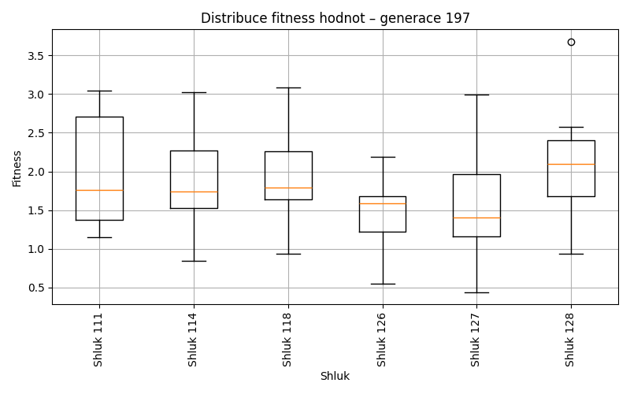
Generace 198
Stabilita mezi generací 197 → 198:
Shluk 111 → 129: 1 jedinců (10.0 %)
Shluk 111 → 111: 6 jedinců (60.0 %)
Shluk 111 → 126: 2 jedinců (20.0 %)
Shluk 111 → 118: 1 jedinců (10.0 %)
Shluk 118 → 118: 10 jedinců (71.4 %)
Shluk 118 → 114: 1 jedinců (7.1 %)
Shluk 118 → 126: 1 jedinců (7.1 %)
Shluk 118 → 111: 1 jedinců (7.1 %)
Shluk 118 → 129: 1 jedinců (7.1 %)
Shluk 114 → 129: 7 jedinců (30.4 %)
Shluk 114 → 114: 13 jedinců (56.5 %)
Shluk 114 → 127: 1 jedinců (4.3 %)
Shluk 114 → 111: 2 jedinců (8.7 %)
Shluk 126 → 129: 6 jedinců (27.3 %)
Shluk 126 → 111: 3 jedinců (13.6 %)
Shluk 126 → 126: 11 jedinců (50.0 %)
Shluk 126 → 127: 1 jedinců (4.5 %)
Shluk 126 → 114: 1 jedinců (4.5 %)
Shluk 128 → 118: 4 jedinců (36.4 %)
Shluk 128 → 129: 4 jedinců (36.4 %)
Shluk 128 → 111: 1 jedinců (9.1 %)
Shluk 128 → 114: 1 jedinců (9.1 %)
Shluk 128 → 127: 1 jedinců (9.1 %)
Shluk 127 → 111: 4 jedinců (20.0 %)
Shluk 127 → 127: 12 jedinců (60.0 %)
Shluk 127 → 129: 1 jedinců (5.0 %)
Shluk 127 → 126: 2 jedinců (10.0 %)
Shluk 127 → 118: 1 jedinců (5.0 %)
Jaccardovo mapování a overlap: Generace 197 → 198
- Cluster 111 → 111 (Jaccard: 0.29, Overlap: 0.60)
- Cluster 118 → 118 (Jaccard: 0.50, Overlap: 0.71)
- Cluster 114 → 114 (Jaccard: 0.50, Overlap: 0.81)
- Cluster 126 → 126 (Jaccard: 0.41, Overlap: 0.69)
- Cluster 128 → 118 (Jaccard: 0.17, Overlap: 0.36)
- Cluster 127 → 127 (Jaccard: 0.52, Overlap: 0.80)
Posun centroidů mezi generací 197 → 198:
- Shluk 0: 2.2509
- Shluk 1: 0.9864
- Shluk 2: 1.0026
- Shluk 3: 0.9655
- Shluk 4: 0.6581
- Shluk 5: 2.7270
Generace 199
Stabilita mezi generací 198 → 199:
Shluk 129 → 111: 5 jedinců (25.0 %)
Shluk 129 → 129: 5 jedinců (25.0 %)
Shluk 129 → 114: 1 jedinců (5.0 %)
Shluk 129 → 126: 5 jedinců (25.0 %)
Shluk 129 → 127: 2 jedinců (10.0 %)
Shluk 129 → 118: 2 jedinců (10.0 %)
Shluk 118 → 118: 7 jedinců (43.8 %)
Shluk 118 → 126: 5 jedinců (31.2 %)
Shluk 118 → 129: 1 jedinců (6.2 %)
Shluk 118 → 111: 1 jedinců (6.2 %)
Shluk 118 → 127: 2 jedinců (12.5 %)
Shluk 114 → 114: 13 jedinců (81.2 %)
Shluk 114 → 129: 1 jedinců (6.2 %)
Shluk 114 → 127: 2 jedinců (12.5 %)
Shluk 111 → 129: 2 jedinců (11.8 %)
Shluk 111 → 127: 3 jedinců (17.6 %)
Shluk 111 → 111: 7 jedinců (41.2 %)
Shluk 111 → 114: 3 jedinců (17.6 %)
Shluk 111 → 118: 2 jedinců (11.8 %)
Shluk 127 → 127: 10 jedinců (66.7 %)
Shluk 127 → 111: 2 jedinců (13.3 %)
Shluk 127 → 126: 1 jedinců (6.7 %)
Shluk 127 → 118: 2 jedinců (13.3 %)
Shluk 126 → 127: 3 jedinců (18.8 %)
Shluk 126 → 126: 9 jedinců (56.2 %)
Shluk 126 → 129: 1 jedinců (6.2 %)
Shluk 126 → 114: 3 jedinců (18.8 %)
Jaccardovo mapování a overlap: Generace 198 → 199
- Cluster 129 → 129 (Jaccard: 0.20, Overlap: 0.50)
- Cluster 118 → 118 (Jaccard: 0.32, Overlap: 0.54)
- Cluster 114 → 114 (Jaccard: 0.57, Overlap: 0.81)
- Cluster 111 → 111 (Jaccard: 0.28, Overlap: 0.47)
- Cluster 127 → 127 (Jaccard: 0.37, Overlap: 0.67)
- Cluster 126 → 126 (Jaccard: 0.33, Overlap: 0.56)
Posun centroidů mezi generací 198 → 199:
- Shluk 0: 2.0142
- Shluk 1: 0.6406
- Shluk 2: 1.1758
- Shluk 3: 1.4746
- Shluk 4: 0.5916
- Shluk 5: 1.7716
Generace 200
Stabilita mezi generací 199 → 200:
Shluk 111 → 111: 12 jedinců (80.0 %)
Shluk 111 → 126: 3 jedinců (20.0 %)
Shluk 118 → 118: 9 jedinců (69.2 %)
Shluk 118 → 111: 2 jedinců (15.4 %)
Shluk 118 → 126: 2 jedinců (15.4 %)
Shluk 129 → 114: 3 jedinců (30.0 %)
Shluk 129 → 129: 5 jedinců (50.0 %)
Shluk 129 → 111: 1 jedinců (10.0 %)
Shluk 129 → 118: 1 jedinců (10.0 %)
Shluk 114 → 114: 11 jedinců (55.0 %)
Shluk 114 → 129: 2 jedinců (10.0 %)
Shluk 114 → 111: 2 jedinců (10.0 %)
Shluk 114 → 126: 5 jedinců (25.0 %)
Shluk 126 → 126: 11 jedinců (55.0 %)
Shluk 126 → 114: 1 jedinců (5.0 %)
Shluk 126 → 129: 7 jedinců (35.0 %)
Shluk 126 → 118: 1 jedinců (5.0 %)
Shluk 127 → 127: 11 jedinců (50.0 %)
Shluk 127 → 129: 3 jedinců (13.6 %)
Shluk 127 → 114: 4 jedinců (18.2 %)
Shluk 127 → 126: 2 jedinců (9.1 %)
Shluk 127 → 118: 2 jedinců (9.1 %)
Jaccardovo mapování a overlap: Generace 199 → 200
- Cluster 111 → 111 (Jaccard: 0.60, Overlap: 0.80)
- Cluster 118 → 118 (Jaccard: 0.53, Overlap: 0.69)
- Cluster 129 → 129 (Jaccard: 0.23, Overlap: 0.50)
- Cluster 114 → 114 (Jaccard: 0.39, Overlap: 0.58)
- Cluster 126 → 126 (Jaccard: 0.34, Overlap: 0.55)
- Cluster 127 → 127 (Jaccard: 0.50, Overlap: 1.00)
Posun centroidů mezi generací 199 → 200:
- Shluk 0: 0.6340
- Shluk 1: 1.1022
- Shluk 2: 0.5177
- Shluk 3: 1.3210
- Shluk 4: 0.8507
- Shluk 5: 2.1432
Generace 201
Stabilita mezi generací 200 → 201:
Shluk 111 → 111: 8 jedinců (47.1 %)
Shluk 111 → 129: 2 jedinců (11.8 %)
Shluk 111 → 114: 5 jedinců (29.4 %)
Shluk 111 → 118: 1 jedinců (5.9 %)
Shluk 111 → 126: 1 jedinců (5.9 %)
Shluk 118 → 118: 10 jedinců (76.9 %)
Shluk 118 → 114: 1 jedinců (7.7 %)
Shluk 118 → 129: 1 jedinců (7.7 %)
Shluk 118 → 111: 1 jedinců (7.7 %)
Shluk 114 → 118: 1 jedinců (5.3 %)
Shluk 114 → 114: 8 jedinců (42.1 %)
Shluk 114 → 126: 1 jedinců (5.3 %)
Shluk 114 → 129: 4 jedinců (21.1 %)
Shluk 114 → 130: 4 jedinců (21.1 %)
Shluk 114 → 111: 1 jedinců (5.3 %)
Shluk 126 → 126: 12 jedinců (52.2 %)
Shluk 126 → 114: 4 jedinců (17.4 %)
Shluk 126 → 129: 4 jedinců (17.4 %)
Shluk 126 → 118: 1 jedinců (4.3 %)
Shluk 126 → 130: 1 jedinců (4.3 %)
Shluk 126 → 111: 1 jedinců (4.3 %)
Shluk 129 → 129: 11 jedinců (64.7 %)
Shluk 129 → 126: 4 jedinců (23.5 %)
Shluk 129 → 130: 2 jedinců (11.8 %)
Shluk 127 → 130: 2 jedinců (18.2 %)
Shluk 127 → 129: 2 jedinců (18.2 %)
Shluk 127 → 111: 6 jedinců (54.5 %)
Shluk 127 → 114: 1 jedinců (9.1 %)
Jaccardovo mapování a overlap: Generace 200 → 201
- Cluster 111 → 111 (Jaccard: 0.31, Overlap: 0.47)
- Cluster 118 → 118 (Jaccard: 0.62, Overlap: 0.77)
- Cluster 114 → 114 (Jaccard: 0.27, Overlap: 0.42)
- Cluster 126 → 126 (Jaccard: 0.41, Overlap: 0.67)
- Cluster 129 → 129 (Jaccard: 0.37, Overlap: 0.65)
- Cluster 127 → 111 (Jaccard: 0.27, Overlap: 0.55)
Posun centroidů mezi generací 200 → 201:
- Shluk 0: 1.4770
- Shluk 1: 1.5469
- Shluk 2: 0.7191
- Shluk 3: 0.6862
- Shluk 4: 3.1648
- Shluk 5: 2.9415
Generace 202
Stabilita mezi generací 201 → 202:
Shluk 111 → 118: 2 jedinců (11.8 %)
Shluk 111 → 111: 9 jedinců (52.9 %)
Shluk 111 → 114: 3 jedinců (17.6 %)
Shluk 111 → 131: 2 jedinců (11.8 %)
Shluk 111 → 126: 1 jedinců (5.9 %)
Shluk 118 → 118: 10 jedinců (76.9 %)
Shluk 118 → 114: 1 jedinců (7.7 %)
Shluk 118 → 131: 2 jedinců (15.4 %)
Shluk 129 → 111: 8 jedinců (33.3 %)
Shluk 129 → 131: 7 jedinců (29.2 %)
Shluk 129 → 132: 4 jedinců (16.7 %)
Shluk 129 → 114: 3 jedinců (12.5 %)
Shluk 129 → 126: 1 jedinců (4.2 %)
Shluk 129 → 118: 1 jedinců (4.2 %)
Shluk 114 → 114: 13 jedinců (68.4 %)
Shluk 114 → 132: 1 jedinců (5.3 %)
Shluk 114 → 131: 2 jedinců (10.5 %)
Shluk 114 → 111: 2 jedinců (10.5 %)
Shluk 114 → 118: 1 jedinců (5.3 %)
Shluk 126 → 126: 7 jedinců (38.9 %)
Shluk 126 → 132: 1 jedinců (5.6 %)
Shluk 126 → 131: 8 jedinců (44.4 %)
Shluk 126 → 118: 1 jedinců (5.6 %)
Shluk 126 → 114: 1 jedinců (5.6 %)
Shluk 130 → 131: 1 jedinců (11.1 %)
Shluk 130 → 114: 4 jedinců (44.4 %)
Shluk 130 → 111: 1 jedinců (11.1 %)
Shluk 130 → 132: 2 jedinců (22.2 %)
Shluk 130 → 126: 1 jedinců (11.1 %)
Jaccardovo mapování a overlap: Generace 201 → 202
- Cluster 111 → 111 (Jaccard: 0.32, Overlap: 0.53)
- Cluster 118 → 118 (Jaccard: 0.56, Overlap: 0.77)
- Cluster 129 → 111 (Jaccard: 0.22, Overlap: 0.40)
- Cluster 114 → 114 (Jaccard: 0.42, Overlap: 0.68)
- Cluster 126 → 126 (Jaccard: 0.33, Overlap: 0.70)
- Cluster 130 → 114 (Jaccard: 0.13, Overlap: 0.44)
Posun centroidů mezi generací 201 → 202:
- Shluk 0: 1.2206
- Shluk 1: 0.5978
- Shluk 2: 0.6014
- Shluk 3: 1.1097
- Shluk 4: 1.8932
- Shluk 5: 2.5568
Generace 203
Stabilita mezi generací 202 → 203:
Shluk 118 → 133: 4 jedinců (26.7 %)
Shluk 118 → 118: 5 jedinců (33.3 %)
Shluk 118 → 126: 2 jedinců (13.3 %)
Shluk 118 → 131: 4 jedinců (26.7 %)
Shluk 111 → 132: 7 jedinců (35.0 %)
Shluk 111 → 131: 2 jedinců (10.0 %)
Shluk 111 → 114: 6 jedinců (30.0 %)
Shluk 111 → 133: 5 jedinců (25.0 %)
Shluk 114 → 132: 4 jedinců (16.0 %)
Shluk 114 → 131: 3 jedinců (12.0 %)
Shluk 114 → 126: 7 jedinců (28.0 %)
Shluk 114 → 114: 7 jedinců (28.0 %)
Shluk 114 → 118: 4 jedinců (16.0 %)
Shluk 126 → 126: 7 jedinců (70.0 %)
Shluk 126 → 118: 2 jedinců (20.0 %)
Shluk 126 → 133: 1 jedinců (10.0 %)
Shluk 131 → 131: 13 jedinců (59.1 %)
Shluk 131 → 133: 5 jedinců (22.7 %)
Shluk 131 → 132: 2 jedinců (9.1 %)
Shluk 131 → 126: 2 jedinců (9.1 %)
Shluk 132 → 132: 6 jedinců (75.0 %)
Shluk 132 → 126: 1 jedinců (12.5 %)
Shluk 132 → 114: 1 jedinců (12.5 %)
Jaccardovo mapování a overlap: Generace 202 → 203
- Cluster 118 → 118 (Jaccard: 0.24, Overlap: 0.45)
- Cluster 111 → 132 (Jaccard: 0.22, Overlap: 0.37)
- Cluster 114 → 114 (Jaccard: 0.22, Overlap: 0.50)
- Cluster 126 → 126 (Jaccard: 0.32, Overlap: 0.70)
- Cluster 131 → 131 (Jaccard: 0.42, Overlap: 0.59)
- Cluster 132 → 132 (Jaccard: 0.29, Overlap: 0.75)
Posun centroidů mezi generací 202 → 203:
- Shluk 0: 1.8018
- Shluk 1: 2.0457
- Shluk 2: 2.5417
- Shluk 3: 2.3638
- Shluk 4: 2.2767
- Shluk 5: 3.4953
Generace 204
Stabilita mezi generací 203 → 204:
Shluk 133 → 134: 4 jedinců (26.7 %)
Shluk 133 → 133: 7 jedinců (46.7 %)
Shluk 133 → 126: 2 jedinců (13.3 %)
Shluk 133 → 131: 1 jedinců (6.7 %)
Shluk 133 → 118: 1 jedinců (6.7 %)
Shluk 132 → 133: 2 jedinců (10.5 %)
Shluk 132 → 132: 9 jedinců (47.4 %)
Shluk 132 → 131: 6 jedinců (31.6 %)
Shluk 132 → 118: 2 jedinců (10.5 %)
Shluk 118 → 118: 6 jedinců (54.5 %)
Shluk 118 → 132: 3 jedinců (27.3 %)
Shluk 118 → 133: 1 jedinců (9.1 %)
Shluk 118 → 134: 1 jedinců (9.1 %)
Shluk 131 → 134: 8 jedinců (36.4 %)
Shluk 131 → 133: 2 jedinců (9.1 %)
Shluk 131 → 131: 9 jedinců (40.9 %)
Shluk 131 → 132: 2 jedinců (9.1 %)
Shluk 131 → 118: 1 jedinců (4.5 %)
Shluk 126 → 126: 13 jedinců (68.4 %)
Shluk 126 → 118: 3 jedinců (15.8 %)
Shluk 126 → 134: 3 jedinců (15.8 %)
Shluk 114 → 132: 4 jedinců (28.6 %)
Shluk 114 → 133: 2 jedinců (14.3 %)
Shluk 114 → 118: 6 jedinců (42.9 %)
Shluk 114 → 134: 2 jedinců (14.3 %)
Jaccardovo mapování a overlap: Generace 203 → 204
- Cluster 133 → 133 (Jaccard: 0.32, Overlap: 0.50)
- Cluster 132 → 132 (Jaccard: 0.32, Overlap: 0.50)
- Cluster 118 → 118 (Jaccard: 0.25, Overlap: 0.55)
- Cluster 131 → 131 (Jaccard: 0.31, Overlap: 0.56)
- Cluster 126 → 126 (Jaccard: 0.62, Overlap: 0.87)
- Cluster 114 → 118 (Jaccard: 0.22, Overlap: 0.43)
Posun centroidů mezi generací 203 → 204:
- Shluk 0: 1.4485
- Shluk 1: 2.2907
- Shluk 2: 2.3982
- Shluk 3: 2.4839
- Shluk 4: 2.0684
- Shluk 5: 1.7723
Generace 205
Stabilita mezi generací 204 → 205:
Shluk 134 → 118: 1 jedinců (5.6 %)
Shluk 134 → 135: 3 jedinců (16.7 %)
Shluk 134 → 134: 10 jedinců (55.6 %)
Shluk 134 → 131: 4 jedinců (22.2 %)
Shluk 133 → 118: 3 jedinců (21.4 %)
Shluk 133 → 132: 6 jedinců (42.9 %)
Shluk 133 → 131: 4 jedinců (28.6 %)
Shluk 133 → 126: 1 jedinců (7.1 %)
Shluk 118 → 126: 1 jedinců (5.3 %)
Shluk 118 → 135: 5 jedinců (26.3 %)
Shluk 118 → 118: 10 jedinců (52.6 %)
Shluk 118 → 132: 1 jedinců (5.3 %)
Shluk 118 → 134: 2 jedinců (10.5 %)
Shluk 132 → 134: 2 jedinců (11.1 %)
Shluk 132 → 131: 2 jedinců (11.1 %)
Shluk 132 → 135: 7 jedinců (38.9 %)
Shluk 132 → 132: 7 jedinců (38.9 %)
Shluk 126 → 126: 10 jedinců (66.7 %)
Shluk 126 → 132: 1 jedinců (6.7 %)
Shluk 126 → 134: 2 jedinců (13.3 %)
Shluk 126 → 118: 1 jedinců (6.7 %)
Shluk 126 → 131: 1 jedinců (6.7 %)
Shluk 131 → 131: 12 jedinců (75.0 %)
Shluk 131 → 134: 1 jedinců (6.2 %)
Shluk 131 → 118: 2 jedinců (12.5 %)
Shluk 131 → 135: 1 jedinců (6.2 %)
Jaccardovo mapování a overlap: Generace 204 → 205
- Cluster 134 → 134 (Jaccard: 0.40, Overlap: 0.59)
- Cluster 133 → 132 (Jaccard: 0.26, Overlap: 0.43)
- Cluster 118 → 118 (Jaccard: 0.38, Overlap: 0.59)
- Cluster 132 → 132 (Jaccard: 0.27, Overlap: 0.47)
- Cluster 126 → 126 (Jaccard: 0.59, Overlap: 0.83)
- Cluster 131 → 131 (Jaccard: 0.44, Overlap: 0.75)
Posun centroidů mezi generací 204 → 205:
- Shluk 0: 0.6558
- Shluk 1: 0.4071
- Shluk 2: 0.3886
- Shluk 3: 1.2470
- Shluk 4: 2.1782
- Shluk 5: 1.8537
Generace 206
Stabilita mezi generací 205 → 206:
Shluk 118 → 132: 2 jedinců (11.8 %)
Shluk 118 → 126: 1 jedinců (5.9 %)
Shluk 118 → 118: 12 jedinců (70.6 %)
Shluk 118 → 131: 1 jedinců (5.9 %)
Shluk 118 → 136: 1 jedinců (5.9 %)
Shluk 132 → 132: 10 jedinců (66.7 %)
Shluk 132 → 136: 3 jedinců (20.0 %)
Shluk 132 → 118: 2 jedinců (13.3 %)
Shluk 126 → 126: 6 jedinců (50.0 %)
Shluk 126 → 136: 1 jedinců (8.3 %)
Shluk 126 → 131: 1 jedinců (8.3 %)
Shluk 126 → 132: 4 jedinců (33.3 %)
Shluk 134 → 126: 7 jedinců (41.2 %)
Shluk 134 → 136: 3 jedinců (17.6 %)
Shluk 134 → 118: 2 jedinců (11.8 %)
Shluk 134 → 135: 4 jedinců (23.5 %)
Shluk 134 → 132: 1 jedinců (5.9 %)
Shluk 135 → 131: 3 jedinců (18.8 %)
Shluk 135 → 135: 10 jedinců (62.5 %)
Shluk 135 → 132: 2 jedinců (12.5 %)
Shluk 135 → 136: 1 jedinců (6.2 %)
Shluk 131 → 131: 14 jedinců (60.9 %)
Shluk 131 → 136: 7 jedinců (30.4 %)
Shluk 131 → 132: 1 jedinců (4.3 %)
Shluk 131 → 135: 1 jedinců (4.3 %)
Jaccardovo mapování a overlap: Generace 205 → 206
- Cluster 118 → 118 (Jaccard: 0.57, Overlap: 0.75)
- Cluster 132 → 132 (Jaccard: 0.40, Overlap: 0.67)
- Cluster 126 → 126 (Jaccard: 0.30, Overlap: 0.50)
- Cluster 134 → 126 (Jaccard: 0.29, Overlap: 0.50)
- Cluster 135 → 135 (Jaccard: 0.48, Overlap: 0.67)
- Cluster 131 → 131 (Jaccard: 0.50, Overlap: 0.74)
Posun centroidů mezi generací 205 → 206:
- Shluk 0: 0.7035
- Shluk 1: 1.2289
- Shluk 2: 0.6340
- Shluk 3: 0.5512
- Shluk 4: 1.4076
- Shluk 5: 1.9458

Generace 207
Stabilita mezi generací 206 → 207:
Shluk 132 → 135: 9 jedinců (45.0 %)
Shluk 132 → 136: 4 jedinců (20.0 %)
Shluk 132 → 138: 4 jedinců (20.0 %)
Shluk 132 → 137: 2 jedinců (10.0 %)
Shluk 132 → 118: 1 jedinců (5.0 %)
Shluk 126 → 118: 6 jedinců (42.9 %)
Shluk 126 → 136: 3 jedinců (21.4 %)
Shluk 126 → 131: 2 jedinců (14.3 %)
Shluk 126 → 138: 3 jedinců (21.4 %)
Shluk 131 → 137: 4 jedinců (21.1 %)
Shluk 131 → 131: 10 jedinců (52.6 %)
Shluk 131 → 136: 2 jedinců (10.5 %)
Shluk 131 → 118: 1 jedinců (5.3 %)
Shluk 131 → 138: 1 jedinců (5.3 %)
Shluk 131 → 135: 1 jedinců (5.3 %)
Shluk 136 → 138: 5 jedinců (31.2 %)
Shluk 136 → 136: 7 jedinců (43.8 %)
Shluk 136 → 135: 1 jedinců (6.2 %)
Shluk 136 → 118: 1 jedinců (6.2 %)
Shluk 136 → 131: 1 jedinců (6.2 %)
Shluk 136 → 137: 1 jedinců (6.2 %)
Shluk 135 → 135: 8 jedinců (53.3 %)
Shluk 135 → 137: 6 jedinců (40.0 %)
Shluk 135 → 131: 1 jedinců (6.7 %)
Shluk 118 → 118: 10 jedinců (62.5 %)
Shluk 118 → 137: 6 jedinců (37.5 %)
Jaccardovo mapování a overlap: Generace 206 → 207
- Cluster 132 → 135 (Jaccard: 0.30, Overlap: 0.47)
- Cluster 126 → 118 (Jaccard: 0.22, Overlap: 0.43)
- Cluster 131 → 131 (Jaccard: 0.43, Overlap: 0.71)
- Cluster 136 → 136 (Jaccard: 0.28, Overlap: 0.44)
- Cluster 135 → 135 (Jaccard: 0.31, Overlap: 0.53)
- Cluster 118 → 118 (Jaccard: 0.40, Overlap: 0.62)
Posun centroidů mezi generací 206 → 207:
- Shluk 0: 0.9774
- Shluk 1: 2.2655
- Shluk 2: 2.1657
- Shluk 3: 1.3300
- Shluk 4: 1.3180
- Shluk 5: 1.5290
Generace 208
Stabilita mezi generací 207 → 208:
Shluk 135 → 118: 2 jedinců (10.5 %)
Shluk 135 → 137: 2 jedinců (10.5 %)
Shluk 135 → 138: 4 jedinců (21.1 %)
Shluk 135 → 135: 9 jedinců (47.4 %)
Shluk 135 → 131: 1 jedinců (5.3 %)
Shluk 135 → 136: 1 jedinců (5.3 %)
Shluk 118 → 138: 2 jedinců (10.5 %)
Shluk 118 → 135: 3 jedinců (15.8 %)
Shluk 118 → 118: 8 jedinců (42.1 %)
Shluk 118 → 137: 5 jedinců (26.3 %)
Shluk 118 → 136: 1 jedinců (5.3 %)
Shluk 136 → 136: 12 jedinců (75.0 %)
Shluk 136 → 135: 4 jedinců (25.0 %)
Shluk 137 → 137: 13 jedinců (68.4 %)
Shluk 137 → 135: 2 jedinců (10.5 %)
Shluk 137 → 138: 1 jedinců (5.3 %)
Shluk 137 → 118: 2 jedinců (10.5 %)
Shluk 137 → 131: 1 jedinců (5.3 %)
Shluk 138 → 138: 9 jedinců (69.2 %)
Shluk 138 → 137: 2 jedinců (15.4 %)
Shluk 138 → 135: 2 jedinců (15.4 %)
Shluk 131 → 136: 1 jedinců (7.1 %)
Shluk 131 → 131: 8 jedinců (57.1 %)
Shluk 131 → 135: 2 jedinců (14.3 %)
Shluk 131 → 138: 2 jedinců (14.3 %)
Shluk 131 → 137: 1 jedinců (7.1 %)
Jaccardovo mapování a overlap: Generace 207 → 208
- Cluster 135 → 135 (Jaccard: 0.28, Overlap: 0.47)
- Cluster 118 → 118 (Jaccard: 0.35, Overlap: 0.67)
- Cluster 136 → 136 (Jaccard: 0.63, Overlap: 0.80)
- Cluster 137 → 137 (Jaccard: 0.45, Overlap: 0.68)
- Cluster 138 → 138 (Jaccard: 0.41, Overlap: 0.69)
- Cluster 131 → 131 (Jaccard: 0.50, Overlap: 0.80)
Posun centroidů mezi generací 207 → 208:
- Shluk 0: 1.1601
- Shluk 1: 0.5162
- Shluk 2: 1.1475
- Shluk 3: 0.4119
- Shluk 4: 0.6279
- Shluk 5: 0.6882
Generace 209
Stabilita mezi generací 208 → 209:
Shluk 118 → 135: 7 jedinců (58.3 %)
Shluk 118 → 138: 2 jedinců (16.7 %)
Shluk 118 → 137: 2 jedinců (16.7 %)
Shluk 118 → 136: 1 jedinců (8.3 %)
Shluk 138 → 136: 1 jedinců (5.6 %)
Shluk 138 → 138: 6 jedinců (33.3 %)
Shluk 138 → 139: 5 jedinců (27.8 %)
Shluk 138 → 137: 4 jedinců (22.2 %)
Shluk 138 → 131: 2 jedinců (11.1 %)
Shluk 136 → 136: 7 jedinců (46.7 %)
Shluk 136 → 137: 3 jedinců (20.0 %)
Shluk 136 → 135: 2 jedinců (13.3 %)
Shluk 136 → 131: 3 jedinců (20.0 %)
Shluk 135 → 139: 7 jedinců (31.8 %)
Shluk 135 → 135: 10 jedinců (45.5 %)
Shluk 135 → 138: 3 jedinců (13.6 %)
Shluk 135 → 137: 1 jedinců (4.5 %)
Shluk 135 → 136: 1 jedinců (4.5 %)
Shluk 137 → 137: 9 jedinců (39.1 %)
Shluk 137 → 136: 7 jedinců (30.4 %)
Shluk 137 → 139: 2 jedinců (8.7 %)
Shluk 137 → 135: 2 jedinců (8.7 %)
Shluk 137 → 138: 3 jedinců (13.0 %)
Shluk 131 → 135: 1 jedinců (10.0 %)
Shluk 131 → 131: 8 jedinců (80.0 %)
Shluk 131 → 136: 1 jedinců (10.0 %)
Jaccardovo mapování a overlap: Generace 208 → 209
- Cluster 118 → 135 (Jaccard: 0.26, Overlap: 0.58)
- Cluster 138 → 138 (Jaccard: 0.23, Overlap: 0.43)
- Cluster 136 → 136 (Jaccard: 0.27, Overlap: 0.47)
- Cluster 135 → 135 (Jaccard: 0.29, Overlap: 0.45)
- Cluster 137 → 137 (Jaccard: 0.27, Overlap: 0.47)
- Cluster 131 → 131 (Jaccard: 0.53, Overlap: 0.80)
Posun centroidů mezi generací 208 → 209:
- Shluk 0: 2.0719
- Shluk 1: 2.0715
- Shluk 2: 1.6908
- Shluk 3: 1.6568
- Shluk 4: 1.9512
- Shluk 5: 1.4233
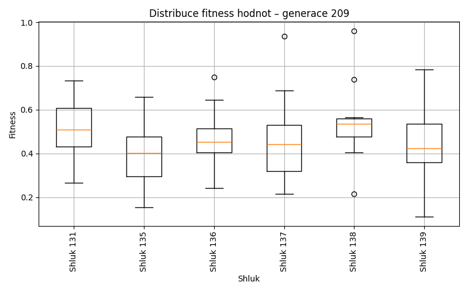
Generace 210
Stabilita mezi generací 209 → 210:
Shluk 135 → 140: 3 jedinců (13.6 %)
Shluk 135 → 135: 9 jedinců (40.9 %)
Shluk 135 → 141: 8 jedinců (36.4 %)
Shluk 135 → 136: 1 jedinců (4.5 %)
Shluk 135 → 131: 1 jedinců (4.5 %)
Shluk 136 → 136: 7 jedinců (38.9 %)
Shluk 136 → 135: 4 jedinců (22.2 %)
Shluk 136 → 139: 3 jedinců (16.7 %)
Shluk 136 → 140: 3 jedinců (16.7 %)
Shluk 136 → 131: 1 jedinců (5.6 %)
Shluk 139 → 140: 3 jedinců (21.4 %)
Shluk 139 → 135: 1 jedinců (7.1 %)
Shluk 139 → 139: 10 jedinců (71.4 %)
Shluk 137 → 140: 7 jedinců (36.8 %)
Shluk 137 → 136: 7 jedinců (36.8 %)
Shluk 137 → 131: 4 jedinců (21.1 %)
Shluk 137 → 135: 1 jedinců (5.3 %)
Shluk 138 → 140: 3 jedinců (21.4 %)
Shluk 138 → 141: 4 jedinců (28.6 %)
Shluk 138 → 139: 5 jedinců (35.7 %)
Shluk 138 → 131: 1 jedinců (7.1 %)
Shluk 138 → 135: 1 jedinců (7.1 %)
Shluk 131 → 131: 7 jedinců (53.8 %)
Shluk 131 → 136: 3 jedinců (23.1 %)
Shluk 131 → 135: 1 jedinců (7.7 %)
Shluk 131 → 141: 1 jedinců (7.7 %)
Shluk 131 → 140: 1 jedinců (7.7 %)
Jaccardovo mapování a overlap: Generace 209 → 210
- Cluster 135 → 135 (Jaccard: 0.30, Overlap: 0.53)
- Cluster 136 → 136 (Jaccard: 0.24, Overlap: 0.39)
- Cluster 139 → 139 (Jaccard: 0.45, Overlap: 0.71)
- Cluster 137 → 136 (Jaccard: 0.23, Overlap: 0.39)
- Cluster 138 → 139 (Jaccard: 0.19, Overlap: 0.36)
- Cluster 131 → 131 (Jaccard: 0.35, Overlap: 0.54)
Posun centroidů mezi generací 209 → 210:
- Shluk 0: 0.9036
- Shluk 1: 0.8246
- Shluk 2: 1.0552
- Shluk 3: 1.5543
- Shluk 4: 1.5228
- Shluk 5: 1.7368

Generace 211
Stabilita mezi generací 210 → 211:
Shluk 140 → 136: 8 jedinců (40.0 %)
Shluk 140 → 139: 3 jedinců (15.0 %)
Shluk 140 → 135: 1 jedinců (5.0 %)
Shluk 140 → 142: 5 jedinců (25.0 %)
Shluk 140 → 141: 2 jedinců (10.0 %)
Shluk 140 → 131: 1 jedinců (5.0 %)
Shluk 136 → 142: 1 jedinců (5.6 %)
Shluk 136 → 136: 12 jedinců (66.7 %)
Shluk 136 → 135: 4 jedinců (22.2 %)
Shluk 136 → 131: 1 jedinců (5.6 %)
Shluk 135 → 135: 9 jedinců (52.9 %)
Shluk 135 → 141: 4 jedinců (23.5 %)
Shluk 135 → 142: 1 jedinců (5.9 %)
Shluk 135 → 136: 1 jedinců (5.9 %)
Shluk 135 → 131: 2 jedinců (11.8 %)
Shluk 141 → 136: 1 jedinců (7.7 %)
Shluk 141 → 141: 9 jedinců (69.2 %)
Shluk 141 → 142: 1 jedinců (7.7 %)
Shluk 141 → 131: 1 jedinců (7.7 %)
Shluk 141 → 135: 1 jedinců (7.7 %)
Shluk 131 → 131: 12 jedinců (85.7 %)
Shluk 131 → 136: 1 jedinců (7.1 %)
Shluk 131 → 139: 1 jedinců (7.1 %)
Shluk 139 → 139: 10 jedinců (55.6 %)
Shluk 139 → 135: 1 jedinců (5.6 %)
Shluk 139 → 142: 5 jedinců (27.8 %)
Shluk 139 → 131: 1 jedinců (5.6 %)
Shluk 139 → 141: 1 jedinců (5.6 %)
Jaccardovo mapování a overlap: Generace 210 → 211
- Cluster 140 → 136 (Jaccard: 0.23, Overlap: 0.40)
- Cluster 136 → 136 (Jaccard: 0.41, Overlap: 0.67)
- Cluster 135 → 135 (Jaccard: 0.38, Overlap: 0.56)
- Cluster 141 → 141 (Jaccard: 0.45, Overlap: 0.69)
- Cluster 131 → 131 (Jaccard: 0.60, Overlap: 0.86)
- Cluster 139 → 139 (Jaccard: 0.45, Overlap: 0.71)
Posun centroidů mezi generací 210 → 211:
- Shluk 0: 0.4936
- Shluk 1: 0.5209
- Shluk 2: 0.7411
- Shluk 3: 0.4668
- Shluk 4: 1.4516
- Shluk 5: 1.6409
Generace 212
Stabilita mezi generací 211 → 212:
Shluk 136 → 143: 5 jedinců (21.7 %)
Shluk 136 → 135: 7 jedinců (30.4 %)
Shluk 136 → 136: 9 jedinců (39.1 %)
Shluk 136 → 141: 1 jedinců (4.3 %)
Shluk 136 → 142: 1 jedinců (4.3 %)
Shluk 142 → 142: 7 jedinců (53.8 %)
Shluk 142 → 136: 3 jedinců (23.1 %)
Shluk 142 → 139: 3 jedinců (23.1 %)
Shluk 135 → 135: 7 jedinců (43.8 %)
Shluk 135 → 139: 1 jedinců (6.2 %)
Shluk 135 → 141: 5 jedinců (31.2 %)
Shluk 135 → 136: 3 jedinců (18.8 %)
Shluk 139 → 142: 1 jedinců (7.1 %)
Shluk 139 → 139: 10 jedinců (71.4 %)
Shluk 139 → 143: 3 jedinců (21.4 %)
Shluk 141 → 141: 12 jedinců (75.0 %)
Shluk 141 → 142: 2 jedinců (12.5 %)
Shluk 141 → 143: 1 jedinců (6.2 %)
Shluk 141 → 139: 1 jedinců (6.2 %)
Shluk 131 → 135: 5 jedinců (27.8 %)
Shluk 131 → 136: 1 jedinců (5.6 %)
Shluk 131 → 141: 2 jedinců (11.1 %)
Shluk 131 → 139: 4 jedinců (22.2 %)
Shluk 131 → 142: 2 jedinců (11.1 %)
Shluk 131 → 143: 4 jedinců (22.2 %)
Jaccardovo mapování a overlap: Generace 211 → 212
- Cluster 136 → 136 (Jaccard: 0.30, Overlap: 0.56)
- Cluster 142 → 142 (Jaccard: 0.37, Overlap: 0.54)
- Cluster 135 → 135 (Jaccard: 0.25, Overlap: 0.44)
- Cluster 139 → 139 (Jaccard: 0.43, Overlap: 0.71)
- Cluster 141 → 141 (Jaccard: 0.50, Overlap: 0.75)
- Cluster 131 → 135 (Jaccard: 0.16, Overlap: 0.28)
Posun centroidů mezi generací 211 → 212:
- Shluk 0: 1.0812
- Shluk 1: 1.2087
- Shluk 2: 1.6274
- Shluk 3: 1.5251
- Shluk 4: 1.3774
- Shluk 5: 1.7391
Generace 213
Stabilita mezi generací 212 → 213:
Shluk 143 → 142: 3 jedinců (23.1 %)
Shluk 143 → 141: 4 jedinců (30.8 %)
Shluk 143 → 135: 3 jedinců (23.1 %)
Shluk 143 → 136: 2 jedinců (15.4 %)
Shluk 143 → 139: 1 jedinců (7.7 %)
Shluk 142 → 142: 10 jedinců (76.9 %)
Shluk 142 → 141: 1 jedinců (7.7 %)
Shluk 142 → 136: 1 jedinců (7.7 %)
Shluk 142 → 144: 1 jedinců (7.7 %)
Shluk 135 → 144: 2 jedinců (10.5 %)
Shluk 135 → 135: 16 jedinců (84.2 %)
Shluk 135 → 139: 1 jedinců (5.3 %)
Shluk 136 → 136: 10 jedinců (62.5 %)
Shluk 136 → 144: 2 jedinců (12.5 %)
Shluk 136 → 139: 1 jedinců (6.2 %)
Shluk 136 → 135: 3 jedinců (18.8 %)
Shluk 141 → 141: 12 jedinců (60.0 %)
Shluk 141 → 142: 2 jedinců (10.0 %)
Shluk 141 → 136: 2 jedinců (10.0 %)
Shluk 141 → 144: 4 jedinců (20.0 %)
Shluk 139 → 139: 13 jedinců (68.4 %)
Shluk 139 → 136: 2 jedinců (10.5 %)
Shluk 139 → 141: 3 jedinců (15.8 %)
Shluk 139 → 144: 1 jedinců (5.3 %)
Jaccardovo mapování a overlap: Generace 212 → 213
- Cluster 143 → 141 (Jaccard: 0.14, Overlap: 0.31)
- Cluster 142 → 142 (Jaccard: 0.56, Overlap: 0.77)
- Cluster 135 → 135 (Jaccard: 0.64, Overlap: 0.84)
- Cluster 136 → 136 (Jaccard: 0.43, Overlap: 0.62)
- Cluster 141 → 141 (Jaccard: 0.43, Overlap: 0.60)
- Cluster 139 → 139 (Jaccard: 0.59, Overlap: 0.81)
Posun centroidů mezi generací 212 → 213:
- Shluk 0: 0.2007
- Shluk 1: 0.3974
- Shluk 2: 0.4126
- Shluk 3: 0.5104
- Shluk 4: 0.4707
- Shluk 5: 1.8140
Generace 214
Stabilita mezi generací 213 → 214:
Shluk 142 → 142: 9 jedinců (60.0 %)
Shluk 142 → 136: 3 jedinců (20.0 %)
Shluk 142 → 144: 1 jedinců (6.7 %)
Shluk 142 → 141: 1 jedinců (6.7 %)
Shluk 142 → 135: 1 jedinců (6.7 %)
Shluk 144 → 136: 2 jedinců (20.0 %)
Shluk 144 → 144: 5 jedinců (50.0 %)
Shluk 144 → 142: 2 jedinců (20.0 %)
Shluk 144 → 135: 1 jedinců (10.0 %)
Shluk 141 → 141: 14 jedinců (70.0 %)
Shluk 141 → 142: 4 jedinců (20.0 %)
Shluk 141 → 135: 1 jedinců (5.0 %)
Shluk 141 → 139: 1 jedinců (5.0 %)
Shluk 135 → 142: 7 jedinců (31.8 %)
Shluk 135 → 135: 12 jedinců (54.5 %)
Shluk 135 → 139: 1 jedinců (4.5 %)
Shluk 135 → 141: 1 jedinců (4.5 %)
Shluk 135 → 144: 1 jedinců (4.5 %)
Shluk 136 → 136: 6 jedinců (35.3 %)
Shluk 136 → 141: 2 jedinců (11.8 %)
Shluk 136 → 142: 7 jedinců (41.2 %)
Shluk 136 → 144: 1 jedinců (5.9 %)
Shluk 136 → 139: 1 jedinců (5.9 %)
Shluk 139 → 139: 11 jedinců (68.8 %)
Shluk 139 → 144: 3 jedinců (18.8 %)
Shluk 139 → 141: 1 jedinců (6.2 %)
Shluk 139 → 136: 1 jedinců (6.2 %)
Jaccardovo mapování a overlap: Generace 213 → 214
- Cluster 142 → 142 (Jaccard: 0.26, Overlap: 0.60)
- Cluster 144 → 144 (Jaccard: 0.31, Overlap: 0.50)
- Cluster 141 → 141 (Jaccard: 0.56, Overlap: 0.74)
- Cluster 135 → 135 (Jaccard: 0.48, Overlap: 0.80)
- Cluster 136 → 136 (Jaccard: 0.26, Overlap: 0.50)
- Cluster 139 → 139 (Jaccard: 0.58, Overlap: 0.79)
Posun centroidů mezi generací 213 → 214:
- Shluk 0: 0.4418
- Shluk 1: 0.8799
- Shluk 2: 0.4341
- Shluk 3: 0.4107
- Shluk 4: 0.6754
- Shluk 5: 0.7815
Generace 215
Stabilita mezi generací 214 → 215:
Shluk 142 → 142: 17 jedinců (58.6 %)
Shluk 142 → 139: 4 jedinců (13.8 %)
Shluk 142 → 135: 5 jedinců (17.2 %)
Shluk 142 → 145: 2 jedinců (6.9 %)
Shluk 142 → 141: 1 jedinců (3.4 %)
Shluk 136 → 136: 10 jedinců (83.3 %)
Shluk 136 → 145: 1 jedinců (8.3 %)
Shluk 136 → 142: 1 jedinců (8.3 %)
Shluk 141 → 145: 2 jedinců (10.5 %)
Shluk 141 → 136: 2 jedinců (10.5 %)
Shluk 141 → 141: 10 jedinců (52.6 %)
Shluk 141 → 139: 5 jedinců (26.3 %)
Shluk 135 → 135: 14 jedinců (93.3 %)
Shluk 135 → 139: 1 jedinců (6.7 %)
Shluk 144 → 139: 5 jedinců (45.5 %)
Shluk 144 → 145: 2 jedinců (18.2 %)
Shluk 144 → 142: 1 jedinců (9.1 %)
Shluk 144 → 135: 2 jedinců (18.2 %)
Shluk 144 → 136: 1 jedinců (9.1 %)
Shluk 139 → 139: 11 jedinců (78.6 %)
Shluk 139 → 142: 1 jedinců (7.1 %)
Shluk 139 → 145: 1 jedinců (7.1 %)
Shluk 139 → 141: 1 jedinců (7.1 %)
Jaccardovo mapování a overlap: Generace 214 → 215
- Cluster 142 → 142 (Jaccard: 0.53, Overlap: 0.85)
- Cluster 136 → 136 (Jaccard: 0.67, Overlap: 0.83)
- Cluster 141 → 141 (Jaccard: 0.48, Overlap: 0.83)
- Cluster 135 → 135 (Jaccard: 0.64, Overlap: 0.93)
- Cluster 144 → 139 (Jaccard: 0.16, Overlap: 0.45)
- Cluster 139 → 139 (Jaccard: 0.38, Overlap: 0.79)
Posun centroidů mezi generací 214 → 215:
- Shluk 0: 0.3068
- Shluk 1: 0.5954
- Shluk 2: 0.5581
- Shluk 3: 0.4417
- Shluk 4: 0.3224
- Shluk 5: 1.6453
Generace 216
Stabilita mezi generací 215 → 216:
Shluk 142 → 142: 13 jedinců (65.0 %)
Shluk 142 → 145: 2 jedinců (10.0 %)
Shluk 142 → 139: 2 jedinců (10.0 %)
Shluk 142 → 135: 3 jedinců (15.0 %)
Shluk 136 → 145: 4 jedinců (30.8 %)
Shluk 136 → 136: 9 jedinců (69.2 %)
Shluk 145 → 136: 2 jedinců (25.0 %)
Shluk 145 → 142: 2 jedinců (25.0 %)
Shluk 145 → 145: 4 jedinců (50.0 %)
Shluk 135 → 145: 2 jedinců (9.5 %)
Shluk 135 → 135: 18 jedinců (85.7 %)
Shluk 135 → 139: 1 jedinců (4.8 %)
Shluk 139 → 139: 19 jedinců (73.1 %)
Shluk 139 → 135: 2 jedinců (7.7 %)
Shluk 139 → 145: 3 jedinců (11.5 %)
Shluk 139 → 136: 2 jedinců (7.7 %)
Shluk 141 → 141: 6 jedinců (50.0 %)
Shluk 141 → 136: 3 jedinců (25.0 %)
Shluk 141 → 139: 1 jedinců (8.3 %)
Shluk 141 → 142: 1 jedinců (8.3 %)
Shluk 141 → 145: 1 jedinců (8.3 %)
Jaccardovo mapování a overlap: Generace 215 → 216
- Cluster 142 → 142 (Jaccard: 0.57, Overlap: 0.81)
- Cluster 136 → 136 (Jaccard: 0.45, Overlap: 0.69)
- Cluster 145 → 145 (Jaccard: 0.20, Overlap: 0.50)
- Cluster 135 → 135 (Jaccard: 0.69, Overlap: 0.86)
- Cluster 139 → 139 (Jaccard: 0.63, Overlap: 0.83)
- Cluster 141 → 141 (Jaccard: 0.50, Overlap: 1.00)
Posun centroidů mezi generací 215 → 216:
- Shluk 0: 0.2046
- Shluk 1: 0.3345
- Shluk 2: 0.3782
- Shluk 3: 0.5250
- Shluk 4: 0.3014
- Shluk 5: 1.1098
Generace 217
Stabilita mezi generací 216 → 217:
Shluk 142 → 142: 7 jedinců (43.8 %)
Shluk 142 → 135: 2 jedinců (12.5 %)
Shluk 142 → 145: 3 jedinců (18.8 %)
Shluk 142 → 146: 1 jedinců (6.2 %)
Shluk 142 → 139: 2 jedinců (12.5 %)
Shluk 142 → 141: 1 jedinců (6.2 %)
Shluk 145 → 141: 5 jedinců (31.2 %)
Shluk 145 → 139: 3 jedinců (18.8 %)
Shluk 145 → 145: 6 jedinců (37.5 %)
Shluk 145 → 135: 1 jedinců (6.2 %)
Shluk 145 → 142: 1 jedinců (6.2 %)
Shluk 136 → 145: 6 jedinců (37.5 %)
Shluk 136 → 141: 4 jedinců (25.0 %)
Shluk 136 → 142: 2 jedinců (12.5 %)
Shluk 136 → 146: 3 jedinců (18.8 %)
Shluk 136 → 139: 1 jedinců (6.2 %)
Shluk 135 → 146: 7 jedinců (30.4 %)
Shluk 135 → 135: 11 jedinců (47.8 %)
Shluk 135 → 139: 1 jedinců (4.3 %)
Shluk 135 → 141: 3 jedinců (13.0 %)
Shluk 135 → 142: 1 jedinců (4.3 %)
Shluk 139 → 135: 3 jedinců (13.0 %)
Shluk 139 → 141: 3 jedinců (13.0 %)
Shluk 139 → 142: 4 jedinců (17.4 %)
Shluk 139 → 139: 12 jedinců (52.2 %)
Shluk 139 → 146: 1 jedinců (4.3 %)
Shluk 141 → 142: 2 jedinců (33.3 %)
Shluk 141 → 141: 3 jedinců (50.0 %)
Shluk 141 → 135: 1 jedinců (16.7 %)
Jaccardovo mapování a overlap: Generace 216 → 217
- Cluster 142 → 142 (Jaccard: 0.27, Overlap: 0.44)
- Cluster 145 → 145 (Jaccard: 0.24, Overlap: 0.40)
- Cluster 136 → 145 (Jaccard: 0.24, Overlap: 0.40)
- Cluster 135 → 135 (Jaccard: 0.37, Overlap: 0.61)
- Cluster 139 → 139 (Jaccard: 0.40, Overlap: 0.63)
- Cluster 141 → 141 (Jaccard: 0.14, Overlap: 0.50)
Posun centroidů mezi generací 216 → 217:
- Shluk 0: 0.4977
- Shluk 1: 1.2473
- Shluk 2: 1.0321
- Shluk 3: 1.2710
- Shluk 4: 1.0191
- Shluk 5: 1.3013
Generace 218
Stabilita mezi generací 217 → 218:
Shluk 142 → 142: 9 jedinců (52.9 %)
Shluk 142 → 146: 2 jedinců (11.8 %)
Shluk 142 → 145: 1 jedinců (5.9 %)
Shluk 142 → 139: 5 jedinců (29.4 %)
Shluk 141 → 147: 6 jedinců (31.6 %)
Shluk 141 → 145: 4 jedinců (21.1 %)
Shluk 141 → 139: 7 jedinců (36.8 %)
Shluk 141 → 146: 1 jedinců (5.3 %)
Shluk 141 → 135: 1 jedinců (5.3 %)
Shluk 145 → 146: 2 jedinců (13.3 %)
Shluk 145 → 145: 10 jedinců (66.7 %)
Shluk 145 → 135: 1 jedinců (6.7 %)
Shluk 145 → 147: 1 jedinců (6.7 %)
Shluk 145 → 142: 1 jedinců (6.7 %)
Shluk 135 → 135: 9 jedinců (50.0 %)
Shluk 135 → 142: 2 jedinců (11.1 %)
Shluk 135 → 146: 1 jedinců (5.6 %)
Shluk 135 → 147: 4 jedinců (22.2 %)
Shluk 135 → 145: 2 jedinců (11.1 %)
Shluk 146 → 147: 2 jedinců (16.7 %)
Shluk 146 → 146: 8 jedinců (66.7 %)
Shluk 146 → 145: 1 jedinců (8.3 %)
Shluk 146 → 142: 1 jedinců (8.3 %)
Shluk 139 → 146: 2 jedinců (10.5 %)
Shluk 139 → 139: 10 jedinců (52.6 %)
Shluk 139 → 147: 7 jedinců (36.8 %)
Jaccardovo mapování a overlap: Generace 217 → 218
- Cluster 142 → 142 (Jaccard: 0.43, Overlap: 0.69)
- Cluster 141 → 139 (Jaccard: 0.21, Overlap: 0.37)
- Cluster 145 → 145 (Jaccard: 0.43, Overlap: 0.67)
- Cluster 135 → 135 (Jaccard: 0.45, Overlap: 0.82)
- Cluster 146 → 146 (Jaccard: 0.40, Overlap: 0.67)
- Cluster 139 → 139 (Jaccard: 0.32, Overlap: 0.53)
Posun centroidů mezi generací 217 → 218:
- Shluk 0: 0.3718
- Shluk 1: 0.6148
- Shluk 2: 1.2061
- Shluk 3: 1.1961
- Shluk 4: 1.1377
- Shluk 5: 1.0093
Generace 219
Stabilita mezi generací 218 → 219:
Shluk 142 → 142: 9 jedinců (69.2 %)
Shluk 142 → 146: 3 jedinců (23.1 %)
Shluk 142 → 145: 1 jedinců (7.7 %)
Shluk 147 → 147: 7 jedinců (35.0 %)
Shluk 147 → 139: 4 jedinců (20.0 %)
Shluk 147 → 148: 2 jedinců (10.0 %)
Shluk 147 → 146: 3 jedinců (15.0 %)
Shluk 147 → 142: 4 jedinců (20.0 %)
Shluk 146 → 146: 10 jedinců (62.5 %)
Shluk 146 → 139: 2 jedinců (12.5 %)
Shluk 146 → 147: 1 jedinců (6.2 %)
Shluk 146 → 145: 3 jedinců (18.8 %)
Shluk 145 → 147: 4 jedinců (22.2 %)
Shluk 145 → 145: 13 jedinců (72.2 %)
Shluk 145 → 139: 1 jedinců (5.6 %)
Shluk 135 → 142: 5 jedinců (45.5 %)
Shluk 135 → 147: 2 jedinců (18.2 %)
Shluk 135 → 146: 3 jedinců (27.3 %)
Shluk 135 → 145: 1 jedinců (9.1 %)
Shluk 139 → 139: 12 jedinců (54.5 %)
Shluk 139 → 148: 5 jedinců (22.7 %)
Shluk 139 → 142: 2 jedinců (9.1 %)
Shluk 139 → 147: 3 jedinců (13.6 %)
Jaccardovo mapování a overlap: Generace 218 → 219
- Cluster 142 → 142 (Jaccard: 0.38, Overlap: 0.69)
- Cluster 147 → 147 (Jaccard: 0.23, Overlap: 0.41)
- Cluster 146 → 146 (Jaccard: 0.40, Overlap: 0.62)
- Cluster 145 → 145 (Jaccard: 0.57, Overlap: 0.72)
- Cluster 135 → 142 (Jaccard: 0.19, Overlap: 0.45)
- Cluster 139 → 139 (Jaccard: 0.41, Overlap: 0.63)
Posun centroidů mezi generací 218 → 219:
- Shluk 0: 1.2812
- Shluk 1: 0.9493
- Shluk 2: 1.0969
- Shluk 3: 1.1272
- Shluk 4: 0.8851
- Shluk 5: 1.1080

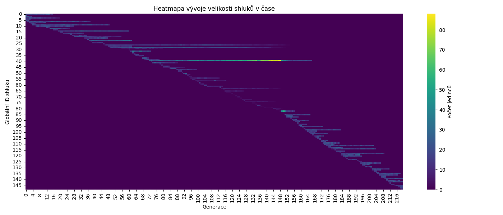